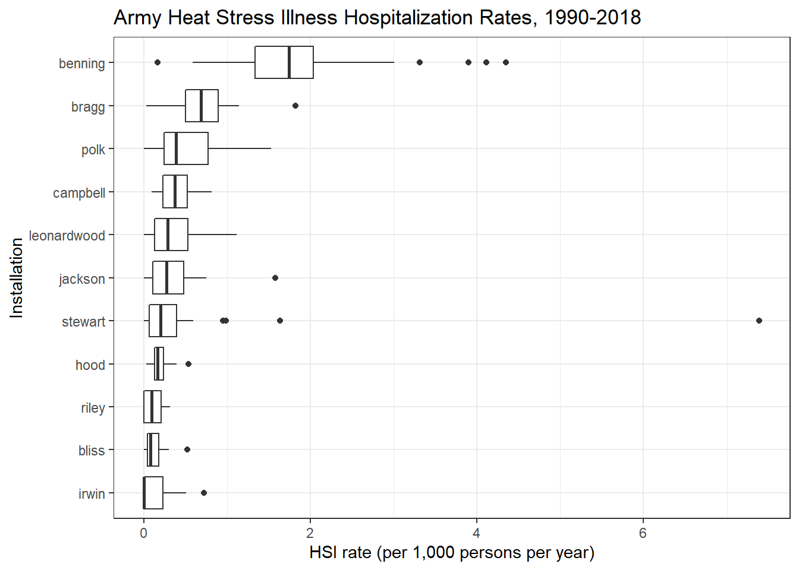
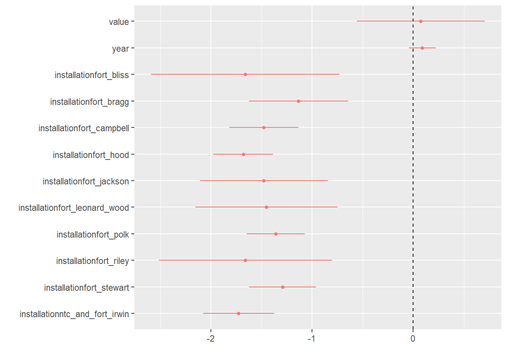
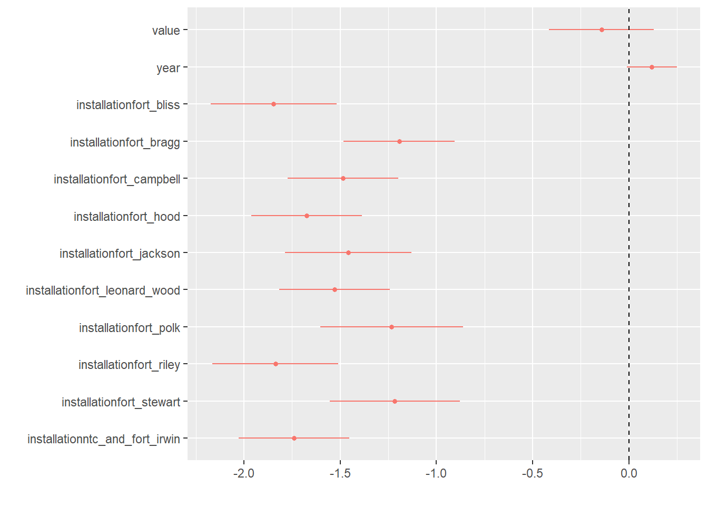

dmed_models_hospitalization
Annual models from DMED data.
Scope:
CONUS Army Installations:
Fort Jackson, SC
Fort Benning, GA
Fort Bragg, NC
Fort Campbell, KY
Fort Polk, LA
Fort Hood, TX
Fort Stewart, GA
Fort Leonard Wood, MO
Fort Riley, KS
Fort Irwin, CA
Fort Bliss, TX
Population: Active-duty Army service members
Outcome: Hospitalization (In-patient)
Annual Rate of Heat Stress Illness (any type, primary diagnosis)
1997 - 2018
Exposure indices:
“Absolute” indices
Annual mean (full-year): temperature, heat index, WBGT
Annual heat risk days / hours - Heat index above 80 / 90 / 103 / 125 °F - WBGT above 82 / 85 / 88 / 90 °F
“Relative” indices (averaged over full-year and heat season months) Annual mean daily anomaly: temperature, heat index, WBGT
Annual maximum daily anomaly: temperature, heat index, WBGT
Days mean temperature index above daily climate normal percentile (averaged over all hours of day)
- temperature, heat index, WBGT above 85th / 90th / 95th percentiles
Days maximum temperature index above daily climate normal maximum percentile
- temperature, heat index, WBGT above 85th / 90th / 95th percentiles
Days mean temperature index above Standard Deviation(s) of mean daily temperature climate normal
- temperature, heat index, WBGT above 1 or 2 standard deviations of daily normal
Days maximum temperature index above Standard Deviation(s) of max daily temperature climate normal
- temperature, heat index, WBGT above 1 or 2 standard deviations of maximum daily normal
# Outcomes
dmed_tidy <-
read_rds("data/dmed_tidy.rds")
dmed_tidy## # A tibble: 11,955 x 9
## type category year count population rate location strata hsi
## <fct> <fct> <int> <dbl> <dbl> <dbl> <fct> <fct> <fct>
## 1 Ambulatory Data Male 1997 0 6057. 0 jackson gender hexhsa~
## 2 Ambulatory Data Female 1997 0 2749. 0 jackson gender hexhsa~
## 3 Ambulatory Data Total 1997 0 8806. 0 jackson gender hexhsa~
## 4 Hospitalizatio~ Male 1997 0 6057. 0 jackson gender hexhsa~
## 5 Hospitalizatio~ Female 1997 0 2749. 0 jackson gender hexhsa~
## 6 Hospitalizatio~ Total 1997 0 8806. 0 jackson gender hexhsa~
## 7 Reportable Eve~ Male 1997 0 6057. 0 jackson gender hexhsa~
## 8 Reportable Eve~ Female 1997 0 2749. 0 jackson gender hexhsa~
## 9 Reportable Eve~ Total 1997 0 8806. 0 jackson gender hexhsa~
## 10 Ambulatory Data Male 1998 0 6456. 0 jackson gender hexhsa~
## # ... with 11,945 more rows# Exposures
annual_tables_list <-
read_rds("data/annual_tables_list.rds")
annual_tables_list## # A tibble: 25 x 2
## # Groups: installation [25]
## installation data
## <chr> <list<df[,31]>>
## 1 eglin_afb [86 x 31]
## 2 fort_benning_ga [86 x 31]
## 3 fort_bliss [86 x 31]
## 4 fort_bragg [86 x 31]
## 5 fort_campbell [86 x 31]
## 6 fort_carson [86 x 31]
## 7 fort_drum [86 x 31]
## 8 fort_gordon [86 x 31]
## 9 fort_hood [86 x 31]
## 10 fort_jackson [86 x 31]
## # ... with 15 more rowsTable of HSI Hospitalization Rates
Hospitalization rates (per 1,000 persons per year) of any heat stress illness type (Army personnel)
dmed_tidy <-
read_rds("data/dmed_tidy.rds")
dmed_tidy %>%
filter(!location %in% c("us", "overseas"),
type == "Hospitalizations",
hsi == "all",
strata == "gender",
category == "Total") %>%
dplyr::select(location, year, rate) %>%
pivot_wider(., names_from = year, values_from = rate) %>%
knitr::kable(digits = 2) %>%
kable_styling(bootstrap_options = "striped", font_size = 10) %>%
scroll_box(width = "700px") | location | 1990 | 1991 | 1992 | 1993 | 1994 | 1995 | 1996 | 1997 | 1998 | 1999 | 2000 | 2001 | 2002 | 2003 | 2004 | 2005 | 2006 | 2007 | 2008 | 2009 | 2010 | 2011 | 2012 | 2013 | 2014 | 2015 | 2016 | 2017 | 2018 |
|---|---|---|---|---|---|---|---|---|---|---|---|---|---|---|---|---|---|---|---|---|---|---|---|---|---|---|---|---|---|
| jackson | 0.00 | 1.58 | 0.47 | 0.22 | 0.60 | 0.00 | 0.11 | 0.00 | 0.75 | 0.30 | 0.17 | 0.27 | 0.20 | 0.11 | 0.63 | 0.34 | 0.10 | 0.10 | 0.25 | 0.45 | 0.29 | 0.11 | 0.33 | 0.10 | 0.45 | 0.00 | 0.58 | 0.54 | 0.53 |
| benning | 0.16 | 0.87 | 1.39 | 0.73 | 1.23 | 1.74 | 0.58 | 1.47 | 1.33 | 1.45 | 1.75 | 1.98 | 1.27 | 2.11 | 2.09 | 2.00 | 1.21 | 2.03 | 1.55 | 1.71 | 1.82 | 1.85 | 1.45 | 1.85 | 4.35 | 4.11 | 3.31 | 3.90 | 3.00 |
| bragg | 0.02 | 0.91 | 0.27 | 0.42 | 0.42 | 0.50 | 0.54 | 0.32 | 0.73 | 0.93 | 0.83 | 1.82 | 0.92 | 0.59 | 1.14 | 0.71 | 0.79 | 0.40 | 0.74 | 0.67 | 0.94 | 0.89 | 0.68 | 1.11 | 0.58 | 0.68 | 0.58 | 0.45 | 0.54 |
| campbell | 0.18 | 0.33 | 0.23 | 0.59 | 0.37 | 0.43 | 0.13 | 0.26 | 0.39 | 0.59 | 0.30 | 0.21 | 0.37 | 0.28 | 0.42 | 0.31 | 0.10 | 0.60 | 0.13 | 0.34 | 0.09 | 0.52 | 0.21 | 0.52 | 0.46 | 0.38 | 0.66 | 0.81 | 0.67 |
| polk | 0.06 | 0.38 | 0.39 | 0.37 | 0.24 | 0.83 | 0.00 | 1.53 | 1.46 | 0.50 | 0.36 | 0.47 | 0.23 | 0.11 | 0.11 | 0.25 | 1.10 | 0.80 | 0.36 | 0.68 | 0.54 | 0.11 | 0.23 | 0.36 | 0.38 | 0.94 | 0.78 | 0.77 | 0.64 |
| hood | 0.03 | 0.06 | 0.16 | 0.17 | 0.02 | 0.22 | 0.11 | 0.16 | 0.21 | 0.16 | 0.31 | 0.24 | 0.29 | 0.09 | 0.07 | 0.13 | 0.12 | 0.21 | 0.13 | 0.06 | 0.14 | 0.15 | 0.39 | 0.29 | 0.12 | 0.53 | 0.23 | 0.28 | 0.22 |
| stewart | 0.00 | 7.39 | 1.64 | 0.98 | 0.19 | 0.12 | 0.19 | 0.38 | 0.95 | 0.19 | 0.20 | 0.07 | 0.53 | 0.00 | 0.37 | 0.00 | 0.07 | 0.25 | 0.06 | 0.29 | 0.11 | 0.36 | 0.05 | 0.17 | 0.59 | 0.44 | 0.06 | 0.39 | 0.26 |
| leonardwood | 0.12 | 0.77 | 0.00 | 0.62 | 0.43 | 0.00 | 0.13 | 0.38 | 0.60 | 0.00 | 0.20 | 0.56 | 0.23 | 0.11 | 0.43 | 0.99 | 0.00 | 0.29 | 0.18 | 0.09 | 0.36 | 0.18 | 0.30 | 0.28 | 0.33 | 0.66 | 1.11 | 0.53 | 0.22 |
| riley | 0.00 | 0.00 | 0.00 | 0.00 | 0.07 | 0.15 | 0.00 | 0.00 | 0.10 | 0.10 | 0.30 | 0.30 | 0.00 | 0.29 | 0.09 | 0.00 | 0.25 | 0.21 | 0.07 | 0.06 | 0.11 | 0.31 | 0.00 | 0.06 | 0.17 | 0.06 | 0.31 | 0.20 | 0.27 |
| irwin | 0.00 | 0.50 | 0.23 | 0.23 | 0.00 | 0.23 | 0.00 | 0.00 | 0.00 | 0.00 | 0.22 | 0.22 | 0.00 | 0.00 | 0.00 | 0.00 | 0.23 | 0.24 | 0.00 | 0.72 | 0.00 | 0.22 | 0.00 | 0.00 | 0.00 | 0.26 | 0.00 | 0.26 | 0.00 |
| bliss | 0.06 | 0.06 | 0.52 | 0.28 | 0.30 | 0.09 | 0.00 | 0.22 | 0.00 | 0.21 | 0.10 | 0.20 | 0.00 | 0.00 | 0.10 | 0.10 | 0.00 | 0.07 | 0.06 | 0.00 | 0.23 | 0.08 | 0.18 | 0.04 | 0.08 | 0.04 | 0.08 | 0.04 | 0.04 |
Plots of HSI Hospitalization Rates
dmed_tidy %>%
filter(!location %in% c("us", "overseas"),
type == "Hospitalizations",
hsi == "all",
strata == "gender",
category == "Total") %>%
ggplot(aes(x = year, y = rate, color = location)) +
geom_point() +
geom_line() +
labs(
title = "Army Heat Stress Illness Hospitalization Rates",
x = "Year",
y = "HSI rate (per 1,000 persons per year)"
) +
theme_bw() +
theme(strip.text = element_text(size = 6)) +
theme(axis.text.x = element_text(angle = 90, hjust = 1))dmed_tidy %>%
filter(!location %in% c("us", "overseas"),
type == "Hospitalizations",
hsi == "all",
strata == "gender",
category == "Total") %>%
ggplot(aes(x = fct_reorder(location, rate), y = rate)) +
geom_boxplot() +
coord_flip() +
labs(
title = "Army Heat Stress Illness Hospitalization Rates, 1990-2018",
x = "Installation",
y = "HSI rate (per 1,000 persons per year)"
) +
theme_bw() 
dmed_tidy %>%
filter(!location %in% c("us", "overseas"),
type == "Hospitalizations",
hsi == "all",
strata == "gender",
category == "Total") %>%
ggplot(aes(x = rate, y = fct_reorder(location,rate))) +
ggridges::geom_density_ridges(scale = 0.75) +
labs(
title = "Army Heat Stress Illness Hospitalization Rates, 1990-2018",
x = "Installation",
y = "HSI rate (per 1,000 persons per year)"
) +
theme_bw() ## Picking joint bandwidth of 0.111
index_long <-
annual_tables_list %>%
filter(installation %in% c("fort_benning_ga", "fort_bragg", "fort_campbell", "fort_jackson",
"fort_polk", "fort_hood", "fort_stewart", "fort_leonard_wood", "fort_riley",
"ntc_and_fort_irwin", "fort_bliss")) %>%
unnest(data) %>%
pivot_longer(., cols = `1990`:`2019`, names_to = "year", values_to = "value") %>%
mutate(year = as.integer(year))
hsi_rates <-
dmed_tidy %>%
filter(location %in% c("benning", "bragg", "campbell", "jackson",
"polk", "hood", "stewart", "leonardwood",
"riley", "irwin", "bliss"),
type == "Hospitalizations",
hsi == "all",
strata == "gender",
category == "Total") %>%
dplyr::select(location, year, rate) %>%
mutate(location = recode(location, jackson = "fort_jackson"),
location = recode(location, benning = "fort_benning_ga"),
location = recode(location, bragg = "fort_bragg"),
location = recode(location, campbell = "fort_campbell"),
location = recode(location, polk = "fort_polk"),
location = recode(location, hood = "fort_hood"),
location = recode(location, stewart = "fort_stewart"),
location = recode(location, leonardwood = "fort_leonard_wood"),
location = recode(location, riley = "fort_riley"),
location = recode(location, irwin = "ntc_and_fort_irwin"),
location = recode(location, bliss = "fort_bliss"),
location = as.character(location))
hsi_rates## # A tibble: 319 x 3
## location year rate
## <chr> <int> <dbl>
## 1 fort_jackson 1990 0
## 2 fort_jackson 1991 1.58
## 3 fort_jackson 1992 0.473
## 4 fort_jackson 1993 0.215
## 5 fort_jackson 1994 0.599
## 6 fort_jackson 1995 0
## 7 fort_jackson 1996 0.112
## 8 fort_jackson 1997 0
## 9 fort_jackson 1998 0.751
## 10 fort_jackson 1999 0.305
## # ... with 309 more rows# Join table
joined_rate <-
index_long %>%
left_join(hsi_rates, by = c("installation" = "location", "year" = "year")) %>%
drop_na(rate)
joined_rate## # A tibble: 27,434 x 5
## # Groups: installation [11]
## installation index year value rate
## <chr> <chr> <int> <dbl> <dbl>
## 1 fort_benning_ga tmp_f_mean 1990 68.1 0.161
## 2 fort_benning_ga tmp_f_mean 1991 66.5 0.871
## 3 fort_benning_ga tmp_f_mean 1992 64.7 1.39
## 4 fort_benning_ga tmp_f_mean 1993 65.4 0.732
## 5 fort_benning_ga tmp_f_mean 1994 65.5 1.23
## 6 fort_benning_ga tmp_f_mean 1995 65.7 1.74
## 7 fort_benning_ga tmp_f_mean 1996 64.7 0.582
## 8 fort_benning_ga tmp_f_mean 1997 65.2 1.47
## 9 fort_benning_ga tmp_f_mean 1998 67.7 1.33
## 10 fort_benning_ga tmp_f_mean 1999 66.4 1.45
## # ... with 27,424 more rowsScatterplots of Temperature/Heat Index and HSI Rates
Each point represents a year from 1997 - 2018.
The back line is a linear regression and the blue curve is a loess smoothed conditional means curve.
joined_rate %>%
filter(installation == "fort_benning_ga") %>%
ggplot(aes(x = value, y = rate)) +
geom_point() +
geom_smooth(method = lm, se = FALSE, size = 0.5, color = "black") +
geom_smooth(se = FALSE, size = 0.5) +
facet_wrap(~ index, scales = "free_x") +
labs(
title = "Army Heat Stress Illness Hospitalization Rates and Annual Temperature/Heat Indices \n Fort Benning, GA",
x = "Index value",
y = "HSI rate (per 1,000 persons per year)",
caption = "Primary diagnosis"
) +
theme_bw() +
theme(strip.text = element_text(size = 6)) +
theme(axis.text.x = element_text(angle = 90, hjust = 1))## `geom_smooth()` using method = 'loess' and formula 'y ~ x'
joined_rate %>%
filter(installation == "fort_jackson") %>%
ggplot(aes(x = value, y = rate)) +
geom_point() +
geom_smooth(method = lm, se = FALSE, size = 0.5, color = "black") +
geom_smooth(se = FALSE, size = 0.5) +
facet_wrap(~ index, scales = "free_x") +
labs(
title = "Army Heat Stress Illness Hospitalization Rates and Annual Temperature/Heat Indices \n Fort Jackson, SC",
x = "Index value",
y = "HSI rate (per 1,000 persons per year)",
caption = "Primary diagnosis"
) +
theme_bw() +
theme(strip.text = element_text(size = 6)) +
theme(axis.text.x = element_text(angle = 90, hjust = 1))## `geom_smooth()` using method = 'loess' and formula 'y ~ x' joined_rate %>%
filter(installation == "fort_campbell") %>%
ggplot(aes(x = value, y = rate)) +
geom_point() +
geom_smooth(method = lm, se = FALSE, size = 0.5, color = "black") +
geom_smooth(se = FALSE, size = 0.5) +
facet_wrap(~ index, scales = "free_x") +
labs(
title = "Army Heat Stress Illness Hospitalization Rates and Annual Temperature/Heat Indices \n Fort Campbell, KY",
x = "Index value",
y = "HSI rate (per 1,000 persons per year)",
caption = "Primary diagnosis"
) +
theme_bw() +
theme(strip.text = element_text(size = 6)) +
theme(axis.text.x = element_text(angle = 90, hjust = 1))## `geom_smooth()` using method = 'loess' and formula 'y ~ x'
Linear models
# Linear regression function
annual_lm = function(df) {
df %>%
lm(rate ~ value, data = .)
}
# Nest by each installation - index pair
annual_hsi_nest <-
joined_rate %>%
nest(data = year:rate) %>%
mutate(linear_models = map(data, annual_lm),
glance = map(linear_models, broom::glance),
tidy = map(linear_models, broom::glance))
annual_hsi_nest## # A tibble: 946 x 6
## # Groups: installation [11]
## installation index data linear_models glance tidy
## <chr> <chr> <list<df[,> <list> <list> <list>
## 1 fort_benning_~ tmp_f_mean [29 x 3] <lm> <tibble [1 ~ <tibble [1~
## 2 fort_benning_~ heat_index~ [29 x 3] <lm> <tibble [1 ~ <tibble [1~
## 3 fort_benning_~ wbgt_f_mean [29 x 3] <lm> <tibble [1 ~ <tibble [1~
## 4 fort_benning_~ tmp_f_max [29 x 3] <lm> <tibble [1 ~ <tibble [1~
## 5 fort_benning_~ heat_index~ [29 x 3] <lm> <tibble [1 ~ <tibble [1~
## 6 fort_benning_~ wbgt_f_max [29 x 3] <lm> <tibble [1 ~ <tibble [1~
## 7 fort_benning_~ tmp_f_min [29 x 3] <lm> <tibble [1 ~ <tibble [1~
## 8 fort_benning_~ heat_index~ [29 x 3] <lm> <tibble [1 ~ <tibble [1~
## 9 fort_benning_~ wbgt_f_min [29 x 3] <lm> <tibble [1 ~ <tibble [1~
## 10 fort_benning_~ tmp_f_sd [29 x 3] <lm> <tibble [1 ~ <tibble [1~
## # ... with 936 more rowsLinear Models Summary Table
All models, sorted by R2
# Model summaries
annual_hsi_nest %>%
unnest(glance) %>%
unnest(tidy, names_repair = "universal") %>%
dplyr::select(installation, index, statistic...8, r.squared...5, p.value...9, logLik...11) %>%
rename(statistic = statistic...8,
r_squared = r.squared...5,
p_value = p.value...9,
log_lik = logLik...11) %>%
arrange(desc(r_squared), .by_group = FALSE) %>%
knitr::kable(digits = 4) %>%
kable_styling(bootstrap_options = "striped", font_size = 10) %>%
scroll_box(height = "700px")## New names:
## * r.squared -> r.squared...5
## * adj.r.squared -> adj.r.squared...6
## * sigma -> sigma...7
## * statistic -> statistic...8
## * p.value -> p.value...9
## * ... and 17 more problems| installation | index | statistic | r_squared | p_value | log_lik |
|---|---|---|---|---|---|
| fort_hood | days_wbgt_gt90pct_may_sep | 15.0414 | 0.3578 | 0.0006 | 29.4095 |
| fort_campbell | days_heat_index_gt85pct | 14.3895 | 0.3477 | 0.0008 | 14.1617 |
| fort_benning_ga | days_wbgt_max_gt90pct | 13.5184 | 0.3336 | 0.0010 | -34.7863 |
| fort_campbell | days_tmp_gt85pct | 13.0419 | 0.3257 | 0.0012 | 13.6817 |
| fort_hood | days_wbgt_gt95pct | 12.7868 | 0.3214 | 0.0013 | 28.6103 |
| fort_polk | hours_wbgt_gt90 | 11.9539 | 0.3069 | 0.0018 | -7.8643 |
| fort_polk | hours_wbgt_gt88 | 10.4633 | 0.2793 | 0.0032 | -8.4301 |
| fort_campbell | days_heat_index_gt90pct | 10.2062 | 0.2743 | 0.0035 | 12.6167 |
| fort_polk | days_wbgt_gt88 | 9.8813 | 0.2679 | 0.0040 | -8.6571 |
| fort_hood | days_wbgt_gt90pct | 9.6499 | 0.2633 | 0.0044 | 27.4195 |
| fort_hood | days_heat_index_gt90pct | 9.1480 | 0.2531 | 0.0054 | 27.2195 |
| fort_polk | days_wbgt_gt95pct | 9.0142 | 0.2503 | 0.0057 | -9.0021 |
| fort_campbell | days_tmp_gt90pct | 8.8228 | 0.2463 | 0.0062 | 12.0672 |
| fort_hood | days_heat_index_gt95pct | 8.7954 | 0.2457 | 0.0062 | 27.0774 |
| fort_hood | days_tmp_gt85pct | 8.1473 | 0.2318 | 0.0082 | 26.8125 |
| fort_hood | days_tmp_gt95pct | 8.1444 | 0.2317 | 0.0082 | 26.8113 |
| fort_hood | days_tmp_gt90pct | 7.9648 | 0.2278 | 0.0088 | 26.7370 |
| fort_hood | days_heat_index_gt85pct | 7.9497 | 0.2275 | 0.0089 | 26.7307 |
| fort_polk | days_wbgt_gt90 | 7.9480 | 0.2274 | 0.0089 | -9.4378 |
| fort_campbell | days_wbgt_gt85pct | 7.9054 | 0.2265 | 0.0091 | 11.6911 |
| fort_bliss | days_wbgt_max_gt85pct | 7.8182 | 0.2245 | 0.0094 | 25.0103 |
| fort_jackson | days_wbgt_gt85pct_may_sep | 7.7362 | 0.2227 | 0.0097 | -4.1087 |
| fort_benning_ga | days_wbgt_max_gt1sd | 7.7106 | 0.2221 | 0.0099 | -37.0297 |
| fort_bliss | days_heat_index_gt90pct | 7.6994 | 0.2219 | 0.0099 | 24.9607 |
| fort_benning_ga | days_wbgt_max_gt85pct | 7.4940 | 0.2173 | 0.0108 | -37.1204 |
| fort_jackson | days_hi_gt80 | 7.2477 | 0.2116 | 0.0120 | -4.3140 |
| fort_bliss | days_wbgt_gt90pct | 7.2272 | 0.2112 | 0.0121 | 24.7621 |
| fort_hood | days_wbgt_gt85pct | 6.8306 | 0.2019 | 0.0145 | 26.2588 |
| fort_polk | hours_wbgt_gt85 | 6.7455 | 0.1999 | 0.0150 | -9.9456 |
| fort_bliss | days_heat_index_gt85pct | 6.6609 | 0.1979 | 0.0156 | 24.5201 |
| fort_leonard_wood | days_wbgt_max_gt2sd_may_sep | 6.2370 | 0.1877 | 0.0189 | -1.6299 |
| fort_leonard_wood | days_wbgt_max_gt2sd | 6.0308 | 0.1826 | 0.0208 | -1.7201 |
| fort_campbell | days_heat_index_max_gt2sd | 5.9418 | 0.1804 | 0.0217 | 10.8515 |
| fort_campbell | days_wbgt_max_gt90pct | 5.9152 | 0.1797 | 0.0219 | 10.8398 |
| fort_bliss | days_wbgt_max_gt1sd | 5.9053 | 0.1795 | 0.0220 | 24.1909 |
| fort_benning_ga | days_heat_index_max_gt90pct | 5.8216 | 0.1774 | 0.0229 | -37.8411 |
| fort_bliss | days_tmp_gt90pct | 5.8104 | 0.1771 | 0.0230 | 24.1491 |
| fort_benning_ga | wbgt_f_max | 5.7530 | 0.1756 | 0.0236 | -37.8714 |
| fort_benning_ga | days_heat_index_max_gt1sd | 5.6857 | 0.1740 | 0.0244 | -37.9012 |
| fort_bliss | wbgt_f_mean_anomaly_mean_may_sep | 5.6781 | 0.1738 | 0.0245 | 24.0905 |
| fort_bliss | days_tmp_gt85pct | 5.5104 | 0.1695 | 0.0265 | 24.0159 |
| fort_bliss | days_wbgt_gt85pct | 5.4839 | 0.1688 | 0.0268 | 24.0041 |
| fort_bliss | days_wbgt_max_gt90pct | 5.3883 | 0.1664 | 0.0281 | 23.9613 |
| fort_hood | days_heat_index_max_gt2sd | 5.3124 | 0.1644 | 0.0291 | 25.5931 |
| fort_benning_ga | days_hi_gt80 | 5.2923 | 0.1639 | 0.0294 | -38.0768 |
| fort_benning_ga | days_wbgt_gt82 | 5.2840 | 0.1637 | 0.0295 | -38.0805 |
| fort_jackson | wbgt_f_max | 5.2756 | 0.1635 | 0.0296 | -5.1740 |
| fort_bliss | days_wbgt_gt88 | 5.2059 | 0.1616 | 0.0306 | 23.8794 |
| fort_jackson | days_wbgt_gt90pct_may_sep | 5.1415 | 0.1600 | 0.0316 | -5.2344 |
| fort_benning_ga | days_wbgt_max_gt2sd | 5.0562 | 0.1577 | 0.0329 | -38.1832 |
| fort_benning_ga | heat_index_max_anomaly_mean | 4.9311 | 0.1544 | 0.0350 | -38.2399 |
| fort_campbell | tmp_f_max | 4.8814 | 0.1531 | 0.0358 | 10.3771 |
| fort_bliss | wbgt_f_max | 4.8377 | 0.1519 | 0.0366 | 23.7127 |
| fort_bliss | wbgt_f_max_anomaly_mean_may_sep | 4.6165 | 0.1460 | 0.0408 | 23.6116 |
| fort_hood | days_hi_gt80 | 4.6163 | 0.1460 | 0.0408 | 25.2773 |
| fort_hood | heat_index_max_anomaly_mean | 4.5691 | 0.1447 | 0.0418 | 25.2556 |
| fort_benning_ga | days_heat_index_max_gt95pct | 4.5247 | 0.1435 | 0.0427 | -38.4256 |
| fort_benning_ga | days_wbgt_max_gt90pct_may_sep | 4.5127 | 0.1432 | 0.0429 | -38.4312 |
| fort_bliss | days_heat_index_max_gt95pct | 4.5088 | 0.1431 | 0.0430 | 23.5621 |
| fort_campbell | days_wbgt_max_gt85pct | 4.4953 | 0.1427 | 0.0433 | 10.2004 |
| fort_hood | wbgt_f_max_anomaly_mean | 4.4931 | 0.1427 | 0.0434 | 25.2207 |
| fort_benning_ga | days_wbgt_gt85 | 4.4729 | 0.1421 | 0.0438 | -38.4495 |
| fort_hood | days_wbgt_max_gt1sd | 4.4722 | 0.1421 | 0.0438 | 25.2110 |
| fort_hood | heat_index_mean_anomaly_mean | 4.4694 | 0.1420 | 0.0439 | 25.2097 |
| fort_hood | heat_index_mean | 4.4178 | 0.1406 | 0.0450 | 25.1859 |
| fort_bliss | wbgt_f_mean | 4.4079 | 0.1403 | 0.0453 | 23.5156 |
| fort_hood | days_wbgt_max_gt2sd | 4.3682 | 0.1393 | 0.0462 | 25.1630 |
| fort_benning_ga | days_heat_index_max_gt85pct | 4.3370 | 0.1384 | 0.0469 | -38.5122 |
| fort_bliss | wbgt_f_mean_anomaly_mean | 4.3267 | 0.1381 | 0.0471 | 23.4781 |
| fort_polk | days_wbgt_gt85 | 4.2947 | 0.1372 | 0.0479 | -11.0388 |
| fort_hood | days_heat_index_max_gt90pct | 4.0937 | 0.1317 | 0.0530 | 25.0356 |
| fort_polk | hours_hi_gt103 | 4.0694 | 0.1310 | 0.0537 | -11.1436 |
| fort_bliss | heat_index_mean_anomaly_mean_may_sep | 4.0567 | 0.1306 | 0.0541 | 23.3526 |
| fort_bliss | days_wbgt_gt90 | 4.0565 | 0.1306 | 0.0541 | 23.3524 |
| fort_hood | days_heat_index_max_gt95pct | 4.0264 | 0.1298 | 0.0549 | 25.0042 |
| fort_benning_ga | wbgt_f_max_anomaly_mean | 4.0254 | 0.1297 | 0.0549 | -38.6571 |
| fort_hood | days_tmp_gt95pct_may_sep | 3.9938 | 0.1289 | 0.0558 | 24.9889 |
| fort_bliss | days_heat_index_max_gt90pct | 3.9905 | 0.1288 | 0.0559 | 23.3216 |
| fort_hood | tmp_f_mean_anomaly_mean | 3.9180 | 0.1267 | 0.0580 | 24.9534 |
| fort_leonard_wood | days_wbgt_max_gt90pct | 3.9113 | 0.1265 | 0.0583 | -2.6817 |
| fort_benning_ga | hours_wbgt_gt82 | 3.8957 | 0.1261 | 0.0587 | -38.7178 |
| fort_campbell | heat_index_mean | 3.8905 | 0.1259 | 0.0589 | 9.9193 |
| fort_campbell | wbgt_f_mean | 3.8896 | 0.1259 | 0.0589 | 9.9189 |
| fort_hood | tmp_f_mean | 3.8814 | 0.1257 | 0.0592 | 24.9362 |
| fort_benning_ga | days_tmp_max_gt1sd | 3.8751 | 0.1255 | 0.0594 | -38.7275 |
| fort_bliss | days_wbgt_max_gt2sd | 3.8263 | 0.1241 | 0.0609 | 23.2446 |
| fort_campbell | wbgt_f_mean_anomaly_mean | 3.7970 | 0.1233 | 0.0618 | 9.8753 |
| fort_campbell | heat_index_mean_anomaly_mean | 3.7849 | 0.1229 | 0.0622 | 9.8696 |
| fort_bliss | days_tmp_max_gt90pct | 3.7597 | 0.1222 | 0.0630 | 23.2132 |
| fort_hood | wbgt_f_mean_anomaly_mean | 3.7312 | 0.1214 | 0.0640 | 24.8656 |
| fort_benning_ga | wbgt_f_max_anomaly_mean_may_sep | 3.7265 | 0.1213 | 0.0641 | -38.7975 |
| fort_benning_ga | days_wbgt_gt85pct | 3.7196 | 0.1211 | 0.0644 | -38.8007 |
| fort_polk | heat_index_max | 3.7017 | 0.1206 | 0.0650 | -11.3162 |
| fort_hood | days_heat_index_max_gt85pct | 3.6845 | 0.1201 | 0.0655 | 24.8435 |
| fort_hood | wbgt_f_mean | 3.6844 | 0.1201 | 0.0655 | 24.8435 |
| fort_bliss | tmp_f_mean_anomaly_mean_may_sep | 3.6572 | 0.1193 | 0.0665 | 23.1648 |
| fort_stewart | heat_index_max | 3.6540 | 0.1192 | 0.0666 | -47.7256 |
| fort_bliss | hours_wbgt_gt88 | 3.6526 | 0.1192 | 0.0667 | 23.1627 |
| fort_hood | tmp_f_max_anomaly_mean | 3.5760 | 0.1170 | 0.0694 | 24.7921 |
| fort_benning_ga | days_wbgt_gt90pct | 3.5644 | 0.1166 | 0.0698 | -38.8742 |
| fort_hood | days_wbgt_max_gt85pct | 3.5069 | 0.1150 | 0.0720 | 24.7594 |
| fort_polk | days_heat_index_max_gt95pct_may_sep | 3.5007 | 0.1148 | 0.0722 | -11.4115 |
| fort_benning_ga | hours_wbgt_gt85 | 3.4505 | 0.1133 | 0.0742 | -38.9283 |
| fort_bliss | days_heat_index_max_gt1sd | 3.4102 | 0.1121 | 0.0758 | 23.0476 |
| fort_bliss | wbgt_f_max_anomaly_mean | 3.3844 | 0.1114 | 0.0768 | 23.0352 |
| fort_hood | days_heat_index_max_gt1sd | 3.3637 | 0.1108 | 0.0777 | 24.6911 |
| fort_bliss | heat_index_mean | 3.3528 | 0.1105 | 0.0781 | 23.0201 |
| fort_stewart | wbgt_f_min | 3.3517 | 0.1104 | 0.0782 | -47.8693 |
| fort_campbell | days_heat_index_max_gt95pct | 3.3345 | 0.1099 | 0.0789 | 9.6559 |
| fort_benning_ga | tmp_f_max_anomaly_mean | 3.2970 | 0.1088 | 0.0805 | -39.0016 |
| fort_bliss | heat_index_mean_anomaly_mean | 3.2935 | 0.1087 | 0.0807 | 22.9918 |
| fort_hood | days_wbgt_max_gt90pct | 3.2715 | 0.1081 | 0.0816 | 24.6470 |
| fort_polk | days_hi_gt103 | 3.2501 | 0.1074 | 0.0826 | -11.5311 |
| fort_stewart | days_wbgt_gt90 | 3.2498 | 0.1074 | 0.0826 | -47.9180 |
| fort_bliss | days_heat_index_gt95pct | 3.0945 | 0.1028 | 0.0899 | 22.8962 |
| fort_leonard_wood | days_wbgt_max_gt1sd | 3.0737 | 0.1022 | 0.0909 | -3.0800 |
| fort_jackson | days_wbgt_gt88 | 3.0447 | 0.1013 | 0.0924 | -6.2125 |
| fort_campbell | wbgt_f_max_anomaly_mean | 3.0319 | 0.1010 | 0.0930 | 9.5105 |
| fort_riley | days_wbgt_gt90pct | 3.0120 | 0.1004 | 0.0941 | 23.6715 |
| fort_polk | days_hi_gt80 | 2.9546 | 0.0986 | 0.0971 | -11.6734 |
| fort_polk | days_heat_index_max_gt90pct_may_sep | 2.8972 | 0.0969 | 0.1002 | -11.7012 |
| fort_bliss | heat_index_max_anomaly_mean_may_sep | 2.8898 | 0.0967 | 0.1006 | 22.7973 |
| fort_polk | days_wbgt_max_gt1sd_may_sep | 2.8722 | 0.0961 | 0.1016 | -11.7134 |
| fort_stewart | tmp_f_min | 2.8506 | 0.0955 | 0.1029 | -48.1107 |
| fort_stewart | heat_index_min | 2.8506 | 0.0955 | 0.1029 | -48.1107 |
| fort_bliss | days_wbgt_gt95pct | 2.8305 | 0.0949 | 0.1040 | 22.7685 |
| fort_bliss | days_tmp_max_gt1sd | 2.8068 | 0.0942 | 0.1054 | 22.7569 |
| fort_polk | days_wbgt_max_gt90pct_may_sep | 2.7987 | 0.0939 | 0.1059 | -11.7491 |
| fort_leonard_wood | days_wbgt_max_gt85pct | 2.7769 | 0.0933 | 0.1072 | -3.2239 |
| fort_bliss | days_tmp_max_gt95pct | 2.7764 | 0.0932 | 0.1072 | 22.7422 |
| fort_leonard_wood | days_heat_index_gt95pct | 2.7672 | 0.0930 | 0.1078 | -3.2286 |
| fort_jackson | days_wbgt_gt90 | 2.7670 | 0.0930 | 0.1078 | -6.3472 |
| fort_bliss | days_wbgt_max_gt85pct_may_sep | 2.7523 | 0.0925 | 0.1087 | 22.7304 |
| fort_bliss | days_tmp_max_gt85pct | 2.7489 | 0.0924 | 0.1089 | 22.7287 |
| fort_benning_ga | days_heat_index_gt95pct | 2.7399 | 0.0921 | 0.1095 | -39.2707 |
| fort_bliss | tmp_f_mean | 2.7023 | 0.0910 | 0.1118 | 22.7060 |
| fort_leonard_wood | days_wbgt_max_gt85pct_may_sep | 2.6957 | 0.0908 | 0.1122 | -3.2635 |
| fort_bliss | heat_index_max_anomaly_mean | 2.6668 | 0.0899 | 0.1141 | 22.6887 |
| fort_benning_ga | heat_index_max_anomaly_mean_may_sep | 2.6585 | 0.0896 | 0.1146 | -39.3104 |
| fort_campbell | tmp_f_mean | 2.6542 | 0.0895 | 0.1149 | 9.3270 |
| fort_hood | hours_wbgt_gt90 | 2.6505 | 0.0894 | 0.1151 | 24.3464 |
| fort_bliss | tmp_f_mean_anomaly_mean | 2.6462 | 0.0893 | 0.1154 | 22.6786 |
| fort_bliss | days_heat_index_max_gt2sd | 2.6342 | 0.0889 | 0.1162 | 22.6727 |
| fort_leonard_wood | wbgt_f_mean | 2.6301 | 0.0888 | 0.1165 | -3.2955 |
| fort_leonard_wood | tmp_f_min | 2.6277 | 0.0887 | 0.1166 | -3.2967 |
| fort_leonard_wood | heat_index_min | 2.6277 | 0.0887 | 0.1166 | -3.2967 |
| fort_leonard_wood | wbgt_f_mean_anomaly_mean | 2.6140 | 0.0883 | 0.1175 | -3.3034 |
| fort_benning_ga | days_tmp_max_gt85pct | 2.6132 | 0.0882 | 0.1176 | -39.3326 |
| fort_hood | heat_index_max | 2.5970 | 0.0877 | 0.1187 | 24.3203 |
| fort_hood | tmp_f_max | 2.5925 | 0.0876 | 0.1190 | 24.3181 |
| fort_benning_ga | days_wbgt_gt88 | 2.5877 | 0.0875 | 0.1193 | -39.3451 |
| fort_campbell | days_heat_index_max_gt1sd | 2.5871 | 0.0874 | 0.1194 | 9.2942 |
| fort_campbell | tmp_f_mean_anomaly_mean | 2.5800 | 0.0872 | 0.1199 | 9.2907 |
| fort_benning_ga | days_wbgt_gt95pct | 2.5799 | 0.0872 | 0.1199 | -39.3489 |
| fort_bliss | days_wbgt_gt82 | 2.5661 | 0.0868 | 0.1208 | 22.6394 |
| fort_bliss | days_wbgt_max_gt1sd_may_sep | 2.5607 | 0.0866 | 0.1212 | 22.6367 |
| fort_campbell | days_heat_index_gt95pct | 2.5406 | 0.0860 | 0.1226 | 9.2714 |
| fort_benning_ga | days_wbgt_max_gt85pct_may_sep | 2.5222 | 0.0854 | 0.1239 | -39.3772 |
| fort_benning_ga | heat_index_mean | 2.5155 | 0.0852 | 0.1244 | -39.3805 |
| fort_benning_ga | heat_index_mean_anomaly_mean | 2.5061 | 0.0849 | 0.1251 | -39.3852 |
| fort_polk | days_wbgt_max_gt85pct_may_sep | 2.5036 | 0.0849 | 0.1252 | -11.8934 |
| fort_jackson | days_heat_index_gt90pct_may_sep | 2.4906 | 0.0845 | 0.1262 | -6.4825 |
| fort_benning_ga | days_tmp_gt85pct | 2.4778 | 0.0841 | 0.1271 | -39.3991 |
| fort_stewart | days_wbgt_max_gt90pct | 2.4508 | 0.0832 | 0.1291 | -48.3062 |
| fort_leonard_wood | wbgt_f_min | 2.4453 | 0.0830 | 0.1295 | -3.3862 |
| fort_jackson | wbgt_f_mean_anomaly_mean | 2.4337 | 0.0827 | 0.1304 | -6.5105 |
| fort_jackson | tmp_f_mean_anomaly_mean | 2.4276 | 0.0825 | 0.1309 | -6.5135 |
| fort_jackson | wbgt_f_mean | 2.4258 | 0.0824 | 0.1310 | -6.5143 |
| fort_jackson | days_tmp_max_gt1sd | 2.4216 | 0.0823 | 0.1313 | -6.5164 |
| fort_jackson | tmp_f_mean | 2.4211 | 0.0823 | 0.1314 | -6.5167 |
| fort_hood | days_tmp_max_gt95pct | 2.3917 | 0.0814 | 0.1336 | 24.2193 |
| fort_jackson | days_heat_index_gt85pct_may_sep | 2.3718 | 0.0808 | 0.1352 | -6.5410 |
| fort_jackson | heat_index_mean_anomaly_mean | 2.3686 | 0.0807 | 0.1354 | -6.5426 |
| fort_jackson | heat_index_mean | 2.3603 | 0.0804 | 0.1361 | -6.5467 |
| fort_benning_ga | days_heat_index_gt85pct | 2.3351 | 0.0796 | 0.1381 | -39.4694 |
| fort_polk | days_wbgt_max_gt1sd | 2.3146 | 0.0790 | 0.1398 | -11.9866 |
| fort_leonard_wood | wbgt_f_max_anomaly_mean | 2.2953 | 0.0784 | 0.1414 | -3.4603 |
| fort_benning_ga | days_tmp_gt90pct | 2.2912 | 0.0782 | 0.1417 | -39.4911 |
| fort_bliss | days_hi_gt80 | 2.2719 | 0.0776 | 0.1433 | 22.4944 |
| fort_leonard_wood | days_wbgt_gt85pct_may_sep | 2.2685 | 0.0775 | 0.1436 | -3.4736 |
| fort_bliss | days_tmp_max_gt2sd | 2.2517 | 0.0770 | 0.1451 | 22.4843 |
| fort_leonard_wood | days_wbgt_max_gt90pct_may_sep | 2.2515 | 0.0770 | 0.1451 | -3.4820 |
| fort_jackson | hours_wbgt_gt88 | 2.2358 | 0.0765 | 0.1464 | -6.6083 |
| fort_bliss | days_heat_index_max_gt85pct | 2.2286 | 0.0762 | 0.1471 | 22.4729 |
| fort_bliss | tmp_f_max_anomaly_mean_may_sep | 2.1718 | 0.0744 | 0.1521 | 22.4447 |
| fort_leonard_wood | days_wbgt_max_gt1sd_may_sep | 2.1676 | 0.0743 | 0.1525 | -3.5237 |
| fort_riley | days_wbgt_max_gt85pct | 2.1399 | 0.0734 | 0.1551 | 23.2438 |
| fort_riley | days_heat_index_gt95pct | 2.1348 | 0.0733 | 0.1555 | 23.2413 |
| fort_jackson | hours_wbgt_gt90 | 2.1332 | 0.0732 | 0.1557 | -6.6592 |
| fort_polk | days_wbgt_max_gt2sd_may_sep | 2.1284 | 0.0731 | 0.1561 | -12.0790 |
| fort_campbell | heat_index_max_anomaly_mean | 2.1209 | 0.0728 | 0.1568 | 9.0639 |
| fort_leonard_wood | wbgt_f_mean_anomaly_mean_may_sep | 2.1189 | 0.0728 | 0.1570 | -3.5479 |
| fort_stewart | days_wbgt_max_gt90pct_may_sep | 2.1056 | 0.0723 | 0.1583 | -48.4771 |
| fort_jackson | days_tmp_max_gt1sd_may_sep | 2.0873 | 0.0718 | 0.1600 | -6.6821 |
| fort_benning_ga | days_wbgt_max_gt1sd_may_sep | 2.0832 | 0.0716 | 0.1604 | -39.5945 |
| fort_stewart | tmp_f_max | 2.0562 | 0.0708 | 0.1631 | -48.5018 |
| fort_riley | days_wbgt_max_gt90pct | 2.0534 | 0.0707 | 0.1633 | 23.2007 |
| fort_benning_ga | days_tmp_max_gt95pct | 2.0447 | 0.0704 | 0.1642 | -39.6137 |
| fort_campbell | days_wbgt_max_gt1sd | 2.0344 | 0.0701 | 0.1652 | 9.0207 |
| fort_hood | days_tmp_max_gt85pct | 2.0292 | 0.0699 | 0.1658 | 24.0394 |
| fort_stewart | hours_wbgt_gt90 | 2.0155 | 0.0695 | 0.1671 | -48.5221 |
| fort_campbell | heat_index_sd | 2.0105 | 0.0693 | 0.1677 | 9.0088 |
| fort_hood | days_tmp_max_gt1sd | 1.9950 | 0.0688 | 0.1692 | 24.0223 |
| fort_benning_ga | days_tmp_max_gt2sd | 1.9922 | 0.0687 | 0.1695 | -39.6399 |
| fort_polk | days_wbgt_max_gt90pct | 1.9900 | 0.0686 | 0.1698 | -12.1481 |
| fort_stewart | days_heat_index_max_gt85pct | 1.9876 | 0.0686 | 0.1700 | -48.5361 |
| fort_leonard_wood | days_wbgt_gt85 | 1.9449 | 0.0672 | 0.1745 | -3.6348 |
| fort_leonard_wood | hours_wbgt_gt82 | 1.9372 | 0.0669 | 0.1753 | -3.6386 |
| fort_benning_ga | wbgt_f_mean | 1.9358 | 0.0669 | 0.1755 | -39.6682 |
| fort_benning_ga | wbgt_f_mean_anomaly_mean | 1.9289 | 0.0667 | 0.1762 | -39.6716 |
| fort_stewart | days_heat_index_max_gt90pct | 1.9244 | 0.0665 | 0.1767 | -48.5677 |
| fort_benning_ga | days_tmp_max_gt90pct | 1.9186 | 0.0663 | 0.1773 | -39.6768 |
| fort_benning_ga | days_hi_gt90 | 1.9176 | 0.0663 | 0.1775 | -39.6773 |
| fort_riley | days_heat_index_gt90pct | 1.9060 | 0.0659 | 0.1787 | 23.1270 |
| fort_benning_ga | days_hi_gt103 | 1.8923 | 0.0655 | 0.1802 | -39.6900 |
| fort_bliss | tmp_f_max_anomaly_mean | 1.8909 | 0.0655 | 0.1804 | 22.3044 |
| fort_benning_ga | hours_wbgt_gt88 | 1.8871 | 0.0653 | 0.1808 | -39.6926 |
| fort_benning_ga | tmp_f_mean | 1.8657 | 0.0646 | 0.1832 | -39.7033 |
| fort_benning_ga | tmp_f_mean_anomaly_mean | 1.8544 | 0.0643 | 0.1845 | -39.7090 |
| fort_stewart | hours_wbgt_gt85 | 1.8516 | 0.0642 | 0.1848 | -48.6042 |
| fort_jackson | wbgt_f_max_anomaly_mean | 1.8313 | 0.0635 | 0.1872 | -6.8103 |
| fort_campbell | days_heat_index_gt85pct_may_sep | 1.8288 | 0.0634 | 0.1875 | 8.9177 |
| fort_hood | days_wbgt_gt82 | 1.8019 | 0.0626 | 0.1907 | 23.9254 |
| fort_polk | days_wbgt_gt90pct | 1.7999 | 0.0625 | 0.1909 | -12.2434 |
| fort_benning_ga | hours_hi_gt103 | 1.7972 | 0.0624 | 0.1912 | -39.7378 |
| fort_campbell | days_heat_index_max_gt90pct | 1.7903 | 0.0622 | 0.1920 | 8.8983 |
| fort_riley | days_wbgt_gt85pct | 1.7901 | 0.0622 | 0.1921 | 23.0687 |
| fort_bliss | days_tmp_gt95pct | 1.7877 | 0.0621 | 0.1924 | 22.2525 |
| fort_jackson | tmp_f_mean_anomaly_mean_may_sep | 1.7814 | 0.0619 | 0.1931 | -6.8354 |
| fort_bliss | days_wbgt_max_gt2sd_may_sep | 1.7773 | 0.0618 | 0.1936 | 22.2473 |
| fort_hood | heat_index_max_anomaly_mean_may_sep | 1.7720 | 0.0616 | 0.1943 | 23.9104 |
| fort_campbell | days_tmp_max_gt95pct | 1.7633 | 0.0613 | 0.1953 | 8.8847 |
| fort_polk | wbgt_f_max | 1.7581 | 0.0611 | 0.1960 | -12.2645 |
| fort_riley | days_tmp_gt90pct | 1.7566 | 0.0611 | 0.1962 | 23.0519 |
| fort_bliss | hours_wbgt_gt90 | 1.7473 | 0.0608 | 0.1973 | 22.2321 |
| fort_bliss | days_wbgt_max_gt90pct_may_sep | 1.7456 | 0.0607 | 0.1975 | 22.2313 |
| fort_jackson | tmp_f_max_anomaly_mean | 1.7373 | 0.0605 | 0.1986 | -6.8576 |
| fort_stewart | hours_wbgt_gt88 | 1.7340 | 0.0603 | 0.1990 | -48.6635 |
| ntc_and_fort_irwin | days_wbgt_gt90pct | 1.7307 | 0.0602 | 0.1994 | 10.4437 |
| ntc_and_fort_irwin | days_tmp_gt90pct_may_sep | 1.7108 | 0.0596 | 0.2019 | 10.4337 |
| fort_campbell | wbgt_f_sd | 1.6988 | 0.0592 | 0.2035 | 8.8522 |
| ntc_and_fort_irwin | days_heat_index_gt95pct | 1.6717 | 0.0583 | 0.2070 | 10.4139 |
| fort_stewart | days_wbgt_max_gt85pct_may_sep | 1.6679 | 0.0582 | 0.2075 | -48.6968 |
| fort_stewart | days_tmp_max_gt1sd_may_sep | 1.6675 | 0.0582 | 0.2075 | -48.6970 |
| fort_hood | days_tmp_max_gt90pct | 1.6642 | 0.0581 | 0.2080 | 23.8559 |
| fort_hood | hours_wbgt_gt88 | 1.6623 | 0.0580 | 0.2082 | 23.8549 |
| fort_stewart | days_wbgt_max_gt85pct | 1.6439 | 0.0574 | 0.2107 | -48.7090 |
| fort_leonard_wood | days_wbgt_gt82 | 1.6436 | 0.0574 | 0.2107 | -3.7865 |
| fort_stewart | heat_index_max_anomaly_mean_may_sep | 1.6257 | 0.0568 | 0.2132 | -48.7182 |
| fort_jackson | hours_wbgt_gt85 | 1.6071 | 0.0562 | 0.2157 | -6.9235 |
| fort_hood | days_tmp_max_gt2sd | 1.6058 | 0.0561 | 0.2159 | 23.8264 |
| fort_jackson | heat_index_max_anomaly_mean | 1.6010 | 0.0560 | 0.2166 | -6.9266 |
| fort_campbell | tmp_f_sd | 1.5922 | 0.0557 | 0.2178 | 8.7982 |
| fort_benning_ga | days_heat_index_max_gt1sd_may_sep | 1.5845 | 0.0554 | 0.2189 | -39.8453 |
| fort_jackson | heat_index_mean_anomaly_mean_may_sep | 1.5745 | 0.0551 | 0.2203 | -6.9401 |
| fort_jackson | wbgt_f_mean_anomaly_mean_may_sep | 1.5665 | 0.0548 | 0.2215 | -6.9441 |
| ntc_and_fort_irwin | days_wbgt_gt95pct | 1.5425 | 0.0540 | 0.2249 | 10.3484 |
| fort_riley | hours_wbgt_gt90 | 1.5358 | 0.0538 | 0.2259 | 22.9401 |
| fort_hood | hours_wbgt_gt82 | 1.5333 | 0.0537 | 0.2263 | 23.7895 |
| fort_jackson | tmp_f_max_anomaly_mean_may_sep | 1.5309 | 0.0537 | 0.2266 | -6.9622 |
| fort_bliss | days_wbgt_gt85pct_may_sep | 1.5167 | 0.0532 | 0.2287 | 22.1154 |
| fort_hood | wbgt_f_max_anomaly_mean_may_sep | 1.5134 | 0.0531 | 0.2292 | 23.7794 |
| fort_benning_ga | days_heat_index_max_gt2sd | 1.5093 | 0.0529 | 0.2299 | -39.8835 |
| fort_stewart | days_hi_gt103 | 1.5051 | 0.0528 | 0.2305 | -48.7795 |
| fort_bliss | days_heat_index_gt85pct_may_sep | 1.4957 | 0.0525 | 0.2319 | 22.1047 |
| fort_stewart | days_heat_index_max_gt85pct_may_sep | 1.4840 | 0.0521 | 0.2337 | -48.7902 |
| fort_polk | wbgt_f_mean_anomaly_mean_may_sep | 1.4724 | 0.0517 | 0.2355 | -12.4092 |
| fort_riley | days_heat_index_gt95pct_may_sep | 1.4694 | 0.0516 | 0.2359 | 22.9063 |
| fort_hood | tmp_f_max_anomaly_mean_may_sep | 1.4689 | 0.0516 | 0.2360 | 23.7568 |
| fort_jackson | days_wbgt_gt85pct | 1.4661 | 0.0515 | 0.2365 | -6.9952 |
| fort_polk | days_wbgt_max_gt85pct | 1.4636 | 0.0514 | 0.2368 | -12.4137 |
| fort_campbell | heat_index_max | 1.4616 | 0.0514 | 0.2372 | 8.7318 |
| fort_leonard_wood | wbgt_f_max_anomaly_mean_may_sep | 1.4605 | 0.0513 | 0.2373 | -3.8795 |
| fort_benning_ga | hours_hi_gt90 | 1.4552 | 0.0511 | 0.2382 | -39.9110 |
| fort_stewart | days_wbgt_gt85 | 1.4506 | 0.0510 | 0.2389 | -48.8072 |
| fort_hood | hours_hi_gt90 | 1.4500 | 0.0510 | 0.2390 | 23.7472 |
| fort_stewart | days_tmp_max_gt1sd | 1.4463 | 0.0508 | 0.2396 | -48.8094 |
| fort_benning_ga | tmp_f_max_anomaly_mean_may_sep | 1.4421 | 0.0507 | 0.2402 | -39.9177 |
| fort_benning_ga | wbgt_f_mean_anomaly_mean_may_sep | 1.4186 | 0.0499 | 0.2440 | -39.9297 |
| fort_stewart | days_heat_index_max_gt95pct | 1.4080 | 0.0496 | 0.2457 | -48.8289 |
| fort_stewart | hours_hi_gt90 | 1.4023 | 0.0494 | 0.2467 | -48.8318 |
| fort_polk | days_heat_index_max_gt95pct | 1.4001 | 0.0493 | 0.2470 | -12.4461 |
| fort_jackson | heat_index_max | 1.3936 | 0.0491 | 0.2481 | -7.0321 |
| fort_riley | days_wbgt_max_gt1sd | 1.3934 | 0.0491 | 0.2481 | 22.8676 |
| fort_campbell | days_wbgt_gt90pct | 1.3913 | 0.0490 | 0.2485 | 8.6960 |
| fort_stewart | tmp_f_max_anomaly_mean_may_sep | 1.3882 | 0.0489 | 0.2490 | -48.8390 |
| fort_bliss | days_heat_index_gt95pct_may_sep | 1.3872 | 0.0489 | 0.2492 | 22.0494 |
| fort_bliss | days_heat_index_max_gt90pct_may_sep | 1.3779 | 0.0486 | 0.2507 | 22.0446 |
| ntc_and_fort_irwin | tmp_f_mean_anomaly_mean_may_sep | 1.3767 | 0.0485 | 0.2509 | 10.2639 |
| fort_bliss | heat_index_sd | 1.3725 | 0.0484 | 0.2516 | 22.0418 |
| fort_riley | wbgt_f_max | 1.3561 | 0.0478 | 0.2544 | 22.8485 |
| fort_bliss | days_hi_gt103 | 1.3461 | 0.0475 | 0.2561 | 22.0283 |
| fort_jackson | days_wbgt_max_gt1sd | 1.3428 | 0.0474 | 0.2567 | -7.0581 |
| ntc_and_fort_irwin | days_tmp_max_gt1sd_may_sep | 1.3330 | 0.0470 | 0.2584 | 10.2416 |
| fort_jackson | hours_hi_gt80 | 1.3329 | 0.0470 | 0.2584 | -7.0632 |
| fort_riley | days_heat_index_gt85pct | 1.3327 | 0.0470 | 0.2584 | 22.8365 |
| fort_riley | days_tmp_gt95pct | 1.3311 | 0.0470 | 0.2587 | 22.8357 |
| fort_hood | days_heat_index_gt95pct_may_sep | 1.3306 | 0.0470 | 0.2588 | 23.6862 |
| fort_polk | tmp_f_max | 1.3216 | 0.0467 | 0.2604 | -12.4862 |
| fort_bragg | days_hi_gt80 | 1.3203 | 0.0466 | 0.2606 | -7.9994 |
| fort_benning_ga | days_tmp_max_gt1sd_may_sep | 1.2984 | 0.0459 | 0.2645 | -39.9911 |
| fort_riley | days_tmp_gt85pct | 1.2807 | 0.0453 | 0.2677 | 22.8099 |
| fort_leonard_wood | days_tmp_gt95pct | 1.2678 | 0.0449 | 0.2701 | -3.9780 |
| fort_leonard_wood | days_wbgt_gt90pct | 1.2662 | 0.0448 | 0.2704 | -3.9788 |
| fort_jackson | days_wbgt_gt85 | 1.2515 | 0.0443 | 0.2731 | -7.1049 |
| fort_jackson | heat_index_max_anomaly_mean_may_sep | 1.2387 | 0.0439 | 0.2755 | -7.1114 |
| fort_hood | days_wbgt_gt90 | 1.2365 | 0.0438 | 0.2759 | 23.6379 |
| fort_hood | days_hi_gt103 | 1.2309 | 0.0436 | 0.2770 | 23.6351 |
| fort_stewart | days_heat_index_max_gt90pct_may_sep | 1.2305 | 0.0436 | 0.2771 | -48.9198 |
| fort_benning_ga | days_tmp_gt95pct | 1.2205 | 0.0432 | 0.2790 | -40.0311 |
| fort_campbell | tmp_f_max_anomaly_mean | 1.2198 | 0.0432 | 0.2791 | 8.6081 |
| fort_hood | hours_hi_gt80 | 1.2154 | 0.0431 | 0.2800 | 23.6271 |
| fort_stewart | days_heat_index_max_gt1sd | 1.2127 | 0.0430 | 0.2805 | -48.9289 |
| fort_leonard_wood | days_wbgt_gt85pct | 1.2100 | 0.0429 | 0.2811 | -4.0077 |
| fort_stewart | heat_index_sd | 1.2091 | 0.0429 | 0.2812 | -48.9308 |
| fort_stewart | heat_index_max_anomaly_mean | 1.2052 | 0.0427 | 0.2820 | -48.9328 |
| fort_campbell | days_heat_index_max_gt2sd_may_sep | 1.1879 | 0.0421 | 0.2854 | 8.5917 |
| fort_stewart | days_heat_index_max_gt1sd_may_sep | 1.1789 | 0.0418 | 0.2872 | -48.9463 |
| fort_campbell | days_wbgt_max_gt2sd_may_sep | 1.1785 | 0.0418 | 0.2873 | 8.5869 |
| fort_stewart | days_wbgt_gt88 | 1.1772 | 0.0418 | 0.2875 | -48.9472 |
| fort_hood | days_hi_gt90 | 1.1565 | 0.0411 | 0.2917 | 23.5968 |
| fort_stewart | wbgt_f_max_anomaly_mean_may_sep | 1.1506 | 0.0409 | 0.2929 | -48.9609 |
| fort_benning_ga | days_heat_index_max_gt85pct_may_sep | 1.1476 | 0.0408 | 0.2935 | -40.0686 |
| fort_riley | days_wbgt_gt90 | 1.1398 | 0.0405 | 0.2952 | 22.7375 |
| fort_campbell | days_tmp_max_gt90pct_may_sep | 1.1390 | 0.0405 | 0.2953 | 8.5665 |
| fort_campbell | days_heat_index_max_gt85pct | 1.1379 | 0.0404 | 0.2955 | 8.5660 |
| fort_hood | hours_wbgt_gt85 | 1.1353 | 0.0404 | 0.2961 | 23.5859 |
| fort_jackson | days_heat_index_gt85pct | 1.1110 | 0.0395 | 0.3012 | -7.1772 |
| fort_bliss | days_heat_index_max_gt1sd_may_sep | 1.1108 | 0.0395 | 0.3012 | 21.9075 |
| fort_stewart | days_tmp_max_gt85pct | 1.1090 | 0.0395 | 0.3016 | -48.9823 |
| fort_stewart | days_heat_index_max_gt2sd | 1.0964 | 0.0390 | 0.3043 | -48.9888 |
| fort_bliss | heat_index_max | 1.0928 | 0.0389 | 0.3051 | 21.8982 |
| fort_bliss | days_heat_index_max_gt95pct_may_sep | 1.0927 | 0.0389 | 0.3051 | 21.8982 |
| fort_stewart | tmp_f_sd | 1.0914 | 0.0389 | 0.3054 | -48.9914 |
| fort_riley | tmp_f_max | 1.0804 | 0.0385 | 0.3078 | 22.7068 |
| fort_stewart | days_tmp_max_gt85pct_may_sep | 1.0786 | 0.0384 | 0.3082 | -48.9980 |
| fort_jackson | hours_hi_gt103 | 1.0779 | 0.0384 | 0.3084 | -7.1942 |
| ntc_and_fort_irwin | days_tmp_max_gt2sd_may_sep | 1.0689 | 0.0381 | 0.3104 | 10.1058 |
| fort_bliss | hours_wbgt_gt82 | 1.0664 | 0.0380 | 0.3109 | 21.8845 |
| fort_hood | days_wbgt_gt88 | 1.0655 | 0.0380 | 0.3111 | 23.5499 |
| ntc_and_fort_irwin | days_tmp_max_gt85pct | 1.0590 | 0.0377 | 0.3126 | 10.1007 |
| fort_jackson | days_wbgt_max_gt2sd_may_sep | 1.0570 | 0.0377 | 0.3130 | -7.2050 |
| ntc_and_fort_irwin | days_tmp_max_gt1sd | 1.0497 | 0.0374 | 0.3147 | 10.0959 |
| fort_leonard_wood | days_heat_index_max_gt95pct_may_sep | 1.0454 | 0.0373 | 0.3156 | -4.0925 |
| fort_leonard_wood | heat_index_mean | 1.0415 | 0.0371 | 0.3165 | -4.0946 |
| fort_stewart | tmp_f_mean_anomaly_mean_may_sep | 1.0359 | 0.0369 | 0.3178 | -49.0201 |
| fort_leonard_wood | heat_index_mean_anomaly_mean | 1.0342 | 0.0369 | 0.3182 | -4.0983 |
| fort_bliss | hours_hi_gt80 | 1.0241 | 0.0365 | 0.3205 | 21.8627 |
| ntc_and_fort_irwin | tmp_f_max_anomaly_mean_may_sep | 1.0158 | 0.0363 | 0.3225 | 10.0783 |
| fort_leonard_wood | days_tmp_max_gt90pct_may_sep | 1.0147 | 0.0362 | 0.3227 | -4.1084 |
| fort_benning_ga | days_wbgt_gt90 | 1.0113 | 0.0361 | 0.3235 | -40.1390 |
| fort_riley | days_heat_index_max_gt85pct | 1.0021 | 0.0358 | 0.3257 | 22.6664 |
| fort_riley | days_heat_index_max_gt95pct | 1.0003 | 0.0357 | 0.3261 | 22.6654 |
| fort_polk | days_heat_index_max_gt1sd_may_sep | 1.0003 | 0.0357 | 0.3261 | -12.6517 |
| fort_stewart | tmp_f_max_anomaly_mean | 0.9959 | 0.0356 | 0.3272 | -49.0408 |
| ntc_and_fort_irwin | days_heat_index_gt90pct | 0.9947 | 0.0355 | 0.3274 | 10.0674 |
| fort_bliss | days_tmp_max_gt90pct_may_sep | 0.9922 | 0.0354 | 0.3281 | 21.8462 |
| fort_stewart | heat_index_mean_anomaly_mean_may_sep | 0.9855 | 0.0352 | 0.3297 | -49.0462 |
| fort_benning_ga | days_heat_index_gt90pct | 0.9827 | 0.0351 | 0.3303 | -40.1538 |
| fort_riley | days_wbgt_gt95pct | 0.9805 | 0.0350 | 0.3309 | 22.6551 |
| ntc_and_fort_irwin | days_tmp_max_gt90pct_may_sep | 0.9746 | 0.0348 | 0.3323 | 10.0570 |
| fort_jackson | wbgt_f_max_anomaly_mean_may_sep | 0.9724 | 0.0348 | 0.3328 | -7.2488 |
| fort_benning_ga | heat_index_mean_anomaly_mean_may_sep | 0.9692 | 0.0347 | 0.3336 | -40.1608 |
| fort_bragg | wbgt_f_max | 0.9691 | 0.0347 | 0.3336 | -8.1803 |
| fort_stewart | days_hi_gt90 | 0.9634 | 0.0345 | 0.3350 | -49.0576 |
| ntc_and_fort_irwin | hours_hi_gt80 | 0.9629 | 0.0344 | 0.3352 | 10.0509 |
| fort_bragg | heat_index_sd | 0.9579 | 0.0343 | 0.3364 | -8.1861 |
| fort_polk | days_heat_index_max_gt90pct | 0.9516 | 0.0340 | 0.3380 | -12.6770 |
| fort_benning_ga | wbgt_f_min | 0.9411 | 0.0337 | 0.3406 | -40.1754 |
| fort_benning_ga | days_wbgt_max_gt2sd_may_sep | 0.9402 | 0.0336 | 0.3408 | -40.1759 |
| fort_leonard_wood | days_tmp_max_gt95pct_may_sep | 0.9341 | 0.0334 | 0.3424 | -4.1502 |
| ntc_and_fort_irwin | days_tmp_max_gt85pct_may_sep | 0.9337 | 0.0334 | 0.3425 | 10.0357 |
| fort_leonard_wood | days_hi_gt90 | 0.9319 | 0.0334 | 0.3429 | -4.1513 |
| fort_campbell | days_wbgt_max_gt2sd | 0.9306 | 0.0333 | 0.3433 | 8.4588 |
| fort_jackson | days_heat_index_max_gt1sd | 0.9264 | 0.0332 | 0.3443 | -7.2727 |
| fort_bliss | wbgt_f_sd | 0.9255 | 0.0331 | 0.3446 | 21.8116 |
| fort_stewart | days_tmp_max_gt90pct | 0.9039 | 0.0324 | 0.3502 | -49.0885 |
| fort_bliss | days_wbgt_gt90pct_may_sep | 0.9024 | 0.0323 | 0.3506 | 21.7996 |
| fort_hood | days_wbgt_max_gt90pct_may_sep | 0.8977 | 0.0322 | 0.3518 | 23.4629 |
| fort_benning_ga | days_tmp_max_gt85pct_may_sep | 0.8926 | 0.0320 | 0.3532 | -40.2006 |
| fort_hood | heat_index_mean_anomaly_mean_may_sep | 0.8858 | 0.0318 | 0.3550 | 23.4567 |
| fort_polk | wbgt_f_mean | 0.8845 | 0.0317 | 0.3553 | -12.7118 |
| fort_stewart | days_tmp_max_gt2sd_may_sep | 0.8808 | 0.0316 | 0.3563 | -49.1005 |
| fort_stewart | hours_hi_gt103 | 0.8738 | 0.0314 | 0.3582 | -49.1042 |
| fort_bragg | heat_index_mean_anomaly_mean_may_sep | 0.8723 | 0.0313 | 0.3586 | -8.2306 |
| fort_leonard_wood | days_tmp_max_gt85pct_may_sep | 0.8616 | 0.0309 | 0.3615 | -4.1879 |
| fort_hood | days_tmp_gt90pct_may_sep | 0.8534 | 0.0306 | 0.3638 | 23.4398 |
| ntc_and_fort_irwin | days_tmp_gt95pct | 0.8532 | 0.0306 | 0.3638 | 9.9939 |
| fort_stewart | wbgt_f_max | 0.8525 | 0.0306 | 0.3640 | -49.1152 |
| fort_bragg | heat_index_max_anomaly_mean_may_sep | 0.8513 | 0.0306 | 0.3644 | -8.2415 |
| fort_campbell | days_tmp_gt90pct_may_sep | 0.8512 | 0.0306 | 0.3644 | 8.4175 |
| fort_jackson | days_tmp_max_gt2sd | 0.8461 | 0.0304 | 0.3658 | -7.3144 |
| fort_benning_ga | days_heat_index_max_gt90pct_may_sep | 0.8425 | 0.0303 | 0.3668 | -40.2267 |
| fort_riley | days_heat_index_max_gt90pct | 0.8410 | 0.0302 | 0.3672 | 22.5827 |
| fort_polk | wbgt_f_mean_anomaly_mean | 0.8405 | 0.0302 | 0.3674 | -12.7347 |
| fort_bliss | tmp_f_sd | 0.8391 | 0.0301 | 0.3678 | 21.7666 |
| fort_riley | days_heat_index_max_gt1sd | 0.8381 | 0.0301 | 0.3681 | 22.5812 |
| fort_benning_ga | hours_wbgt_gt90 | 0.8347 | 0.0300 | 0.3690 | -40.2307 |
| fort_hood | hours_hi_gt103 | 0.8278 | 0.0297 | 0.3710 | 23.4265 |
| fort_stewart | hours_wbgt_gt82 | 0.8239 | 0.0296 | 0.3721 | -49.1302 |
| fort_polk | days_tmp_max_gt90pct_may_sep | 0.8233 | 0.0296 | 0.3723 | -12.7437 |
| fort_riley | days_tmp_max_gt95pct | 0.8203 | 0.0295 | 0.3731 | 22.5719 |
| fort_leonard_wood | heat_index_mean_anomaly_mean_may_sep | 0.8190 | 0.0294 | 0.3735 | -4.2100 |
| fort_jackson | days_tmp_max_gt2sd_may_sep | 0.8177 | 0.0294 | 0.3739 | -7.3292 |
| fort_bragg | days_tmp_gt95pct_may_sep | 0.8147 | 0.0293 | 0.3747 | -8.2606 |
| fort_bragg | wbgt_f_mean_anomaly_mean_may_sep | 0.8060 | 0.0290 | 0.3772 | -8.2651 |
| fort_benning_ga | heat_index_sd | 0.8047 | 0.0289 | 0.3776 | -40.2463 |
| fort_hood | tmp_f_mean_anomaly_mean_may_sep | 0.8044 | 0.0289 | 0.3777 | 23.4143 |
| fort_bliss | days_tmp_gt85pct_may_sep | 0.8017 | 0.0288 | 0.3785 | 21.7471 |
| fort_benning_ga | tmp_f_mean_anomaly_mean_may_sep | 0.7965 | 0.0287 | 0.3800 | -40.2506 |
| fort_bragg | wbgt_f_sd | 0.7929 | 0.0285 | 0.3811 | -8.2720 |
| fort_stewart | days_tmp_max_gt2sd | 0.7922 | 0.0285 | 0.3813 | -49.1467 |
| fort_benning_ga | tmp_f_sd | 0.7838 | 0.0282 | 0.3838 | -40.2572 |
| ntc_and_fort_irwin | days_tmp_max_gt95pct_may_sep | 0.7715 | 0.0278 | 0.3875 | 9.9513 |
| fort_hood | wbgt_f_mean_anomaly_mean_may_sep | 0.7711 | 0.0278 | 0.3876 | 23.3970 |
| fort_polk | wbgt_f_max_anomaly_mean_may_sep | 0.7700 | 0.0277 | 0.3880 | -12.7715 |
| fort_jackson | days_tmp_max_gt85pct | 0.7689 | 0.0277 | 0.3883 | -7.3547 |
| fort_benning_ga | hours_hi_gt80 | 0.7688 | 0.0277 | 0.3883 | -40.2651 |
| fort_bliss | tmp_f_max | 0.7660 | 0.0276 | 0.3892 | 21.7286 |
| fort_campbell | days_tmp_max_gt90pct | 0.7653 | 0.0276 | 0.3894 | 8.3727 |
| fort_riley | days_tmp_gt95pct_may_sep | 0.7647 | 0.0275 | 0.3896 | 22.5429 |
| ntc_and_fort_irwin | days_heat_index_max_gt95pct_may_sep | 0.7639 | 0.0275 | 0.3898 | 9.9474 |
| fort_stewart | hours_hi_gt80 | 0.7615 | 0.0274 | 0.3906 | -49.1627 |
| ntc_and_fort_irwin | wbgt_f_max | 0.7594 | 0.0274 | 0.3912 | 9.9450 |
| fort_bliss | days_heat_index_gt90pct_may_sep | 0.7571 | 0.0273 | 0.3919 | 21.7239 |
| fort_bliss | hours_hi_gt103 | 0.7493 | 0.0270 | 0.3943 | 21.7198 |
| fort_bliss | days_wbgt_gt85 | 0.7482 | 0.0270 | 0.3947 | 21.7192 |
| fort_leonard_wood | hours_wbgt_gt85 | 0.7481 | 0.0270 | 0.3947 | -4.2471 |
| fort_stewart | days_heat_index_max_gt2sd_may_sep | 0.7372 | 0.0266 | 0.3981 | -49.1754 |
| fort_riley | days_tmp_max_gt85pct | 0.7319 | 0.0264 | 0.3998 | 22.5258 |
| fort_campbell | days_tmp_gt85pct_may_sep | 0.7278 | 0.0262 | 0.4011 | 8.3531 |
| fort_stewart | days_heat_index_max_gt95pct_may_sep | 0.7265 | 0.0262 | 0.4015 | -49.1810 |
| fort_stewart | days_tmp_max_gt95pct | 0.7210 | 0.0260 | 0.4033 | -49.1839 |
| fort_jackson | days_hi_gt103 | 0.7169 | 0.0259 | 0.4046 | -7.3819 |
| fort_stewart | days_wbgt_max_gt2sd_may_sep | 0.7159 | 0.0258 | 0.4049 | -49.1866 |
| fort_campbell | days_tmp_max_gt1sd | 0.7115 | 0.0257 | 0.4064 | 8.3446 |
| fort_polk | hours_wbgt_gt82 | 0.7099 | 0.0256 | 0.4069 | -12.8029 |
| fort_stewart | days_wbgt_gt95pct | 0.7050 | 0.0254 | 0.4085 | -49.1923 |
| fort_bliss | days_tmp_max_gt1sd_may_sep | 0.7037 | 0.0254 | 0.4089 | 21.6960 |
| fort_bragg | days_tmp_gt90pct_may_sep | 0.7001 | 0.0253 | 0.4101 | -8.3205 |
| fort_campbell | hours_hi_gt90 | 0.6988 | 0.0252 | 0.4105 | 8.3379 |
| fort_riley | days_tmp_max_gt90pct | 0.6987 | 0.0252 | 0.4105 | 22.5084 |
| fort_hood | days_wbgt_max_gt2sd_may_sep | 0.6861 | 0.0248 | 0.4147 | 23.3525 |
| fort_polk | days_heat_index_max_gt1sd | 0.6844 | 0.0247 | 0.4153 | -12.8162 |
| fort_leonard_wood | days_heat_index_max_gt90pct_may_sep | 0.6841 | 0.0247 | 0.4154 | -4.2805 |
| fort_bragg | wbgt_f_min | 0.6819 | 0.0246 | 0.4162 | -8.3300 |
| fort_bliss | hours_wbgt_gt85 | 0.6783 | 0.0245 | 0.4174 | 21.6827 |
| fort_jackson | days_wbgt_max_gt85pct | 0.6766 | 0.0244 | 0.4180 | -7.4030 |
| fort_stewart | days_tmp_max_gt90pct_may_sep | 0.6702 | 0.0242 | 0.4201 | -49.2105 |
| fort_campbell | days_tmp_max_gt1sd_may_sep | 0.6685 | 0.0242 | 0.4207 | 8.3221 |
| fort_bragg | tmp_f_min | 0.6629 | 0.0240 | 0.4227 | -8.3399 |
| fort_bragg | heat_index_min | 0.6629 | 0.0240 | 0.4227 | -8.3399 |
| fort_benning_ga | wbgt_f_sd | 0.6613 | 0.0239 | 0.4232 | -40.3213 |
| ntc_and_fort_irwin | days_wbgt_gt90pct_may_sep | 0.6594 | 0.0238 | 0.4239 | 9.8927 |
| ntc_and_fort_irwin | tmp_f_mean | 0.6579 | 0.0238 | 0.4244 | 9.8919 |
| fort_stewart | wbgt_f_sd | 0.6570 | 0.0238 | 0.4247 | -49.2174 |
| ntc_and_fort_irwin | days_tmp_max_gt2sd | 0.6555 | 0.0237 | 0.4252 | 9.8906 |
| fort_leonard_wood | tmp_f_mean | 0.6548 | 0.0237 | 0.4255 | -4.2959 |
| fort_polk | days_heat_index_gt85pct_may_sep | 0.6547 | 0.0237 | 0.4255 | -12.8318 |
| fort_leonard_wood | tmp_f_mean_anomaly_mean | 0.6512 | 0.0236 | 0.4267 | -4.2978 |
| fort_campbell | days_tmp_max_gt85pct_may_sep | 0.6433 | 0.0233 | 0.4295 | 8.3088 |
| ntc_and_fort_irwin | tmp_f_mean_anomaly_mean | 0.6405 | 0.0232 | 0.4305 | 9.8828 |
| fort_polk | days_wbgt_max_gt2sd | 0.6355 | 0.0230 | 0.4323 | -12.8419 |
| fort_campbell | days_tmp_max_gt2sd_may_sep | 0.6330 | 0.0229 | 0.4332 | 8.3034 |
| fort_hood | days_wbgt_gt85 | 0.6268 | 0.0227 | 0.4354 | 23.3214 |
| fort_polk | tmp_f_max_anomaly_mean_may_sep | 0.6262 | 0.0227 | 0.4356 | -12.8467 |
| fort_bliss | days_tmp_gt90pct_may_sep | 0.6256 | 0.0226 | 0.4359 | 21.6550 |
| fort_bliss | days_heat_index_max_gt2sd_may_sep | 0.6197 | 0.0224 | 0.4380 | 21.6519 |
| fort_bragg | tmp_f_sd | 0.6186 | 0.0224 | 0.4384 | -8.3632 |
| fort_leonard_wood | days_heat_index_max_gt2sd_may_sep | 0.6134 | 0.0222 | 0.4403 | -4.3176 |
| fort_bragg | tmp_f_mean_anomaly_mean_may_sep | 0.6070 | 0.0220 | 0.4427 | -8.3692 |
| fort_jackson | days_wbgt_max_gt2sd | 0.6045 | 0.0219 | 0.4436 | -7.4408 |
| fort_jackson | days_wbgt_gt90pct | 0.6042 | 0.0219 | 0.4437 | -7.4410 |
| fort_benning_ga | days_heat_index_max_gt95pct_may_sep | 0.5917 | 0.0214 | 0.4484 | -40.3578 |
| fort_leonard_wood | days_tmp_gt90pct_may_sep | 0.5881 | 0.0213 | 0.4498 | -4.3309 |
| fort_bliss | days_hi_gt90 | 0.5876 | 0.0213 | 0.4500 | 21.6351 |
| fort_stewart | days_wbgt_max_gt2sd | 0.5866 | 0.0213 | 0.4504 | -49.2543 |
| fort_bliss | days_heat_index_max_gt85pct_may_sep | 0.5858 | 0.0212 | 0.4507 | 21.6341 |
| ntc_and_fort_irwin | tmp_f_max_anomaly_mean | 0.5771 | 0.0209 | 0.4540 | 9.8495 |
| fort_polk | days_tmp_max_gt85pct_may_sep | 0.5748 | 0.0208 | 0.4549 | -12.8737 |
| fort_campbell | days_heat_index_max_gt85pct_may_sep | 0.5716 | 0.0207 | 0.4562 | 8.2712 |
| fort_hood | wbgt_f_max | 0.5688 | 0.0206 | 0.4573 | 23.2909 |
| fort_campbell | days_heat_index_gt90pct_may_sep | 0.5568 | 0.0202 | 0.4620 | 8.2634 |
| ntc_and_fort_irwin | days_wbgt_gt85pct | 0.5551 | 0.0201 | 0.4627 | 9.8379 |
| ntc_and_fort_irwin | days_heat_index_max_gt90pct_may_sep | 0.5519 | 0.0200 | 0.4640 | 9.8362 |
| fort_polk | tmp_f_min | 0.5494 | 0.0199 | 0.4650 | -12.8871 |
| fort_polk | heat_index_min | 0.5494 | 0.0199 | 0.4650 | -12.8871 |
| fort_polk | days_wbgt_gt82 | 0.5467 | 0.0198 | 0.4660 | -12.8885 |
| fort_bragg | hours_hi_gt80 | 0.5457 | 0.0198 | 0.4665 | -8.4015 |
| fort_leonard_wood | days_heat_index_gt90pct | 0.5439 | 0.0197 | 0.4672 | -4.3542 |
| fort_stewart | wbgt_f_max_anomaly_mean | 0.5424 | 0.0197 | 0.4678 | -49.2776 |
| fort_leonard_wood | days_tmp_max_gt95pct | 0.5142 | 0.0187 | 0.4795 | -4.3698 |
| fort_campbell | days_tmp_max_gt85pct | 0.5091 | 0.0185 | 0.4816 | 8.2383 |
| fort_jackson | days_heat_index_gt90pct | 0.5022 | 0.0183 | 0.4846 | -7.4946 |
| fort_riley | wbgt_f_mean_anomaly_mean_may_sep | 0.5015 | 0.0182 | 0.4849 | 22.4048 |
| fort_leonard_wood | days_hi_gt80 | 0.4957 | 0.0180 | 0.4874 | -4.3796 |
| fort_riley | wbgt_f_sd | 0.4950 | 0.0180 | 0.4877 | 22.4014 |
| fort_hood | days_heat_index_max_gt1sd_may_sep | 0.4945 | 0.0180 | 0.4880 | 23.2518 |
| fort_leonard_wood | days_tmp_max_gt90pct | 0.4938 | 0.0180 | 0.4883 | -4.3806 |
| fort_campbell | days_heat_index_max_gt90pct_may_sep | 0.4912 | 0.0179 | 0.4894 | 8.2288 |
| fort_benning_ga | tmp_f_min | 0.4908 | 0.0179 | 0.4895 | -40.4109 |
| fort_benning_ga | heat_index_min | 0.4908 | 0.0179 | 0.4895 | -40.4109 |
| fort_polk | days_tmp_max_gt2sd_may_sep | 0.4903 | 0.0178 | 0.4898 | -12.9183 |
| fort_polk | days_heat_index_max_gt2sd_may_sep | 0.4869 | 0.0177 | 0.4913 | -12.9200 |
| fort_riley | days_wbgt_gt90pct_may_sep | 0.4869 | 0.0177 | 0.4913 | 22.3971 |
| fort_campbell | days_heat_index_max_gt1sd_may_sep | 0.4814 | 0.0175 | 0.4937 | 8.2236 |
| fort_leonard_wood | days_tmp_gt85pct_may_sep | 0.4802 | 0.0175 | 0.4943 | -4.3878 |
| fort_benning_ga | days_heat_index_gt85pct_may_sep | 0.4743 | 0.0173 | 0.4969 | -40.4197 |
| fort_leonard_wood | tmp_f_mean_anomaly_mean_may_sep | 0.4730 | 0.0172 | 0.4975 | -4.3915 |
| fort_polk | days_heat_index_max_gt85pct_may_sep | 0.4634 | 0.0169 | 0.5019 | -12.9325 |
| fort_bragg | tmp_f_max_anomaly_mean_may_sep | 0.4593 | 0.0167 | 0.5037 | -8.4471 |
| fort_jackson | days_tmp_gt90pct_may_sep | 0.4515 | 0.0164 | 0.5073 | -7.5214 |
| fort_jackson | days_heat_index_max_gt1sd_may_sep | 0.4476 | 0.0163 | 0.5091 | -7.5235 |
| fort_riley | days_tmp_max_gt1sd | 0.4471 | 0.0163 | 0.5094 | 22.3761 |
| fort_bliss | days_tmp_max_gt95pct_may_sep | 0.4451 | 0.0162 | 0.5104 | 21.5600 |
| fort_riley | wbgt_f_mean_anomaly_mean | 0.4371 | 0.0159 | 0.5141 | 22.3708 |
| fort_hood | days_wbgt_max_gt1sd_may_sep | 0.4367 | 0.0159 | 0.5143 | 23.2213 |
| fort_bragg | days_hi_gt103 | 0.4356 | 0.0159 | 0.5149 | -8.4596 |
| fort_riley | wbgt_f_mean | 0.4345 | 0.0158 | 0.5154 | 22.3694 |
| fort_leonard_wood | days_heat_index_max_gt95pct | 0.4292 | 0.0156 | 0.5179 | -4.4147 |
| fort_benning_ga | days_heat_index_gt90pct_may_sep | 0.4289 | 0.0156 | 0.5181 | -40.4437 |
| fort_riley | tmp_f_min | 0.4272 | 0.0156 | 0.5189 | 22.3655 |
| fort_riley | heat_index_min | 0.4272 | 0.0156 | 0.5189 | 22.3655 |
| ntc_and_fort_irwin | days_tmp_max_gt90pct | 0.4254 | 0.0155 | 0.5198 | 9.7695 |
| fort_hood | days_tmp_max_gt95pct_may_sep | 0.4216 | 0.0154 | 0.5216 | 23.2133 |
| fort_hood | days_wbgt_max_gt85pct_may_sep | 0.4154 | 0.0152 | 0.5247 | 23.2100 |
| fort_bragg | days_hi_gt90 | 0.4112 | 0.0150 | 0.5268 | -8.4725 |
| ntc_and_fort_irwin | days_hi_gt80 | 0.4074 | 0.0149 | 0.5287 | 9.7600 |
| ntc_and_fort_irwin | heat_index_mean_anomaly_mean_may_sep | 0.4050 | 0.0148 | 0.5299 | 9.7587 |
| fort_campbell | days_wbgt_max_gt90pct_may_sep | 0.3986 | 0.0145 | 0.5331 | 8.1799 |
| fort_stewart | days_tmp_max_gt95pct_may_sep | 0.3945 | 0.0144 | 0.5352 | -49.3557 |
| fort_riley | wbgt_f_max_anomaly_mean | 0.3882 | 0.0142 | 0.5385 | 22.3449 |
| ntc_and_fort_irwin | days_heat_index_gt85pct_may_sep | 0.3875 | 0.0141 | 0.5388 | 9.7494 |
| fort_riley | heat_index_mean_anomaly_mean | 0.3796 | 0.0139 | 0.5430 | 22.3403 |
| ntc_and_fort_irwin | days_heat_index_max_gt95pct | 0.3775 | 0.0138 | 0.5441 | 9.7441 |
| fort_riley | heat_index_mean | 0.3773 | 0.0138 | 0.5442 | 22.3391 |
| ntc_and_fort_irwin | tmp_f_sd | 0.3732 | 0.0136 | 0.5464 | 9.7419 |
| fort_bliss | hours_hi_gt90 | 0.3726 | 0.0136 | 0.5467 | 21.5216 |
| fort_stewart | tmp_f_mean_anomaly_mean | 0.3658 | 0.0134 | 0.5504 | -49.3709 |
| fort_riley | hours_wbgt_gt88 | 0.3655 | 0.0134 | 0.5505 | 22.3329 |
| fort_leonard_wood | days_heat_index_max_gt85pct_may_sep | 0.3649 | 0.0133 | 0.5508 | -4.4487 |
| fort_jackson | days_tmp_max_gt85pct_may_sep | 0.3635 | 0.0133 | 0.5516 | -7.5680 |
| fort_jackson | days_tmp_gt95pct | 0.3630 | 0.0133 | 0.5519 | -7.5682 |
| fort_hood | days_wbgt_gt85pct_may_sep | 0.3625 | 0.0132 | 0.5521 | 23.1820 |
| fort_stewart | tmp_f_mean | 0.3624 | 0.0132 | 0.5522 | -49.3727 |
| fort_bragg | heat_index_max | 0.3607 | 0.0132 | 0.5531 | -8.4992 |
| fort_bliss | days_tmp_max_gt85pct_may_sep | 0.3574 | 0.0131 | 0.5549 | 21.5136 |
| fort_jackson | days_wbgt_gt95pct_may_sep | 0.3566 | 0.0130 | 0.5554 | -7.5716 |
| fort_polk | wbgt_f_max_anomaly_mean | 0.3514 | 0.0128 | 0.5582 | -12.9917 |
| fort_bragg | days_wbgt_gt90pct | 0.3509 | 0.0128 | 0.5585 | -8.5044 |
| fort_benning_ga | days_tmp_max_gt90pct_may_sep | 0.3499 | 0.0128 | 0.5591 | -40.4855 |
| fort_jackson | wbgt_f_sd | 0.3476 | 0.0127 | 0.5604 | -7.5764 |
| ntc_and_fort_irwin | tmp_f_max | 0.3472 | 0.0127 | 0.5606 | 9.7281 |
| fort_riley | days_heat_index_max_gt2sd | 0.3448 | 0.0126 | 0.5619 | 22.3219 |
| fort_bragg | hours_hi_gt103 | 0.3335 | 0.0122 | 0.5684 | -8.5137 |
| ntc_and_fort_irwin | days_heat_index_gt85pct | 0.3331 | 0.0122 | 0.5686 | 9.7206 |
| fort_jackson | days_hi_gt90 | 0.3320 | 0.0121 | 0.5693 | -7.5847 |
| fort_polk | wbgt_f_min | 0.3277 | 0.0120 | 0.5718 | -13.0043 |
| fort_leonard_wood | days_tmp_max_gt85pct | 0.3251 | 0.0119 | 0.5733 | -4.4698 |
| fort_leonard_wood | days_heat_index_max_gt2sd | 0.3250 | 0.0119 | 0.5733 | -4.4698 |
| fort_leonard_wood | days_tmp_max_gt2sd_may_sep | 0.3188 | 0.0117 | 0.5770 | -4.4731 |
| fort_polk | heat_index_max_anomaly_mean_may_sep | 0.3159 | 0.0116 | 0.5787 | -13.0105 |
| fort_campbell | days_hi_gt90 | 0.3083 | 0.0113 | 0.5833 | 8.1320 |
| fort_bliss | days_wbgt_gt95pct_may_sep | 0.3078 | 0.0113 | 0.5836 | 21.4873 |
| fort_leonard_wood | days_tmp_max_gt2sd | 0.3072 | 0.0113 | 0.5839 | -4.4793 |
| fort_stewart | days_tmp_gt95pct | 0.3064 | 0.0112 | 0.5845 | -49.4024 |
| fort_stewart | days_heat_index_gt85pct_may_sep | 0.2958 | 0.0108 | 0.5910 | -49.4080 |
| fort_stewart | heat_index_mean_anomaly_mean | 0.2937 | 0.0108 | 0.5923 | -49.4091 |
| fort_leonard_wood | heat_index_max_anomaly_mean_may_sep | 0.2910 | 0.0107 | 0.5940 | -4.4879 |
| fort_stewart | heat_index_mean | 0.2897 | 0.0106 | 0.5948 | -49.4112 |
| fort_hood | days_tmp_max_gt1sd_may_sep | 0.2896 | 0.0106 | 0.5949 | 23.1433 |
| fort_benning_ga | days_tmp_max_gt2sd_may_sep | 0.2895 | 0.0106 | 0.5950 | -40.5176 |
| ntc_and_fort_irwin | days_tmp_max_gt95pct | 0.2819 | 0.0103 | 0.5998 | 9.6934 |
| fort_riley | heat_index_mean_anomaly_mean_may_sep | 0.2808 | 0.0103 | 0.6005 | 22.2880 |
| fort_polk | days_wbgt_gt85pct | 0.2767 | 0.0101 | 0.6032 | -13.0313 |
| fort_hood | days_heat_index_max_gt85pct_may_sep | 0.2756 | 0.0101 | 0.6039 | 23.1359 |
| fort_riley | days_hi_gt80 | 0.2728 | 0.0100 | 0.6057 | 22.2837 |
| fort_polk | days_hi_gt90 | 0.2728 | 0.0100 | 0.6057 | -13.0334 |
| fort_riley | wbgt_f_min | 0.2685 | 0.0098 | 0.6086 | 22.2814 |
| fort_polk | days_tmp_max_gt95pct_may_sep | 0.2681 | 0.0098 | 0.6088 | -13.0359 |
| fort_jackson | days_wbgt_gt82 | 0.2676 | 0.0098 | 0.6092 | -7.6189 |
| fort_bliss | days_tmp_max_gt2sd_may_sep | 0.2665 | 0.0098 | 0.6099 | 21.4653 |
| fort_hood | days_heat_index_max_gt90pct_may_sep | 0.2664 | 0.0098 | 0.6100 | 23.1310 |
| ntc_and_fort_irwin | days_tmp_gt85pct_may_sep | 0.2636 | 0.0097 | 0.6118 | 9.6837 |
| fort_polk | days_wbgt_gt85pct_may_sep | 0.2621 | 0.0096 | 0.6128 | -13.0391 |
| fort_riley | days_hi_gt103 | 0.2621 | 0.0096 | 0.6129 | 22.2780 |
| fort_riley | hours_hi_gt103 | 0.2621 | 0.0096 | 0.6129 | 22.2780 |
| fort_leonard_wood | hours_hi_gt90 | 0.2596 | 0.0095 | 0.6145 | -4.5046 |
| fort_riley | heat_index_sd | 0.2586 | 0.0095 | 0.6152 | 22.2761 |
| fort_campbell | days_wbgt_gt90 | 0.2570 | 0.0094 | 0.6163 | 8.1048 |
| ntc_and_fort_irwin | days_heat_index_max_gt90pct | 0.2566 | 0.0094 | 0.6166 | 9.6800 |
| fort_stewart | days_tmp_gt85pct | 0.2558 | 0.0094 | 0.6172 | -49.4293 |
| fort_leonard_wood | days_heat_index_max_gt90pct | 0.2555 | 0.0094 | 0.6173 | -4.5068 |
| ntc_and_fort_irwin | days_hi_gt90 | 0.2547 | 0.0093 | 0.6179 | 9.6789 |
| fort_bragg | heat_index_max_anomaly_mean | 0.2513 | 0.0092 | 0.6202 | -8.5573 |
| fort_bragg | days_wbgt_gt90 | 0.2501 | 0.0092 | 0.6210 | -8.5579 |
| ntc_and_fort_irwin | heat_index_mean | 0.2497 | 0.0092 | 0.6213 | 9.6763 |
| fort_campbell | days_tmp_max_gt95pct_may_sep | 0.2496 | 0.0092 | 0.6214 | 8.1008 |
| fort_hood | days_heat_index_gt90pct_may_sep | 0.2487 | 0.0091 | 0.6220 | 23.1216 |
| fort_bliss | days_tmp_gt95pct_may_sep | 0.2471 | 0.0091 | 0.6231 | 21.4550 |
| fort_riley | tmp_f_mean_anomaly_mean | 0.2419 | 0.0089 | 0.6268 | 22.2672 |
| fort_leonard_wood | days_heat_index_max_gt1sd_may_sep | 0.2418 | 0.0089 | 0.6269 | -4.5141 |
| fort_riley | tmp_f_mean | 0.2402 | 0.0088 | 0.6280 | 22.2664 |
| fort_riley | tmp_f_sd | 0.2384 | 0.0088 | 0.6293 | 22.2654 |
| fort_stewart | days_tmp_gt85pct_may_sep | 0.2374 | 0.0087 | 0.6300 | -49.4391 |
| ntc_and_fort_irwin | heat_index_mean_anomaly_mean | 0.2372 | 0.0087 | 0.6302 | 9.6696 |
| fort_stewart | days_wbgt_gt85pct_may_sep | 0.2371 | 0.0087 | 0.6302 | -49.4392 |
| fort_bragg | days_tmp_gt85pct_may_sep | 0.2352 | 0.0086 | 0.6316 | -8.5659 |
| fort_jackson | days_heat_index_max_gt85pct_may_sep | 0.2342 | 0.0086 | 0.6323 | -7.6366 |
| ntc_and_fort_irwin | tmp_f_min | 0.2313 | 0.0085 | 0.6345 | 9.6665 |
| ntc_and_fort_irwin | heat_index_min | 0.2313 | 0.0085 | 0.6345 | 9.6665 |
| fort_jackson | days_heat_index_max_gt90pct_may_sep | 0.2280 | 0.0084 | 0.6369 | -7.6400 |
| fort_benning_ga | tmp_f_max | 0.2252 | 0.0083 | 0.6390 | -40.5518 |
| fort_stewart | days_tmp_gt90pct_may_sep | 0.2175 | 0.0080 | 0.6447 | -49.4497 |
| fort_polk | days_heat_index_max_gt85pct | 0.2141 | 0.0079 | 0.6473 | -13.0647 |
| fort_riley | days_wbgt_max_gt2sd_may_sep | 0.2137 | 0.0079 | 0.6476 | 22.2522 |
| fort_stewart | days_tmp_gt90pct | 0.2131 | 0.0078 | 0.6481 | -49.4520 |
| fort_riley | days_tmp_max_gt1sd_may_sep | 0.2119 | 0.0078 | 0.6490 | 22.2513 |
| fort_bragg | hours_hi_gt90 | 0.2117 | 0.0078 | 0.6491 | -8.5784 |
| fort_bragg | days_tmp_gt90pct | 0.2113 | 0.0078 | 0.6494 | -8.5786 |
| fort_polk | tmp_f_max_anomaly_mean | 0.2096 | 0.0077 | 0.6507 | -13.0671 |
| ntc_and_fort_irwin | hours_hi_gt103 | 0.2070 | 0.0076 | 0.6528 | 9.6535 |
| fort_campbell | tmp_f_mean_anomaly_mean_may_sep | 0.2069 | 0.0076 | 0.6528 | 8.0781 |
| fort_jackson | hours_wbgt_gt82 | 0.2052 | 0.0075 | 0.6542 | -7.6521 |
| fort_bragg | days_heat_index_max_gt90pct_may_sep | 0.2027 | 0.0075 | 0.6561 | -8.5832 |
| fort_bragg | days_heat_index_max_gt1sd_may_sep | 0.2027 | 0.0075 | 0.6561 | -8.5832 |
| fort_stewart | days_wbgt_gt82 | 0.2016 | 0.0074 | 0.6570 | -49.4581 |
| fort_stewart | days_heat_index_gt85pct | 0.1982 | 0.0073 | 0.6597 | -49.4599 |
| fort_polk | days_heat_index_gt95pct | 0.1977 | 0.0073 | 0.6602 | -13.0734 |
| fort_riley | days_heat_index_max_gt2sd_may_sep | 0.1968 | 0.0072 | 0.6608 | 22.2432 |
| fort_leonard_wood | hours_wbgt_gt90 | 0.1952 | 0.0072 | 0.6622 | -4.5389 |
| ntc_and_fort_irwin | days_heat_index_max_gt85pct_may_sep | 0.1938 | 0.0071 | 0.6633 | 9.6465 |
| ntc_and_fort_irwin | days_wbgt_max_gt2sd_may_sep | 0.1935 | 0.0071 | 0.6635 | 9.6464 |
| fort_bragg | heat_index_mean | 0.1924 | 0.0071 | 0.6644 | -8.5887 |
| fort_bragg | heat_index_mean_anomaly_mean | 0.1923 | 0.0071 | 0.6645 | -8.5887 |
| fort_stewart | days_heat_index_gt95pct | 0.1909 | 0.0070 | 0.6657 | -49.4639 |
| fort_riley | days_heat_index_max_gt90pct_may_sep | 0.1907 | 0.0070 | 0.6658 | 22.2400 |
| fort_polk | days_tmp_gt90pct_may_sep | 0.1902 | 0.0070 | 0.6662 | -13.0774 |
| fort_stewart | days_hi_gt80 | 0.1897 | 0.0070 | 0.6666 | -49.4645 |
| fort_benning_ga | heat_index_max | 0.1873 | 0.0069 | 0.6686 | -40.5719 |
| fort_bragg | wbgt_f_max_anomaly_mean_may_sep | 0.1864 | 0.0069 | 0.6693 | -8.5919 |
| fort_campbell | tmp_f_max_anomaly_mean_may_sep | 0.1841 | 0.0068 | 0.6712 | 8.0660 |
| fort_riley | tmp_f_mean_anomaly_mean_may_sep | 0.1831 | 0.0067 | 0.6721 | 22.2359 |
| fort_leonard_wood | days_heat_index_gt90pct_may_sep | 0.1823 | 0.0067 | 0.6728 | -4.5458 |
| fort_riley | days_tmp_gt90pct_may_sep | 0.1791 | 0.0066 | 0.6755 | 22.2338 |
| fort_leonard_wood | heat_index_max_anomaly_mean | 0.1699 | 0.0063 | 0.6835 | -4.5524 |
| ntc_and_fort_irwin | days_tmp_gt90pct | 0.1664 | 0.0061 | 0.6866 | 9.6319 |
| fort_polk | tmp_f_sd | 0.1578 | 0.0058 | 0.6943 | -13.0947 |
| fort_polk | days_tmp_max_gt85pct | 0.1573 | 0.0058 | 0.6947 | -13.0950 |
| fort_jackson | days_tmp_gt95pct_may_sep | 0.1562 | 0.0058 | 0.6958 | -7.6782 |
| fort_benning_ga | days_wbgt_gt85pct_may_sep | 0.1550 | 0.0057 | 0.6969 | -40.5892 |
| fort_polk | days_tmp_max_gt90pct | 0.1539 | 0.0057 | 0.6979 | -13.0968 |
| ntc_and_fort_irwin | hours_wbgt_gt82 | 0.1523 | 0.0056 | 0.6994 | 9.6244 |
| fort_leonard_wood | heat_index_max | 0.1516 | 0.0056 | 0.7001 | -4.5622 |
| fort_stewart | days_heat_index_gt90pct | 0.1507 | 0.0056 | 0.7009 | -49.4853 |
| ntc_and_fort_irwin | heat_index_max_anomaly_mean_may_sep | 0.1506 | 0.0055 | 0.7010 | 9.6235 |
| fort_campbell | days_wbgt_max_gt85pct_may_sep | 0.1486 | 0.0055 | 0.7029 | 8.0470 |
| ntc_and_fort_irwin | days_heat_index_gt90pct_may_sep | 0.1469 | 0.0054 | 0.7045 | 9.6215 |
| fort_campbell | heat_index_mean_anomaly_mean_may_sep | 0.1466 | 0.0054 | 0.7048 | 8.0459 |
| fort_campbell | days_tmp_max_gt2sd | 0.1432 | 0.0053 | 0.7080 | 8.0441 |
| fort_leonard_wood | days_tmp_gt90pct | 0.1413 | 0.0052 | 0.7100 | -4.5677 |
| fort_jackson | days_heat_index_gt95pct | 0.1407 | 0.0052 | 0.7105 | -7.6865 |
| ntc_and_fort_irwin | days_hi_gt103 | 0.1405 | 0.0052 | 0.7108 | 9.6180 |
| fort_jackson | days_wbgt_max_gt1sd_may_sep | 0.1362 | 0.0050 | 0.7150 | -7.6889 |
| fort_riley | heat_index_max_anomaly_mean | 0.1349 | 0.0050 | 0.7163 | 22.2102 |
| fort_campbell | hours_wbgt_gt85 | 0.1326 | 0.0049 | 0.7185 | 8.0385 |
| fort_stewart | days_wbgt_max_gt1sd | 0.1317 | 0.0049 | 0.7196 | -49.4955 |
| fort_bragg | tmp_f_max_anomaly_mean | 0.1300 | 0.0048 | 0.7212 | -8.6220 |
| fort_benning_ga | days_tmp_max_gt95pct_may_sep | 0.1298 | 0.0048 | 0.7215 | -40.6027 |
| fort_campbell | wbgt_f_max | 0.1274 | 0.0047 | 0.7239 | 8.0357 |
| fort_jackson | days_heat_index_max_gt85pct | 0.1260 | 0.0046 | 0.7254 | -7.6944 |
| fort_polk | days_tmp_gt90pct | 0.1232 | 0.0045 | 0.7283 | -13.1132 |
| fort_jackson | days_heat_index_max_gt2sd | 0.1222 | 0.0045 | 0.7294 | -7.6964 |
| ntc_and_fort_irwin | days_wbgt_max_gt85pct | 0.1221 | 0.0045 | 0.7295 | 9.6082 |
| fort_campbell | days_wbgt_gt85pct_may_sep | 0.1189 | 0.0044 | 0.7329 | 8.0311 |
| fort_leonard_wood | tmp_f_max_anomaly_mean_may_sep | 0.1178 | 0.0043 | 0.7341 | -4.5802 |
| fort_riley | days_wbgt_gt88 | 0.1173 | 0.0043 | 0.7347 | 22.2008 |
| ntc_and_fort_irwin | days_wbgt_max_gt1sd_may_sep | 0.1166 | 0.0043 | 0.7354 | 9.6053 |
| ntc_and_fort_irwin | heat_index_max_anomaly_mean | 0.1159 | 0.0043 | 0.7362 | 9.6049 |
| fort_hood | wbgt_f_sd | 0.1159 | 0.0043 | 0.7362 | 23.0507 |
| fort_riley | days_wbgt_gt85 | 0.1125 | 0.0041 | 0.7399 | 22.1982 |
| fort_campbell | wbgt_f_max_anomaly_mean_may_sep | 0.1102 | 0.0041 | 0.7425 | 8.0265 |
| fort_riley | heat_index_max | 0.1098 | 0.0041 | 0.7429 | 22.1968 |
| fort_hood | days_tmp_max_gt90pct_may_sep | 0.1071 | 0.0040 | 0.7460 | 23.0461 |
| fort_riley | days_heat_index_max_gt1sd_may_sep | 0.1055 | 0.0039 | 0.7478 | 22.1945 |
| fort_hood | days_heat_index_gt85pct_may_sep | 0.1037 | 0.0038 | 0.7499 | 23.0443 |
| fort_leonard_wood | hours_wbgt_gt88 | 0.1036 | 0.0038 | 0.7500 | -4.5878 |
| fort_polk | hours_hi_gt80 | 0.1030 | 0.0038 | 0.7507 | -13.1240 |
| ntc_and_fort_irwin | days_heat_index_max_gt2sd_may_sep | 0.1010 | 0.0037 | 0.7531 | 9.5970 |
| fort_riley | hours_hi_gt90 | 0.0986 | 0.0036 | 0.7559 | 22.1908 |
| fort_campbell | heat_index_max_anomaly_mean_may_sep | 0.0985 | 0.0036 | 0.7560 | 8.0202 |
| fort_jackson | days_tmp_gt90pct | 0.0976 | 0.0036 | 0.7571 | -7.7095 |
| fort_hood | days_tmp_max_gt85pct_may_sep | 0.0974 | 0.0036 | 0.7574 | 23.0408 |
| fort_riley | hours_wbgt_gt85 | 0.0967 | 0.0036 | 0.7582 | 22.1898 |
| fort_stewart | days_wbgt_gt90pct | 0.0956 | 0.0035 | 0.7596 | -49.5148 |
| ntc_and_fort_irwin | days_wbgt_max_gt90pct | 0.0954 | 0.0035 | 0.7598 | 9.5939 |
| fort_hood | days_heat_index_max_gt95pct_may_sep | 0.0926 | 0.0034 | 0.7632 | 23.0383 |
| fort_benning_ga | days_heat_index_gt95pct_may_sep | 0.0916 | 0.0034 | 0.7645 | -40.6231 |
| fort_leonard_wood | days_heat_index_max_gt1sd | 0.0905 | 0.0033 | 0.7658 | -4.5948 |
| fort_benning_ga | days_tmp_gt90pct_may_sep | 0.0880 | 0.0032 | 0.7691 | -40.6250 |
| fort_campbell | tmp_f_min | 0.0878 | 0.0032 | 0.7693 | 8.0145 |
| fort_campbell | heat_index_min | 0.0878 | 0.0032 | 0.7693 | 8.0145 |
| fort_polk | heat_index_sd | 0.0867 | 0.0032 | 0.7707 | -13.1327 |
| fort_stewart | days_wbgt_max_gt1sd_may_sep | 0.0857 | 0.0032 | 0.7720 | -49.5201 |
| fort_leonard_wood | days_heat_index_gt85pct_may_sep | 0.0838 | 0.0031 | 0.7745 | -4.5984 |
| fort_jackson | tmp_f_max | 0.0837 | 0.0031 | 0.7745 | -7.7170 |
| fort_jackson | tmp_f_min | 0.0829 | 0.0031 | 0.7756 | -7.7174 |
| fort_jackson | heat_index_min | 0.0829 | 0.0031 | 0.7756 | -7.7174 |
| ntc_and_fort_irwin | hours_wbgt_gt88 | 0.0823 | 0.0030 | 0.7763 | 9.5870 |
| fort_campbell | hours_wbgt_gt82 | 0.0801 | 0.0030 | 0.7793 | 8.0104 |
| fort_bragg | tmp_f_mean | 0.0798 | 0.0029 | 0.7797 | -8.6489 |
| fort_bragg | tmp_f_mean_anomaly_mean | 0.0796 | 0.0029 | 0.7800 | -8.6490 |
| fort_campbell | wbgt_f_min | 0.0786 | 0.0029 | 0.7814 | 8.0095 |
| fort_polk | days_heat_index_max_gt2sd | 0.0772 | 0.0029 | 0.7833 | -13.1378 |
| ntc_and_fort_irwin | days_tmp_gt95pct_may_sep | 0.0760 | 0.0028 | 0.7849 | 9.5835 |
| fort_bragg | days_tmp_max_gt90pct_may_sep | 0.0756 | 0.0028 | 0.7855 | -8.6511 |
| ntc_and_fort_irwin | wbgt_f_max_anomaly_mean_may_sep | 0.0742 | 0.0027 | 0.7873 | 9.5826 |
| fort_bragg | days_wbgt_max_gt90pct | 0.0742 | 0.0027 | 0.7874 | -8.6518 |
| ntc_and_fort_irwin | hours_wbgt_gt90 | 0.0740 | 0.0027 | 0.7876 | 9.5825 |
| fort_jackson | heat_index_sd | 0.0738 | 0.0027 | 0.7879 | -7.7223 |
| fort_bragg | days_wbgt_gt90pct_may_sep | 0.0730 | 0.0027 | 0.7891 | -8.6525 |
| ntc_and_fort_irwin | days_wbgt_gt85pct_may_sep | 0.0728 | 0.0027 | 0.7894 | 9.5818 |
| fort_stewart | days_heat_index_gt90pct_may_sep | 0.0726 | 0.0027 | 0.7897 | -49.5271 |
| fort_bragg | days_tmp_gt95pct | 0.0725 | 0.0027 | 0.7898 | -8.6528 |
| fort_bragg | tmp_f_max | 0.0712 | 0.0026 | 0.7917 | -8.6535 |
| fort_riley | tmp_f_max_anomaly_mean | 0.0708 | 0.0026 | 0.7922 | 22.1759 |
| fort_hood | days_tmp_gt85pct_may_sep | 0.0696 | 0.0026 | 0.7940 | 23.0260 |
| ntc_and_fort_irwin | hours_wbgt_gt85 | 0.0693 | 0.0026 | 0.7944 | 9.5800 |
| fort_bragg | days_wbgt_gt95pct | 0.0689 | 0.0025 | 0.7949 | -8.6547 |
| fort_polk | days_tmp_max_gt95pct | 0.0671 | 0.0025 | 0.7976 | -13.1432 |
| fort_bragg | days_heat_index_gt85pct_may_sep | 0.0656 | 0.0024 | 0.7997 | -8.6564 |
| fort_riley | days_tmp_max_gt2sd_may_sep | 0.0654 | 0.0024 | 0.8001 | 22.1730 |
| fort_jackson | days_wbgt_gt95pct | 0.0652 | 0.0024 | 0.8004 | -7.7269 |
| fort_leonard_wood | days_heat_index_max_gt85pct | 0.0648 | 0.0024 | 0.8011 | -4.6086 |
| fort_bragg | days_heat_index_max_gt1sd | 0.0646 | 0.0024 | 0.8012 | -8.6570 |
| fort_bragg | hours_wbgt_gt82 | 0.0642 | 0.0024 | 0.8020 | -8.6572 |
| fort_jackson | days_tmp_max_gt90pct | 0.0641 | 0.0024 | 0.8020 | -7.7275 |
| fort_bragg | days_wbgt_max_gt90pct_may_sep | 0.0605 | 0.0022 | 0.8075 | -8.6592 |
| fort_bragg | days_wbgt_max_gt85pct_may_sep | 0.0604 | 0.0022 | 0.8077 | -8.6592 |
| ntc_and_fort_irwin | days_heat_index_max_gt85pct | 0.0598 | 0.0022 | 0.8087 | 9.5749 |
| fort_polk | hours_hi_gt90 | 0.0586 | 0.0022 | 0.8106 | -13.1478 |
| fort_leonard_wood | tmp_f_max_anomaly_mean | 0.0574 | 0.0021 | 0.8124 | -4.6125 |
| fort_bragg | days_tmp_max_gt1sd_may_sep | 0.0572 | 0.0021 | 0.8129 | -8.6610 |
| fort_bragg | days_heat_index_max_gt95pct_may_sep | 0.0568 | 0.0021 | 0.8134 | -8.6612 |
| fort_campbell | days_wbgt_max_gt1sd_may_sep | 0.0567 | 0.0021 | 0.8135 | 7.9978 |
| fort_jackson | days_tmp_gt85pct | 0.0558 | 0.0021 | 0.8150 | -7.7319 |
| fort_polk | days_tmp_gt85pct | 0.0550 | 0.0020 | 0.8163 | -13.1497 |
| fort_jackson | wbgt_f_min | 0.0545 | 0.0020 | 0.8171 | -7.7326 |
| fort_jackson | days_tmp_max_gt95pct | 0.0541 | 0.0020 | 0.8179 | -7.7329 |
| fort_hood | days_heat_index_max_gt2sd_may_sep | 0.0535 | 0.0020 | 0.8188 | 23.0174 |
| fort_leonard_wood | wbgt_f_max | 0.0529 | 0.0020 | 0.8198 | -4.6150 |
| fort_bragg | days_tmp_max_gt85pct_may_sep | 0.0519 | 0.0019 | 0.8216 | -8.6638 |
| ntc_and_fort_irwin | hours_hi_gt90 | 0.0510 | 0.0019 | 0.8230 | 9.5702 |
| fort_bragg | days_wbgt_max_gt1sd | 0.0507 | 0.0019 | 0.8236 | -8.6645 |
| fort_bragg | days_wbgt_max_gt85pct | 0.0506 | 0.0019 | 0.8238 | -8.6645 |
| ntc_and_fort_irwin | heat_index_sd | 0.0505 | 0.0019 | 0.8239 | 9.5699 |
| fort_campbell | days_wbgt_gt88 | 0.0493 | 0.0018 | 0.8260 | 7.9938 |
| fort_leonard_wood | hours_hi_gt80 | 0.0487 | 0.0018 | 0.8270 | -4.6172 |
| fort_stewart | days_wbgt_gt90pct_may_sep | 0.0486 | 0.0018 | 0.8271 | -49.5399 |
| fort_riley | tmp_f_max_anomaly_mean_may_sep | 0.0477 | 0.0018 | 0.8288 | 22.1635 |
| fort_riley | days_tmp_max_gt90pct_may_sep | 0.0477 | 0.0018 | 0.8288 | 22.1635 |
| fort_campbell | days_heat_index_max_gt95pct_may_sep | 0.0467 | 0.0017 | 0.8305 | 7.9925 |
| ntc_and_fort_irwin | days_wbgt_max_gt85pct_may_sep | 0.0458 | 0.0017 | 0.8322 | 9.5674 |
| fort_jackson | days_heat_index_gt95pct_may_sep | 0.0425 | 0.0016 | 0.8382 | -7.7391 |
| fort_bragg | days_heat_index_max_gt2sd_may_sep | 0.0423 | 0.0016 | 0.8385 | -8.6689 |
| ntc_and_fort_irwin | days_wbgt_gt90 | 0.0418 | 0.0015 | 0.8395 | 9.5653 |
| ntc_and_fort_irwin | days_wbgt_max_gt1sd | 0.0417 | 0.0015 | 0.8398 | 9.5652 |
| fort_riley | days_wbgt_max_gt1sd_may_sep | 0.0414 | 0.0015 | 0.8402 | 22.1602 |
| fort_bragg | days_heat_index_max_gt85pct | 0.0414 | 0.0015 | 0.8403 | -8.6694 |
| ntc_and_fort_irwin | heat_index_max | 0.0399 | 0.0015 | 0.8432 | 9.5642 |
| fort_campbell | days_tmp_gt95pct | 0.0399 | 0.0015 | 0.8432 | 7.9888 |
| ntc_and_fort_irwin | wbgt_f_max_anomaly_mean | 0.0381 | 0.0014 | 0.8466 | 9.5633 |
| ntc_and_fort_irwin | days_wbgt_gt88 | 0.0372 | 0.0014 | 0.8486 | 9.5628 |
| fort_riley | days_tmp_max_gt95pct_may_sep | 0.0365 | 0.0013 | 0.8499 | 22.1575 |
| fort_hood | days_tmp_max_gt2sd_may_sep | 0.0363 | 0.0013 | 0.8502 | 23.0082 |
| fort_bragg | days_heat_index_gt85pct | 0.0360 | 0.0013 | 0.8510 | -8.6723 |
| fort_jackson | days_heat_index_max_gt2sd_may_sep | 0.0351 | 0.0013 | 0.8527 | -7.7430 |
| fort_leonard_wood | days_tmp_gt85pct | 0.0348 | 0.0013 | 0.8535 | -4.6247 |
| fort_bliss | tmp_f_min | 0.0340 | 0.0013 | 0.8552 | 21.3411 |
| fort_bliss | heat_index_min | 0.0340 | 0.0013 | 0.8552 | 21.3411 |
| fort_leonard_wood | days_tmp_max_gt1sd | 0.0332 | 0.0012 | 0.8567 | -4.6255 |
| fort_riley | days_hi_gt90 | 0.0328 | 0.0012 | 0.8576 | 22.1555 |
| fort_bragg | hours_wbgt_gt85 | 0.0327 | 0.0012 | 0.8578 | -8.6741 |
| fort_jackson | days_wbgt_max_gt90pct_may_sep | 0.0324 | 0.0012 | 0.8584 | -7.7445 |
| fort_bragg | days_heat_index_gt95pct_may_sep | 0.0288 | 0.0011 | 0.8666 | -8.6762 |
| fort_polk | heat_index_max_anomaly_mean | 0.0286 | 0.0011 | 0.8670 | -13.1639 |
| fort_polk | days_heat_index_gt85pct | 0.0279 | 0.0010 | 0.8685 | -13.1642 |
| fort_riley | days_tmp_max_gt85pct_may_sep | 0.0279 | 0.0010 | 0.8686 | 22.1529 |
| fort_polk | days_heat_index_gt90pct_may_sep | 0.0279 | 0.0010 | 0.8686 | -13.1642 |
| fort_polk | days_tmp_max_gt2sd | 0.0270 | 0.0010 | 0.8706 | -13.1647 |
| fort_stewart | days_wbgt_gt85pct | 0.0266 | 0.0010 | 0.8716 | -49.5517 |
| fort_bragg | days_tmp_max_gt1sd | 0.0263 | 0.0010 | 0.8723 | -8.6775 |
| fort_bragg | wbgt_f_mean | 0.0256 | 0.0009 | 0.8740 | -8.6779 |
| fort_bragg | wbgt_f_mean_anomaly_mean | 0.0255 | 0.0009 | 0.8744 | -8.6780 |
| fort_campbell | days_wbgt_gt85 | 0.0250 | 0.0009 | 0.8755 | 7.9808 |
| fort_riley | days_tmp_max_gt2sd | 0.0250 | 0.0009 | 0.8756 | 22.1513 |
| fort_polk | heat_index_mean | 0.0246 | 0.0009 | 0.8766 | -13.1660 |
| fort_stewart | wbgt_f_mean | 0.0245 | 0.0009 | 0.8769 | -49.5529 |
| fort_bragg | days_heat_index_max_gt90pct | 0.0232 | 0.0009 | 0.8801 | -8.6792 |
| fort_stewart | wbgt_f_mean_anomaly_mean | 0.0228 | 0.0008 | 0.8811 | -49.5538 |
| fort_campbell | hours_hi_gt80 | 0.0226 | 0.0008 | 0.8815 | 7.9796 |
| fort_campbell | days_hi_gt80 | 0.0220 | 0.0008 | 0.8833 | 7.9792 |
| fort_stewart | days_tmp_gt95pct_may_sep | 0.0218 | 0.0008 | 0.8837 | -49.5543 |
| fort_bragg | days_tmp_max_gt90pct | 0.0215 | 0.0008 | 0.8844 | -8.6801 |
| fort_bragg | days_heat_index_max_gt85pct_may_sep | 0.0214 | 0.0008 | 0.8848 | -8.6802 |
| fort_jackson | days_tmp_gt85pct_may_sep | 0.0207 | 0.0008 | 0.8868 | -7.7508 |
| fort_riley | days_heat_index_max_gt85pct_may_sep | 0.0205 | 0.0008 | 0.8873 | 22.1489 |
| fort_hood | wbgt_f_min | 0.0205 | 0.0008 | 0.8873 | 22.9996 |
| fort_polk | days_tmp_gt85pct_may_sep | 0.0188 | 0.0007 | 0.8920 | -13.1691 |
| fort_bragg | days_tmp_max_gt85pct | 0.0184 | 0.0007 | 0.8932 | -8.6818 |
| fort_riley | days_heat_index_max_gt95pct_may_sep | 0.0176 | 0.0007 | 0.8954 | 22.1474 |
| fort_polk | heat_index_mean_anomaly_mean | 0.0172 | 0.0006 | 0.8965 | -13.1699 |
| fort_jackson | days_wbgt_max_gt90pct | 0.0172 | 0.0006 | 0.8965 | -7.7526 |
| fort_riley | hours_hi_gt80 | 0.0169 | 0.0006 | 0.8976 | 22.1470 |
| fort_polk | tmp_f_mean_anomaly_mean_may_sep | 0.0169 | 0.0006 | 0.8977 | -13.1701 |
| fort_riley | heat_index_max_anomaly_mean_may_sep | 0.0165 | 0.0006 | 0.8989 | 22.1468 |
| fort_leonard_wood | days_tmp_max_gt1sd_may_sep | 0.0161 | 0.0006 | 0.9001 | -4.6347 |
| fort_polk | days_tmp_gt95pct | 0.0159 | 0.0006 | 0.9005 | -13.1707 |
| fort_bragg | hours_wbgt_gt88 | 0.0154 | 0.0006 | 0.9021 | -8.6834 |
| fort_bragg | days_heat_index_max_gt95pct | 0.0146 | 0.0005 | 0.9047 | -8.6838 |
| ntc_and_fort_irwin | days_heat_index_max_gt1sd_may_sep | 0.0145 | 0.0005 | 0.9051 | 9.5506 |
| fort_bragg | days_wbgt_max_gt2sd | 0.0144 | 0.0005 | 0.9055 | -8.6839 |
| fort_riley | days_wbgt_max_gt90pct_may_sep | 0.0140 | 0.0005 | 0.9068 | 22.1454 |
| fort_bragg | days_wbgt_max_gt1sd_may_sep | 0.0139 | 0.0005 | 0.9070 | -8.6842 |
| ntc_and_fort_irwin | wbgt_f_sd | 0.0138 | 0.0005 | 0.9075 | 9.5502 |
| fort_leonard_wood | days_wbgt_gt88 | 0.0137 | 0.0005 | 0.9077 | -4.6360 |
| fort_bragg | days_wbgt_max_gt2sd_may_sep | 0.0126 | 0.0005 | 0.9114 | -8.6849 |
| fort_riley | days_tmp_gt85pct_may_sep | 0.0126 | 0.0005 | 0.9115 | 22.1447 |
| fort_riley | days_wbgt_gt85pct_may_sep | 0.0125 | 0.0005 | 0.9119 | 22.1446 |
| ntc_and_fort_irwin | days_heat_index_max_gt2sd | 0.0123 | 0.0005 | 0.9126 | 9.5494 |
| fort_leonard_wood | days_heat_index_gt85pct | 0.0123 | 0.0005 | 0.9127 | -4.6368 |
| fort_campbell | days_wbgt_gt82 | 0.0116 | 0.0004 | 0.9151 | 7.9736 |
| fort_bragg | hours_wbgt_gt90 | 0.0112 | 0.0004 | 0.9165 | -8.6856 |
| fort_bragg | days_heat_index_gt90pct | 0.0102 | 0.0004 | 0.9203 | -8.6862 |
| ntc_and_fort_irwin | wbgt_f_mean_anomaly_mean_may_sep | 0.0100 | 0.0004 | 0.9210 | 9.5482 |
| fort_polk | days_tmp_max_gt1sd_may_sep | 0.0098 | 0.0004 | 0.9219 | -13.1739 |
| fort_bragg | days_wbgt_gt88 | 0.0097 | 0.0004 | 0.9223 | -8.6864 |
| ntc_and_fort_irwin | days_wbgt_gt85 | 0.0096 | 0.0004 | 0.9225 | 9.5480 |
| fort_bliss | wbgt_f_min | 0.0094 | 0.0003 | 0.9234 | 21.3279 |
| fort_bragg | days_wbgt_gt85pct | 0.0082 | 0.0003 | 0.9285 | -8.6872 |
| fort_bragg | days_heat_index_max_gt2sd | 0.0081 | 0.0003 | 0.9290 | -8.6873 |
| fort_campbell | hours_wbgt_gt90 | 0.0079 | 0.0003 | 0.9297 | 7.9717 |
| ntc_and_fort_irwin | days_heat_index_gt95pct_may_sep | 0.0079 | 0.0003 | 0.9298 | 9.5471 |
| fort_polk | days_tmp_max_gt1sd | 0.0074 | 0.0003 | 0.9321 | -13.1752 |
| fort_riley | days_heat_index_gt85pct_may_sep | 0.0066 | 0.0002 | 0.9357 | 22.1415 |
| fort_stewart | wbgt_f_mean_anomaly_mean_may_sep | 0.0066 | 0.0002 | 0.9359 | -49.5625 |
| fort_leonard_wood | tmp_f_sd | 0.0063 | 0.0002 | 0.9372 | -4.6400 |
| ntc_and_fort_irwin | days_wbgt_gt82 | 0.0062 | 0.0002 | 0.9380 | 9.5461 |
| fort_bragg | days_tmp_max_gt95pct_may_sep | 0.0059 | 0.0002 | 0.9392 | -8.6885 |
| ntc_and_fort_irwin | days_wbgt_max_gt2sd | 0.0057 | 0.0002 | 0.9406 | 9.5459 |
| fort_bragg | days_heat_index_gt90pct_may_sep | 0.0055 | 0.0002 | 0.9416 | -8.6887 |
| fort_bragg | days_tmp_max_gt2sd_may_sep | 0.0052 | 0.0002 | 0.9430 | -8.6888 |
| fort_campbell | hours_wbgt_gt88 | 0.0052 | 0.0002 | 0.9431 | 7.9702 |
| fort_riley | days_wbgt_gt82 | 0.0047 | 0.0002 | 0.9457 | 22.1405 |
| ntc_and_fort_irwin | days_wbgt_max_gt90pct_may_sep | 0.0045 | 0.0002 | 0.9469 | 9.5452 |
| fort_benning_ga | days_heat_index_max_gt2sd_may_sep | 0.0043 | 0.0002 | 0.9482 | -40.6699 |
| fort_polk | heat_index_mean_anomaly_mean_may_sep | 0.0040 | 0.0001 | 0.9498 | -13.1770 |
| fort_jackson | days_heat_index_max_gt90pct | 0.0038 | 0.0001 | 0.9511 | -7.7598 |
| fort_hood | heat_index_sd | 0.0036 | 0.0001 | 0.9526 | 22.9906 |
| ntc_and_fort_irwin | wbgt_f_mean | 0.0035 | 0.0001 | 0.9532 | 9.5447 |
| ntc_and_fort_irwin | days_heat_index_max_gt1sd | 0.0029 | 0.0001 | 0.9571 | 9.5444 |
| fort_polk | wbgt_f_sd | 0.0026 | 0.0001 | 0.9596 | -13.1778 |
| fort_bragg | days_wbgt_gt82 | 0.0025 | 0.0001 | 0.9604 | -8.6903 |
| fort_jackson | tmp_f_sd | 0.0021 | 0.0001 | 0.9639 | -7.7608 |
| fort_riley | wbgt_f_max_anomaly_mean_may_sep | 0.0020 | 0.0001 | 0.9642 | 22.1390 |
| ntc_and_fort_irwin | wbgt_f_mean_anomaly_mean | 0.0020 | 0.0001 | 0.9651 | 9.5439 |
| fort_polk | days_heat_index_gt90pct | 0.0018 | 0.0001 | 0.9661 | -13.1782 |
| fort_riley | days_wbgt_max_gt2sd | 0.0017 | 0.0001 | 0.9673 | 22.1388 |
| fort_campbell | wbgt_f_mean_anomaly_mean_may_sep | 0.0017 | 0.0001 | 0.9677 | 7.9683 |
| fort_benning_ga | days_tmp_gt85pct_may_sep | 0.0014 | 0.0001 | 0.9700 | -40.6714 |
| fort_leonard_wood | wbgt_f_sd | 0.0012 | 0.0000 | 0.9731 | -4.6427 |
| fort_bragg | days_heat_index_gt95pct | 0.0010 | 0.0000 | 0.9744 | -8.6911 |
| fort_polk | tmp_f_mean_anomaly_mean | 0.0010 | 0.0000 | 0.9749 | -13.1787 |
| fort_bragg | days_tmp_max_gt2sd | 0.0010 | 0.0000 | 0.9752 | -8.6911 |
| fort_jackson | days_heat_index_max_gt95pct_may_sep | 0.0009 | 0.0000 | 0.9766 | -7.7614 |
| fort_bragg | days_wbgt_gt85 | 0.0008 | 0.0000 | 0.9782 | -8.6912 |
| ntc_and_fort_irwin | wbgt_f_min | 0.0008 | 0.0000 | 0.9783 | 9.5432 |
| fort_jackson | days_heat_index_max_gt95pct | 0.0007 | 0.0000 | 0.9785 | -7.7615 |
| fort_jackson | days_wbgt_max_gt85pct_may_sep | 0.0007 | 0.0000 | 0.9797 | -7.7615 |
| fort_bragg | days_tmp_max_gt95pct | 0.0006 | 0.0000 | 0.9800 | -8.6913 |
| fort_leonard_wood | heat_index_sd | 0.0005 | 0.0000 | 0.9823 | -4.6431 |
| fort_riley | days_heat_index_gt90pct_may_sep | 0.0004 | 0.0000 | 0.9834 | 22.1382 |
| fort_jackson | days_tmp_max_gt90pct_may_sep | 0.0004 | 0.0000 | 0.9835 | -7.7616 |
| fort_bragg | days_wbgt_gt85pct_may_sep | 0.0004 | 0.0000 | 0.9837 | -8.6914 |
| fort_leonard_wood | tmp_f_max | 0.0004 | 0.0000 | 0.9845 | -4.6432 |
| fort_leonard_wood | days_wbgt_gt90 | 0.0004 | 0.0000 | 0.9846 | -4.6432 |
| fort_bragg | wbgt_f_max_anomaly_mean | 0.0003 | 0.0000 | 0.9858 | -8.6915 |
| fort_jackson | days_tmp_max_gt95pct_may_sep | 0.0003 | 0.0000 | 0.9865 | -7.7617 |
| fort_bragg | days_tmp_gt85pct | 0.0002 | 0.0000 | 0.9886 | -8.6915 |
| fort_jackson | hours_hi_gt90 | 0.0002 | 0.0000 | 0.9895 | -7.7618 |
| ntc_and_fort_irwin | days_tmp_gt85pct | 0.0001 | 0.0000 | 0.9912 | 9.5429 |
| fort_riley | days_wbgt_max_gt85pct_may_sep | 0.0001 | 0.0000 | 0.9931 | 22.1380 |
| fort_riley | hours_wbgt_gt82 | 0.0001 | 0.0000 | 0.9935 | 22.1380 |
| fort_hood | tmp_f_min | 0.0001 | 0.0000 | 0.9936 | 22.9887 |
| fort_hood | heat_index_min | 0.0001 | 0.0000 | 0.9936 | 22.9887 |
| fort_polk | tmp_f_mean | 0.0001 | 0.0000 | 0.9938 | -13.1792 |
| fort_hood | tmp_f_sd | 0.0000 | 0.0000 | 0.9974 | 22.9887 |
| fort_benning_ga | days_hi_gt125 | NA | 0.0000 | NA | -40.6722 |
| fort_benning_ga | hours_hi_gt125 | NA | 0.0000 | NA | -40.6722 |
| fort_benning_ga | days_tmp_gt95pct_may_sep | NA | 0.0000 | NA | -40.6722 |
| fort_benning_ga | days_wbgt_gt90pct_may_sep | NA | 0.0000 | NA | -40.6722 |
| fort_benning_ga | days_wbgt_gt95pct_may_sep | NA | 0.0000 | NA | -40.6722 |
| fort_bliss | days_hi_gt125 | NA | 0.0000 | NA | 21.3229 |
| fort_bliss | hours_hi_gt125 | NA | 0.0000 | NA | 21.3229 |
| fort_bragg | days_hi_gt125 | NA | 0.0000 | NA | -8.6916 |
| fort_bragg | hours_hi_gt125 | NA | 0.0000 | NA | -8.6916 |
| fort_bragg | days_wbgt_gt95pct_may_sep | NA | 0.0000 | NA | -8.6916 |
| fort_campbell | days_hi_gt103 | NA | 0.0000 | NA | 7.9674 |
| fort_campbell | days_hi_gt125 | NA | 0.0000 | NA | 7.9674 |
| fort_campbell | hours_hi_gt103 | NA | 0.0000 | NA | 7.9674 |
| fort_campbell | hours_hi_gt125 | NA | 0.0000 | NA | 7.9674 |
| fort_campbell | days_wbgt_gt95pct | NA | 0.0000 | NA | 7.9674 |
| fort_campbell | days_tmp_gt95pct_may_sep | NA | 0.0000 | NA | 7.9674 |
| fort_campbell | days_heat_index_gt95pct_may_sep | NA | 0.0000 | NA | 7.9674 |
| fort_campbell | days_wbgt_gt90pct_may_sep | NA | 0.0000 | NA | 7.9674 |
| fort_campbell | days_wbgt_gt95pct_may_sep | NA | 0.0000 | NA | 7.9674 |
| fort_hood | days_hi_gt125 | NA | 0.0000 | NA | 22.9887 |
| fort_hood | hours_hi_gt125 | NA | 0.0000 | NA | 22.9887 |
| fort_hood | days_wbgt_gt95pct_may_sep | NA | 0.0000 | NA | 22.9887 |
| fort_jackson | days_hi_gt125 | NA | 0.0000 | NA | -7.7619 |
| fort_jackson | hours_hi_gt125 | NA | 0.0000 | NA | -7.7619 |
| fort_leonard_wood | days_hi_gt103 | NA | 0.0000 | NA | -4.6434 |
| fort_leonard_wood | days_hi_gt125 | NA | 0.0000 | NA | -4.6434 |
| fort_leonard_wood | hours_hi_gt103 | NA | 0.0000 | NA | -4.6434 |
| fort_leonard_wood | hours_hi_gt125 | NA | 0.0000 | NA | -4.6434 |
| fort_leonard_wood | days_wbgt_gt95pct | NA | 0.0000 | NA | -4.6434 |
| fort_leonard_wood | days_tmp_gt95pct_may_sep | NA | 0.0000 | NA | -4.6434 |
| fort_leonard_wood | days_heat_index_gt95pct_may_sep | NA | 0.0000 | NA | -4.6434 |
| fort_leonard_wood | days_wbgt_gt90pct_may_sep | NA | 0.0000 | NA | -4.6434 |
| fort_leonard_wood | days_wbgt_gt95pct_may_sep | NA | 0.0000 | NA | -4.6434 |
| fort_polk | days_hi_gt125 | NA | 0.0000 | NA | -13.1792 |
| fort_polk | hours_hi_gt125 | NA | 0.0000 | NA | -13.1792 |
| fort_polk | days_tmp_gt95pct_may_sep | NA | 0.0000 | NA | -13.1792 |
| fort_polk | days_heat_index_gt95pct_may_sep | NA | 0.0000 | NA | -13.1792 |
| fort_polk | days_wbgt_gt90pct_may_sep | NA | 0.0000 | NA | -13.1792 |
| fort_polk | days_wbgt_gt95pct_may_sep | NA | 0.0000 | NA | -13.1792 |
| fort_riley | days_hi_gt125 | NA | 0.0000 | NA | 22.1379 |
| fort_riley | hours_hi_gt125 | NA | 0.0000 | NA | 22.1379 |
| fort_riley | days_wbgt_gt95pct_may_sep | NA | 0.0000 | NA | 22.1379 |
| fort_stewart | days_hi_gt125 | NA | 0.0000 | NA | -49.5660 |
| fort_stewart | hours_hi_gt125 | NA | 0.0000 | NA | -49.5660 |
| fort_stewart | days_heat_index_gt95pct_may_sep | NA | 0.0000 | NA | -49.5660 |
| fort_stewart | days_wbgt_gt95pct_may_sep | NA | 0.0000 | NA | -49.5660 |
| ntc_and_fort_irwin | days_hi_gt125 | NA | 0.0000 | NA | 9.5428 |
| ntc_and_fort_irwin | hours_hi_gt125 | NA | 0.0000 | NA | 9.5428 |
| ntc_and_fort_irwin | days_wbgt_gt95pct_may_sep | NA | 0.0000 | NA | 9.5428 |
Linear Models Summary, by Installation
# Model Summary Tables by Installation
annual_hsi_nest %>%
unnest(glance) %>%
unnest(tidy, names_repair = "universal") %>%
dplyr::select(installation, index, statistic...8, r.squared...5, p.value...9, logLik...11) %>%
rename(statistic = statistic...8,
r_squared = r.squared...5,
p_value = p.value...9,
log_lik = logLik...11) %>%
group_by(installation, add = TRUE) %>%
arrange(desc(r_squared), .by_group = TRUE) %>%
group_split() %>%
knitr::kable(digits = 4) %>%
kable_styling(bootstrap_options = "striped", font_size = 10) %>%
scroll_box(height = "300px")## New names:
## * r.squared -> r.squared...5
## * adj.r.squared -> adj.r.squared...6
## * sigma -> sigma...7
## * statistic -> statistic...8
## * p.value -> p.value...9
## * ... and 17 more problems
|
|
|
|
|
|
|
|
|
|
|
Note: NA’s are present for models where the conditions were not met (e.g. no days with HI above 125°F, no days with mean temp above 95th percentile).
Rank top performing models across all installations
# All models ranked by R^2
annual_hsi_nest %>%
unnest(glance) %>%
unnest(tidy, names_repair = "universal") %>%
dplyr::select(installation, index, statistic...8, r.squared...5, p.value...9, logLik...11) %>%
rename(statistic = statistic...8,
r_squared = r.squared...5,
p_value = p.value...9,
log_lik = logLik...11) %>%
ungroup() %>%
arrange(desc(r_squared)) %>%
knitr::kable(digits = 4) %>%
kable_styling(bootstrap_options = "striped", font_size = 10) %>%
scroll_box(height = "300px")## New names:
## * r.squared -> r.squared...5
## * adj.r.squared -> adj.r.squared...6
## * sigma -> sigma...7
## * statistic -> statistic...8
## * p.value -> p.value...9
## * ... and 17 more problems| installation | index | statistic | r_squared | p_value | log_lik |
|---|---|---|---|---|---|
| fort_hood | days_wbgt_gt90pct_may_sep | 15.0414 | 0.3578 | 0.0006 | 29.4095 |
| fort_campbell | days_heat_index_gt85pct | 14.3895 | 0.3477 | 0.0008 | 14.1617 |
| fort_benning_ga | days_wbgt_max_gt90pct | 13.5184 | 0.3336 | 0.0010 | -34.7863 |
| fort_campbell | days_tmp_gt85pct | 13.0419 | 0.3257 | 0.0012 | 13.6817 |
| fort_hood | days_wbgt_gt95pct | 12.7868 | 0.3214 | 0.0013 | 28.6103 |
| fort_polk | hours_wbgt_gt90 | 11.9539 | 0.3069 | 0.0018 | -7.8643 |
| fort_polk | hours_wbgt_gt88 | 10.4633 | 0.2793 | 0.0032 | -8.4301 |
| fort_campbell | days_heat_index_gt90pct | 10.2062 | 0.2743 | 0.0035 | 12.6167 |
| fort_polk | days_wbgt_gt88 | 9.8813 | 0.2679 | 0.0040 | -8.6571 |
| fort_hood | days_wbgt_gt90pct | 9.6499 | 0.2633 | 0.0044 | 27.4195 |
| fort_hood | days_heat_index_gt90pct | 9.1480 | 0.2531 | 0.0054 | 27.2195 |
| fort_polk | days_wbgt_gt95pct | 9.0142 | 0.2503 | 0.0057 | -9.0021 |
| fort_campbell | days_tmp_gt90pct | 8.8228 | 0.2463 | 0.0062 | 12.0672 |
| fort_hood | days_heat_index_gt95pct | 8.7954 | 0.2457 | 0.0062 | 27.0774 |
| fort_hood | days_tmp_gt85pct | 8.1473 | 0.2318 | 0.0082 | 26.8125 |
| fort_hood | days_tmp_gt95pct | 8.1444 | 0.2317 | 0.0082 | 26.8113 |
| fort_hood | days_tmp_gt90pct | 7.9648 | 0.2278 | 0.0088 | 26.7370 |
| fort_hood | days_heat_index_gt85pct | 7.9497 | 0.2275 | 0.0089 | 26.7307 |
| fort_polk | days_wbgt_gt90 | 7.9480 | 0.2274 | 0.0089 | -9.4378 |
| fort_campbell | days_wbgt_gt85pct | 7.9054 | 0.2265 | 0.0091 | 11.6911 |
| fort_bliss | days_wbgt_max_gt85pct | 7.8182 | 0.2245 | 0.0094 | 25.0103 |
| fort_jackson | days_wbgt_gt85pct_may_sep | 7.7362 | 0.2227 | 0.0097 | -4.1087 |
| fort_benning_ga | days_wbgt_max_gt1sd | 7.7106 | 0.2221 | 0.0099 | -37.0297 |
| fort_bliss | days_heat_index_gt90pct | 7.6994 | 0.2219 | 0.0099 | 24.9607 |
| fort_benning_ga | days_wbgt_max_gt85pct | 7.4940 | 0.2173 | 0.0108 | -37.1204 |
| fort_jackson | days_hi_gt80 | 7.2477 | 0.2116 | 0.0120 | -4.3140 |
| fort_bliss | days_wbgt_gt90pct | 7.2272 | 0.2112 | 0.0121 | 24.7621 |
| fort_hood | days_wbgt_gt85pct | 6.8306 | 0.2019 | 0.0145 | 26.2588 |
| fort_polk | hours_wbgt_gt85 | 6.7455 | 0.1999 | 0.0150 | -9.9456 |
| fort_bliss | days_heat_index_gt85pct | 6.6609 | 0.1979 | 0.0156 | 24.5201 |
| fort_leonard_wood | days_wbgt_max_gt2sd_may_sep | 6.2370 | 0.1877 | 0.0189 | -1.6299 |
| fort_leonard_wood | days_wbgt_max_gt2sd | 6.0308 | 0.1826 | 0.0208 | -1.7201 |
| fort_campbell | days_heat_index_max_gt2sd | 5.9418 | 0.1804 | 0.0217 | 10.8515 |
| fort_campbell | days_wbgt_max_gt90pct | 5.9152 | 0.1797 | 0.0219 | 10.8398 |
| fort_bliss | days_wbgt_max_gt1sd | 5.9053 | 0.1795 | 0.0220 | 24.1909 |
| fort_benning_ga | days_heat_index_max_gt90pct | 5.8216 | 0.1774 | 0.0229 | -37.8411 |
| fort_bliss | days_tmp_gt90pct | 5.8104 | 0.1771 | 0.0230 | 24.1491 |
| fort_benning_ga | wbgt_f_max | 5.7530 | 0.1756 | 0.0236 | -37.8714 |
| fort_benning_ga | days_heat_index_max_gt1sd | 5.6857 | 0.1740 | 0.0244 | -37.9012 |
| fort_bliss | wbgt_f_mean_anomaly_mean_may_sep | 5.6781 | 0.1738 | 0.0245 | 24.0905 |
| fort_bliss | days_tmp_gt85pct | 5.5104 | 0.1695 | 0.0265 | 24.0159 |
| fort_bliss | days_wbgt_gt85pct | 5.4839 | 0.1688 | 0.0268 | 24.0041 |
| fort_bliss | days_wbgt_max_gt90pct | 5.3883 | 0.1664 | 0.0281 | 23.9613 |
| fort_hood | days_heat_index_max_gt2sd | 5.3124 | 0.1644 | 0.0291 | 25.5931 |
| fort_benning_ga | days_hi_gt80 | 5.2923 | 0.1639 | 0.0294 | -38.0768 |
| fort_benning_ga | days_wbgt_gt82 | 5.2840 | 0.1637 | 0.0295 | -38.0805 |
| fort_jackson | wbgt_f_max | 5.2756 | 0.1635 | 0.0296 | -5.1740 |
| fort_bliss | days_wbgt_gt88 | 5.2059 | 0.1616 | 0.0306 | 23.8794 |
| fort_jackson | days_wbgt_gt90pct_may_sep | 5.1415 | 0.1600 | 0.0316 | -5.2344 |
| fort_benning_ga | days_wbgt_max_gt2sd | 5.0562 | 0.1577 | 0.0329 | -38.1832 |
| fort_benning_ga | heat_index_max_anomaly_mean | 4.9311 | 0.1544 | 0.0350 | -38.2399 |
| fort_campbell | tmp_f_max | 4.8814 | 0.1531 | 0.0358 | 10.3771 |
| fort_bliss | wbgt_f_max | 4.8377 | 0.1519 | 0.0366 | 23.7127 |
| fort_bliss | wbgt_f_max_anomaly_mean_may_sep | 4.6165 | 0.1460 | 0.0408 | 23.6116 |
| fort_hood | days_hi_gt80 | 4.6163 | 0.1460 | 0.0408 | 25.2773 |
| fort_hood | heat_index_max_anomaly_mean | 4.5691 | 0.1447 | 0.0418 | 25.2556 |
| fort_benning_ga | days_heat_index_max_gt95pct | 4.5247 | 0.1435 | 0.0427 | -38.4256 |
| fort_benning_ga | days_wbgt_max_gt90pct_may_sep | 4.5127 | 0.1432 | 0.0429 | -38.4312 |
| fort_bliss | days_heat_index_max_gt95pct | 4.5088 | 0.1431 | 0.0430 | 23.5621 |
| fort_campbell | days_wbgt_max_gt85pct | 4.4953 | 0.1427 | 0.0433 | 10.2004 |
| fort_hood | wbgt_f_max_anomaly_mean | 4.4931 | 0.1427 | 0.0434 | 25.2207 |
| fort_benning_ga | days_wbgt_gt85 | 4.4729 | 0.1421 | 0.0438 | -38.4495 |
| fort_hood | days_wbgt_max_gt1sd | 4.4722 | 0.1421 | 0.0438 | 25.2110 |
| fort_hood | heat_index_mean_anomaly_mean | 4.4694 | 0.1420 | 0.0439 | 25.2097 |
| fort_hood | heat_index_mean | 4.4178 | 0.1406 | 0.0450 | 25.1859 |
| fort_bliss | wbgt_f_mean | 4.4079 | 0.1403 | 0.0453 | 23.5156 |
| fort_hood | days_wbgt_max_gt2sd | 4.3682 | 0.1393 | 0.0462 | 25.1630 |
| fort_benning_ga | days_heat_index_max_gt85pct | 4.3370 | 0.1384 | 0.0469 | -38.5122 |
| fort_bliss | wbgt_f_mean_anomaly_mean | 4.3267 | 0.1381 | 0.0471 | 23.4781 |
| fort_polk | days_wbgt_gt85 | 4.2947 | 0.1372 | 0.0479 | -11.0388 |
| fort_hood | days_heat_index_max_gt90pct | 4.0937 | 0.1317 | 0.0530 | 25.0356 |
| fort_polk | hours_hi_gt103 | 4.0694 | 0.1310 | 0.0537 | -11.1436 |
| fort_bliss | heat_index_mean_anomaly_mean_may_sep | 4.0567 | 0.1306 | 0.0541 | 23.3526 |
| fort_bliss | days_wbgt_gt90 | 4.0565 | 0.1306 | 0.0541 | 23.3524 |
| fort_hood | days_heat_index_max_gt95pct | 4.0264 | 0.1298 | 0.0549 | 25.0042 |
| fort_benning_ga | wbgt_f_max_anomaly_mean | 4.0254 | 0.1297 | 0.0549 | -38.6571 |
| fort_hood | days_tmp_gt95pct_may_sep | 3.9938 | 0.1289 | 0.0558 | 24.9889 |
| fort_bliss | days_heat_index_max_gt90pct | 3.9905 | 0.1288 | 0.0559 | 23.3216 |
| fort_hood | tmp_f_mean_anomaly_mean | 3.9180 | 0.1267 | 0.0580 | 24.9534 |
| fort_leonard_wood | days_wbgt_max_gt90pct | 3.9113 | 0.1265 | 0.0583 | -2.6817 |
| fort_benning_ga | hours_wbgt_gt82 | 3.8957 | 0.1261 | 0.0587 | -38.7178 |
| fort_campbell | heat_index_mean | 3.8905 | 0.1259 | 0.0589 | 9.9193 |
| fort_campbell | wbgt_f_mean | 3.8896 | 0.1259 | 0.0589 | 9.9189 |
| fort_hood | tmp_f_mean | 3.8814 | 0.1257 | 0.0592 | 24.9362 |
| fort_benning_ga | days_tmp_max_gt1sd | 3.8751 | 0.1255 | 0.0594 | -38.7275 |
| fort_bliss | days_wbgt_max_gt2sd | 3.8263 | 0.1241 | 0.0609 | 23.2446 |
| fort_campbell | wbgt_f_mean_anomaly_mean | 3.7970 | 0.1233 | 0.0618 | 9.8753 |
| fort_campbell | heat_index_mean_anomaly_mean | 3.7849 | 0.1229 | 0.0622 | 9.8696 |
| fort_bliss | days_tmp_max_gt90pct | 3.7597 | 0.1222 | 0.0630 | 23.2132 |
| fort_hood | wbgt_f_mean_anomaly_mean | 3.7312 | 0.1214 | 0.0640 | 24.8656 |
| fort_benning_ga | wbgt_f_max_anomaly_mean_may_sep | 3.7265 | 0.1213 | 0.0641 | -38.7975 |
| fort_benning_ga | days_wbgt_gt85pct | 3.7196 | 0.1211 | 0.0644 | -38.8007 |
| fort_polk | heat_index_max | 3.7017 | 0.1206 | 0.0650 | -11.3162 |
| fort_hood | days_heat_index_max_gt85pct | 3.6845 | 0.1201 | 0.0655 | 24.8435 |
| fort_hood | wbgt_f_mean | 3.6844 | 0.1201 | 0.0655 | 24.8435 |
| fort_bliss | tmp_f_mean_anomaly_mean_may_sep | 3.6572 | 0.1193 | 0.0665 | 23.1648 |
| fort_stewart | heat_index_max | 3.6540 | 0.1192 | 0.0666 | -47.7256 |
| fort_bliss | hours_wbgt_gt88 | 3.6526 | 0.1192 | 0.0667 | 23.1627 |
| fort_hood | tmp_f_max_anomaly_mean | 3.5760 | 0.1170 | 0.0694 | 24.7921 |
| fort_benning_ga | days_wbgt_gt90pct | 3.5644 | 0.1166 | 0.0698 | -38.8742 |
| fort_hood | days_wbgt_max_gt85pct | 3.5069 | 0.1150 | 0.0720 | 24.7594 |
| fort_polk | days_heat_index_max_gt95pct_may_sep | 3.5007 | 0.1148 | 0.0722 | -11.4115 |
| fort_benning_ga | hours_wbgt_gt85 | 3.4505 | 0.1133 | 0.0742 | -38.9283 |
| fort_bliss | days_heat_index_max_gt1sd | 3.4102 | 0.1121 | 0.0758 | 23.0476 |
| fort_bliss | wbgt_f_max_anomaly_mean | 3.3844 | 0.1114 | 0.0768 | 23.0352 |
| fort_hood | days_heat_index_max_gt1sd | 3.3637 | 0.1108 | 0.0777 | 24.6911 |
| fort_bliss | heat_index_mean | 3.3528 | 0.1105 | 0.0781 | 23.0201 |
| fort_stewart | wbgt_f_min | 3.3517 | 0.1104 | 0.0782 | -47.8693 |
| fort_campbell | days_heat_index_max_gt95pct | 3.3345 | 0.1099 | 0.0789 | 9.6559 |
| fort_benning_ga | tmp_f_max_anomaly_mean | 3.2970 | 0.1088 | 0.0805 | -39.0016 |
| fort_bliss | heat_index_mean_anomaly_mean | 3.2935 | 0.1087 | 0.0807 | 22.9918 |
| fort_hood | days_wbgt_max_gt90pct | 3.2715 | 0.1081 | 0.0816 | 24.6470 |
| fort_polk | days_hi_gt103 | 3.2501 | 0.1074 | 0.0826 | -11.5311 |
| fort_stewart | days_wbgt_gt90 | 3.2498 | 0.1074 | 0.0826 | -47.9180 |
| fort_bliss | days_heat_index_gt95pct | 3.0945 | 0.1028 | 0.0899 | 22.8962 |
| fort_leonard_wood | days_wbgt_max_gt1sd | 3.0737 | 0.1022 | 0.0909 | -3.0800 |
| fort_jackson | days_wbgt_gt88 | 3.0447 | 0.1013 | 0.0924 | -6.2125 |
| fort_campbell | wbgt_f_max_anomaly_mean | 3.0319 | 0.1010 | 0.0930 | 9.5105 |
| fort_riley | days_wbgt_gt90pct | 3.0120 | 0.1004 | 0.0941 | 23.6715 |
| fort_polk | days_hi_gt80 | 2.9546 | 0.0986 | 0.0971 | -11.6734 |
| fort_polk | days_heat_index_max_gt90pct_may_sep | 2.8972 | 0.0969 | 0.1002 | -11.7012 |
| fort_bliss | heat_index_max_anomaly_mean_may_sep | 2.8898 | 0.0967 | 0.1006 | 22.7973 |
| fort_polk | days_wbgt_max_gt1sd_may_sep | 2.8722 | 0.0961 | 0.1016 | -11.7134 |
| fort_stewart | tmp_f_min | 2.8506 | 0.0955 | 0.1029 | -48.1107 |
| fort_stewart | heat_index_min | 2.8506 | 0.0955 | 0.1029 | -48.1107 |
| fort_bliss | days_wbgt_gt95pct | 2.8305 | 0.0949 | 0.1040 | 22.7685 |
| fort_bliss | days_tmp_max_gt1sd | 2.8068 | 0.0942 | 0.1054 | 22.7569 |
| fort_polk | days_wbgt_max_gt90pct_may_sep | 2.7987 | 0.0939 | 0.1059 | -11.7491 |
| fort_leonard_wood | days_wbgt_max_gt85pct | 2.7769 | 0.0933 | 0.1072 | -3.2239 |
| fort_bliss | days_tmp_max_gt95pct | 2.7764 | 0.0932 | 0.1072 | 22.7422 |
| fort_leonard_wood | days_heat_index_gt95pct | 2.7672 | 0.0930 | 0.1078 | -3.2286 |
| fort_jackson | days_wbgt_gt90 | 2.7670 | 0.0930 | 0.1078 | -6.3472 |
| fort_bliss | days_wbgt_max_gt85pct_may_sep | 2.7523 | 0.0925 | 0.1087 | 22.7304 |
| fort_bliss | days_tmp_max_gt85pct | 2.7489 | 0.0924 | 0.1089 | 22.7287 |
| fort_benning_ga | days_heat_index_gt95pct | 2.7399 | 0.0921 | 0.1095 | -39.2707 |
| fort_bliss | tmp_f_mean | 2.7023 | 0.0910 | 0.1118 | 22.7060 |
| fort_leonard_wood | days_wbgt_max_gt85pct_may_sep | 2.6957 | 0.0908 | 0.1122 | -3.2635 |
| fort_bliss | heat_index_max_anomaly_mean | 2.6668 | 0.0899 | 0.1141 | 22.6887 |
| fort_benning_ga | heat_index_max_anomaly_mean_may_sep | 2.6585 | 0.0896 | 0.1146 | -39.3104 |
| fort_campbell | tmp_f_mean | 2.6542 | 0.0895 | 0.1149 | 9.3270 |
| fort_hood | hours_wbgt_gt90 | 2.6505 | 0.0894 | 0.1151 | 24.3464 |
| fort_bliss | tmp_f_mean_anomaly_mean | 2.6462 | 0.0893 | 0.1154 | 22.6786 |
| fort_bliss | days_heat_index_max_gt2sd | 2.6342 | 0.0889 | 0.1162 | 22.6727 |
| fort_leonard_wood | wbgt_f_mean | 2.6301 | 0.0888 | 0.1165 | -3.2955 |
| fort_leonard_wood | tmp_f_min | 2.6277 | 0.0887 | 0.1166 | -3.2967 |
| fort_leonard_wood | heat_index_min | 2.6277 | 0.0887 | 0.1166 | -3.2967 |
| fort_leonard_wood | wbgt_f_mean_anomaly_mean | 2.6140 | 0.0883 | 0.1175 | -3.3034 |
| fort_benning_ga | days_tmp_max_gt85pct | 2.6132 | 0.0882 | 0.1176 | -39.3326 |
| fort_hood | heat_index_max | 2.5970 | 0.0877 | 0.1187 | 24.3203 |
| fort_hood | tmp_f_max | 2.5925 | 0.0876 | 0.1190 | 24.3181 |
| fort_benning_ga | days_wbgt_gt88 | 2.5877 | 0.0875 | 0.1193 | -39.3451 |
| fort_campbell | days_heat_index_max_gt1sd | 2.5871 | 0.0874 | 0.1194 | 9.2942 |
| fort_campbell | tmp_f_mean_anomaly_mean | 2.5800 | 0.0872 | 0.1199 | 9.2907 |
| fort_benning_ga | days_wbgt_gt95pct | 2.5799 | 0.0872 | 0.1199 | -39.3489 |
| fort_bliss | days_wbgt_gt82 | 2.5661 | 0.0868 | 0.1208 | 22.6394 |
| fort_bliss | days_wbgt_max_gt1sd_may_sep | 2.5607 | 0.0866 | 0.1212 | 22.6367 |
| fort_campbell | days_heat_index_gt95pct | 2.5406 | 0.0860 | 0.1226 | 9.2714 |
| fort_benning_ga | days_wbgt_max_gt85pct_may_sep | 2.5222 | 0.0854 | 0.1239 | -39.3772 |
| fort_benning_ga | heat_index_mean | 2.5155 | 0.0852 | 0.1244 | -39.3805 |
| fort_benning_ga | heat_index_mean_anomaly_mean | 2.5061 | 0.0849 | 0.1251 | -39.3852 |
| fort_polk | days_wbgt_max_gt85pct_may_sep | 2.5036 | 0.0849 | 0.1252 | -11.8934 |
| fort_jackson | days_heat_index_gt90pct_may_sep | 2.4906 | 0.0845 | 0.1262 | -6.4825 |
| fort_benning_ga | days_tmp_gt85pct | 2.4778 | 0.0841 | 0.1271 | -39.3991 |
| fort_stewart | days_wbgt_max_gt90pct | 2.4508 | 0.0832 | 0.1291 | -48.3062 |
| fort_leonard_wood | wbgt_f_min | 2.4453 | 0.0830 | 0.1295 | -3.3862 |
| fort_jackson | wbgt_f_mean_anomaly_mean | 2.4337 | 0.0827 | 0.1304 | -6.5105 |
| fort_jackson | tmp_f_mean_anomaly_mean | 2.4276 | 0.0825 | 0.1309 | -6.5135 |
| fort_jackson | wbgt_f_mean | 2.4258 | 0.0824 | 0.1310 | -6.5143 |
| fort_jackson | days_tmp_max_gt1sd | 2.4216 | 0.0823 | 0.1313 | -6.5164 |
| fort_jackson | tmp_f_mean | 2.4211 | 0.0823 | 0.1314 | -6.5167 |
| fort_hood | days_tmp_max_gt95pct | 2.3917 | 0.0814 | 0.1336 | 24.2193 |
| fort_jackson | days_heat_index_gt85pct_may_sep | 2.3718 | 0.0808 | 0.1352 | -6.5410 |
| fort_jackson | heat_index_mean_anomaly_mean | 2.3686 | 0.0807 | 0.1354 | -6.5426 |
| fort_jackson | heat_index_mean | 2.3603 | 0.0804 | 0.1361 | -6.5467 |
| fort_benning_ga | days_heat_index_gt85pct | 2.3351 | 0.0796 | 0.1381 | -39.4694 |
| fort_polk | days_wbgt_max_gt1sd | 2.3146 | 0.0790 | 0.1398 | -11.9866 |
| fort_leonard_wood | wbgt_f_max_anomaly_mean | 2.2953 | 0.0784 | 0.1414 | -3.4603 |
| fort_benning_ga | days_tmp_gt90pct | 2.2912 | 0.0782 | 0.1417 | -39.4911 |
| fort_bliss | days_hi_gt80 | 2.2719 | 0.0776 | 0.1433 | 22.4944 |
| fort_leonard_wood | days_wbgt_gt85pct_may_sep | 2.2685 | 0.0775 | 0.1436 | -3.4736 |
| fort_bliss | days_tmp_max_gt2sd | 2.2517 | 0.0770 | 0.1451 | 22.4843 |
| fort_leonard_wood | days_wbgt_max_gt90pct_may_sep | 2.2515 | 0.0770 | 0.1451 | -3.4820 |
| fort_jackson | hours_wbgt_gt88 | 2.2358 | 0.0765 | 0.1464 | -6.6083 |
| fort_bliss | days_heat_index_max_gt85pct | 2.2286 | 0.0762 | 0.1471 | 22.4729 |
| fort_bliss | tmp_f_max_anomaly_mean_may_sep | 2.1718 | 0.0744 | 0.1521 | 22.4447 |
| fort_leonard_wood | days_wbgt_max_gt1sd_may_sep | 2.1676 | 0.0743 | 0.1525 | -3.5237 |
| fort_riley | days_wbgt_max_gt85pct | 2.1399 | 0.0734 | 0.1551 | 23.2438 |
| fort_riley | days_heat_index_gt95pct | 2.1348 | 0.0733 | 0.1555 | 23.2413 |
| fort_jackson | hours_wbgt_gt90 | 2.1332 | 0.0732 | 0.1557 | -6.6592 |
| fort_polk | days_wbgt_max_gt2sd_may_sep | 2.1284 | 0.0731 | 0.1561 | -12.0790 |
| fort_campbell | heat_index_max_anomaly_mean | 2.1209 | 0.0728 | 0.1568 | 9.0639 |
| fort_leonard_wood | wbgt_f_mean_anomaly_mean_may_sep | 2.1189 | 0.0728 | 0.1570 | -3.5479 |
| fort_stewart | days_wbgt_max_gt90pct_may_sep | 2.1056 | 0.0723 | 0.1583 | -48.4771 |
| fort_jackson | days_tmp_max_gt1sd_may_sep | 2.0873 | 0.0718 | 0.1600 | -6.6821 |
| fort_benning_ga | days_wbgt_max_gt1sd_may_sep | 2.0832 | 0.0716 | 0.1604 | -39.5945 |
| fort_stewart | tmp_f_max | 2.0562 | 0.0708 | 0.1631 | -48.5018 |
| fort_riley | days_wbgt_max_gt90pct | 2.0534 | 0.0707 | 0.1633 | 23.2007 |
| fort_benning_ga | days_tmp_max_gt95pct | 2.0447 | 0.0704 | 0.1642 | -39.6137 |
| fort_campbell | days_wbgt_max_gt1sd | 2.0344 | 0.0701 | 0.1652 | 9.0207 |
| fort_hood | days_tmp_max_gt85pct | 2.0292 | 0.0699 | 0.1658 | 24.0394 |
| fort_stewart | hours_wbgt_gt90 | 2.0155 | 0.0695 | 0.1671 | -48.5221 |
| fort_campbell | heat_index_sd | 2.0105 | 0.0693 | 0.1677 | 9.0088 |
| fort_hood | days_tmp_max_gt1sd | 1.9950 | 0.0688 | 0.1692 | 24.0223 |
| fort_benning_ga | days_tmp_max_gt2sd | 1.9922 | 0.0687 | 0.1695 | -39.6399 |
| fort_polk | days_wbgt_max_gt90pct | 1.9900 | 0.0686 | 0.1698 | -12.1481 |
| fort_stewart | days_heat_index_max_gt85pct | 1.9876 | 0.0686 | 0.1700 | -48.5361 |
| fort_leonard_wood | days_wbgt_gt85 | 1.9449 | 0.0672 | 0.1745 | -3.6348 |
| fort_leonard_wood | hours_wbgt_gt82 | 1.9372 | 0.0669 | 0.1753 | -3.6386 |
| fort_benning_ga | wbgt_f_mean | 1.9358 | 0.0669 | 0.1755 | -39.6682 |
| fort_benning_ga | wbgt_f_mean_anomaly_mean | 1.9289 | 0.0667 | 0.1762 | -39.6716 |
| fort_stewart | days_heat_index_max_gt90pct | 1.9244 | 0.0665 | 0.1767 | -48.5677 |
| fort_benning_ga | days_tmp_max_gt90pct | 1.9186 | 0.0663 | 0.1773 | -39.6768 |
| fort_benning_ga | days_hi_gt90 | 1.9176 | 0.0663 | 0.1775 | -39.6773 |
| fort_riley | days_heat_index_gt90pct | 1.9060 | 0.0659 | 0.1787 | 23.1270 |
| fort_benning_ga | days_hi_gt103 | 1.8923 | 0.0655 | 0.1802 | -39.6900 |
| fort_bliss | tmp_f_max_anomaly_mean | 1.8909 | 0.0655 | 0.1804 | 22.3044 |
| fort_benning_ga | hours_wbgt_gt88 | 1.8871 | 0.0653 | 0.1808 | -39.6926 |
| fort_benning_ga | tmp_f_mean | 1.8657 | 0.0646 | 0.1832 | -39.7033 |
| fort_benning_ga | tmp_f_mean_anomaly_mean | 1.8544 | 0.0643 | 0.1845 | -39.7090 |
| fort_stewart | hours_wbgt_gt85 | 1.8516 | 0.0642 | 0.1848 | -48.6042 |
| fort_jackson | wbgt_f_max_anomaly_mean | 1.8313 | 0.0635 | 0.1872 | -6.8103 |
| fort_campbell | days_heat_index_gt85pct_may_sep | 1.8288 | 0.0634 | 0.1875 | 8.9177 |
| fort_hood | days_wbgt_gt82 | 1.8019 | 0.0626 | 0.1907 | 23.9254 |
| fort_polk | days_wbgt_gt90pct | 1.7999 | 0.0625 | 0.1909 | -12.2434 |
| fort_benning_ga | hours_hi_gt103 | 1.7972 | 0.0624 | 0.1912 | -39.7378 |
| fort_campbell | days_heat_index_max_gt90pct | 1.7903 | 0.0622 | 0.1920 | 8.8983 |
| fort_riley | days_wbgt_gt85pct | 1.7901 | 0.0622 | 0.1921 | 23.0687 |
| fort_bliss | days_tmp_gt95pct | 1.7877 | 0.0621 | 0.1924 | 22.2525 |
| fort_jackson | tmp_f_mean_anomaly_mean_may_sep | 1.7814 | 0.0619 | 0.1931 | -6.8354 |
| fort_bliss | days_wbgt_max_gt2sd_may_sep | 1.7773 | 0.0618 | 0.1936 | 22.2473 |
| fort_hood | heat_index_max_anomaly_mean_may_sep | 1.7720 | 0.0616 | 0.1943 | 23.9104 |
| fort_campbell | days_tmp_max_gt95pct | 1.7633 | 0.0613 | 0.1953 | 8.8847 |
| fort_polk | wbgt_f_max | 1.7581 | 0.0611 | 0.1960 | -12.2645 |
| fort_riley | days_tmp_gt90pct | 1.7566 | 0.0611 | 0.1962 | 23.0519 |
| fort_bliss | hours_wbgt_gt90 | 1.7473 | 0.0608 | 0.1973 | 22.2321 |
| fort_bliss | days_wbgt_max_gt90pct_may_sep | 1.7456 | 0.0607 | 0.1975 | 22.2313 |
| fort_jackson | tmp_f_max_anomaly_mean | 1.7373 | 0.0605 | 0.1986 | -6.8576 |
| fort_stewart | hours_wbgt_gt88 | 1.7340 | 0.0603 | 0.1990 | -48.6635 |
| ntc_and_fort_irwin | days_wbgt_gt90pct | 1.7307 | 0.0602 | 0.1994 | 10.4437 |
| ntc_and_fort_irwin | days_tmp_gt90pct_may_sep | 1.7108 | 0.0596 | 0.2019 | 10.4337 |
| fort_campbell | wbgt_f_sd | 1.6988 | 0.0592 | 0.2035 | 8.8522 |
| ntc_and_fort_irwin | days_heat_index_gt95pct | 1.6717 | 0.0583 | 0.2070 | 10.4139 |
| fort_stewart | days_wbgt_max_gt85pct_may_sep | 1.6679 | 0.0582 | 0.2075 | -48.6968 |
| fort_stewart | days_tmp_max_gt1sd_may_sep | 1.6675 | 0.0582 | 0.2075 | -48.6970 |
| fort_hood | days_tmp_max_gt90pct | 1.6642 | 0.0581 | 0.2080 | 23.8559 |
| fort_hood | hours_wbgt_gt88 | 1.6623 | 0.0580 | 0.2082 | 23.8549 |
| fort_stewart | days_wbgt_max_gt85pct | 1.6439 | 0.0574 | 0.2107 | -48.7090 |
| fort_leonard_wood | days_wbgt_gt82 | 1.6436 | 0.0574 | 0.2107 | -3.7865 |
| fort_stewart | heat_index_max_anomaly_mean_may_sep | 1.6257 | 0.0568 | 0.2132 | -48.7182 |
| fort_jackson | hours_wbgt_gt85 | 1.6071 | 0.0562 | 0.2157 | -6.9235 |
| fort_hood | days_tmp_max_gt2sd | 1.6058 | 0.0561 | 0.2159 | 23.8264 |
| fort_jackson | heat_index_max_anomaly_mean | 1.6010 | 0.0560 | 0.2166 | -6.9266 |
| fort_campbell | tmp_f_sd | 1.5922 | 0.0557 | 0.2178 | 8.7982 |
| fort_benning_ga | days_heat_index_max_gt1sd_may_sep | 1.5845 | 0.0554 | 0.2189 | -39.8453 |
| fort_jackson | heat_index_mean_anomaly_mean_may_sep | 1.5745 | 0.0551 | 0.2203 | -6.9401 |
| fort_jackson | wbgt_f_mean_anomaly_mean_may_sep | 1.5665 | 0.0548 | 0.2215 | -6.9441 |
| ntc_and_fort_irwin | days_wbgt_gt95pct | 1.5425 | 0.0540 | 0.2249 | 10.3484 |
| fort_riley | hours_wbgt_gt90 | 1.5358 | 0.0538 | 0.2259 | 22.9401 |
| fort_hood | hours_wbgt_gt82 | 1.5333 | 0.0537 | 0.2263 | 23.7895 |
| fort_jackson | tmp_f_max_anomaly_mean_may_sep | 1.5309 | 0.0537 | 0.2266 | -6.9622 |
| fort_bliss | days_wbgt_gt85pct_may_sep | 1.5167 | 0.0532 | 0.2287 | 22.1154 |
| fort_hood | wbgt_f_max_anomaly_mean_may_sep | 1.5134 | 0.0531 | 0.2292 | 23.7794 |
| fort_benning_ga | days_heat_index_max_gt2sd | 1.5093 | 0.0529 | 0.2299 | -39.8835 |
| fort_stewart | days_hi_gt103 | 1.5051 | 0.0528 | 0.2305 | -48.7795 |
| fort_bliss | days_heat_index_gt85pct_may_sep | 1.4957 | 0.0525 | 0.2319 | 22.1047 |
| fort_stewart | days_heat_index_max_gt85pct_may_sep | 1.4840 | 0.0521 | 0.2337 | -48.7902 |
| fort_polk | wbgt_f_mean_anomaly_mean_may_sep | 1.4724 | 0.0517 | 0.2355 | -12.4092 |
| fort_riley | days_heat_index_gt95pct_may_sep | 1.4694 | 0.0516 | 0.2359 | 22.9063 |
| fort_hood | tmp_f_max_anomaly_mean_may_sep | 1.4689 | 0.0516 | 0.2360 | 23.7568 |
| fort_jackson | days_wbgt_gt85pct | 1.4661 | 0.0515 | 0.2365 | -6.9952 |
| fort_polk | days_wbgt_max_gt85pct | 1.4636 | 0.0514 | 0.2368 | -12.4137 |
| fort_campbell | heat_index_max | 1.4616 | 0.0514 | 0.2372 | 8.7318 |
| fort_leonard_wood | wbgt_f_max_anomaly_mean_may_sep | 1.4605 | 0.0513 | 0.2373 | -3.8795 |
| fort_benning_ga | hours_hi_gt90 | 1.4552 | 0.0511 | 0.2382 | -39.9110 |
| fort_stewart | days_wbgt_gt85 | 1.4506 | 0.0510 | 0.2389 | -48.8072 |
| fort_hood | hours_hi_gt90 | 1.4500 | 0.0510 | 0.2390 | 23.7472 |
| fort_stewart | days_tmp_max_gt1sd | 1.4463 | 0.0508 | 0.2396 | -48.8094 |
| fort_benning_ga | tmp_f_max_anomaly_mean_may_sep | 1.4421 | 0.0507 | 0.2402 | -39.9177 |
| fort_benning_ga | wbgt_f_mean_anomaly_mean_may_sep | 1.4186 | 0.0499 | 0.2440 | -39.9297 |
| fort_stewart | days_heat_index_max_gt95pct | 1.4080 | 0.0496 | 0.2457 | -48.8289 |
| fort_stewart | hours_hi_gt90 | 1.4023 | 0.0494 | 0.2467 | -48.8318 |
| fort_polk | days_heat_index_max_gt95pct | 1.4001 | 0.0493 | 0.2470 | -12.4461 |
| fort_jackson | heat_index_max | 1.3936 | 0.0491 | 0.2481 | -7.0321 |
| fort_riley | days_wbgt_max_gt1sd | 1.3934 | 0.0491 | 0.2481 | 22.8676 |
| fort_campbell | days_wbgt_gt90pct | 1.3913 | 0.0490 | 0.2485 | 8.6960 |
| fort_stewart | tmp_f_max_anomaly_mean_may_sep | 1.3882 | 0.0489 | 0.2490 | -48.8390 |
| fort_bliss | days_heat_index_gt95pct_may_sep | 1.3872 | 0.0489 | 0.2492 | 22.0494 |
| fort_bliss | days_heat_index_max_gt90pct_may_sep | 1.3779 | 0.0486 | 0.2507 | 22.0446 |
| ntc_and_fort_irwin | tmp_f_mean_anomaly_mean_may_sep | 1.3767 | 0.0485 | 0.2509 | 10.2639 |
| fort_bliss | heat_index_sd | 1.3725 | 0.0484 | 0.2516 | 22.0418 |
| fort_riley | wbgt_f_max | 1.3561 | 0.0478 | 0.2544 | 22.8485 |
| fort_bliss | days_hi_gt103 | 1.3461 | 0.0475 | 0.2561 | 22.0283 |
| fort_jackson | days_wbgt_max_gt1sd | 1.3428 | 0.0474 | 0.2567 | -7.0581 |
| ntc_and_fort_irwin | days_tmp_max_gt1sd_may_sep | 1.3330 | 0.0470 | 0.2584 | 10.2416 |
| fort_jackson | hours_hi_gt80 | 1.3329 | 0.0470 | 0.2584 | -7.0632 |
| fort_riley | days_heat_index_gt85pct | 1.3327 | 0.0470 | 0.2584 | 22.8365 |
| fort_riley | days_tmp_gt95pct | 1.3311 | 0.0470 | 0.2587 | 22.8357 |
| fort_hood | days_heat_index_gt95pct_may_sep | 1.3306 | 0.0470 | 0.2588 | 23.6862 |
| fort_polk | tmp_f_max | 1.3216 | 0.0467 | 0.2604 | -12.4862 |
| fort_bragg | days_hi_gt80 | 1.3203 | 0.0466 | 0.2606 | -7.9994 |
| fort_benning_ga | days_tmp_max_gt1sd_may_sep | 1.2984 | 0.0459 | 0.2645 | -39.9911 |
| fort_riley | days_tmp_gt85pct | 1.2807 | 0.0453 | 0.2677 | 22.8099 |
| fort_leonard_wood | days_tmp_gt95pct | 1.2678 | 0.0449 | 0.2701 | -3.9780 |
| fort_leonard_wood | days_wbgt_gt90pct | 1.2662 | 0.0448 | 0.2704 | -3.9788 |
| fort_jackson | days_wbgt_gt85 | 1.2515 | 0.0443 | 0.2731 | -7.1049 |
| fort_jackson | heat_index_max_anomaly_mean_may_sep | 1.2387 | 0.0439 | 0.2755 | -7.1114 |
| fort_hood | days_wbgt_gt90 | 1.2365 | 0.0438 | 0.2759 | 23.6379 |
| fort_hood | days_hi_gt103 | 1.2309 | 0.0436 | 0.2770 | 23.6351 |
| fort_stewart | days_heat_index_max_gt90pct_may_sep | 1.2305 | 0.0436 | 0.2771 | -48.9198 |
| fort_benning_ga | days_tmp_gt95pct | 1.2205 | 0.0432 | 0.2790 | -40.0311 |
| fort_campbell | tmp_f_max_anomaly_mean | 1.2198 | 0.0432 | 0.2791 | 8.6081 |
| fort_hood | hours_hi_gt80 | 1.2154 | 0.0431 | 0.2800 | 23.6271 |
| fort_stewart | days_heat_index_max_gt1sd | 1.2127 | 0.0430 | 0.2805 | -48.9289 |
| fort_leonard_wood | days_wbgt_gt85pct | 1.2100 | 0.0429 | 0.2811 | -4.0077 |
| fort_stewart | heat_index_sd | 1.2091 | 0.0429 | 0.2812 | -48.9308 |
| fort_stewart | heat_index_max_anomaly_mean | 1.2052 | 0.0427 | 0.2820 | -48.9328 |
| fort_campbell | days_heat_index_max_gt2sd_may_sep | 1.1879 | 0.0421 | 0.2854 | 8.5917 |
| fort_stewart | days_heat_index_max_gt1sd_may_sep | 1.1789 | 0.0418 | 0.2872 | -48.9463 |
| fort_campbell | days_wbgt_max_gt2sd_may_sep | 1.1785 | 0.0418 | 0.2873 | 8.5869 |
| fort_stewart | days_wbgt_gt88 | 1.1772 | 0.0418 | 0.2875 | -48.9472 |
| fort_hood | days_hi_gt90 | 1.1565 | 0.0411 | 0.2917 | 23.5968 |
| fort_stewart | wbgt_f_max_anomaly_mean_may_sep | 1.1506 | 0.0409 | 0.2929 | -48.9609 |
| fort_benning_ga | days_heat_index_max_gt85pct_may_sep | 1.1476 | 0.0408 | 0.2935 | -40.0686 |
| fort_riley | days_wbgt_gt90 | 1.1398 | 0.0405 | 0.2952 | 22.7375 |
| fort_campbell | days_tmp_max_gt90pct_may_sep | 1.1390 | 0.0405 | 0.2953 | 8.5665 |
| fort_campbell | days_heat_index_max_gt85pct | 1.1379 | 0.0404 | 0.2955 | 8.5660 |
| fort_hood | hours_wbgt_gt85 | 1.1353 | 0.0404 | 0.2961 | 23.5859 |
| fort_jackson | days_heat_index_gt85pct | 1.1110 | 0.0395 | 0.3012 | -7.1772 |
| fort_bliss | days_heat_index_max_gt1sd_may_sep | 1.1108 | 0.0395 | 0.3012 | 21.9075 |
| fort_stewart | days_tmp_max_gt85pct | 1.1090 | 0.0395 | 0.3016 | -48.9823 |
| fort_stewart | days_heat_index_max_gt2sd | 1.0964 | 0.0390 | 0.3043 | -48.9888 |
| fort_bliss | heat_index_max | 1.0928 | 0.0389 | 0.3051 | 21.8982 |
| fort_bliss | days_heat_index_max_gt95pct_may_sep | 1.0927 | 0.0389 | 0.3051 | 21.8982 |
| fort_stewart | tmp_f_sd | 1.0914 | 0.0389 | 0.3054 | -48.9914 |
| fort_riley | tmp_f_max | 1.0804 | 0.0385 | 0.3078 | 22.7068 |
| fort_stewart | days_tmp_max_gt85pct_may_sep | 1.0786 | 0.0384 | 0.3082 | -48.9980 |
| fort_jackson | hours_hi_gt103 | 1.0779 | 0.0384 | 0.3084 | -7.1942 |
| ntc_and_fort_irwin | days_tmp_max_gt2sd_may_sep | 1.0689 | 0.0381 | 0.3104 | 10.1058 |
| fort_bliss | hours_wbgt_gt82 | 1.0664 | 0.0380 | 0.3109 | 21.8845 |
| fort_hood | days_wbgt_gt88 | 1.0655 | 0.0380 | 0.3111 | 23.5499 |
| ntc_and_fort_irwin | days_tmp_max_gt85pct | 1.0590 | 0.0377 | 0.3126 | 10.1007 |
| fort_jackson | days_wbgt_max_gt2sd_may_sep | 1.0570 | 0.0377 | 0.3130 | -7.2050 |
| ntc_and_fort_irwin | days_tmp_max_gt1sd | 1.0497 | 0.0374 | 0.3147 | 10.0959 |
| fort_leonard_wood | days_heat_index_max_gt95pct_may_sep | 1.0454 | 0.0373 | 0.3156 | -4.0925 |
| fort_leonard_wood | heat_index_mean | 1.0415 | 0.0371 | 0.3165 | -4.0946 |
| fort_stewart | tmp_f_mean_anomaly_mean_may_sep | 1.0359 | 0.0369 | 0.3178 | -49.0201 |
| fort_leonard_wood | heat_index_mean_anomaly_mean | 1.0342 | 0.0369 | 0.3182 | -4.0983 |
| fort_bliss | hours_hi_gt80 | 1.0241 | 0.0365 | 0.3205 | 21.8627 |
| ntc_and_fort_irwin | tmp_f_max_anomaly_mean_may_sep | 1.0158 | 0.0363 | 0.3225 | 10.0783 |
| fort_leonard_wood | days_tmp_max_gt90pct_may_sep | 1.0147 | 0.0362 | 0.3227 | -4.1084 |
| fort_benning_ga | days_wbgt_gt90 | 1.0113 | 0.0361 | 0.3235 | -40.1390 |
| fort_riley | days_heat_index_max_gt85pct | 1.0021 | 0.0358 | 0.3257 | 22.6664 |
| fort_riley | days_heat_index_max_gt95pct | 1.0003 | 0.0357 | 0.3261 | 22.6654 |
| fort_polk | days_heat_index_max_gt1sd_may_sep | 1.0003 | 0.0357 | 0.3261 | -12.6517 |
| fort_stewart | tmp_f_max_anomaly_mean | 0.9959 | 0.0356 | 0.3272 | -49.0408 |
| ntc_and_fort_irwin | days_heat_index_gt90pct | 0.9947 | 0.0355 | 0.3274 | 10.0674 |
| fort_bliss | days_tmp_max_gt90pct_may_sep | 0.9922 | 0.0354 | 0.3281 | 21.8462 |
| fort_stewart | heat_index_mean_anomaly_mean_may_sep | 0.9855 | 0.0352 | 0.3297 | -49.0462 |
| fort_benning_ga | days_heat_index_gt90pct | 0.9827 | 0.0351 | 0.3303 | -40.1538 |
| fort_riley | days_wbgt_gt95pct | 0.9805 | 0.0350 | 0.3309 | 22.6551 |
| ntc_and_fort_irwin | days_tmp_max_gt90pct_may_sep | 0.9746 | 0.0348 | 0.3323 | 10.0570 |
| fort_jackson | wbgt_f_max_anomaly_mean_may_sep | 0.9724 | 0.0348 | 0.3328 | -7.2488 |
| fort_benning_ga | heat_index_mean_anomaly_mean_may_sep | 0.9692 | 0.0347 | 0.3336 | -40.1608 |
| fort_bragg | wbgt_f_max | 0.9691 | 0.0347 | 0.3336 | -8.1803 |
| fort_stewart | days_hi_gt90 | 0.9634 | 0.0345 | 0.3350 | -49.0576 |
| ntc_and_fort_irwin | hours_hi_gt80 | 0.9629 | 0.0344 | 0.3352 | 10.0509 |
| fort_bragg | heat_index_sd | 0.9579 | 0.0343 | 0.3364 | -8.1861 |
| fort_polk | days_heat_index_max_gt90pct | 0.9516 | 0.0340 | 0.3380 | -12.6770 |
| fort_benning_ga | wbgt_f_min | 0.9411 | 0.0337 | 0.3406 | -40.1754 |
| fort_benning_ga | days_wbgt_max_gt2sd_may_sep | 0.9402 | 0.0336 | 0.3408 | -40.1759 |
| fort_leonard_wood | days_tmp_max_gt95pct_may_sep | 0.9341 | 0.0334 | 0.3424 | -4.1502 |
| ntc_and_fort_irwin | days_tmp_max_gt85pct_may_sep | 0.9337 | 0.0334 | 0.3425 | 10.0357 |
| fort_leonard_wood | days_hi_gt90 | 0.9319 | 0.0334 | 0.3429 | -4.1513 |
| fort_campbell | days_wbgt_max_gt2sd | 0.9306 | 0.0333 | 0.3433 | 8.4588 |
| fort_jackson | days_heat_index_max_gt1sd | 0.9264 | 0.0332 | 0.3443 | -7.2727 |
| fort_bliss | wbgt_f_sd | 0.9255 | 0.0331 | 0.3446 | 21.8116 |
| fort_stewart | days_tmp_max_gt90pct | 0.9039 | 0.0324 | 0.3502 | -49.0885 |
| fort_bliss | days_wbgt_gt90pct_may_sep | 0.9024 | 0.0323 | 0.3506 | 21.7996 |
| fort_hood | days_wbgt_max_gt90pct_may_sep | 0.8977 | 0.0322 | 0.3518 | 23.4629 |
| fort_benning_ga | days_tmp_max_gt85pct_may_sep | 0.8926 | 0.0320 | 0.3532 | -40.2006 |
| fort_hood | heat_index_mean_anomaly_mean_may_sep | 0.8858 | 0.0318 | 0.3550 | 23.4567 |
| fort_polk | wbgt_f_mean | 0.8845 | 0.0317 | 0.3553 | -12.7118 |
| fort_stewart | days_tmp_max_gt2sd_may_sep | 0.8808 | 0.0316 | 0.3563 | -49.1005 |
| fort_stewart | hours_hi_gt103 | 0.8738 | 0.0314 | 0.3582 | -49.1042 |
| fort_bragg | heat_index_mean_anomaly_mean_may_sep | 0.8723 | 0.0313 | 0.3586 | -8.2306 |
| fort_leonard_wood | days_tmp_max_gt85pct_may_sep | 0.8616 | 0.0309 | 0.3615 | -4.1879 |
| fort_hood | days_tmp_gt90pct_may_sep | 0.8534 | 0.0306 | 0.3638 | 23.4398 |
| ntc_and_fort_irwin | days_tmp_gt95pct | 0.8532 | 0.0306 | 0.3638 | 9.9939 |
| fort_stewart | wbgt_f_max | 0.8525 | 0.0306 | 0.3640 | -49.1152 |
| fort_bragg | heat_index_max_anomaly_mean_may_sep | 0.8513 | 0.0306 | 0.3644 | -8.2415 |
| fort_campbell | days_tmp_gt90pct_may_sep | 0.8512 | 0.0306 | 0.3644 | 8.4175 |
| fort_jackson | days_tmp_max_gt2sd | 0.8461 | 0.0304 | 0.3658 | -7.3144 |
| fort_benning_ga | days_heat_index_max_gt90pct_may_sep | 0.8425 | 0.0303 | 0.3668 | -40.2267 |
| fort_riley | days_heat_index_max_gt90pct | 0.8410 | 0.0302 | 0.3672 | 22.5827 |
| fort_polk | wbgt_f_mean_anomaly_mean | 0.8405 | 0.0302 | 0.3674 | -12.7347 |
| fort_bliss | tmp_f_sd | 0.8391 | 0.0301 | 0.3678 | 21.7666 |
| fort_riley | days_heat_index_max_gt1sd | 0.8381 | 0.0301 | 0.3681 | 22.5812 |
| fort_benning_ga | hours_wbgt_gt90 | 0.8347 | 0.0300 | 0.3690 | -40.2307 |
| fort_hood | hours_hi_gt103 | 0.8278 | 0.0297 | 0.3710 | 23.4265 |
| fort_stewart | hours_wbgt_gt82 | 0.8239 | 0.0296 | 0.3721 | -49.1302 |
| fort_polk | days_tmp_max_gt90pct_may_sep | 0.8233 | 0.0296 | 0.3723 | -12.7437 |
| fort_riley | days_tmp_max_gt95pct | 0.8203 | 0.0295 | 0.3731 | 22.5719 |
| fort_leonard_wood | heat_index_mean_anomaly_mean_may_sep | 0.8190 | 0.0294 | 0.3735 | -4.2100 |
| fort_jackson | days_tmp_max_gt2sd_may_sep | 0.8177 | 0.0294 | 0.3739 | -7.3292 |
| fort_bragg | days_tmp_gt95pct_may_sep | 0.8147 | 0.0293 | 0.3747 | -8.2606 |
| fort_bragg | wbgt_f_mean_anomaly_mean_may_sep | 0.8060 | 0.0290 | 0.3772 | -8.2651 |
| fort_benning_ga | heat_index_sd | 0.8047 | 0.0289 | 0.3776 | -40.2463 |
| fort_hood | tmp_f_mean_anomaly_mean_may_sep | 0.8044 | 0.0289 | 0.3777 | 23.4143 |
| fort_bliss | days_tmp_gt85pct_may_sep | 0.8017 | 0.0288 | 0.3785 | 21.7471 |
| fort_benning_ga | tmp_f_mean_anomaly_mean_may_sep | 0.7965 | 0.0287 | 0.3800 | -40.2506 |
| fort_bragg | wbgt_f_sd | 0.7929 | 0.0285 | 0.3811 | -8.2720 |
| fort_stewart | days_tmp_max_gt2sd | 0.7922 | 0.0285 | 0.3813 | -49.1467 |
| fort_benning_ga | tmp_f_sd | 0.7838 | 0.0282 | 0.3838 | -40.2572 |
| ntc_and_fort_irwin | days_tmp_max_gt95pct_may_sep | 0.7715 | 0.0278 | 0.3875 | 9.9513 |
| fort_hood | wbgt_f_mean_anomaly_mean_may_sep | 0.7711 | 0.0278 | 0.3876 | 23.3970 |
| fort_polk | wbgt_f_max_anomaly_mean_may_sep | 0.7700 | 0.0277 | 0.3880 | -12.7715 |
| fort_jackson | days_tmp_max_gt85pct | 0.7689 | 0.0277 | 0.3883 | -7.3547 |
| fort_benning_ga | hours_hi_gt80 | 0.7688 | 0.0277 | 0.3883 | -40.2651 |
| fort_bliss | tmp_f_max | 0.7660 | 0.0276 | 0.3892 | 21.7286 |
| fort_campbell | days_tmp_max_gt90pct | 0.7653 | 0.0276 | 0.3894 | 8.3727 |
| fort_riley | days_tmp_gt95pct_may_sep | 0.7647 | 0.0275 | 0.3896 | 22.5429 |
| ntc_and_fort_irwin | days_heat_index_max_gt95pct_may_sep | 0.7639 | 0.0275 | 0.3898 | 9.9474 |
| fort_stewart | hours_hi_gt80 | 0.7615 | 0.0274 | 0.3906 | -49.1627 |
| ntc_and_fort_irwin | wbgt_f_max | 0.7594 | 0.0274 | 0.3912 | 9.9450 |
| fort_bliss | days_heat_index_gt90pct_may_sep | 0.7571 | 0.0273 | 0.3919 | 21.7239 |
| fort_bliss | hours_hi_gt103 | 0.7493 | 0.0270 | 0.3943 | 21.7198 |
| fort_bliss | days_wbgt_gt85 | 0.7482 | 0.0270 | 0.3947 | 21.7192 |
| fort_leonard_wood | hours_wbgt_gt85 | 0.7481 | 0.0270 | 0.3947 | -4.2471 |
| fort_stewart | days_heat_index_max_gt2sd_may_sep | 0.7372 | 0.0266 | 0.3981 | -49.1754 |
| fort_riley | days_tmp_max_gt85pct | 0.7319 | 0.0264 | 0.3998 | 22.5258 |
| fort_campbell | days_tmp_gt85pct_may_sep | 0.7278 | 0.0262 | 0.4011 | 8.3531 |
| fort_stewart | days_heat_index_max_gt95pct_may_sep | 0.7265 | 0.0262 | 0.4015 | -49.1810 |
| fort_stewart | days_tmp_max_gt95pct | 0.7210 | 0.0260 | 0.4033 | -49.1839 |
| fort_jackson | days_hi_gt103 | 0.7169 | 0.0259 | 0.4046 | -7.3819 |
| fort_stewart | days_wbgt_max_gt2sd_may_sep | 0.7159 | 0.0258 | 0.4049 | -49.1866 |
| fort_campbell | days_tmp_max_gt1sd | 0.7115 | 0.0257 | 0.4064 | 8.3446 |
| fort_polk | hours_wbgt_gt82 | 0.7099 | 0.0256 | 0.4069 | -12.8029 |
| fort_stewart | days_wbgt_gt95pct | 0.7050 | 0.0254 | 0.4085 | -49.1923 |
| fort_bliss | days_tmp_max_gt1sd_may_sep | 0.7037 | 0.0254 | 0.4089 | 21.6960 |
| fort_bragg | days_tmp_gt90pct_may_sep | 0.7001 | 0.0253 | 0.4101 | -8.3205 |
| fort_campbell | hours_hi_gt90 | 0.6988 | 0.0252 | 0.4105 | 8.3379 |
| fort_riley | days_tmp_max_gt90pct | 0.6987 | 0.0252 | 0.4105 | 22.5084 |
| fort_hood | days_wbgt_max_gt2sd_may_sep | 0.6861 | 0.0248 | 0.4147 | 23.3525 |
| fort_polk | days_heat_index_max_gt1sd | 0.6844 | 0.0247 | 0.4153 | -12.8162 |
| fort_leonard_wood | days_heat_index_max_gt90pct_may_sep | 0.6841 | 0.0247 | 0.4154 | -4.2805 |
| fort_bragg | wbgt_f_min | 0.6819 | 0.0246 | 0.4162 | -8.3300 |
| fort_bliss | hours_wbgt_gt85 | 0.6783 | 0.0245 | 0.4174 | 21.6827 |
| fort_jackson | days_wbgt_max_gt85pct | 0.6766 | 0.0244 | 0.4180 | -7.4030 |
| fort_stewart | days_tmp_max_gt90pct_may_sep | 0.6702 | 0.0242 | 0.4201 | -49.2105 |
| fort_campbell | days_tmp_max_gt1sd_may_sep | 0.6685 | 0.0242 | 0.4207 | 8.3221 |
| fort_bragg | tmp_f_min | 0.6629 | 0.0240 | 0.4227 | -8.3399 |
| fort_bragg | heat_index_min | 0.6629 | 0.0240 | 0.4227 | -8.3399 |
| fort_benning_ga | wbgt_f_sd | 0.6613 | 0.0239 | 0.4232 | -40.3213 |
| ntc_and_fort_irwin | days_wbgt_gt90pct_may_sep | 0.6594 | 0.0238 | 0.4239 | 9.8927 |
| ntc_and_fort_irwin | tmp_f_mean | 0.6579 | 0.0238 | 0.4244 | 9.8919 |
| fort_stewart | wbgt_f_sd | 0.6570 | 0.0238 | 0.4247 | -49.2174 |
| ntc_and_fort_irwin | days_tmp_max_gt2sd | 0.6555 | 0.0237 | 0.4252 | 9.8906 |
| fort_leonard_wood | tmp_f_mean | 0.6548 | 0.0237 | 0.4255 | -4.2959 |
| fort_polk | days_heat_index_gt85pct_may_sep | 0.6547 | 0.0237 | 0.4255 | -12.8318 |
| fort_leonard_wood | tmp_f_mean_anomaly_mean | 0.6512 | 0.0236 | 0.4267 | -4.2978 |
| fort_campbell | days_tmp_max_gt85pct_may_sep | 0.6433 | 0.0233 | 0.4295 | 8.3088 |
| ntc_and_fort_irwin | tmp_f_mean_anomaly_mean | 0.6405 | 0.0232 | 0.4305 | 9.8828 |
| fort_polk | days_wbgt_max_gt2sd | 0.6355 | 0.0230 | 0.4323 | -12.8419 |
| fort_campbell | days_tmp_max_gt2sd_may_sep | 0.6330 | 0.0229 | 0.4332 | 8.3034 |
| fort_hood | days_wbgt_gt85 | 0.6268 | 0.0227 | 0.4354 | 23.3214 |
| fort_polk | tmp_f_max_anomaly_mean_may_sep | 0.6262 | 0.0227 | 0.4356 | -12.8467 |
| fort_bliss | days_tmp_gt90pct_may_sep | 0.6256 | 0.0226 | 0.4359 | 21.6550 |
| fort_bliss | days_heat_index_max_gt2sd_may_sep | 0.6197 | 0.0224 | 0.4380 | 21.6519 |
| fort_bragg | tmp_f_sd | 0.6186 | 0.0224 | 0.4384 | -8.3632 |
| fort_leonard_wood | days_heat_index_max_gt2sd_may_sep | 0.6134 | 0.0222 | 0.4403 | -4.3176 |
| fort_bragg | tmp_f_mean_anomaly_mean_may_sep | 0.6070 | 0.0220 | 0.4427 | -8.3692 |
| fort_jackson | days_wbgt_max_gt2sd | 0.6045 | 0.0219 | 0.4436 | -7.4408 |
| fort_jackson | days_wbgt_gt90pct | 0.6042 | 0.0219 | 0.4437 | -7.4410 |
| fort_benning_ga | days_heat_index_max_gt95pct_may_sep | 0.5917 | 0.0214 | 0.4484 | -40.3578 |
| fort_leonard_wood | days_tmp_gt90pct_may_sep | 0.5881 | 0.0213 | 0.4498 | -4.3309 |
| fort_bliss | days_hi_gt90 | 0.5876 | 0.0213 | 0.4500 | 21.6351 |
| fort_stewart | days_wbgt_max_gt2sd | 0.5866 | 0.0213 | 0.4504 | -49.2543 |
| fort_bliss | days_heat_index_max_gt85pct_may_sep | 0.5858 | 0.0212 | 0.4507 | 21.6341 |
| ntc_and_fort_irwin | tmp_f_max_anomaly_mean | 0.5771 | 0.0209 | 0.4540 | 9.8495 |
| fort_polk | days_tmp_max_gt85pct_may_sep | 0.5748 | 0.0208 | 0.4549 | -12.8737 |
| fort_campbell | days_heat_index_max_gt85pct_may_sep | 0.5716 | 0.0207 | 0.4562 | 8.2712 |
| fort_hood | wbgt_f_max | 0.5688 | 0.0206 | 0.4573 | 23.2909 |
| fort_campbell | days_heat_index_gt90pct_may_sep | 0.5568 | 0.0202 | 0.4620 | 8.2634 |
| ntc_and_fort_irwin | days_wbgt_gt85pct | 0.5551 | 0.0201 | 0.4627 | 9.8379 |
| ntc_and_fort_irwin | days_heat_index_max_gt90pct_may_sep | 0.5519 | 0.0200 | 0.4640 | 9.8362 |
| fort_polk | tmp_f_min | 0.5494 | 0.0199 | 0.4650 | -12.8871 |
| fort_polk | heat_index_min | 0.5494 | 0.0199 | 0.4650 | -12.8871 |
| fort_polk | days_wbgt_gt82 | 0.5467 | 0.0198 | 0.4660 | -12.8885 |
| fort_bragg | hours_hi_gt80 | 0.5457 | 0.0198 | 0.4665 | -8.4015 |
| fort_leonard_wood | days_heat_index_gt90pct | 0.5439 | 0.0197 | 0.4672 | -4.3542 |
| fort_stewart | wbgt_f_max_anomaly_mean | 0.5424 | 0.0197 | 0.4678 | -49.2776 |
| fort_leonard_wood | days_tmp_max_gt95pct | 0.5142 | 0.0187 | 0.4795 | -4.3698 |
| fort_campbell | days_tmp_max_gt85pct | 0.5091 | 0.0185 | 0.4816 | 8.2383 |
| fort_jackson | days_heat_index_gt90pct | 0.5022 | 0.0183 | 0.4846 | -7.4946 |
| fort_riley | wbgt_f_mean_anomaly_mean_may_sep | 0.5015 | 0.0182 | 0.4849 | 22.4048 |
| fort_leonard_wood | days_hi_gt80 | 0.4957 | 0.0180 | 0.4874 | -4.3796 |
| fort_riley | wbgt_f_sd | 0.4950 | 0.0180 | 0.4877 | 22.4014 |
| fort_hood | days_heat_index_max_gt1sd_may_sep | 0.4945 | 0.0180 | 0.4880 | 23.2518 |
| fort_leonard_wood | days_tmp_max_gt90pct | 0.4938 | 0.0180 | 0.4883 | -4.3806 |
| fort_campbell | days_heat_index_max_gt90pct_may_sep | 0.4912 | 0.0179 | 0.4894 | 8.2288 |
| fort_benning_ga | tmp_f_min | 0.4908 | 0.0179 | 0.4895 | -40.4109 |
| fort_benning_ga | heat_index_min | 0.4908 | 0.0179 | 0.4895 | -40.4109 |
| fort_polk | days_tmp_max_gt2sd_may_sep | 0.4903 | 0.0178 | 0.4898 | -12.9183 |
| fort_polk | days_heat_index_max_gt2sd_may_sep | 0.4869 | 0.0177 | 0.4913 | -12.9200 |
| fort_riley | days_wbgt_gt90pct_may_sep | 0.4869 | 0.0177 | 0.4913 | 22.3971 |
| fort_campbell | days_heat_index_max_gt1sd_may_sep | 0.4814 | 0.0175 | 0.4937 | 8.2236 |
| fort_leonard_wood | days_tmp_gt85pct_may_sep | 0.4802 | 0.0175 | 0.4943 | -4.3878 |
| fort_benning_ga | days_heat_index_gt85pct_may_sep | 0.4743 | 0.0173 | 0.4969 | -40.4197 |
| fort_leonard_wood | tmp_f_mean_anomaly_mean_may_sep | 0.4730 | 0.0172 | 0.4975 | -4.3915 |
| fort_polk | days_heat_index_max_gt85pct_may_sep | 0.4634 | 0.0169 | 0.5019 | -12.9325 |
| fort_bragg | tmp_f_max_anomaly_mean_may_sep | 0.4593 | 0.0167 | 0.5037 | -8.4471 |
| fort_jackson | days_tmp_gt90pct_may_sep | 0.4515 | 0.0164 | 0.5073 | -7.5214 |
| fort_jackson | days_heat_index_max_gt1sd_may_sep | 0.4476 | 0.0163 | 0.5091 | -7.5235 |
| fort_riley | days_tmp_max_gt1sd | 0.4471 | 0.0163 | 0.5094 | 22.3761 |
| fort_bliss | days_tmp_max_gt95pct_may_sep | 0.4451 | 0.0162 | 0.5104 | 21.5600 |
| fort_riley | wbgt_f_mean_anomaly_mean | 0.4371 | 0.0159 | 0.5141 | 22.3708 |
| fort_hood | days_wbgt_max_gt1sd_may_sep | 0.4367 | 0.0159 | 0.5143 | 23.2213 |
| fort_bragg | days_hi_gt103 | 0.4356 | 0.0159 | 0.5149 | -8.4596 |
| fort_riley | wbgt_f_mean | 0.4345 | 0.0158 | 0.5154 | 22.3694 |
| fort_leonard_wood | days_heat_index_max_gt95pct | 0.4292 | 0.0156 | 0.5179 | -4.4147 |
| fort_benning_ga | days_heat_index_gt90pct_may_sep | 0.4289 | 0.0156 | 0.5181 | -40.4437 |
| fort_riley | tmp_f_min | 0.4272 | 0.0156 | 0.5189 | 22.3655 |
| fort_riley | heat_index_min | 0.4272 | 0.0156 | 0.5189 | 22.3655 |
| ntc_and_fort_irwin | days_tmp_max_gt90pct | 0.4254 | 0.0155 | 0.5198 | 9.7695 |
| fort_hood | days_tmp_max_gt95pct_may_sep | 0.4216 | 0.0154 | 0.5216 | 23.2133 |
| fort_hood | days_wbgt_max_gt85pct_may_sep | 0.4154 | 0.0152 | 0.5247 | 23.2100 |
| fort_bragg | days_hi_gt90 | 0.4112 | 0.0150 | 0.5268 | -8.4725 |
| ntc_and_fort_irwin | days_hi_gt80 | 0.4074 | 0.0149 | 0.5287 | 9.7600 |
| ntc_and_fort_irwin | heat_index_mean_anomaly_mean_may_sep | 0.4050 | 0.0148 | 0.5299 | 9.7587 |
| fort_campbell | days_wbgt_max_gt90pct_may_sep | 0.3986 | 0.0145 | 0.5331 | 8.1799 |
| fort_stewart | days_tmp_max_gt95pct_may_sep | 0.3945 | 0.0144 | 0.5352 | -49.3557 |
| fort_riley | wbgt_f_max_anomaly_mean | 0.3882 | 0.0142 | 0.5385 | 22.3449 |
| ntc_and_fort_irwin | days_heat_index_gt85pct_may_sep | 0.3875 | 0.0141 | 0.5388 | 9.7494 |
| fort_riley | heat_index_mean_anomaly_mean | 0.3796 | 0.0139 | 0.5430 | 22.3403 |
| ntc_and_fort_irwin | days_heat_index_max_gt95pct | 0.3775 | 0.0138 | 0.5441 | 9.7441 |
| fort_riley | heat_index_mean | 0.3773 | 0.0138 | 0.5442 | 22.3391 |
| ntc_and_fort_irwin | tmp_f_sd | 0.3732 | 0.0136 | 0.5464 | 9.7419 |
| fort_bliss | hours_hi_gt90 | 0.3726 | 0.0136 | 0.5467 | 21.5216 |
| fort_stewart | tmp_f_mean_anomaly_mean | 0.3658 | 0.0134 | 0.5504 | -49.3709 |
| fort_riley | hours_wbgt_gt88 | 0.3655 | 0.0134 | 0.5505 | 22.3329 |
| fort_leonard_wood | days_heat_index_max_gt85pct_may_sep | 0.3649 | 0.0133 | 0.5508 | -4.4487 |
| fort_jackson | days_tmp_max_gt85pct_may_sep | 0.3635 | 0.0133 | 0.5516 | -7.5680 |
| fort_jackson | days_tmp_gt95pct | 0.3630 | 0.0133 | 0.5519 | -7.5682 |
| fort_hood | days_wbgt_gt85pct_may_sep | 0.3625 | 0.0132 | 0.5521 | 23.1820 |
| fort_stewart | tmp_f_mean | 0.3624 | 0.0132 | 0.5522 | -49.3727 |
| fort_bragg | heat_index_max | 0.3607 | 0.0132 | 0.5531 | -8.4992 |
| fort_bliss | days_tmp_max_gt85pct_may_sep | 0.3574 | 0.0131 | 0.5549 | 21.5136 |
| fort_jackson | days_wbgt_gt95pct_may_sep | 0.3566 | 0.0130 | 0.5554 | -7.5716 |
| fort_polk | wbgt_f_max_anomaly_mean | 0.3514 | 0.0128 | 0.5582 | -12.9917 |
| fort_bragg | days_wbgt_gt90pct | 0.3509 | 0.0128 | 0.5585 | -8.5044 |
| fort_benning_ga | days_tmp_max_gt90pct_may_sep | 0.3499 | 0.0128 | 0.5591 | -40.4855 |
| fort_jackson | wbgt_f_sd | 0.3476 | 0.0127 | 0.5604 | -7.5764 |
| ntc_and_fort_irwin | tmp_f_max | 0.3472 | 0.0127 | 0.5606 | 9.7281 |
| fort_riley | days_heat_index_max_gt2sd | 0.3448 | 0.0126 | 0.5619 | 22.3219 |
| fort_bragg | hours_hi_gt103 | 0.3335 | 0.0122 | 0.5684 | -8.5137 |
| ntc_and_fort_irwin | days_heat_index_gt85pct | 0.3331 | 0.0122 | 0.5686 | 9.7206 |
| fort_jackson | days_hi_gt90 | 0.3320 | 0.0121 | 0.5693 | -7.5847 |
| fort_polk | wbgt_f_min | 0.3277 | 0.0120 | 0.5718 | -13.0043 |
| fort_leonard_wood | days_tmp_max_gt85pct | 0.3251 | 0.0119 | 0.5733 | -4.4698 |
| fort_leonard_wood | days_heat_index_max_gt2sd | 0.3250 | 0.0119 | 0.5733 | -4.4698 |
| fort_leonard_wood | days_tmp_max_gt2sd_may_sep | 0.3188 | 0.0117 | 0.5770 | -4.4731 |
| fort_polk | heat_index_max_anomaly_mean_may_sep | 0.3159 | 0.0116 | 0.5787 | -13.0105 |
| fort_campbell | days_hi_gt90 | 0.3083 | 0.0113 | 0.5833 | 8.1320 |
| fort_bliss | days_wbgt_gt95pct_may_sep | 0.3078 | 0.0113 | 0.5836 | 21.4873 |
| fort_leonard_wood | days_tmp_max_gt2sd | 0.3072 | 0.0113 | 0.5839 | -4.4793 |
| fort_stewart | days_tmp_gt95pct | 0.3064 | 0.0112 | 0.5845 | -49.4024 |
| fort_stewart | days_heat_index_gt85pct_may_sep | 0.2958 | 0.0108 | 0.5910 | -49.4080 |
| fort_stewart | heat_index_mean_anomaly_mean | 0.2937 | 0.0108 | 0.5923 | -49.4091 |
| fort_leonard_wood | heat_index_max_anomaly_mean_may_sep | 0.2910 | 0.0107 | 0.5940 | -4.4879 |
| fort_stewart | heat_index_mean | 0.2897 | 0.0106 | 0.5948 | -49.4112 |
| fort_hood | days_tmp_max_gt1sd_may_sep | 0.2896 | 0.0106 | 0.5949 | 23.1433 |
| fort_benning_ga | days_tmp_max_gt2sd_may_sep | 0.2895 | 0.0106 | 0.5950 | -40.5176 |
| ntc_and_fort_irwin | days_tmp_max_gt95pct | 0.2819 | 0.0103 | 0.5998 | 9.6934 |
| fort_riley | heat_index_mean_anomaly_mean_may_sep | 0.2808 | 0.0103 | 0.6005 | 22.2880 |
| fort_polk | days_wbgt_gt85pct | 0.2767 | 0.0101 | 0.6032 | -13.0313 |
| fort_hood | days_heat_index_max_gt85pct_may_sep | 0.2756 | 0.0101 | 0.6039 | 23.1359 |
| fort_riley | days_hi_gt80 | 0.2728 | 0.0100 | 0.6057 | 22.2837 |
| fort_polk | days_hi_gt90 | 0.2728 | 0.0100 | 0.6057 | -13.0334 |
| fort_riley | wbgt_f_min | 0.2685 | 0.0098 | 0.6086 | 22.2814 |
| fort_polk | days_tmp_max_gt95pct_may_sep | 0.2681 | 0.0098 | 0.6088 | -13.0359 |
| fort_jackson | days_wbgt_gt82 | 0.2676 | 0.0098 | 0.6092 | -7.6189 |
| fort_bliss | days_tmp_max_gt2sd_may_sep | 0.2665 | 0.0098 | 0.6099 | 21.4653 |
| fort_hood | days_heat_index_max_gt90pct_may_sep | 0.2664 | 0.0098 | 0.6100 | 23.1310 |
| ntc_and_fort_irwin | days_tmp_gt85pct_may_sep | 0.2636 | 0.0097 | 0.6118 | 9.6837 |
| fort_polk | days_wbgt_gt85pct_may_sep | 0.2621 | 0.0096 | 0.6128 | -13.0391 |
| fort_riley | days_hi_gt103 | 0.2621 | 0.0096 | 0.6129 | 22.2780 |
| fort_riley | hours_hi_gt103 | 0.2621 | 0.0096 | 0.6129 | 22.2780 |
| fort_leonard_wood | hours_hi_gt90 | 0.2596 | 0.0095 | 0.6145 | -4.5046 |
| fort_riley | heat_index_sd | 0.2586 | 0.0095 | 0.6152 | 22.2761 |
| fort_campbell | days_wbgt_gt90 | 0.2570 | 0.0094 | 0.6163 | 8.1048 |
| ntc_and_fort_irwin | days_heat_index_max_gt90pct | 0.2566 | 0.0094 | 0.6166 | 9.6800 |
| fort_stewart | days_tmp_gt85pct | 0.2558 | 0.0094 | 0.6172 | -49.4293 |
| fort_leonard_wood | days_heat_index_max_gt90pct | 0.2555 | 0.0094 | 0.6173 | -4.5068 |
| ntc_and_fort_irwin | days_hi_gt90 | 0.2547 | 0.0093 | 0.6179 | 9.6789 |
| fort_bragg | heat_index_max_anomaly_mean | 0.2513 | 0.0092 | 0.6202 | -8.5573 |
| fort_bragg | days_wbgt_gt90 | 0.2501 | 0.0092 | 0.6210 | -8.5579 |
| ntc_and_fort_irwin | heat_index_mean | 0.2497 | 0.0092 | 0.6213 | 9.6763 |
| fort_campbell | days_tmp_max_gt95pct_may_sep | 0.2496 | 0.0092 | 0.6214 | 8.1008 |
| fort_hood | days_heat_index_gt90pct_may_sep | 0.2487 | 0.0091 | 0.6220 | 23.1216 |
| fort_bliss | days_tmp_gt95pct_may_sep | 0.2471 | 0.0091 | 0.6231 | 21.4550 |
| fort_riley | tmp_f_mean_anomaly_mean | 0.2419 | 0.0089 | 0.6268 | 22.2672 |
| fort_leonard_wood | days_heat_index_max_gt1sd_may_sep | 0.2418 | 0.0089 | 0.6269 | -4.5141 |
| fort_riley | tmp_f_mean | 0.2402 | 0.0088 | 0.6280 | 22.2664 |
| fort_riley | tmp_f_sd | 0.2384 | 0.0088 | 0.6293 | 22.2654 |
| fort_stewart | days_tmp_gt85pct_may_sep | 0.2374 | 0.0087 | 0.6300 | -49.4391 |
| ntc_and_fort_irwin | heat_index_mean_anomaly_mean | 0.2372 | 0.0087 | 0.6302 | 9.6696 |
| fort_stewart | days_wbgt_gt85pct_may_sep | 0.2371 | 0.0087 | 0.6302 | -49.4392 |
| fort_bragg | days_tmp_gt85pct_may_sep | 0.2352 | 0.0086 | 0.6316 | -8.5659 |
| fort_jackson | days_heat_index_max_gt85pct_may_sep | 0.2342 | 0.0086 | 0.6323 | -7.6366 |
| ntc_and_fort_irwin | tmp_f_min | 0.2313 | 0.0085 | 0.6345 | 9.6665 |
| ntc_and_fort_irwin | heat_index_min | 0.2313 | 0.0085 | 0.6345 | 9.6665 |
| fort_jackson | days_heat_index_max_gt90pct_may_sep | 0.2280 | 0.0084 | 0.6369 | -7.6400 |
| fort_benning_ga | tmp_f_max | 0.2252 | 0.0083 | 0.6390 | -40.5518 |
| fort_stewart | days_tmp_gt90pct_may_sep | 0.2175 | 0.0080 | 0.6447 | -49.4497 |
| fort_polk | days_heat_index_max_gt85pct | 0.2141 | 0.0079 | 0.6473 | -13.0647 |
| fort_riley | days_wbgt_max_gt2sd_may_sep | 0.2137 | 0.0079 | 0.6476 | 22.2522 |
| fort_stewart | days_tmp_gt90pct | 0.2131 | 0.0078 | 0.6481 | -49.4520 |
| fort_riley | days_tmp_max_gt1sd_may_sep | 0.2119 | 0.0078 | 0.6490 | 22.2513 |
| fort_bragg | hours_hi_gt90 | 0.2117 | 0.0078 | 0.6491 | -8.5784 |
| fort_bragg | days_tmp_gt90pct | 0.2113 | 0.0078 | 0.6494 | -8.5786 |
| fort_polk | tmp_f_max_anomaly_mean | 0.2096 | 0.0077 | 0.6507 | -13.0671 |
| ntc_and_fort_irwin | hours_hi_gt103 | 0.2070 | 0.0076 | 0.6528 | 9.6535 |
| fort_campbell | tmp_f_mean_anomaly_mean_may_sep | 0.2069 | 0.0076 | 0.6528 | 8.0781 |
| fort_jackson | hours_wbgt_gt82 | 0.2052 | 0.0075 | 0.6542 | -7.6521 |
| fort_bragg | days_heat_index_max_gt90pct_may_sep | 0.2027 | 0.0075 | 0.6561 | -8.5832 |
| fort_bragg | days_heat_index_max_gt1sd_may_sep | 0.2027 | 0.0075 | 0.6561 | -8.5832 |
| fort_stewart | days_wbgt_gt82 | 0.2016 | 0.0074 | 0.6570 | -49.4581 |
| fort_stewart | days_heat_index_gt85pct | 0.1982 | 0.0073 | 0.6597 | -49.4599 |
| fort_polk | days_heat_index_gt95pct | 0.1977 | 0.0073 | 0.6602 | -13.0734 |
| fort_riley | days_heat_index_max_gt2sd_may_sep | 0.1968 | 0.0072 | 0.6608 | 22.2432 |
| fort_leonard_wood | hours_wbgt_gt90 | 0.1952 | 0.0072 | 0.6622 | -4.5389 |
| ntc_and_fort_irwin | days_heat_index_max_gt85pct_may_sep | 0.1938 | 0.0071 | 0.6633 | 9.6465 |
| ntc_and_fort_irwin | days_wbgt_max_gt2sd_may_sep | 0.1935 | 0.0071 | 0.6635 | 9.6464 |
| fort_bragg | heat_index_mean | 0.1924 | 0.0071 | 0.6644 | -8.5887 |
| fort_bragg | heat_index_mean_anomaly_mean | 0.1923 | 0.0071 | 0.6645 | -8.5887 |
| fort_stewart | days_heat_index_gt95pct | 0.1909 | 0.0070 | 0.6657 | -49.4639 |
| fort_riley | days_heat_index_max_gt90pct_may_sep | 0.1907 | 0.0070 | 0.6658 | 22.2400 |
| fort_polk | days_tmp_gt90pct_may_sep | 0.1902 | 0.0070 | 0.6662 | -13.0774 |
| fort_stewart | days_hi_gt80 | 0.1897 | 0.0070 | 0.6666 | -49.4645 |
| fort_benning_ga | heat_index_max | 0.1873 | 0.0069 | 0.6686 | -40.5719 |
| fort_bragg | wbgt_f_max_anomaly_mean_may_sep | 0.1864 | 0.0069 | 0.6693 | -8.5919 |
| fort_campbell | tmp_f_max_anomaly_mean_may_sep | 0.1841 | 0.0068 | 0.6712 | 8.0660 |
| fort_riley | tmp_f_mean_anomaly_mean_may_sep | 0.1831 | 0.0067 | 0.6721 | 22.2359 |
| fort_leonard_wood | days_heat_index_gt90pct_may_sep | 0.1823 | 0.0067 | 0.6728 | -4.5458 |
| fort_riley | days_tmp_gt90pct_may_sep | 0.1791 | 0.0066 | 0.6755 | 22.2338 |
| fort_leonard_wood | heat_index_max_anomaly_mean | 0.1699 | 0.0063 | 0.6835 | -4.5524 |
| ntc_and_fort_irwin | days_tmp_gt90pct | 0.1664 | 0.0061 | 0.6866 | 9.6319 |
| fort_polk | tmp_f_sd | 0.1578 | 0.0058 | 0.6943 | -13.0947 |
| fort_polk | days_tmp_max_gt85pct | 0.1573 | 0.0058 | 0.6947 | -13.0950 |
| fort_jackson | days_tmp_gt95pct_may_sep | 0.1562 | 0.0058 | 0.6958 | -7.6782 |
| fort_benning_ga | days_wbgt_gt85pct_may_sep | 0.1550 | 0.0057 | 0.6969 | -40.5892 |
| fort_polk | days_tmp_max_gt90pct | 0.1539 | 0.0057 | 0.6979 | -13.0968 |
| ntc_and_fort_irwin | hours_wbgt_gt82 | 0.1523 | 0.0056 | 0.6994 | 9.6244 |
| fort_leonard_wood | heat_index_max | 0.1516 | 0.0056 | 0.7001 | -4.5622 |
| fort_stewart | days_heat_index_gt90pct | 0.1507 | 0.0056 | 0.7009 | -49.4853 |
| ntc_and_fort_irwin | heat_index_max_anomaly_mean_may_sep | 0.1506 | 0.0055 | 0.7010 | 9.6235 |
| fort_campbell | days_wbgt_max_gt85pct_may_sep | 0.1486 | 0.0055 | 0.7029 | 8.0470 |
| ntc_and_fort_irwin | days_heat_index_gt90pct_may_sep | 0.1469 | 0.0054 | 0.7045 | 9.6215 |
| fort_campbell | heat_index_mean_anomaly_mean_may_sep | 0.1466 | 0.0054 | 0.7048 | 8.0459 |
| fort_campbell | days_tmp_max_gt2sd | 0.1432 | 0.0053 | 0.7080 | 8.0441 |
| fort_leonard_wood | days_tmp_gt90pct | 0.1413 | 0.0052 | 0.7100 | -4.5677 |
| fort_jackson | days_heat_index_gt95pct | 0.1407 | 0.0052 | 0.7105 | -7.6865 |
| ntc_and_fort_irwin | days_hi_gt103 | 0.1405 | 0.0052 | 0.7108 | 9.6180 |
| fort_jackson | days_wbgt_max_gt1sd_may_sep | 0.1362 | 0.0050 | 0.7150 | -7.6889 |
| fort_riley | heat_index_max_anomaly_mean | 0.1349 | 0.0050 | 0.7163 | 22.2102 |
| fort_campbell | hours_wbgt_gt85 | 0.1326 | 0.0049 | 0.7185 | 8.0385 |
| fort_stewart | days_wbgt_max_gt1sd | 0.1317 | 0.0049 | 0.7196 | -49.4955 |
| fort_bragg | tmp_f_max_anomaly_mean | 0.1300 | 0.0048 | 0.7212 | -8.6220 |
| fort_benning_ga | days_tmp_max_gt95pct_may_sep | 0.1298 | 0.0048 | 0.7215 | -40.6027 |
| fort_campbell | wbgt_f_max | 0.1274 | 0.0047 | 0.7239 | 8.0357 |
| fort_jackson | days_heat_index_max_gt85pct | 0.1260 | 0.0046 | 0.7254 | -7.6944 |
| fort_polk | days_tmp_gt90pct | 0.1232 | 0.0045 | 0.7283 | -13.1132 |
| fort_jackson | days_heat_index_max_gt2sd | 0.1222 | 0.0045 | 0.7294 | -7.6964 |
| ntc_and_fort_irwin | days_wbgt_max_gt85pct | 0.1221 | 0.0045 | 0.7295 | 9.6082 |
| fort_campbell | days_wbgt_gt85pct_may_sep | 0.1189 | 0.0044 | 0.7329 | 8.0311 |
| fort_leonard_wood | tmp_f_max_anomaly_mean_may_sep | 0.1178 | 0.0043 | 0.7341 | -4.5802 |
| fort_riley | days_wbgt_gt88 | 0.1173 | 0.0043 | 0.7347 | 22.2008 |
| ntc_and_fort_irwin | days_wbgt_max_gt1sd_may_sep | 0.1166 | 0.0043 | 0.7354 | 9.6053 |
| ntc_and_fort_irwin | heat_index_max_anomaly_mean | 0.1159 | 0.0043 | 0.7362 | 9.6049 |
| fort_hood | wbgt_f_sd | 0.1159 | 0.0043 | 0.7362 | 23.0507 |
| fort_riley | days_wbgt_gt85 | 0.1125 | 0.0041 | 0.7399 | 22.1982 |
| fort_campbell | wbgt_f_max_anomaly_mean_may_sep | 0.1102 | 0.0041 | 0.7425 | 8.0265 |
| fort_riley | heat_index_max | 0.1098 | 0.0041 | 0.7429 | 22.1968 |
| fort_hood | days_tmp_max_gt90pct_may_sep | 0.1071 | 0.0040 | 0.7460 | 23.0461 |
| fort_riley | days_heat_index_max_gt1sd_may_sep | 0.1055 | 0.0039 | 0.7478 | 22.1945 |
| fort_hood | days_heat_index_gt85pct_may_sep | 0.1037 | 0.0038 | 0.7499 | 23.0443 |
| fort_leonard_wood | hours_wbgt_gt88 | 0.1036 | 0.0038 | 0.7500 | -4.5878 |
| fort_polk | hours_hi_gt80 | 0.1030 | 0.0038 | 0.7507 | -13.1240 |
| ntc_and_fort_irwin | days_heat_index_max_gt2sd_may_sep | 0.1010 | 0.0037 | 0.7531 | 9.5970 |
| fort_riley | hours_hi_gt90 | 0.0986 | 0.0036 | 0.7559 | 22.1908 |
| fort_campbell | heat_index_max_anomaly_mean_may_sep | 0.0985 | 0.0036 | 0.7560 | 8.0202 |
| fort_jackson | days_tmp_gt90pct | 0.0976 | 0.0036 | 0.7571 | -7.7095 |
| fort_hood | days_tmp_max_gt85pct_may_sep | 0.0974 | 0.0036 | 0.7574 | 23.0408 |
| fort_riley | hours_wbgt_gt85 | 0.0967 | 0.0036 | 0.7582 | 22.1898 |
| fort_stewart | days_wbgt_gt90pct | 0.0956 | 0.0035 | 0.7596 | -49.5148 |
| ntc_and_fort_irwin | days_wbgt_max_gt90pct | 0.0954 | 0.0035 | 0.7598 | 9.5939 |
| fort_hood | days_heat_index_max_gt95pct_may_sep | 0.0926 | 0.0034 | 0.7632 | 23.0383 |
| fort_benning_ga | days_heat_index_gt95pct_may_sep | 0.0916 | 0.0034 | 0.7645 | -40.6231 |
| fort_leonard_wood | days_heat_index_max_gt1sd | 0.0905 | 0.0033 | 0.7658 | -4.5948 |
| fort_benning_ga | days_tmp_gt90pct_may_sep | 0.0880 | 0.0032 | 0.7691 | -40.6250 |
| fort_campbell | tmp_f_min | 0.0878 | 0.0032 | 0.7693 | 8.0145 |
| fort_campbell | heat_index_min | 0.0878 | 0.0032 | 0.7693 | 8.0145 |
| fort_polk | heat_index_sd | 0.0867 | 0.0032 | 0.7707 | -13.1327 |
| fort_stewart | days_wbgt_max_gt1sd_may_sep | 0.0857 | 0.0032 | 0.7720 | -49.5201 |
| fort_leonard_wood | days_heat_index_gt85pct_may_sep | 0.0838 | 0.0031 | 0.7745 | -4.5984 |
| fort_jackson | tmp_f_max | 0.0837 | 0.0031 | 0.7745 | -7.7170 |
| fort_jackson | tmp_f_min | 0.0829 | 0.0031 | 0.7756 | -7.7174 |
| fort_jackson | heat_index_min | 0.0829 | 0.0031 | 0.7756 | -7.7174 |
| ntc_and_fort_irwin | hours_wbgt_gt88 | 0.0823 | 0.0030 | 0.7763 | 9.5870 |
| fort_campbell | hours_wbgt_gt82 | 0.0801 | 0.0030 | 0.7793 | 8.0104 |
| fort_bragg | tmp_f_mean | 0.0798 | 0.0029 | 0.7797 | -8.6489 |
| fort_bragg | tmp_f_mean_anomaly_mean | 0.0796 | 0.0029 | 0.7800 | -8.6490 |
| fort_campbell | wbgt_f_min | 0.0786 | 0.0029 | 0.7814 | 8.0095 |
| fort_polk | days_heat_index_max_gt2sd | 0.0772 | 0.0029 | 0.7833 | -13.1378 |
| ntc_and_fort_irwin | days_tmp_gt95pct_may_sep | 0.0760 | 0.0028 | 0.7849 | 9.5835 |
| fort_bragg | days_tmp_max_gt90pct_may_sep | 0.0756 | 0.0028 | 0.7855 | -8.6511 |
| ntc_and_fort_irwin | wbgt_f_max_anomaly_mean_may_sep | 0.0742 | 0.0027 | 0.7873 | 9.5826 |
| fort_bragg | days_wbgt_max_gt90pct | 0.0742 | 0.0027 | 0.7874 | -8.6518 |
| ntc_and_fort_irwin | hours_wbgt_gt90 | 0.0740 | 0.0027 | 0.7876 | 9.5825 |
| fort_jackson | heat_index_sd | 0.0738 | 0.0027 | 0.7879 | -7.7223 |
| fort_bragg | days_wbgt_gt90pct_may_sep | 0.0730 | 0.0027 | 0.7891 | -8.6525 |
| ntc_and_fort_irwin | days_wbgt_gt85pct_may_sep | 0.0728 | 0.0027 | 0.7894 | 9.5818 |
| fort_stewart | days_heat_index_gt90pct_may_sep | 0.0726 | 0.0027 | 0.7897 | -49.5271 |
| fort_bragg | days_tmp_gt95pct | 0.0725 | 0.0027 | 0.7898 | -8.6528 |
| fort_bragg | tmp_f_max | 0.0712 | 0.0026 | 0.7917 | -8.6535 |
| fort_riley | tmp_f_max_anomaly_mean | 0.0708 | 0.0026 | 0.7922 | 22.1759 |
| fort_hood | days_tmp_gt85pct_may_sep | 0.0696 | 0.0026 | 0.7940 | 23.0260 |
| ntc_and_fort_irwin | hours_wbgt_gt85 | 0.0693 | 0.0026 | 0.7944 | 9.5800 |
| fort_bragg | days_wbgt_gt95pct | 0.0689 | 0.0025 | 0.7949 | -8.6547 |
| fort_polk | days_tmp_max_gt95pct | 0.0671 | 0.0025 | 0.7976 | -13.1432 |
| fort_bragg | days_heat_index_gt85pct_may_sep | 0.0656 | 0.0024 | 0.7997 | -8.6564 |
| fort_riley | days_tmp_max_gt2sd_may_sep | 0.0654 | 0.0024 | 0.8001 | 22.1730 |
| fort_jackson | days_wbgt_gt95pct | 0.0652 | 0.0024 | 0.8004 | -7.7269 |
| fort_leonard_wood | days_heat_index_max_gt85pct | 0.0648 | 0.0024 | 0.8011 | -4.6086 |
| fort_bragg | days_heat_index_max_gt1sd | 0.0646 | 0.0024 | 0.8012 | -8.6570 |
| fort_bragg | hours_wbgt_gt82 | 0.0642 | 0.0024 | 0.8020 | -8.6572 |
| fort_jackson | days_tmp_max_gt90pct | 0.0641 | 0.0024 | 0.8020 | -7.7275 |
| fort_bragg | days_wbgt_max_gt90pct_may_sep | 0.0605 | 0.0022 | 0.8075 | -8.6592 |
| fort_bragg | days_wbgt_max_gt85pct_may_sep | 0.0604 | 0.0022 | 0.8077 | -8.6592 |
| ntc_and_fort_irwin | days_heat_index_max_gt85pct | 0.0598 | 0.0022 | 0.8087 | 9.5749 |
| fort_polk | hours_hi_gt90 | 0.0586 | 0.0022 | 0.8106 | -13.1478 |
| fort_leonard_wood | tmp_f_max_anomaly_mean | 0.0574 | 0.0021 | 0.8124 | -4.6125 |
| fort_bragg | days_tmp_max_gt1sd_may_sep | 0.0572 | 0.0021 | 0.8129 | -8.6610 |
| fort_bragg | days_heat_index_max_gt95pct_may_sep | 0.0568 | 0.0021 | 0.8134 | -8.6612 |
| fort_campbell | days_wbgt_max_gt1sd_may_sep | 0.0567 | 0.0021 | 0.8135 | 7.9978 |
| fort_jackson | days_tmp_gt85pct | 0.0558 | 0.0021 | 0.8150 | -7.7319 |
| fort_polk | days_tmp_gt85pct | 0.0550 | 0.0020 | 0.8163 | -13.1497 |
| fort_jackson | wbgt_f_min | 0.0545 | 0.0020 | 0.8171 | -7.7326 |
| fort_jackson | days_tmp_max_gt95pct | 0.0541 | 0.0020 | 0.8179 | -7.7329 |
| fort_hood | days_heat_index_max_gt2sd_may_sep | 0.0535 | 0.0020 | 0.8188 | 23.0174 |
| fort_leonard_wood | wbgt_f_max | 0.0529 | 0.0020 | 0.8198 | -4.6150 |
| fort_bragg | days_tmp_max_gt85pct_may_sep | 0.0519 | 0.0019 | 0.8216 | -8.6638 |
| ntc_and_fort_irwin | hours_hi_gt90 | 0.0510 | 0.0019 | 0.8230 | 9.5702 |
| fort_bragg | days_wbgt_max_gt1sd | 0.0507 | 0.0019 | 0.8236 | -8.6645 |
| fort_bragg | days_wbgt_max_gt85pct | 0.0506 | 0.0019 | 0.8238 | -8.6645 |
| ntc_and_fort_irwin | heat_index_sd | 0.0505 | 0.0019 | 0.8239 | 9.5699 |
| fort_campbell | days_wbgt_gt88 | 0.0493 | 0.0018 | 0.8260 | 7.9938 |
| fort_leonard_wood | hours_hi_gt80 | 0.0487 | 0.0018 | 0.8270 | -4.6172 |
| fort_stewart | days_wbgt_gt90pct_may_sep | 0.0486 | 0.0018 | 0.8271 | -49.5399 |
| fort_riley | tmp_f_max_anomaly_mean_may_sep | 0.0477 | 0.0018 | 0.8288 | 22.1635 |
| fort_riley | days_tmp_max_gt90pct_may_sep | 0.0477 | 0.0018 | 0.8288 | 22.1635 |
| fort_campbell | days_heat_index_max_gt95pct_may_sep | 0.0467 | 0.0017 | 0.8305 | 7.9925 |
| ntc_and_fort_irwin | days_wbgt_max_gt85pct_may_sep | 0.0458 | 0.0017 | 0.8322 | 9.5674 |
| fort_jackson | days_heat_index_gt95pct_may_sep | 0.0425 | 0.0016 | 0.8382 | -7.7391 |
| fort_bragg | days_heat_index_max_gt2sd_may_sep | 0.0423 | 0.0016 | 0.8385 | -8.6689 |
| ntc_and_fort_irwin | days_wbgt_gt90 | 0.0418 | 0.0015 | 0.8395 | 9.5653 |
| ntc_and_fort_irwin | days_wbgt_max_gt1sd | 0.0417 | 0.0015 | 0.8398 | 9.5652 |
| fort_riley | days_wbgt_max_gt1sd_may_sep | 0.0414 | 0.0015 | 0.8402 | 22.1602 |
| fort_bragg | days_heat_index_max_gt85pct | 0.0414 | 0.0015 | 0.8403 | -8.6694 |
| ntc_and_fort_irwin | heat_index_max | 0.0399 | 0.0015 | 0.8432 | 9.5642 |
| fort_campbell | days_tmp_gt95pct | 0.0399 | 0.0015 | 0.8432 | 7.9888 |
| ntc_and_fort_irwin | wbgt_f_max_anomaly_mean | 0.0381 | 0.0014 | 0.8466 | 9.5633 |
| ntc_and_fort_irwin | days_wbgt_gt88 | 0.0372 | 0.0014 | 0.8486 | 9.5628 |
| fort_riley | days_tmp_max_gt95pct_may_sep | 0.0365 | 0.0013 | 0.8499 | 22.1575 |
| fort_hood | days_tmp_max_gt2sd_may_sep | 0.0363 | 0.0013 | 0.8502 | 23.0082 |
| fort_bragg | days_heat_index_gt85pct | 0.0360 | 0.0013 | 0.8510 | -8.6723 |
| fort_jackson | days_heat_index_max_gt2sd_may_sep | 0.0351 | 0.0013 | 0.8527 | -7.7430 |
| fort_leonard_wood | days_tmp_gt85pct | 0.0348 | 0.0013 | 0.8535 | -4.6247 |
| fort_bliss | tmp_f_min | 0.0340 | 0.0013 | 0.8552 | 21.3411 |
| fort_bliss | heat_index_min | 0.0340 | 0.0013 | 0.8552 | 21.3411 |
| fort_leonard_wood | days_tmp_max_gt1sd | 0.0332 | 0.0012 | 0.8567 | -4.6255 |
| fort_riley | days_hi_gt90 | 0.0328 | 0.0012 | 0.8576 | 22.1555 |
| fort_bragg | hours_wbgt_gt85 | 0.0327 | 0.0012 | 0.8578 | -8.6741 |
| fort_jackson | days_wbgt_max_gt90pct_may_sep | 0.0324 | 0.0012 | 0.8584 | -7.7445 |
| fort_bragg | days_heat_index_gt95pct_may_sep | 0.0288 | 0.0011 | 0.8666 | -8.6762 |
| fort_polk | heat_index_max_anomaly_mean | 0.0286 | 0.0011 | 0.8670 | -13.1639 |
| fort_polk | days_heat_index_gt85pct | 0.0279 | 0.0010 | 0.8685 | -13.1642 |
| fort_riley | days_tmp_max_gt85pct_may_sep | 0.0279 | 0.0010 | 0.8686 | 22.1529 |
| fort_polk | days_heat_index_gt90pct_may_sep | 0.0279 | 0.0010 | 0.8686 | -13.1642 |
| fort_polk | days_tmp_max_gt2sd | 0.0270 | 0.0010 | 0.8706 | -13.1647 |
| fort_stewart | days_wbgt_gt85pct | 0.0266 | 0.0010 | 0.8716 | -49.5517 |
| fort_bragg | days_tmp_max_gt1sd | 0.0263 | 0.0010 | 0.8723 | -8.6775 |
| fort_bragg | wbgt_f_mean | 0.0256 | 0.0009 | 0.8740 | -8.6779 |
| fort_bragg | wbgt_f_mean_anomaly_mean | 0.0255 | 0.0009 | 0.8744 | -8.6780 |
| fort_campbell | days_wbgt_gt85 | 0.0250 | 0.0009 | 0.8755 | 7.9808 |
| fort_riley | days_tmp_max_gt2sd | 0.0250 | 0.0009 | 0.8756 | 22.1513 |
| fort_polk | heat_index_mean | 0.0246 | 0.0009 | 0.8766 | -13.1660 |
| fort_stewart | wbgt_f_mean | 0.0245 | 0.0009 | 0.8769 | -49.5529 |
| fort_bragg | days_heat_index_max_gt90pct | 0.0232 | 0.0009 | 0.8801 | -8.6792 |
| fort_stewart | wbgt_f_mean_anomaly_mean | 0.0228 | 0.0008 | 0.8811 | -49.5538 |
| fort_campbell | hours_hi_gt80 | 0.0226 | 0.0008 | 0.8815 | 7.9796 |
| fort_campbell | days_hi_gt80 | 0.0220 | 0.0008 | 0.8833 | 7.9792 |
| fort_stewart | days_tmp_gt95pct_may_sep | 0.0218 | 0.0008 | 0.8837 | -49.5543 |
| fort_bragg | days_tmp_max_gt90pct | 0.0215 | 0.0008 | 0.8844 | -8.6801 |
| fort_bragg | days_heat_index_max_gt85pct_may_sep | 0.0214 | 0.0008 | 0.8848 | -8.6802 |
| fort_jackson | days_tmp_gt85pct_may_sep | 0.0207 | 0.0008 | 0.8868 | -7.7508 |
| fort_riley | days_heat_index_max_gt85pct_may_sep | 0.0205 | 0.0008 | 0.8873 | 22.1489 |
| fort_hood | wbgt_f_min | 0.0205 | 0.0008 | 0.8873 | 22.9996 |
| fort_polk | days_tmp_gt85pct_may_sep | 0.0188 | 0.0007 | 0.8920 | -13.1691 |
| fort_bragg | days_tmp_max_gt85pct | 0.0184 | 0.0007 | 0.8932 | -8.6818 |
| fort_riley | days_heat_index_max_gt95pct_may_sep | 0.0176 | 0.0007 | 0.8954 | 22.1474 |
| fort_polk | heat_index_mean_anomaly_mean | 0.0172 | 0.0006 | 0.8965 | -13.1699 |
| fort_jackson | days_wbgt_max_gt90pct | 0.0172 | 0.0006 | 0.8965 | -7.7526 |
| fort_riley | hours_hi_gt80 | 0.0169 | 0.0006 | 0.8976 | 22.1470 |
| fort_polk | tmp_f_mean_anomaly_mean_may_sep | 0.0169 | 0.0006 | 0.8977 | -13.1701 |
| fort_riley | heat_index_max_anomaly_mean_may_sep | 0.0165 | 0.0006 | 0.8989 | 22.1468 |
| fort_leonard_wood | days_tmp_max_gt1sd_may_sep | 0.0161 | 0.0006 | 0.9001 | -4.6347 |
| fort_polk | days_tmp_gt95pct | 0.0159 | 0.0006 | 0.9005 | -13.1707 |
| fort_bragg | hours_wbgt_gt88 | 0.0154 | 0.0006 | 0.9021 | -8.6834 |
| fort_bragg | days_heat_index_max_gt95pct | 0.0146 | 0.0005 | 0.9047 | -8.6838 |
| ntc_and_fort_irwin | days_heat_index_max_gt1sd_may_sep | 0.0145 | 0.0005 | 0.9051 | 9.5506 |
| fort_bragg | days_wbgt_max_gt2sd | 0.0144 | 0.0005 | 0.9055 | -8.6839 |
| fort_riley | days_wbgt_max_gt90pct_may_sep | 0.0140 | 0.0005 | 0.9068 | 22.1454 |
| fort_bragg | days_wbgt_max_gt1sd_may_sep | 0.0139 | 0.0005 | 0.9070 | -8.6842 |
| ntc_and_fort_irwin | wbgt_f_sd | 0.0138 | 0.0005 | 0.9075 | 9.5502 |
| fort_leonard_wood | days_wbgt_gt88 | 0.0137 | 0.0005 | 0.9077 | -4.6360 |
| fort_bragg | days_wbgt_max_gt2sd_may_sep | 0.0126 | 0.0005 | 0.9114 | -8.6849 |
| fort_riley | days_tmp_gt85pct_may_sep | 0.0126 | 0.0005 | 0.9115 | 22.1447 |
| fort_riley | days_wbgt_gt85pct_may_sep | 0.0125 | 0.0005 | 0.9119 | 22.1446 |
| ntc_and_fort_irwin | days_heat_index_max_gt2sd | 0.0123 | 0.0005 | 0.9126 | 9.5494 |
| fort_leonard_wood | days_heat_index_gt85pct | 0.0123 | 0.0005 | 0.9127 | -4.6368 |
| fort_campbell | days_wbgt_gt82 | 0.0116 | 0.0004 | 0.9151 | 7.9736 |
| fort_bragg | hours_wbgt_gt90 | 0.0112 | 0.0004 | 0.9165 | -8.6856 |
| fort_bragg | days_heat_index_gt90pct | 0.0102 | 0.0004 | 0.9203 | -8.6862 |
| ntc_and_fort_irwin | wbgt_f_mean_anomaly_mean_may_sep | 0.0100 | 0.0004 | 0.9210 | 9.5482 |
| fort_polk | days_tmp_max_gt1sd_may_sep | 0.0098 | 0.0004 | 0.9219 | -13.1739 |
| fort_bragg | days_wbgt_gt88 | 0.0097 | 0.0004 | 0.9223 | -8.6864 |
| ntc_and_fort_irwin | days_wbgt_gt85 | 0.0096 | 0.0004 | 0.9225 | 9.5480 |
| fort_bliss | wbgt_f_min | 0.0094 | 0.0003 | 0.9234 | 21.3279 |
| fort_bragg | days_wbgt_gt85pct | 0.0082 | 0.0003 | 0.9285 | -8.6872 |
| fort_bragg | days_heat_index_max_gt2sd | 0.0081 | 0.0003 | 0.9290 | -8.6873 |
| fort_campbell | hours_wbgt_gt90 | 0.0079 | 0.0003 | 0.9297 | 7.9717 |
| ntc_and_fort_irwin | days_heat_index_gt95pct_may_sep | 0.0079 | 0.0003 | 0.9298 | 9.5471 |
| fort_polk | days_tmp_max_gt1sd | 0.0074 | 0.0003 | 0.9321 | -13.1752 |
| fort_riley | days_heat_index_gt85pct_may_sep | 0.0066 | 0.0002 | 0.9357 | 22.1415 |
| fort_stewart | wbgt_f_mean_anomaly_mean_may_sep | 0.0066 | 0.0002 | 0.9359 | -49.5625 |
| fort_leonard_wood | tmp_f_sd | 0.0063 | 0.0002 | 0.9372 | -4.6400 |
| ntc_and_fort_irwin | days_wbgt_gt82 | 0.0062 | 0.0002 | 0.9380 | 9.5461 |
| fort_bragg | days_tmp_max_gt95pct_may_sep | 0.0059 | 0.0002 | 0.9392 | -8.6885 |
| ntc_and_fort_irwin | days_wbgt_max_gt2sd | 0.0057 | 0.0002 | 0.9406 | 9.5459 |
| fort_bragg | days_heat_index_gt90pct_may_sep | 0.0055 | 0.0002 | 0.9416 | -8.6887 |
| fort_bragg | days_tmp_max_gt2sd_may_sep | 0.0052 | 0.0002 | 0.9430 | -8.6888 |
| fort_campbell | hours_wbgt_gt88 | 0.0052 | 0.0002 | 0.9431 | 7.9702 |
| fort_riley | days_wbgt_gt82 | 0.0047 | 0.0002 | 0.9457 | 22.1405 |
| ntc_and_fort_irwin | days_wbgt_max_gt90pct_may_sep | 0.0045 | 0.0002 | 0.9469 | 9.5452 |
| fort_benning_ga | days_heat_index_max_gt2sd_may_sep | 0.0043 | 0.0002 | 0.9482 | -40.6699 |
| fort_polk | heat_index_mean_anomaly_mean_may_sep | 0.0040 | 0.0001 | 0.9498 | -13.1770 |
| fort_jackson | days_heat_index_max_gt90pct | 0.0038 | 0.0001 | 0.9511 | -7.7598 |
| fort_hood | heat_index_sd | 0.0036 | 0.0001 | 0.9526 | 22.9906 |
| ntc_and_fort_irwin | wbgt_f_mean | 0.0035 | 0.0001 | 0.9532 | 9.5447 |
| ntc_and_fort_irwin | days_heat_index_max_gt1sd | 0.0029 | 0.0001 | 0.9571 | 9.5444 |
| fort_polk | wbgt_f_sd | 0.0026 | 0.0001 | 0.9596 | -13.1778 |
| fort_bragg | days_wbgt_gt82 | 0.0025 | 0.0001 | 0.9604 | -8.6903 |
| fort_jackson | tmp_f_sd | 0.0021 | 0.0001 | 0.9639 | -7.7608 |
| fort_riley | wbgt_f_max_anomaly_mean_may_sep | 0.0020 | 0.0001 | 0.9642 | 22.1390 |
| ntc_and_fort_irwin | wbgt_f_mean_anomaly_mean | 0.0020 | 0.0001 | 0.9651 | 9.5439 |
| fort_polk | days_heat_index_gt90pct | 0.0018 | 0.0001 | 0.9661 | -13.1782 |
| fort_riley | days_wbgt_max_gt2sd | 0.0017 | 0.0001 | 0.9673 | 22.1388 |
| fort_campbell | wbgt_f_mean_anomaly_mean_may_sep | 0.0017 | 0.0001 | 0.9677 | 7.9683 |
| fort_benning_ga | days_tmp_gt85pct_may_sep | 0.0014 | 0.0001 | 0.9700 | -40.6714 |
| fort_leonard_wood | wbgt_f_sd | 0.0012 | 0.0000 | 0.9731 | -4.6427 |
| fort_bragg | days_heat_index_gt95pct | 0.0010 | 0.0000 | 0.9744 | -8.6911 |
| fort_polk | tmp_f_mean_anomaly_mean | 0.0010 | 0.0000 | 0.9749 | -13.1787 |
| fort_bragg | days_tmp_max_gt2sd | 0.0010 | 0.0000 | 0.9752 | -8.6911 |
| fort_jackson | days_heat_index_max_gt95pct_may_sep | 0.0009 | 0.0000 | 0.9766 | -7.7614 |
| fort_bragg | days_wbgt_gt85 | 0.0008 | 0.0000 | 0.9782 | -8.6912 |
| ntc_and_fort_irwin | wbgt_f_min | 0.0008 | 0.0000 | 0.9783 | 9.5432 |
| fort_jackson | days_heat_index_max_gt95pct | 0.0007 | 0.0000 | 0.9785 | -7.7615 |
| fort_jackson | days_wbgt_max_gt85pct_may_sep | 0.0007 | 0.0000 | 0.9797 | -7.7615 |
| fort_bragg | days_tmp_max_gt95pct | 0.0006 | 0.0000 | 0.9800 | -8.6913 |
| fort_leonard_wood | heat_index_sd | 0.0005 | 0.0000 | 0.9823 | -4.6431 |
| fort_riley | days_heat_index_gt90pct_may_sep | 0.0004 | 0.0000 | 0.9834 | 22.1382 |
| fort_jackson | days_tmp_max_gt90pct_may_sep | 0.0004 | 0.0000 | 0.9835 | -7.7616 |
| fort_bragg | days_wbgt_gt85pct_may_sep | 0.0004 | 0.0000 | 0.9837 | -8.6914 |
| fort_leonard_wood | tmp_f_max | 0.0004 | 0.0000 | 0.9845 | -4.6432 |
| fort_leonard_wood | days_wbgt_gt90 | 0.0004 | 0.0000 | 0.9846 | -4.6432 |
| fort_bragg | wbgt_f_max_anomaly_mean | 0.0003 | 0.0000 | 0.9858 | -8.6915 |
| fort_jackson | days_tmp_max_gt95pct_may_sep | 0.0003 | 0.0000 | 0.9865 | -7.7617 |
| fort_bragg | days_tmp_gt85pct | 0.0002 | 0.0000 | 0.9886 | -8.6915 |
| fort_jackson | hours_hi_gt90 | 0.0002 | 0.0000 | 0.9895 | -7.7618 |
| ntc_and_fort_irwin | days_tmp_gt85pct | 0.0001 | 0.0000 | 0.9912 | 9.5429 |
| fort_riley | days_wbgt_max_gt85pct_may_sep | 0.0001 | 0.0000 | 0.9931 | 22.1380 |
| fort_riley | hours_wbgt_gt82 | 0.0001 | 0.0000 | 0.9935 | 22.1380 |
| fort_hood | tmp_f_min | 0.0001 | 0.0000 | 0.9936 | 22.9887 |
| fort_hood | heat_index_min | 0.0001 | 0.0000 | 0.9936 | 22.9887 |
| fort_polk | tmp_f_mean | 0.0001 | 0.0000 | 0.9938 | -13.1792 |
| fort_hood | tmp_f_sd | 0.0000 | 0.0000 | 0.9974 | 22.9887 |
| fort_benning_ga | days_hi_gt125 | NA | 0.0000 | NA | -40.6722 |
| fort_benning_ga | hours_hi_gt125 | NA | 0.0000 | NA | -40.6722 |
| fort_benning_ga | days_tmp_gt95pct_may_sep | NA | 0.0000 | NA | -40.6722 |
| fort_benning_ga | days_wbgt_gt90pct_may_sep | NA | 0.0000 | NA | -40.6722 |
| fort_benning_ga | days_wbgt_gt95pct_may_sep | NA | 0.0000 | NA | -40.6722 |
| fort_bliss | days_hi_gt125 | NA | 0.0000 | NA | 21.3229 |
| fort_bliss | hours_hi_gt125 | NA | 0.0000 | NA | 21.3229 |
| fort_bragg | days_hi_gt125 | NA | 0.0000 | NA | -8.6916 |
| fort_bragg | hours_hi_gt125 | NA | 0.0000 | NA | -8.6916 |
| fort_bragg | days_wbgt_gt95pct_may_sep | NA | 0.0000 | NA | -8.6916 |
| fort_campbell | days_hi_gt103 | NA | 0.0000 | NA | 7.9674 |
| fort_campbell | days_hi_gt125 | NA | 0.0000 | NA | 7.9674 |
| fort_campbell | hours_hi_gt103 | NA | 0.0000 | NA | 7.9674 |
| fort_campbell | hours_hi_gt125 | NA | 0.0000 | NA | 7.9674 |
| fort_campbell | days_wbgt_gt95pct | NA | 0.0000 | NA | 7.9674 |
| fort_campbell | days_tmp_gt95pct_may_sep | NA | 0.0000 | NA | 7.9674 |
| fort_campbell | days_heat_index_gt95pct_may_sep | NA | 0.0000 | NA | 7.9674 |
| fort_campbell | days_wbgt_gt90pct_may_sep | NA | 0.0000 | NA | 7.9674 |
| fort_campbell | days_wbgt_gt95pct_may_sep | NA | 0.0000 | NA | 7.9674 |
| fort_hood | days_hi_gt125 | NA | 0.0000 | NA | 22.9887 |
| fort_hood | hours_hi_gt125 | NA | 0.0000 | NA | 22.9887 |
| fort_hood | days_wbgt_gt95pct_may_sep | NA | 0.0000 | NA | 22.9887 |
| fort_jackson | days_hi_gt125 | NA | 0.0000 | NA | -7.7619 |
| fort_jackson | hours_hi_gt125 | NA | 0.0000 | NA | -7.7619 |
| fort_leonard_wood | days_hi_gt103 | NA | 0.0000 | NA | -4.6434 |
| fort_leonard_wood | days_hi_gt125 | NA | 0.0000 | NA | -4.6434 |
| fort_leonard_wood | hours_hi_gt103 | NA | 0.0000 | NA | -4.6434 |
| fort_leonard_wood | hours_hi_gt125 | NA | 0.0000 | NA | -4.6434 |
| fort_leonard_wood | days_wbgt_gt95pct | NA | 0.0000 | NA | -4.6434 |
| fort_leonard_wood | days_tmp_gt95pct_may_sep | NA | 0.0000 | NA | -4.6434 |
| fort_leonard_wood | days_heat_index_gt95pct_may_sep | NA | 0.0000 | NA | -4.6434 |
| fort_leonard_wood | days_wbgt_gt90pct_may_sep | NA | 0.0000 | NA | -4.6434 |
| fort_leonard_wood | days_wbgt_gt95pct_may_sep | NA | 0.0000 | NA | -4.6434 |
| fort_polk | days_hi_gt125 | NA | 0.0000 | NA | -13.1792 |
| fort_polk | hours_hi_gt125 | NA | 0.0000 | NA | -13.1792 |
| fort_polk | days_tmp_gt95pct_may_sep | NA | 0.0000 | NA | -13.1792 |
| fort_polk | days_heat_index_gt95pct_may_sep | NA | 0.0000 | NA | -13.1792 |
| fort_polk | days_wbgt_gt90pct_may_sep | NA | 0.0000 | NA | -13.1792 |
| fort_polk | days_wbgt_gt95pct_may_sep | NA | 0.0000 | NA | -13.1792 |
| fort_riley | days_hi_gt125 | NA | 0.0000 | NA | 22.1379 |
| fort_riley | hours_hi_gt125 | NA | 0.0000 | NA | 22.1379 |
| fort_riley | days_wbgt_gt95pct_may_sep | NA | 0.0000 | NA | 22.1379 |
| fort_stewart | days_hi_gt125 | NA | 0.0000 | NA | -49.5660 |
| fort_stewart | hours_hi_gt125 | NA | 0.0000 | NA | -49.5660 |
| fort_stewart | days_heat_index_gt95pct_may_sep | NA | 0.0000 | NA | -49.5660 |
| fort_stewart | days_wbgt_gt95pct_may_sep | NA | 0.0000 | NA | -49.5660 |
| ntc_and_fort_irwin | days_hi_gt125 | NA | 0.0000 | NA | 9.5428 |
| ntc_and_fort_irwin | hours_hi_gt125 | NA | 0.0000 | NA | 9.5428 |
| ntc_and_fort_irwin | days_wbgt_gt95pct_may_sep | NA | 0.0000 | NA | 9.5428 |
# Select top models
annual_hsi_nest %>%
unnest(glance) %>%
unnest(tidy, names_repair = "universal") %>%
dplyr::select(installation, index, statistic...8, r.squared...5, p.value...9, logLik...11) %>%
rename(statistic = statistic...8,
r_squared = r.squared...5,
p_value = p.value...9,
log_lik = logLik...11) %>%
ungroup() %>%
arrange(desc(r_squared)) %>%
dplyr::select(index) %>%
slice(1:12) %>%
distinct() %>%
knitr::kable(digits = 4) %>%
kable_styling(bootstrap_options = "striped", font_size = 12)## New names:
## * r.squared -> r.squared...5
## * adj.r.squared -> adj.r.squared...6
## * sigma -> sigma...7
## * statistic -> statistic...8
## * p.value -> p.value...9
## * ... and 17 more problems| index |
|---|
| days_wbgt_gt90pct_may_sep |
| days_heat_index_gt85pct |
| days_wbgt_max_gt90pct |
| days_tmp_gt85pct |
| days_wbgt_gt95pct |
| hours_wbgt_gt90 |
| hours_wbgt_gt88 |
| days_heat_index_gt90pct |
| days_wbgt_gt88 |
| days_wbgt_gt90pct |
Full / Pooled Model
Hospitalization rates, pooled: unweighted by base populations, no indicator variables for installation
joined_rate %>%
filter(index %in% c("days_hi_gt80", "days_wbgt_gt82", "hours_wbgt_gt82",
"days_wbgt_gt85", "days_tmp_gt85pct", "days_wbgt_max_gt85pct",
"days_wbgt_max_gt1sd", "days_heat_index_gt85pct",
"days_wbgt_max_gt90pct", "days_tmp_gt90pct_may_sep")) %>%
ggplot(aes(x = value, y = rate)) +
geom_point() +
geom_smooth(method = lm, se = FALSE, size = 0.5, color = "black") +
geom_smooth(se = FALSE, size = 0.5) +
facet_wrap(~ index, scales = "free_x") +
labs(
title = "Army Heat Stress Illness Hospitalization Rates and Annual Temperature/Heat Indices \n
Pooled across 11 installations (unweighted)",
x = "Index value",
y = "HSI rate (per 1,000 persons per year)"
) +
theme_bw() +
theme(strip.text = element_text(size = 10)) +
theme(axis.text.x = element_text(angle = 90, hjust = 1))## `geom_smooth()` using method = 'loess' and formula 'y ~ x'
# Nest by index of heat
index_nest <-
joined_rate %>%
dplyr::select(index, everything()) %>%
nest(data = installation:rate) %>%
mutate(linear_models = map(data, annual_lm),
glance = map(linear_models, broom::glance),
tidy = map(linear_models, broom::tidy))
index_nest %>%
unnest(glance) %>%
dplyr::select(index, r.squared:df.residual) %>%
arrange(desc(r.squared)) %>%
knitr::kable(digits = 4) %>%
kable_styling(bootstrap_options = "striped", font_size = 8) %>%
scroll_box(height = "700px")| index | r.squared | adj.r.squared | sigma | statistic | p.value | df | logLik | AIC | BIC | deviance | df.residual |
|---|---|---|---|---|---|---|---|---|---|---|---|
| wbgt_f_mean | 0.1250 | 0.1222 | 0.6823 | 45.2806 | 0.0000 | 2 | -329.6706 | 665.3412 | 676.6368 | 147.5570 | 317 |
| heat_index_mean | 0.1229 | 0.1201 | 0.6831 | 44.4000 | 0.0000 | 2 | -330.0588 | 666.1176 | 677.4132 | 147.9165 | 317 |
| hours_hi_gt80 | 0.1167 | 0.1139 | 0.6855 | 41.8669 | 0.0000 | 2 | -331.1807 | 668.3614 | 679.6570 | 148.9606 | 317 |
| days_hi_gt80 | 0.1136 | 0.1108 | 0.6867 | 40.6144 | 0.0000 | 2 | -331.7383 | 669.4767 | 680.7722 | 149.4823 | 317 |
| days_wbgt_gt88 | 0.1126 | 0.1098 | 0.6871 | 40.2158 | 0.0000 | 2 | -331.9162 | 669.8325 | 681.1280 | 149.6491 | 317 |
| days_wbgt_gt90 | 0.1101 | 0.1073 | 0.6881 | 39.2031 | 0.0000 | 2 | -332.3691 | 670.7381 | 682.0337 | 150.0746 | 317 |
| days_wbgt_gt85 | 0.1075 | 0.1047 | 0.6891 | 38.1754 | 0.0000 | 2 | -332.8299 | 671.6598 | 682.9553 | 150.5088 | 317 |
| hours_wbgt_gt90 | 0.1074 | 0.1046 | 0.6891 | 38.1606 | 0.0000 | 2 | -332.8365 | 671.6731 | 682.9686 | 150.5151 | 317 |
| hours_wbgt_gt82 | 0.1067 | 0.1039 | 0.6893 | 37.8701 | 0.0000 | 2 | -332.9671 | 671.9341 | 683.2297 | 150.6383 | 317 |
| days_wbgt_gt82 | 0.1067 | 0.1039 | 0.6894 | 37.8536 | 0.0000 | 2 | -332.9744 | 671.9489 | 683.2445 | 150.6453 | 317 |
| hours_wbgt_gt88 | 0.1060 | 0.1032 | 0.6896 | 37.6042 | 0.0000 | 2 | -333.0866 | 672.1732 | 683.4687 | 150.7513 | 317 |
| hours_wbgt_gt85 | 0.1057 | 0.1028 | 0.6898 | 37.4553 | 0.0000 | 2 | -333.1536 | 672.3072 | 683.6028 | 150.8146 | 317 |
| tmp_f_mean | 0.1026 | 0.0998 | 0.6909 | 36.2570 | 0.0000 | 2 | -333.6937 | 673.3874 | 684.6830 | 151.3262 | 317 |
| hours_hi_gt90 | 0.0922 | 0.0894 | 0.6949 | 32.2142 | 0.0000 | 2 | -335.5296 | 677.0592 | 688.3548 | 153.0781 | 317 |
| days_hi_gt90 | 0.0904 | 0.0875 | 0.6956 | 31.5030 | 0.0000 | 2 | -335.8548 | 677.7096 | 689.0052 | 153.3905 | 317 |
| wbgt_f_max | 0.0742 | 0.0713 | 0.7018 | 25.4124 | 0.0000 | 2 | -338.6669 | 683.3338 | 694.6294 | 156.1189 | 317 |
| wbgt_f_min | 0.0342 | 0.0311 | 0.7168 | 11.2118 | 0.0009 | 2 | -345.4228 | 696.8456 | 708.1412 | 162.8736 | 317 |
| heat_index_max | 0.0337 | 0.0307 | 0.7170 | 11.0559 | 0.0010 | 2 | -345.4986 | 696.9972 | 708.2928 | 162.9510 | 317 |
| tmp_f_min | 0.0332 | 0.0301 | 0.7172 | 10.8763 | 0.0011 | 2 | -345.5859 | 697.1719 | 708.4674 | 163.0402 | 317 |
| heat_index_min | 0.0332 | 0.0301 | 0.7172 | 10.8763 | 0.0011 | 2 | -345.5859 | 697.1719 | 708.4674 | 163.0402 | 317 |
| days_tmp_gt90pct_may_sep | 0.0211 | 0.0180 | 0.7216 | 6.8258 | 0.0094 | 2 | -347.5686 | 701.1373 | 712.4328 | 165.0796 | 317 |
| days_wbgt_max_gt2sd | 0.0198 | 0.0167 | 0.7221 | 6.4019 | 0.0119 | 2 | -347.7776 | 701.5551 | 712.8507 | 165.2960 | 317 |
| days_tmp_gt85pct_may_sep | 0.0192 | 0.0161 | 0.7223 | 6.2151 | 0.0132 | 2 | -347.8697 | 701.7394 | 713.0350 | 165.3915 | 317 |
| days_tmp_max_gt2sd_may_sep | 0.0185 | 0.0154 | 0.7226 | 5.9678 | 0.0151 | 2 | -347.9918 | 701.9836 | 713.2792 | 165.5181 | 317 |
| days_wbgt_max_gt2sd_may_sep | 0.0178 | 0.0147 | 0.7228 | 5.7430 | 0.0171 | 2 | -348.1029 | 702.2057 | 713.5013 | 165.6334 | 317 |
| days_wbgt_max_gt1sd_may_sep | 0.0166 | 0.0135 | 0.7233 | 5.3546 | 0.0213 | 2 | -348.2950 | 702.5899 | 713.8855 | 165.8330 | 317 |
| days_wbgt_gt85pct_may_sep | 0.0149 | 0.0118 | 0.7239 | 4.7858 | 0.0294 | 2 | -348.5766 | 703.1532 | 714.4488 | 166.1261 | 317 |
| days_heat_index_gt85pct_may_sep | 0.0147 | 0.0115 | 0.7240 | 4.7155 | 0.0306 | 2 | -348.6115 | 703.2230 | 714.5186 | 166.1625 | 317 |
| days_heat_index_max_gt2sd_may_sep | 0.0146 | 0.0115 | 0.7240 | 4.6842 | 0.0312 | 2 | -348.6270 | 703.2540 | 714.5496 | 166.1786 | 317 |
| days_heat_index_gt90pct_may_sep | 0.0145 | 0.0114 | 0.7241 | 4.6579 | 0.0317 | 2 | -348.6400 | 703.2800 | 714.5756 | 166.1922 | 317 |
| days_tmp_max_gt2sd | 0.0144 | 0.0113 | 0.7241 | 4.6439 | 0.0319 | 2 | -348.6470 | 703.2939 | 714.5895 | 166.1994 | 317 |
| days_heat_index_gt95pct_may_sep | 0.0118 | 0.0087 | 0.7250 | 3.7911 | 0.0524 | 2 | -349.0704 | 704.1409 | 715.4365 | 166.6413 | 317 |
| days_tmp_gt95pct_may_sep | 0.0115 | 0.0083 | 0.7252 | 3.6730 | 0.0562 | 2 | -349.1292 | 704.2583 | 715.5539 | 166.7026 | 317 |
| days_wbgt_gt90pct_may_sep | 0.0110 | 0.0079 | 0.7253 | 3.5393 | 0.0608 | 2 | -349.1957 | 704.3914 | 715.6869 | 166.7722 | 317 |
| days_heat_index_max_gt2sd | 0.0098 | 0.0067 | 0.7258 | 3.1457 | 0.0771 | 2 | -349.3917 | 704.7833 | 716.0789 | 166.9772 | 317 |
| days_tmp_gt95pct | 0.0094 | 0.0063 | 0.7259 | 3.0030 | 0.0841 | 2 | -349.4628 | 704.9256 | 716.2211 | 167.0517 | 317 |
| hours_hi_gt103 | 0.0082 | 0.0051 | 0.7264 | 2.6221 | 0.1064 | 2 | -349.6527 | 705.3055 | 716.6011 | 167.2508 | 317 |
| tmp_f_max | 0.0062 | 0.0031 | 0.7271 | 1.9743 | 0.1610 | 2 | -349.9763 | 705.9526 | 717.2482 | 167.5904 | 317 |
| days_hi_gt103 | 0.0054 | 0.0023 | 0.7274 | 1.7298 | 0.1894 | 2 | -350.0986 | 706.1972 | 717.4928 | 167.7190 | 317 |
| days_heat_index_gt95pct | 0.0050 | 0.0019 | 0.7275 | 1.5992 | 0.2069 | 2 | -350.1640 | 706.3280 | 717.6236 | 167.7877 | 317 |
| heat_index_sd | 0.0042 | 0.0011 | 0.7278 | 1.3520 | 0.2458 | 2 | -350.2878 | 706.5756 | 717.8712 | 167.9180 | 317 |
| days_tmp_max_gt1sd_may_sep | 0.0042 | 0.0011 | 0.7278 | 1.3470 | 0.2467 | 2 | -350.2903 | 706.5806 | 717.8762 | 167.9207 | 317 |
| days_heat_index_max_gt1sd | 0.0036 | 0.0004 | 0.7281 | 1.1301 | 0.2886 | 2 | -350.3990 | 706.7981 | 718.0936 | 168.0351 | 317 |
| days_wbgt_max_gt90pct | 0.0034 | 0.0003 | 0.7281 | 1.0944 | 0.2963 | 2 | -350.4169 | 706.8338 | 718.1294 | 168.0540 | 317 |
| days_wbgt_gt95pct | 0.0034 | 0.0003 | 0.7281 | 1.0857 | 0.2982 | 2 | -350.4213 | 706.8426 | 718.1381 | 168.0586 | 317 |
| wbgt_f_mean_anomaly_mean | 0.0032 | 0.0001 | 0.7282 | 1.0224 | 0.3127 | 2 | -350.4530 | 706.9060 | 718.2016 | 168.0920 | 317 |
| days_tmp_gt90pct | 0.0025 | -0.0007 | 0.7285 | 0.7862 | 0.3759 | 2 | -350.5715 | 707.1430 | 718.4386 | 168.2170 | 317 |
| days_wbgt_max_gt85pct | 0.0023 | -0.0009 | 0.7285 | 0.7186 | 0.3973 | 2 | -350.6055 | 707.2110 | 718.5066 | 168.2528 | 317 |
| days_heat_index_gt90pct | 0.0021 | -0.0010 | 0.7286 | 0.6809 | 0.4099 | 2 | -350.6244 | 707.2488 | 718.5444 | 168.2728 | 317 |
| heat_index_mean_anomaly_mean | 0.0019 | -0.0012 | 0.7287 | 0.6081 | 0.4361 | 2 | -350.6609 | 707.3219 | 718.6175 | 168.3113 | 317 |
| wbgt_f_max_anomaly_mean | 0.0019 | -0.0012 | 0.7287 | 0.6033 | 0.4379 | 2 | -350.6634 | 707.3268 | 718.6223 | 168.3139 | 317 |
| days_tmp_gt85pct | 0.0019 | -0.0013 | 0.7287 | 0.5967 | 0.4404 | 2 | -350.6667 | 707.3334 | 718.6290 | 168.3174 | 317 |
| wbgt_f_mean_anomaly_mean_may_sep | 0.0015 | -0.0016 | 0.7288 | 0.4908 | 0.4841 | 2 | -350.7199 | 707.4398 | 718.7354 | 168.3735 | 317 |
| days_wbgt_gt95pct_may_sep | 0.0015 | -0.0017 | 0.7288 | 0.4706 | 0.4932 | 2 | -350.7300 | 707.4601 | 718.7557 | 168.3842 | 317 |
| tmp_f_mean_anomaly_mean | 0.0012 | -0.0019 | 0.7289 | 0.3929 | 0.5312 | 2 | -350.7691 | 707.5381 | 718.8337 | 168.4254 | 317 |
| days_heat_index_max_gt85pct_may_sep | 0.0012 | -0.0020 | 0.7289 | 0.3789 | 0.5386 | 2 | -350.7761 | 707.5522 | 718.8478 | 168.4329 | 317 |
| heat_index_max_anomaly_mean | 0.0011 | -0.0021 | 0.7290 | 0.3365 | 0.5623 | 2 | -350.7974 | 707.5948 | 718.8904 | 168.4554 | 317 |
| days_heat_index_max_gt90pct_may_sep | 0.0009 | -0.0022 | 0.7290 | 0.2876 | 0.5921 | 2 | -350.8220 | 707.6440 | 718.9396 | 168.4813 | 317 |
| wbgt_f_sd | 0.0008 | -0.0024 | 0.7291 | 0.2397 | 0.6248 | 2 | -350.8461 | 707.6921 | 718.9877 | 168.5068 | 317 |
| days_heat_index_max_gt1sd_may_sep | 0.0008 | -0.0024 | 0.7291 | 0.2384 | 0.6257 | 2 | -350.8467 | 707.6934 | 718.9890 | 168.5075 | 317 |
| days_heat_index_gt85pct | 0.0007 | -0.0024 | 0.7291 | 0.2375 | 0.6264 | 2 | -350.8472 | 707.6944 | 718.9899 | 168.5079 | 317 |
| wbgt_f_max_anomaly_mean_may_sep | 0.0007 | -0.0024 | 0.7291 | 0.2228 | 0.6372 | 2 | -350.8545 | 707.7091 | 719.0047 | 168.5157 | 317 |
| tmp_f_max_anomaly_mean | 0.0006 | -0.0025 | 0.7291 | 0.2050 | 0.6510 | 2 | -350.8635 | 707.7270 | 719.0226 | 168.5252 | 317 |
| days_tmp_max_gt95pct | 0.0005 | -0.0026 | 0.7292 | 0.1688 | 0.6815 | 2 | -350.8817 | 707.7634 | 719.0590 | 168.5444 | 317 |
| days_wbgt_max_gt90pct_may_sep | 0.0005 | -0.0026 | 0.7292 | 0.1615 | 0.6881 | 2 | -350.8854 | 707.7708 | 719.0664 | 168.5483 | 317 |
| tmp_f_sd | 0.0005 | -0.0027 | 0.7292 | 0.1573 | 0.6919 | 2 | -350.8875 | 707.7750 | 719.0706 | 168.5506 | 317 |
| days_heat_index_max_gt95pct_may_sep | 0.0004 | -0.0027 | 0.7292 | 0.1360 | 0.7125 | 2 | -350.8982 | 707.7964 | 719.0920 | 168.5619 | 317 |
| days_tmp_max_gt85pct | 0.0003 | -0.0028 | 0.7292 | 0.1067 | 0.7441 | 2 | -350.9129 | 707.8259 | 719.1214 | 168.5774 | 317 |
| days_tmp_max_gt90pct | 0.0002 | -0.0029 | 0.7293 | 0.0774 | 0.7811 | 2 | -350.9277 | 707.8554 | 719.1510 | 168.5930 | 317 |
| days_wbgt_gt85pct | 0.0002 | -0.0029 | 0.7293 | 0.0719 | 0.7887 | 2 | -350.9304 | 707.8609 | 719.1565 | 168.5959 | 317 |
| days_wbgt_max_gt1sd | 0.0002 | -0.0029 | 0.7293 | 0.0680 | 0.7944 | 2 | -350.9324 | 707.8648 | 719.1604 | 168.5980 | 317 |
| days_tmp_max_gt1sd | 0.0001 | -0.0030 | 0.7293 | 0.0378 | 0.8459 | 2 | -350.9476 | 707.8952 | 719.1908 | 168.6141 | 317 |
| heat_index_max_anomaly_mean_may_sep | 0.0001 | -0.0031 | 0.7293 | 0.0311 | 0.8601 | 2 | -350.9510 | 707.9020 | 719.1975 | 168.6176 | 317 |
| days_tmp_max_gt90pct_may_sep | 0.0001 | -0.0031 | 0.7293 | 0.0249 | 0.8747 | 2 | -350.9541 | 707.9082 | 719.2038 | 168.6209 | 317 |
| heat_index_mean_anomaly_mean_may_sep | 0.0001 | -0.0031 | 0.7293 | 0.0218 | 0.8827 | 2 | -350.9557 | 707.9113 | 719.2069 | 168.6226 | 317 |
| days_tmp_max_gt85pct_may_sep | 0.0000 | -0.0031 | 0.7293 | 0.0136 | 0.9071 | 2 | -350.9598 | 707.9195 | 719.2151 | 168.6269 | 317 |
| days_wbgt_gt90pct | 0.0000 | -0.0031 | 0.7293 | 0.0118 | 0.9137 | 2 | -350.9607 | 707.9214 | 719.2170 | 168.6279 | 317 |
| days_heat_index_max_gt95pct | 0.0000 | -0.0031 | 0.7294 | 0.0082 | 0.9280 | 2 | -350.9625 | 707.9250 | 719.2206 | 168.6298 | 317 |
| days_heat_index_max_gt90pct | 0.0000 | -0.0031 | 0.7294 | 0.0080 | 0.9287 | 2 | -350.9626 | 707.9252 | 719.2208 | 168.6299 | 317 |
| days_tmp_max_gt95pct_may_sep | 0.0000 | -0.0031 | 0.7294 | 0.0071 | 0.9329 | 2 | -350.9631 | 707.9261 | 719.2217 | 168.6304 | 317 |
| days_heat_index_max_gt85pct | 0.0000 | -0.0031 | 0.7294 | 0.0070 | 0.9335 | 2 | -350.9631 | 707.9262 | 719.2218 | 168.6305 | 317 |
| days_wbgt_max_gt85pct_may_sep | 0.0000 | -0.0032 | 0.7294 | 0.0008 | 0.9770 | 2 | -350.9662 | 707.9324 | 719.2280 | 168.6337 | 317 |
| tmp_f_max_anomaly_mean_may_sep | 0.0000 | -0.0032 | 0.7294 | 0.0002 | 0.9896 | 2 | -350.9665 | 707.9331 | 719.2287 | 168.6341 | 317 |
| tmp_f_mean_anomaly_mean_may_sep | 0.0000 | -0.0032 | 0.7294 | 0.0001 | 0.9920 | 2 | -350.9666 | 707.9332 | 719.2287 | 168.6341 | 317 |
| days_hi_gt125 | 0.0000 | 0.0000 | 0.7282 | NA | NA | 1 | -350.9666 | 705.9333 | 713.4636 | 168.6342 | 318 |
| hours_hi_gt125 | 0.0000 | 0.0000 | 0.7282 | NA | NA | 1 | -350.9666 | 705.9333 | 713.4636 | 168.6342 | 318 |
index_nest %>%
unnest(tidy) %>%
filter(term %in% "value") %>%
dplyr::select(index, term:p.value) %>%
arrange(desc(estimate)) %>%
knitr::kable(digits = 4) %>%
kable_styling(bootstrap_options = "striped", font_size = 10) %>%
scroll_box(height = "700px")| index | term | estimate | std.error | statistic | p.value |
|---|---|---|---|---|---|
| wbgt_f_mean | value | 0.0501 | 0.0075 | 6.7291 | 0.0000 |
| wbgt_f_max | value | 0.0466 | 0.0093 | 5.0411 | 0.0000 |
| heat_index_mean | value | 0.0430 | 0.0064 | 6.6633 | 0.0000 |
| wbgt_f_mean_anomaly_mean | value | 0.0413 | 0.0409 | 1.0111 | 0.3127 |
| tmp_f_mean | value | 0.0401 | 0.0067 | 6.0214 | 0.0000 |
| days_wbgt_gt90 | value | 0.0329 | 0.0053 | 6.2612 | 0.0000 |
| wbgt_f_max_anomaly_mean | value | 0.0311 | 0.0401 | 0.7767 | 0.4379 |
| wbgt_f_mean_anomaly_mean_may_sep | value | 0.0277 | 0.0396 | 0.7005 | 0.4841 |
| heat_index_mean_anomaly_mean | value | 0.0261 | 0.0335 | 0.7798 | 0.4361 |
| tmp_f_mean_anomaly_mean | value | 0.0206 | 0.0329 | 0.6268 | 0.5312 |
| heat_index_max | value | 0.0190 | 0.0057 | 3.3250 | 0.0010 |
| days_wbgt_gt88 | value | 0.0179 | 0.0028 | 6.3416 | 0.0000 |
| heat_index_sd | value | 0.0174 | 0.0150 | 1.1628 | 0.2458 |
| wbgt_f_max_anomaly_mean_may_sep | value | 0.0170 | 0.0359 | 0.4720 | 0.6372 |
| heat_index_max_anomaly_mean | value | 0.0152 | 0.0263 | 0.5801 | 0.5623 |
| wbgt_f_min | value | 0.0142 | 0.0043 | 3.3484 | 0.0009 |
| tmp_f_min | value | 0.0130 | 0.0039 | 3.2979 | 0.0011 |
| heat_index_min | value | 0.0130 | 0.0039 | 3.2979 | 0.0011 |
| tmp_f_max_anomaly_mean | value | 0.0111 | 0.0246 | 0.4528 | 0.6510 |
| hours_wbgt_gt90 | value | 0.0089 | 0.0014 | 6.1774 | 0.0000 |
| days_wbgt_gt85 | value | 0.0086 | 0.0014 | 6.1786 | 0.0000 |
| tmp_f_max | value | 0.0083 | 0.0059 | 1.4051 | 0.1610 |
| days_hi_gt103 | value | 0.0061 | 0.0047 | 1.3152 | 0.1894 |
| days_wbgt_gt82 | value | 0.0060 | 0.0010 | 6.1525 | 0.0000 |
| days_hi_gt90 | value | 0.0056 | 0.0010 | 5.6128 | 0.0000 |
| days_hi_gt80 | value | 0.0053 | 0.0008 | 6.3729 | 0.0000 |
| heat_index_mean_anomaly_mean_may_sep | value | 0.0037 | 0.0252 | 0.1477 | 0.8827 |
| hours_wbgt_gt88 | value | 0.0037 | 0.0006 | 6.1322 | 0.0000 |
| days_wbgt_max_gt90pct | value | 0.0035 | 0.0034 | 1.0461 | 0.2963 |
| heat_index_max_anomaly_mean_may_sep | value | 0.0035 | 0.0200 | 0.1764 | 0.8601 |
| days_wbgt_max_gt90pct_may_sep | value | 0.0024 | 0.0059 | 0.4018 | 0.6881 |
| days_wbgt_max_gt85pct | value | 0.0021 | 0.0025 | 0.8477 | 0.3973 |
| days_heat_index_max_gt1sd | value | 0.0015 | 0.0014 | 1.0631 | 0.2886 |
| hours_hi_gt103 | value | 0.0014 | 0.0009 | 1.6193 | 0.1064 |
| hours_wbgt_gt85 | value | 0.0013 | 0.0002 | 6.1201 | 0.0000 |
| days_tmp_max_gt95pct | value | 0.0011 | 0.0026 | 0.4108 | 0.6815 |
| days_wbgt_gt85pct | value | 0.0010 | 0.0037 | 0.2682 | 0.7887 |
| hours_wbgt_gt82 | value | 0.0007 | 0.0001 | 6.1539 | 0.0000 |
| hours_hi_gt90 | value | 0.0006 | 0.0001 | 5.6758 | 0.0000 |
| days_tmp_max_gt90pct | value | 0.0006 | 0.0020 | 0.2782 | 0.7811 |
| days_tmp_max_gt85pct | value | 0.0005 | 0.0016 | 0.3267 | 0.7441 |
| days_wbgt_max_gt1sd | value | 0.0005 | 0.0019 | 0.2608 | 0.7944 |
| hours_hi_gt80 | value | 0.0003 | 0.0001 | 6.4705 | 0.0000 |
| days_heat_index_max_gt95pct | value | 0.0003 | 0.0033 | 0.0905 | 0.9280 |
| tmp_f_max_anomaly_mean_may_sep | value | 0.0002 | 0.0182 | 0.0131 | 0.9896 |
| days_tmp_max_gt1sd | value | 0.0002 | 0.0012 | 0.1945 | 0.8459 |
| days_heat_index_max_gt90pct | value | 0.0002 | 0.0025 | 0.0895 | 0.9287 |
| days_heat_index_max_gt85pct | value | 0.0002 | 0.0018 | 0.0835 | 0.9335 |
| days_wbgt_max_gt85pct_may_sep | value | 0.0001 | 0.0040 | 0.0289 | 0.9770 |
| tmp_f_mean_anomaly_mean_may_sep | value | -0.0003 | 0.0255 | -0.0100 | 0.9920 |
| days_tmp_max_gt85pct_may_sep | value | -0.0003 | 0.0023 | -0.1168 | 0.9071 |
| days_tmp_max_gt95pct_may_sep | value | -0.0003 | 0.0038 | -0.0842 | 0.9329 |
| days_tmp_max_gt90pct_may_sep | value | -0.0005 | 0.0030 | -0.1578 | 0.8747 |
| days_wbgt_gt90pct | value | -0.0007 | 0.0063 | -0.1085 | 0.9137 |
| days_heat_index_max_gt1sd_may_sep | value | -0.0011 | 0.0022 | -0.4883 | 0.6257 |
| days_heat_index_gt85pct | value | -0.0016 | 0.0032 | -0.4873 | 0.6264 |
| days_heat_index_max_gt85pct_may_sep | value | -0.0018 | 0.0029 | -0.6156 | 0.5386 |
| days_heat_index_max_gt95pct_may_sep | value | -0.0020 | 0.0054 | -0.3688 | 0.7125 |
| days_tmp_max_gt1sd_may_sep | value | -0.0021 | 0.0018 | -1.1606 | 0.2467 |
| days_heat_index_max_gt90pct_may_sep | value | -0.0022 | 0.0041 | -0.5363 | 0.5921 |
| days_tmp_gt85pct | value | -0.0025 | 0.0033 | -0.7724 | 0.4404 |
| days_tmp_max_gt2sd | value | -0.0041 | 0.0019 | -2.1550 | 0.0319 |
| days_heat_index_gt90pct | value | -0.0042 | 0.0051 | -0.8252 | 0.4099 |
| days_heat_index_max_gt2sd | value | -0.0047 | 0.0027 | -1.7736 | 0.0771 |
| days_tmp_gt90pct | value | -0.0049 | 0.0055 | -0.8867 | 0.3759 |
| tmp_f_sd | value | -0.0061 | 0.0154 | -0.3966 | 0.6919 |
| days_tmp_max_gt2sd_may_sep | value | -0.0064 | 0.0026 | -2.4429 | 0.0151 |
| days_wbgt_max_gt1sd_may_sep | value | -0.0077 | 0.0033 | -2.3140 | 0.0213 |
| wbgt_f_sd | value | -0.0085 | 0.0173 | -0.4896 | 0.6248 |
| days_heat_index_max_gt2sd_may_sep | value | -0.0087 | 0.0040 | -2.1643 | 0.0312 |
| days_wbgt_max_gt2sd | value | -0.0119 | 0.0047 | -2.5302 | 0.0119 |
| days_heat_index_gt95pct | value | -0.0157 | 0.0124 | -1.2646 | 0.2069 |
| days_wbgt_max_gt2sd_may_sep | value | -0.0160 | 0.0067 | -2.3965 | 0.0171 |
| days_wbgt_gt95pct | value | -0.0180 | 0.0172 | -1.0420 | 0.2982 |
| days_heat_index_gt85pct_may_sep | value | -0.0180 | 0.0083 | -2.1715 | 0.0306 |
| days_tmp_gt85pct_may_sep | value | -0.0208 | 0.0083 | -2.4930 | 0.0132 |
| days_tmp_gt95pct | value | -0.0245 | 0.0141 | -1.7329 | 0.0841 |
| days_heat_index_gt90pct_may_sep | value | -0.0354 | 0.0164 | -2.1582 | 0.0317 |
| days_wbgt_gt85pct_may_sep | value | -0.0360 | 0.0164 | -2.1877 | 0.0294 |
| days_tmp_gt90pct_may_sep | value | -0.0488 | 0.0187 | -2.6126 | 0.0094 |
| days_wbgt_gt90pct_may_sep | value | -0.0678 | 0.0360 | -1.8813 | 0.0608 |
| days_heat_index_gt95pct_may_sep | value | -0.1136 | 0.0584 | -1.9471 | 0.0524 |
| days_wbgt_gt95pct_may_sep | value | -0.1189 | 0.1733 | -0.6860 | 0.4932 |
| days_tmp_gt95pct_may_sep | value | -0.1478 | 0.0771 | -1.9165 | 0.0562 |
Pooled linear models, weighted by population
# Join Army population by installation and year
dmed_tidy %>%
filter(!location %in% c("us", "overseas"),
type == "Hospitalizations",
hsi == "all",
strata == "gender",
category == "Total") %>%
dplyr::select(location, year, population) %>%
ggplot(aes(x = year, y = population, color = location)) +
geom_point() +
geom_line() +
labs(
title = "Army Installation Population",
x = "Year",
y = "Population"
) +
theme_bw()
dmed_population <-
dmed_tidy %>%
filter(!location %in% c("us", "overseas"),
type == "Hospitalizations",
hsi == "all",
strata == "gender",
category == "Total") %>%
dplyr::select(location, year, population) %>%
mutate(location = recode(location, jackson = "fort_jackson"),
location = recode(location, benning = "fort_benning_ga"),
location = recode(location, bragg = "fort_bragg"),
location = recode(location, campbell = "fort_campbell"),
location = recode(location, polk = "fort_polk"),
location = recode(location, hood = "fort_hood"),
location = recode(location, stewart = "fort_stewart"),
location = recode(location, leonardwood = "fort_leonard_wood"),
location = recode(location, riley = "fort_riley"),
location = recode(location, irwin = "ntc_and_fort_irwin"),
location = recode(location, bliss = "fort_bliss"),
location = as.character(location))
joined_rate %>%
filter(index %in% c("days_hi_gt80", "days_wbgt_gt82", "hours_wbgt_gt82",
"days_wbgt_gt85", "days_tmp_gt85pct", "days_wbgt_max_gt85pct",
"days_wbgt_max_gt1sd", "days_heat_index_gt85pct",
"days_wbgt_max_gt90pct", "days_tmp_gt90pct_may_sep")) %>%
left_join(dmed_population, by = c("installation" = "location", "year")) %>%
ggplot(aes(x = value, y = rate, size = population)) +
geom_point(alpha = 0.2) +
geom_smooth(method = lm, se = TRUE, size = 0.5, color = "black", mapping = aes(weight = population)) +
facet_wrap(~ index, scales = "free_x") +
labs(
title = "Army Heat Stress Illness Hospitalization Rates and Annual Temperature/Heat Indices \n
Pooled across 11 installations (weighted by populatio)",
x = "Index value",
y = "HSI rate (per 1,000 persons per year)"
) +
theme_bw() +
theme(strip.text = element_text(size = 10)) +
theme(axis.text.x = element_text(angle = 90, hjust = 1))
# Weighted linear regression function
weighted_lm = function(df) {
df %>%
lm(rate ~ value, weights = population, data = .)
}
weighted_nest <-
joined_rate %>%
left_join(dmed_population, by = c("installation" = "location", "year")) %>%
dplyr::select(index, everything()) %>%
nest(data = installation:population) %>%
mutate(linear_models = map(data, weighted_lm),
glance = map(linear_models, broom::glance),
tidy = map(linear_models, broom::tidy))
weighted_nest %>%
unnest(glance) %>%
dplyr::select(index, r.squared:df.residual) %>%
arrange(desc(r.squared)) %>%
knitr::kable(digits = 4) %>%
kable_styling(bootstrap_options = "striped", font_size = 10) %>%
scroll_box(height = "700px")| index | r.squared | adj.r.squared | sigma | statistic | p.value | df | logLik | AIC | BIC | deviance | df.residual |
|---|---|---|---|---|---|---|---|---|---|---|---|
| wbgt_f_mean | 0.1033 | 0.1005 | 90.0609 | 36.5145 | 0.0000 | 2 | -352.0188 | 710.0377 | 721.3332 | 2571176 | 317 |
| heat_index_mean | 0.0974 | 0.0946 | 90.3563 | 34.2070 | 0.0000 | 2 | -353.0634 | 712.1267 | 723.4223 | 2588070 | 317 |
| days_hi_gt80 | 0.0957 | 0.0928 | 90.4430 | 33.5341 | 0.0000 | 2 | -353.3693 | 712.7386 | 724.0341 | 2593038 | 317 |
| hours_hi_gt80 | 0.0949 | 0.0920 | 90.4823 | 33.2291 | 0.0000 | 2 | -353.5081 | 713.0162 | 724.3118 | 2595296 | 317 |
| hours_wbgt_gt82 | 0.0934 | 0.0905 | 90.5582 | 32.6426 | 0.0000 | 2 | -353.7754 | 713.5508 | 724.8464 | 2599649 | 317 |
| hours_wbgt_gt85 | 0.0932 | 0.0903 | 90.5673 | 32.5722 | 0.0000 | 2 | -353.8076 | 713.6151 | 724.9107 | 2600173 | 317 |
| days_wbgt_gt88 | 0.0922 | 0.0893 | 90.6185 | 32.1776 | 0.0000 | 2 | -353.9877 | 713.9754 | 725.2710 | 2603112 | 317 |
| days_wbgt_gt85 | 0.0914 | 0.0886 | 90.6552 | 31.8948 | 0.0000 | 2 | -354.1169 | 714.2339 | 725.5294 | 2605222 | 317 |
| days_wbgt_gt82 | 0.0882 | 0.0853 | 90.8177 | 30.6470 | 0.0000 | 2 | -354.6884 | 715.3768 | 726.6723 | 2614572 | 317 |
| hours_wbgt_gt88 | 0.0869 | 0.0840 | 90.8806 | 30.1660 | 0.0000 | 2 | -354.9092 | 715.8185 | 727.1140 | 2618195 | 317 |
| days_wbgt_gt90 | 0.0801 | 0.0772 | 91.2184 | 27.5996 | 0.0000 | 2 | -356.0927 | 718.1854 | 729.4810 | 2637694 | 317 |
| hours_hi_gt90 | 0.0792 | 0.0763 | 91.2604 | 27.2828 | 0.0000 | 2 | -356.2394 | 718.4788 | 729.7744 | 2640121 | 317 |
| hours_wbgt_gt90 | 0.0790 | 0.0761 | 91.2726 | 27.1905 | 0.0000 | 2 | -356.2822 | 718.5643 | 729.8599 | 2640829 | 317 |
| wbgt_f_max | 0.0780 | 0.0751 | 91.3220 | 26.8187 | 0.0000 | 2 | -356.4546 | 718.9091 | 730.2047 | 2643685 | 317 |
| days_hi_gt90 | 0.0766 | 0.0737 | 91.3890 | 26.3141 | 0.0000 | 2 | -356.6888 | 719.3776 | 730.6732 | 2647570 | 317 |
| tmp_f_mean | 0.0764 | 0.0735 | 91.4024 | 26.2137 | 0.0000 | 2 | -356.7355 | 719.4709 | 730.7665 | 2648345 | 317 |
| heat_index_max | 0.0440 | 0.0410 | 92.9916 | 14.5833 | 0.0002 | 2 | -362.2341 | 730.4682 | 741.7638 | 2741236 | 317 |
| wbgt_f_min | 0.0211 | 0.0180 | 94.0967 | 6.8404 | 0.0093 | 2 | -366.0028 | 738.0057 | 749.3012 | 2806779 | 317 |
| tmp_f_min | 0.0208 | 0.0177 | 94.1118 | 6.7362 | 0.0099 | 2 | -366.0541 | 738.1082 | 749.4038 | 2807681 | 317 |
| heat_index_min | 0.0208 | 0.0177 | 94.1118 | 6.7362 | 0.0099 | 2 | -366.0541 | 738.1082 | 749.4038 | 2807681 | 317 |
| days_tmp_gt90pct_may_sep | 0.0189 | 0.0158 | 94.2036 | 6.1057 | 0.0140 | 2 | -366.3651 | 738.7302 | 750.0257 | 2813161 | 317 |
| hours_hi_gt103 | 0.0166 | 0.0135 | 94.3134 | 5.3543 | 0.0213 | 2 | -366.7365 | 739.4729 | 750.7685 | 2819718 | 317 |
| days_wbgt_max_gt2sd_may_sep | 0.0153 | 0.0122 | 94.3768 | 4.9212 | 0.0272 | 2 | -366.9509 | 739.9017 | 751.1973 | 2823511 | 317 |
| days_tmp_max_gt2sd_may_sep | 0.0145 | 0.0113 | 94.4165 | 4.6502 | 0.0318 | 2 | -367.0852 | 740.1704 | 751.4660 | 2825891 | 317 |
| days_wbgt_gt90pct_may_sep | 0.0136 | 0.0105 | 94.4594 | 4.3585 | 0.0376 | 2 | -367.2299 | 740.4598 | 751.7554 | 2828455 | 317 |
| days_heat_index_max_gt1sd | 0.0130 | 0.0098 | 94.4881 | 4.1632 | 0.0421 | 2 | -367.3269 | 740.6537 | 751.9493 | 2830175 | 317 |
| days_hi_gt103 | 0.0119 | 0.0088 | 94.5366 | 3.8335 | 0.0511 | 2 | -367.4907 | 740.9815 | 752.2770 | 2833084 | 317 |
| days_tmp_gt85pct_may_sep | 0.0119 | 0.0087 | 94.5410 | 3.8038 | 0.0520 | 2 | -367.5055 | 741.0109 | 752.3065 | 2833346 | 317 |
| days_heat_index_gt95pct_may_sep | 0.0115 | 0.0084 | 94.5583 | 3.6864 | 0.0558 | 2 | -367.5638 | 741.1277 | 752.4233 | 2834383 | 317 |
| days_heat_index_gt90pct_may_sep | 0.0108 | 0.0077 | 94.5900 | 3.4715 | 0.0634 | 2 | -367.6708 | 741.3416 | 752.6371 | 2836284 | 317 |
| days_tmp_gt95pct_may_sep | 0.0100 | 0.0069 | 94.6303 | 3.1985 | 0.0747 | 2 | -367.8067 | 741.6134 | 752.9089 | 2838702 | 317 |
| heat_index_sd | 0.0096 | 0.0065 | 94.6498 | 3.0668 | 0.0809 | 2 | -367.8723 | 741.7447 | 753.0403 | 2839871 | 317 |
| days_wbgt_gt85pct_may_sep | 0.0096 | 0.0065 | 94.6499 | 3.0662 | 0.0809 | 2 | -367.8726 | 741.7453 | 753.0408 | 2839876 | 317 |
| days_wbgt_max_gt2sd | 0.0092 | 0.0060 | 94.6697 | 2.9324 | 0.0878 | 2 | -367.9393 | 741.8786 | 753.1742 | 2841063 | 317 |
| days_wbgt_max_gt1sd_may_sep | 0.0078 | 0.0047 | 94.7354 | 2.4886 | 0.1157 | 2 | -368.1607 | 742.3215 | 753.6170 | 2845010 | 317 |
| days_heat_index_gt85pct_may_sep | 0.0070 | 0.0039 | 94.7729 | 2.2357 | 0.1359 | 2 | -368.2870 | 742.5741 | 753.8697 | 2847264 | 317 |
| days_tmp_max_gt2sd | 0.0063 | 0.0031 | 94.8076 | 2.0024 | 0.1580 | 2 | -368.4036 | 742.8072 | 754.1028 | 2849346 | 317 |
| days_wbgt_max_gt90pct | 0.0048 | 0.0016 | 94.8803 | 1.5133 | 0.2196 | 2 | -368.6484 | 743.2968 | 754.5923 | 2853722 | 317 |
| days_wbgt_max_gt1sd | 0.0044 | 0.0013 | 94.8965 | 1.4049 | 0.2368 | 2 | -368.7026 | 743.4053 | 754.7008 | 2854693 | 317 |
| days_wbgt_gt85pct | 0.0035 | 0.0004 | 94.9383 | 1.1243 | 0.2898 | 2 | -368.8433 | 743.6866 | 754.9821 | 2857211 | 317 |
| days_wbgt_max_gt85pct | 0.0031 | 0.0000 | 94.9592 | 0.9845 | 0.3219 | 2 | -368.9134 | 743.8268 | 755.1224 | 2858467 | 317 |
| days_wbgt_gt95pct_may_sep | 0.0027 | -0.0005 | 94.9803 | 0.8431 | 0.3592 | 2 | -368.9843 | 743.9687 | 755.2643 | 2859739 | 317 |
| days_heat_index_max_gt2sd_may_sep | 0.0025 | -0.0006 | 94.9858 | 0.8066 | 0.3698 | 2 | -369.0027 | 744.0053 | 755.3009 | 2860068 | 317 |
| tmp_f_max | 0.0024 | -0.0008 | 94.9940 | 0.7517 | 0.3866 | 2 | -369.0302 | 744.0604 | 755.3560 | 2860562 | 317 |
| heat_index_max_anomaly_mean | 0.0022 | -0.0009 | 95.0002 | 0.7101 | 0.4000 | 2 | -369.0511 | 744.1022 | 755.3977 | 2860936 | 317 |
| heat_index_mean_anomaly_mean | 0.0022 | -0.0010 | 95.0041 | 0.6842 | 0.4088 | 2 | -369.0641 | 744.1282 | 755.4238 | 2861170 | 317 |
| days_tmp_gt95pct | 0.0021 | -0.0010 | 95.0055 | 0.6749 | 0.4120 | 2 | -369.0688 | 744.1376 | 755.4331 | 2861253 | 317 |
| days_tmp_max_gt95pct | 0.0021 | -0.0010 | 95.0058 | 0.6727 | 0.4127 | 2 | -369.0699 | 744.1398 | 755.4353 | 2861273 | 317 |
| wbgt_f_mean_anomaly_mean | 0.0020 | -0.0011 | 95.0097 | 0.6463 | 0.4221 | 2 | -369.0831 | 744.1663 | 755.4619 | 2861511 | 317 |
| days_tmp_max_gt1sd_may_sep | 0.0019 | -0.0013 | 95.0176 | 0.5936 | 0.4416 | 2 | -369.1096 | 744.2191 | 755.5147 | 2861985 | 317 |
| days_tmp_max_gt1sd | 0.0018 | -0.0013 | 95.0202 | 0.5760 | 0.4485 | 2 | -369.1184 | 744.2369 | 755.5325 | 2862144 | 317 |
| wbgt_f_max_anomaly_mean | 0.0014 | -0.0017 | 95.0399 | 0.4447 | 0.5053 | 2 | -369.1844 | 744.3687 | 755.6643 | 2863328 | 317 |
| tmp_f_max_anomaly_mean | 0.0014 | -0.0018 | 95.0403 | 0.4422 | 0.5065 | 2 | -369.1856 | 744.3712 | 755.6668 | 2863350 | 317 |
| tmp_f_mean_anomaly_mean | 0.0013 | -0.0018 | 95.0431 | 0.4234 | 0.5157 | 2 | -369.1951 | 744.3902 | 755.6858 | 2863520 | 317 |
| days_tmp_max_gt85pct | 0.0013 | -0.0019 | 95.0452 | 0.4092 | 0.5228 | 2 | -369.2022 | 744.4044 | 755.7000 | 2863648 | 317 |
| days_tmp_max_gt90pct | 0.0013 | -0.0019 | 95.0457 | 0.4059 | 0.5245 | 2 | -369.2039 | 744.4078 | 755.7033 | 2863678 | 317 |
| days_heat_index_gt85pct | 0.0011 | -0.0021 | 95.0563 | 0.3350 | 0.5631 | 2 | -369.2395 | 744.4790 | 755.7746 | 2864318 | 317 |
| days_heat_index_max_gt85pct | 0.0010 | -0.0021 | 95.0585 | 0.3201 | 0.5719 | 2 | -369.2470 | 744.4940 | 755.7895 | 2864452 | 317 |
| days_heat_index_max_gt95pct | 0.0010 | -0.0022 | 95.0592 | 0.3159 | 0.5745 | 2 | -369.2491 | 744.4982 | 755.7938 | 2864490 | 317 |
| days_heat_index_max_gt1sd_may_sep | 0.0010 | -0.0022 | 95.0604 | 0.3078 | 0.5794 | 2 | -369.2532 | 744.5064 | 755.8020 | 2864563 | 317 |
| days_heat_index_max_gt90pct | 0.0010 | -0.0022 | 95.0609 | 0.3042 | 0.5816 | 2 | -369.2550 | 744.5100 | 755.8055 | 2864595 | 317 |
| heat_index_max_anomaly_mean_may_sep | 0.0008 | -0.0023 | 95.0677 | 0.2590 | 0.6112 | 2 | -369.2777 | 744.5554 | 755.8510 | 2865004 | 317 |
| days_wbgt_gt90pct | 0.0008 | -0.0024 | 95.0686 | 0.2527 | 0.6155 | 2 | -369.2809 | 744.5618 | 755.8574 | 2865061 | 317 |
| wbgt_f_mean_anomaly_mean_may_sep | 0.0008 | -0.0024 | 95.0702 | 0.2421 | 0.6230 | 2 | -369.2862 | 744.5724 | 755.8680 | 2865156 | 317 |
| days_heat_index_gt95pct | 0.0007 | -0.0025 | 95.0732 | 0.2225 | 0.6374 | 2 | -369.2960 | 744.5921 | 755.8877 | 2865333 | 317 |
| days_wbgt_max_gt90pct_may_sep | 0.0006 | -0.0025 | 95.0767 | 0.1990 | 0.6558 | 2 | -369.3079 | 744.6158 | 755.9113 | 2865546 | 317 |
| wbgt_f_sd | 0.0005 | -0.0027 | 95.0840 | 0.1503 | 0.6986 | 2 | -369.3324 | 744.6648 | 755.9604 | 2865986 | 317 |
| wbgt_f_max_anomaly_mean_may_sep | 0.0005 | -0.0027 | 95.0840 | 0.1502 | 0.6986 | 2 | -369.3324 | 744.6648 | 755.9604 | 2865986 | 317 |
| days_heat_index_max_gt2sd | 0.0004 | -0.0027 | 95.0863 | 0.1350 | 0.7136 | 2 | -369.3401 | 744.6801 | 755.9757 | 2866124 | 317 |
| tmp_f_max_anomaly_mean_may_sep | 0.0002 | -0.0029 | 95.0953 | 0.0745 | 0.7850 | 2 | -369.3705 | 744.7410 | 756.0365 | 2866671 | 317 |
| heat_index_mean_anomaly_mean_may_sep | 0.0002 | -0.0029 | 95.0958 | 0.0717 | 0.7891 | 2 | -369.3719 | 744.7439 | 756.0394 | 2866697 | 317 |
| days_tmp_gt85pct | 0.0002 | -0.0030 | 95.0978 | 0.0581 | 0.8096 | 2 | -369.3787 | 744.7575 | 756.0531 | 2866819 | 317 |
| days_heat_index_max_gt85pct_may_sep | 0.0001 | -0.0030 | 95.0995 | 0.0469 | 0.8287 | 2 | -369.3844 | 744.7688 | 756.0643 | 2866920 | 317 |
| days_tmp_max_gt95pct_may_sep | 0.0001 | -0.0030 | 95.1000 | 0.0432 | 0.8355 | 2 | -369.3863 | 744.7725 | 756.0681 | 2866954 | 317 |
| days_heat_index_max_gt90pct_may_sep | 0.0001 | -0.0031 | 95.1016 | 0.0330 | 0.8559 | 2 | -369.3914 | 744.7827 | 756.0783 | 2867046 | 317 |
| days_tmp_max_gt85pct_may_sep | 0.0001 | -0.0031 | 95.1036 | 0.0197 | 0.8886 | 2 | -369.3981 | 744.7962 | 756.0917 | 2867167 | 317 |
| days_heat_index_max_gt95pct_may_sep | 0.0001 | -0.0031 | 95.1038 | 0.0184 | 0.8921 | 2 | -369.3987 | 744.7974 | 756.0930 | 2867178 | 317 |
| days_tmp_gt90pct | 0.0001 | -0.0031 | 95.1038 | 0.0183 | 0.8923 | 2 | -369.3987 | 744.7975 | 756.0931 | 2867179 | 317 |
| days_tmp_max_gt90pct_may_sep | 0.0000 | -0.0031 | 95.1043 | 0.0145 | 0.9041 | 2 | -369.4007 | 744.8013 | 756.0969 | 2867213 | 317 |
| days_wbgt_gt95pct | 0.0000 | -0.0031 | 95.1044 | 0.0140 | 0.9059 | 2 | -369.4009 | 744.8019 | 756.0974 | 2867218 | 317 |
| tmp_f_mean_anomaly_mean_may_sep | 0.0000 | -0.0031 | 95.1055 | 0.0069 | 0.9340 | 2 | -369.4045 | 744.8090 | 756.1046 | 2867282 | 317 |
| days_wbgt_max_gt85pct_may_sep | 0.0000 | -0.0031 | 95.1058 | 0.0047 | 0.9452 | 2 | -369.4056 | 744.8112 | 756.1068 | 2867302 | 317 |
| tmp_f_sd | 0.0000 | -0.0031 | 95.1060 | 0.0037 | 0.9514 | 2 | -369.4061 | 744.8122 | 756.1078 | 2867311 | 317 |
| days_heat_index_gt90pct | 0.0000 | -0.0032 | 95.1065 | 0.0005 | 0.9830 | 2 | -369.4078 | 744.8155 | 756.1111 | 2867341 | 317 |
| days_hi_gt125 | 0.0000 | 0.0000 | 94.9569 | NA | NA | 1 | -369.4080 | 742.8160 | 750.3463 | 2867345 | 318 |
| hours_hi_gt125 | 0.0000 | 0.0000 | 94.9569 | NA | NA | 1 | -369.4080 | 742.8160 | 750.3463 | 2867345 | 318 |
weighted_nest %>%
unnest(tidy) %>%
filter(term %in% "value") %>%
dplyr::select(index, term:p.value) %>%
arrange(desc(estimate)) %>%
knitr::kable(digits = 4) %>%
kable_styling(bootstrap_options = "striped", font_size = 10) %>%
scroll_box(height = "700px") | index | term | estimate | std.error | statistic | p.value |
|---|---|---|---|---|---|
| wbgt_f_max | value | 0.0449 | 0.0087 | 5.1787 | 0.0000 |
| wbgt_f_mean | value | 0.0449 | 0.0074 | 6.0427 | 0.0000 |
| heat_index_mean | value | 0.0386 | 0.0066 | 5.8487 | 0.0000 |
| tmp_f_mean | value | 0.0355 | 0.0069 | 5.1199 | 0.0000 |
| wbgt_f_mean_anomaly_mean | value | 0.0308 | 0.0383 | 0.8039 | 0.4221 |
| heat_index_sd | value | 0.0267 | 0.0153 | 1.7512 | 0.0809 |
| heat_index_mean_anomaly_mean | value | 0.0262 | 0.0317 | 0.8271 | 0.4088 |
| wbgt_f_max_anomaly_mean | value | 0.0253 | 0.0379 | 0.6669 | 0.5053 |
| days_wbgt_gt90 | value | 0.0234 | 0.0045 | 5.2535 | 0.0000 |
| heat_index_max | value | 0.0209 | 0.0055 | 3.8188 | 0.0002 |
| heat_index_max_anomaly_mean | value | 0.0207 | 0.0246 | 0.8427 | 0.4000 |
| tmp_f_mean_anomaly_mean | value | 0.0206 | 0.0317 | 0.6507 | 0.5157 |
| wbgt_f_mean_anomaly_mean_may_sep | value | 0.0183 | 0.0373 | 0.4921 | 0.6230 |
| tmp_f_max_anomaly_mean | value | 0.0155 | 0.0233 | 0.6650 | 0.5065 |
| days_wbgt_gt88 | value | 0.0139 | 0.0024 | 5.6725 | 0.0000 |
| wbgt_f_max_anomaly_mean_may_sep | value | 0.0131 | 0.0339 | 0.3876 | 0.6986 |
| wbgt_f_min | value | 0.0114 | 0.0044 | 2.6154 | 0.0093 |
| tmp_f_min | value | 0.0105 | 0.0041 | 2.5954 | 0.0099 |
| heat_index_min | value | 0.0105 | 0.0041 | 2.5954 | 0.0099 |
| heat_index_max_anomaly_mean_may_sep | value | 0.0093 | 0.0182 | 0.5089 | 0.6112 |
| days_hi_gt103 | value | 0.0087 | 0.0044 | 1.9579 | 0.0511 |
| days_wbgt_gt85 | value | 0.0071 | 0.0013 | 5.6475 | 0.0000 |
| wbgt_f_sd | value | 0.0067 | 0.0173 | 0.3876 | 0.6986 |
| heat_index_mean_anomaly_mean_may_sep | value | 0.0063 | 0.0236 | 0.2677 | 0.7891 |
| hours_wbgt_gt90 | value | 0.0061 | 0.0012 | 5.2145 | 0.0000 |
| tmp_f_max | value | 0.0055 | 0.0064 | 0.8670 | 0.3866 |
| days_wbgt_gt82 | value | 0.0050 | 0.0009 | 5.5360 | 0.0000 |
| days_hi_gt90 | value | 0.0050 | 0.0010 | 5.1297 | 0.0000 |
| days_hi_gt80 | value | 0.0049 | 0.0009 | 5.7909 | 0.0000 |
| tmp_f_max_anomaly_mean_may_sep | value | 0.0047 | 0.0171 | 0.2730 | 0.7850 |
| days_wbgt_max_gt90pct | value | 0.0038 | 0.0031 | 1.2302 | 0.2196 |
| days_wbgt_gt85pct | value | 0.0036 | 0.0034 | 1.0603 | 0.2898 |
| days_wbgt_gt90pct | value | 0.0029 | 0.0058 | 0.5027 | 0.6155 |
| hours_wbgt_gt88 | value | 0.0028 | 0.0005 | 5.4924 | 0.0000 |
| days_heat_index_max_gt1sd | value | 0.0026 | 0.0013 | 2.0404 | 0.0421 |
| days_wbgt_max_gt90pct_may_sep | value | 0.0024 | 0.0053 | 0.4461 | 0.6558 |
| days_wbgt_max_gt85pct | value | 0.0023 | 0.0023 | 0.9922 | 0.3219 |
| tmp_f_mean_anomaly_mean_may_sep | value | 0.0020 | 0.0247 | 0.0829 | 0.9340 |
| days_wbgt_max_gt1sd | value | 0.0020 | 0.0017 | 1.1853 | 0.2368 |
| hours_hi_gt103 | value | 0.0019 | 0.0008 | 2.3139 | 0.0213 |
| days_tmp_max_gt95pct | value | 0.0018 | 0.0023 | 0.8202 | 0.4127 |
| days_heat_index_gt85pct | value | 0.0017 | 0.0030 | 0.5788 | 0.5631 |
| days_heat_index_max_gt95pct | value | 0.0017 | 0.0030 | 0.5621 | 0.5745 |
| days_heat_index_max_gt90pct | value | 0.0013 | 0.0023 | 0.5516 | 0.5816 |
| days_tmp_max_gt90pct | value | 0.0011 | 0.0018 | 0.6371 | 0.5245 |
| hours_wbgt_gt85 | value | 0.0011 | 0.0002 | 5.7072 | 0.0000 |
| days_heat_index_max_gt1sd_may_sep | value | 0.0011 | 0.0020 | 0.5548 | 0.5794 |
| days_heat_index_max_gt85pct | value | 0.0010 | 0.0017 | 0.5658 | 0.5719 |
| days_tmp_max_gt85pct | value | 0.0009 | 0.0014 | 0.6397 | 0.5228 |
| days_tmp_max_gt1sd | value | 0.0008 | 0.0011 | 0.7589 | 0.4485 |
| days_tmp_gt85pct | value | 0.0007 | 0.0030 | 0.2411 | 0.8096 |
| days_tmp_max_gt95pct_may_sep | value | 0.0007 | 0.0034 | 0.2078 | 0.8355 |
| hours_wbgt_gt82 | value | 0.0006 | 0.0001 | 5.7134 | 0.0000 |
| hours_hi_gt90 | value | 0.0005 | 0.0001 | 5.2233 | 0.0000 |
| days_tmp_max_gt90pct_may_sep | value | 0.0003 | 0.0026 | 0.1206 | 0.9041 |
| hours_hi_gt80 | value | 0.0003 | 0.0001 | 5.7645 | 0.0000 |
| days_tmp_max_gt85pct_may_sep | value | 0.0003 | 0.0020 | 0.1403 | 0.8886 |
| days_wbgt_max_gt85pct_may_sep | value | 0.0003 | 0.0037 | 0.0688 | 0.9452 |
| days_heat_index_gt90pct | value | -0.0001 | 0.0047 | -0.0213 | 0.9830 |
| days_heat_index_max_gt85pct_may_sep | value | -0.0006 | 0.0026 | -0.2166 | 0.8287 |
| days_heat_index_max_gt95pct_may_sep | value | -0.0007 | 0.0049 | -0.1358 | 0.8921 |
| days_tmp_gt90pct | value | -0.0007 | 0.0050 | -0.1355 | 0.8923 |
| days_heat_index_max_gt90pct_may_sep | value | -0.0007 | 0.0037 | -0.1818 | 0.8559 |
| days_heat_index_max_gt2sd | value | -0.0009 | 0.0024 | -0.3674 | 0.7136 |
| tmp_f_sd | value | -0.0010 | 0.0163 | -0.0609 | 0.9514 |
| days_tmp_max_gt1sd_may_sep | value | -0.0013 | 0.0016 | -0.7705 | 0.4416 |
| days_wbgt_gt95pct | value | -0.0019 | 0.0157 | -0.1183 | 0.9059 |
| days_tmp_max_gt2sd | value | -0.0025 | 0.0018 | -1.4151 | 0.1580 |
| days_heat_index_max_gt2sd_may_sep | value | -0.0033 | 0.0037 | -0.8981 | 0.3698 |
| days_wbgt_max_gt1sd_may_sep | value | -0.0049 | 0.0031 | -1.5775 | 0.1157 |
| days_heat_index_gt95pct | value | -0.0053 | 0.0112 | -0.4717 | 0.6374 |
| days_tmp_max_gt2sd_may_sep | value | -0.0054 | 0.0025 | -2.1564 | 0.0318 |
| days_wbgt_max_gt2sd | value | -0.0073 | 0.0042 | -1.7124 | 0.0878 |
| days_tmp_gt95pct | value | -0.0104 | 0.0126 | -0.8215 | 0.4120 |
| days_heat_index_gt85pct_may_sep | value | -0.0117 | 0.0078 | -1.4952 | 0.1359 |
| days_wbgt_max_gt2sd_may_sep | value | -0.0137 | 0.0062 | -2.2184 | 0.0272 |
| days_tmp_gt85pct_may_sep | value | -0.0156 | 0.0080 | -1.9503 | 0.0520 |
| days_wbgt_gt85pct_may_sep | value | -0.0270 | 0.0154 | -1.7511 | 0.0809 |
| days_heat_index_gt90pct_may_sep | value | -0.0278 | 0.0149 | -1.8632 | 0.0634 |
| days_tmp_gt90pct_may_sep | value | -0.0423 | 0.0171 | -2.4710 | 0.0140 |
| days_wbgt_gt90pct_may_sep | value | -0.0697 | 0.0334 | -2.0877 | 0.0376 |
| days_heat_index_gt95pct_may_sep | value | -0.1046 | 0.0545 | -1.9200 | 0.0558 |
| days_tmp_gt95pct_may_sep | value | -0.1340 | 0.0749 | -1.7884 | 0.0747 |
| days_wbgt_gt95pct_may_sep | value | -0.1954 | 0.2128 | -0.9182 | 0.3592 |
Intra-class correlation (ICC)
How much of the variability is explained by the variability across installations.
# Estimate the intra-class correlation of the exposure
# Example: `days_wbgt_gt82`
joined_rate %>%
filter(index %in% "days_wbgt_gt82") %>%
ICC::ICCest(x = installation, y = value, alpha = 0.05, CI.type = c("THD", "Smith"))## $ICC
## [1] 0.9320756
##
## $LowerCI
## [1] 0.8675007
##
## $UpperCI
## [1] 0.9770949
##
## $N
## [1] 11
##
## $k
## [1] 29
##
## $varw
## [1] 115.8173
##
## $vara
## [1] 1589.273# Estimate the intra-class correlation of the outcome
joined_rate %>%
filter(index %in% "days_wbgt_gt82") %>%
ICC::ICCest(x = installation, y = rate, alpha = 0.05, CI.type = c("THD", "Smith"))## $ICC
## [1] 0.4385121
##
## $LowerCI
## [1] 0.2623541
##
## $UpperCI
## [1] 0.7139792
##
## $N
## [1] 11
##
## $k
## [1] 29
##
## $varw
## [1] 0.3097132
##
## $vara
## [1] 0.2418806Exposure index: ICC > 0.75
“excellent reproducibility”
Outcome (Hospitalization rate): ICC approx. 0.50
“fair to good reproducibility”
Fixed intercepts
Within subject effect estimate: models estimate intercept for each installation.
fixed_intercept_lm = function(df) {
df %>%
lm(rate ~ value + year + installation, data = .)
}
# year as a confounder, installation as fixed intercept
fixed_intercept_nest <-
joined_rate %>%
filter(index %in% c("days_hi_gt80", "days_wbgt_gt82", "hours_wbgt_gt82",
"days_wbgt_gt85", "days_tmp_gt85pct", "days_wbgt_max_gt85pct",
"days_wbgt_max_gt1sd", "days_heat_index_gt85pct",
"days_wbgt_max_gt90pct", "days_tmp_gt90pct_may_sep")) %>%
left_join(dmed_population, by = c("installation" = "location", "year")) %>%
dplyr::select(index, everything()) %>%
nest(data = installation:population) %>%
mutate(linear_models = map(data, fixed_intercept_lm),
glance = map(linear_models, broom::glance),
tidy = map(linear_models, broom::tidy),
augment = map(linear_models, broom::augment))
# Model summary tables
# By model / annual index of heat
fixed_intercept_nest %>%
unnest(tidy, .drop = TRUE) %>%
dplyr::select(index, term:p.value) %>%
group_split(index) %>%
knitr::kable(digits = 4) %>%
kable_styling(bootstrap_options = "striped", font_size = 10) %>%
scroll_box(height = "200px")
|
|
|
|
|
|
|
|
|
|
# Arranged by effect estimate
fixed_intercept_nest %>%
unnest(tidy, .drop = TRUE) %>%
dplyr::select(index, term:p.value) %>%
filter(term %in% "value") %>%
arrange(desc(estimate)) %>%
knitr::kable(digits = 4) %>%
kable_styling(bootstrap_options = "striped", font_size = 10) | index | term | estimate | std.error | statistic | p.value |
|---|---|---|---|---|---|
| days_wbgt_gt82 | value | 0.0026 | 0.0033 | 0.8069 | 0.4204 |
| days_wbgt_max_gt1sd | value | 0.0026 | 0.0020 | 1.2586 | 0.2091 |
| days_hi_gt80 | value | 0.0022 | 0.0027 | 0.8045 | 0.4217 |
| days_wbgt_max_gt90pct | value | 0.0016 | 0.0029 | 0.5411 | 0.5888 |
| days_wbgt_max_gt85pct | value | 0.0009 | 0.0021 | 0.4412 | 0.6594 |
| days_heat_index_gt85pct | value | 0.0005 | 0.0034 | 0.1421 | 0.8871 |
| days_wbgt_gt85 | value | 0.0001 | 0.0031 | 0.0364 | 0.9710 |
| hours_wbgt_gt82 | value | 0.0001 | 0.0003 | 0.2797 | 0.7799 |
| days_tmp_gt85pct | value | -0.0006 | 0.0033 | -0.1980 | 0.8432 |
| days_tmp_gt90pct_may_sep | value | -0.0151 | 0.0174 | -0.8704 | 0.3848 |
# Model fits
fixed_intercept_nest %>%
unnest(glance, .drop = TRUE) %>%
dplyr::select(index, r.squared:df.residual) %>%
knitr::kable(digits = 4) %>%
kable_styling(bootstrap_options = "striped", font_size = 10) %>%
scroll_box(height = "400px") | index | r.squared | adj.r.squared | sigma | statistic | p.value | df | logLik | AIC | BIC | deviance | df.residual |
|---|---|---|---|---|---|---|---|---|---|---|---|
| days_hi_gt80 | 0.4399 | 0.4179 | 0.5556 | 20.0254 | 0 | 13 | -258.5217 | 545.0433 | 597.7560 | 94.4565 | 306 |
| days_wbgt_gt82 | 0.4399 | 0.4179 | 0.5556 | 20.0260 | 0 | 13 | -258.5197 | 545.0394 | 597.7521 | 94.4553 | 306 |
| days_wbgt_gt85 | 0.4387 | 0.4167 | 0.5562 | 19.9295 | 0 | 13 | -258.8580 | 545.7160 | 598.4286 | 94.6559 | 306 |
| hours_wbgt_gt82 | 0.4388 | 0.4168 | 0.5561 | 19.9409 | 0 | 13 | -258.8179 | 545.6358 | 598.3485 | 94.6321 | 306 |
| days_tmp_gt85pct | 0.4388 | 0.4168 | 0.5561 | 19.9351 | 0 | 13 | -258.8382 | 545.6765 | 598.3891 | 94.6442 | 306 |
| days_heat_index_gt85pct | 0.4387 | 0.4167 | 0.5562 | 19.9323 | 0 | 13 | -258.8481 | 545.6963 | 598.4090 | 94.6500 | 306 |
| days_wbgt_max_gt85pct | 0.4390 | 0.4170 | 0.5560 | 19.9582 | 0 | 13 | -258.7572 | 545.5145 | 598.2272 | 94.5961 | 306 |
| days_wbgt_max_gt90pct | 0.4392 | 0.4172 | 0.5559 | 19.9728 | 0 | 13 | -258.7061 | 545.4122 | 598.1249 | 94.5658 | 306 |
| days_wbgt_max_gt1sd | 0.4416 | 0.4197 | 0.5547 | 20.1645 | 0 | 13 | -258.0351 | 544.0701 | 596.7828 | 94.1688 | 306 |
| days_tmp_gt90pct_may_sep | 0.4401 | 0.4181 | 0.5555 | 20.0418 | 0 | 13 | -258.4643 | 544.9286 | 597.6412 | 94.4225 | 306 |
# Boxplots of residuals by installation
map(fixed_intercept_nest$augment[1:5], ~
ggplot(.x, aes(x = installation, y = .resid))+
geom_boxplot() +
coord_flip())## [[1]]
##
## [[2]]##
## [[3]]
##
## [[4]]
##
## [[5]]# Coefficient plot
map(fixed_intercept_nest$linear_models[1:5], ~dotwhisker::dwplot(.x) + geom_vline(xintercept = 0, lty = 2))## [[1]]
##
## [[2]]
##
## [[3]]
##
## [[4]]
##
## [[5]]
Note: without including year, R^2 approx. 52-55%; with year R^2 62-63%
With fixed intercepts added, there is very little difference in model fits based on index selection.
Random intercepts and slopes
Assume independence across subjects i but not within subjects j. Account for within subject correlation with a random term.
(1|installation) designates intercepts only by random factor
(value|installation)designates slopes only by random factor
(1 + value|installation) designates intercepts and slopes by random factor
# https://stats.stackexchange.com/questions/13166/rs-lmer-cheat-sheet
# Examine evidence of random intercepts and/or slopes
# Adjusted x axis scales
joined_rate %>%
filter(index %in% "days_wbgt_gt82") %>%
ggplot(aes(x = value, y = rate)) +
geom_point() +
geom_smooth(method = lm, se = FALSE, size = 0.5, color = "black") +
geom_smooth(se = FALSE, size = 0.5) +
facet_wrap(~ installation, scales = "free_x") +
labs(
title = "Army Heat Stress Illness Hospitalization Rates and Annual Days with WBGT > 82 deg F",
x = "Days WBGT > 82",
y = "HSI rate (per 1,000 persons per year)"
) +
theme_bw() # Fixed x axis scales
joined_rate %>%
filter(index %in% "days_wbgt_gt82") %>%
ggplot(aes(x = value, y = rate)) +
geom_point() +
geom_smooth(method = lm, se = FALSE, size = 0.5, color = "black") +
geom_smooth(se = FALSE, size = 0.5) +
facet_wrap(~ installation) +
labs(
title = "Army Heat Stress Illness Hospitalization Rates and Annual Days with WBGT > 82 deg F",
x = "Days WBGT > 82",
y = "HSI rate (per 1,000 persons per year)"
) +
theme_bw() # Function for linear mixed model (random interceps and slopes)
random_slopes_intercepts_lmer = function(df) {
df %>%
lmer(rate ~ value + year + (1 + value|installation), data = .)
}
# Map regression function over each index
mixed_nest <-
joined_rate %>%
left_join(dmed_population, by = c("installation" = "location", "year")) %>%
dplyr::select(index, everything()) %>%
nest(data = installation:population) %>%
mutate(linear_models = map(data, random_slopes_intercepts_lmer),
glance = map(linear_models, broom::glance),
tidy = map(linear_models, broom::tidy),
augment = map(linear_models, broom::augment))
# returns `boundary (singular) fit`: indicates models are overfitted – random effects structure is too complex to be supported by the data
mixed_nest %>%
unnest(tidy, .drop = TRUE) %>%
dplyr::select(index, term:group) %>%
knitr::kable(digits = 4) %>%
kable_styling(bootstrap_options = "striped", font_size = 10) %>%
scroll_box(height = "400px") | index | term | estimate | std.error | statistic | group |
|---|---|---|---|---|---|
| tmp_f_mean | (Intercept) | -9.3436 | 7.4940 | -1.2468 | fixed |
| tmp_f_mean | value | 0.0289 | 0.0147 | 1.9699 | fixed |
| tmp_f_mean | year | 0.0040 | 0.0038 | 1.0596 | fixed |
| tmp_f_mean | sd_(Intercept).installation | 0.5164 | NA | NA | installation |
| tmp_f_mean | sd_value.installation | 0.0144 | NA | NA | installation |
| tmp_f_mean | cor_(Intercept).value.installation | -1.0000 | NA | NA | installation |
| tmp_f_mean | sd_Observation.Residual | 0.5557 | NA | NA | Residual |
| heat_index_mean | (Intercept) | -9.1218 | 7.4797 | -1.2195 | fixed |
| heat_index_mean | value | 0.0318 | 0.0135 | 2.3515 | fixed |
| heat_index_mean | year | 0.0038 | 0.0038 | 1.0156 | fixed |
| heat_index_mean | sd_(Intercept).installation | 0.5458 | NA | NA | installation |
| heat_index_mean | sd_value.installation | 0.0145 | NA | NA | installation |
| heat_index_mean | cor_(Intercept).value.installation | -1.0000 | NA | NA | installation |
| heat_index_mean | sd_Observation.Residual | 0.5551 | NA | NA | Residual |
| wbgt_f_mean | (Intercept) | -10.9375 | 7.4283 | -1.4724 | fixed |
| wbgt_f_mean | value | 0.0400 | 0.0167 | 2.3933 | fixed |
| wbgt_f_mean | year | 0.0046 | 0.0037 | 1.2277 | fixed |
| wbgt_f_mean | sd_(Intercept).installation | 0.5522 | NA | NA | installation |
| wbgt_f_mean | sd_value.installation | 0.0156 | NA | NA | installation |
| wbgt_f_mean | cor_(Intercept).value.installation | -1.0000 | NA | NA | installation |
| wbgt_f_mean | sd_Observation.Residual | 0.5537 | NA | NA | Residual |
| tmp_f_max | (Intercept) | -12.2144 | 7.5926 | -1.6087 | fixed |
| tmp_f_max | value | -0.0075 | 0.0094 | -0.7965 | fixed |
| tmp_f_max | year | 0.0067 | 0.0039 | 1.7159 | fixed |
| tmp_f_max | sd_(Intercept).installation | 0.5246 | NA | NA | installation |
| tmp_f_max | sd_value.installation | 0.0007 | NA | NA | installation |
| tmp_f_max | cor_(Intercept).value.installation | -0.2613 | NA | NA | installation |
| tmp_f_max | sd_Observation.Residual | 0.5550 | NA | NA | Residual |
| heat_index_max | (Intercept) | -11.4704 | 7.5112 | -1.5271 | fixed |
| heat_index_max | value | -0.0035 | 0.0096 | -0.3665 | fixed |
| heat_index_max | year | 0.0061 | 0.0038 | 1.5982 | fixed |
| heat_index_max | sd_(Intercept).installation | 0.5536 | NA | NA | installation |
| heat_index_max | sd_value.installation | 0.0088 | NA | NA | installation |
| heat_index_max | cor_(Intercept).value.installation | -0.8814 | NA | NA | installation |
| heat_index_max | sd_Observation.Residual | 0.5549 | NA | NA | Residual |
| wbgt_f_max | (Intercept) | -10.3181 | 7.4565 | -1.3838 | fixed |
| wbgt_f_max | value | 0.0030 | 0.0109 | 0.2773 | fixed |
| wbgt_f_max | year | 0.0052 | 0.0038 | 1.3747 | fixed |
| wbgt_f_max | sd_(Intercept).installation | 0.5824 | NA | NA | installation |
| wbgt_f_max | sd_value.installation | 0.0105 | NA | NA | installation |
| wbgt_f_max | cor_(Intercept).value.installation | -1.0000 | NA | NA | installation |
| wbgt_f_max | sd_Observation.Residual | 0.5525 | NA | NA | Residual |
| tmp_f_min | (Intercept) | -12.7740 | 7.4355 | -1.7180 | fixed |
| tmp_f_min | value | 0.0067 | 0.0079 | 0.8544 | fixed |
| tmp_f_min | year | 0.0066 | 0.0037 | 1.7737 | fixed |
| tmp_f_min | sd_(Intercept).installation | 0.5698 | NA | NA | installation |
| tmp_f_min | sd_value.installation | 0.0169 | NA | NA | installation |
| tmp_f_min | cor_(Intercept).value.installation | -0.4348 | NA | NA | installation |
| tmp_f_min | sd_Observation.Residual | 0.5489 | NA | NA | Residual |
| heat_index_min | (Intercept) | -12.7740 | 7.4355 | -1.7180 | fixed |
| heat_index_min | value | 0.0067 | 0.0079 | 0.8544 | fixed |
| heat_index_min | year | 0.0066 | 0.0037 | 1.7737 | fixed |
| heat_index_min | sd_(Intercept).installation | 0.5698 | NA | NA | installation |
| heat_index_min | sd_value.installation | 0.0169 | NA | NA | installation |
| heat_index_min | cor_(Intercept).value.installation | -0.4348 | NA | NA | installation |
| heat_index_min | sd_Observation.Residual | 0.5489 | NA | NA | Residual |
| wbgt_f_min | (Intercept) | -13.2029 | 7.4076 | -1.7823 | fixed |
| wbgt_f_min | value | 0.0069 | 0.0093 | 0.7436 | fixed |
| wbgt_f_min | year | 0.0068 | 0.0037 | 1.8415 | fixed |
| wbgt_f_min | sd_(Intercept).installation | 0.5990 | NA | NA | installation |
| wbgt_f_min | sd_value.installation | 0.0223 | NA | NA | installation |
| wbgt_f_min | cor_(Intercept).value.installation | -0.4823 | NA | NA | installation |
| wbgt_f_min | sd_Observation.Residual | 0.5454 | NA | NA | Residual |
| tmp_f_sd | (Intercept) | -12.6725 | 7.6283 | -1.6612 | fixed |
| tmp_f_sd | value | -0.0270 | 0.0293 | -0.9205 | fixed |
| tmp_f_sd | year | 0.0068 | 0.0039 | 1.7567 | fixed |
| tmp_f_sd | sd_(Intercept).installation | 0.5033 | NA | NA | installation |
| tmp_f_sd | sd_value.installation | 0.0205 | NA | NA | installation |
| tmp_f_sd | cor_(Intercept).value.installation | -0.3166 | NA | NA | installation |
| tmp_f_sd | sd_Observation.Residual | 0.5540 | NA | NA | Residual |
| heat_index_sd | (Intercept) | -11.8671 | 7.6124 | -1.5589 | fixed |
| heat_index_sd | value | -0.0145 | 0.0318 | -0.4546 | fixed |
| heat_index_sd | year | 0.0063 | 0.0039 | 1.6271 | fixed |
| heat_index_sd | sd_(Intercept).installation | 0.4857 | NA | NA | installation |
| heat_index_sd | sd_value.installation | 0.0400 | NA | NA | installation |
| heat_index_sd | cor_(Intercept).value.installation | -0.6932 | NA | NA | installation |
| heat_index_sd | sd_Observation.Residual | 0.5531 | NA | NA | Residual |
| wbgt_f_sd | (Intercept) | -11.6147 | 7.5031 | -1.5480 | fixed |
| wbgt_f_sd | value | -0.0164 | 0.0391 | -0.4189 | fixed |
| wbgt_f_sd | year | 0.0062 | 0.0038 | 1.6241 | fixed |
| wbgt_f_sd | sd_(Intercept).installation | 0.3854 | NA | NA | installation |
| wbgt_f_sd | sd_value.installation | 0.0503 | NA | NA | installation |
| wbgt_f_sd | cor_(Intercept).value.installation | -0.8277 | NA | NA | installation |
| wbgt_f_sd | sd_Observation.Residual | 0.5537 | NA | NA | Residual |
| days_hi_gt80 | (Intercept) | -4.8379 | 7.4690 | -0.6477 | fixed |
| days_hi_gt80 | value | 0.0041 | 0.0016 | 2.5184 | fixed |
| days_hi_gt80 | year | 0.0024 | 0.0037 | 0.6370 | fixed |
| days_hi_gt80 | sd_(Intercept).installation | 0.2930 | NA | NA | installation |
| days_hi_gt80 | sd_value.installation | 0.0046 | NA | NA | installation |
| days_hi_gt80 | cor_(Intercept).value.installation | -1.0000 | NA | NA | installation |
| days_hi_gt80 | sd_Observation.Residual | 0.5486 | NA | NA | Residual |
| days_hi_gt90 | (Intercept) | -6.3428 | 7.7348 | -0.8200 | fixed |
| days_hi_gt90 | value | 0.0027 | 0.0026 | 1.0491 | fixed |
| days_hi_gt90 | year | 0.0033 | 0.0039 | 0.8541 | fixed |
| days_hi_gt90 | sd_(Intercept).installation | 0.1380 | NA | NA | installation |
| days_hi_gt90 | sd_value.installation | 0.0054 | NA | NA | installation |
| days_hi_gt90 | cor_(Intercept).value.installation | 0.2196 | NA | NA | installation |
| days_hi_gt90 | sd_Observation.Residual | 0.5533 | NA | NA | Residual |
| days_hi_gt103 | (Intercept) | -12.6435 | 7.6796 | -1.6464 | fixed |
| days_hi_gt103 | value | -0.0052 | 0.0085 | -0.6126 | fixed |
| days_hi_gt103 | year | 0.0066 | 0.0038 | 1.7098 | fixed |
| days_hi_gt103 | sd_(Intercept).installation | 0.4378 | NA | NA | installation |
| days_hi_gt103 | sd_value.installation | 0.0164 | NA | NA | installation |
| days_hi_gt103 | cor_(Intercept).value.installation | 0.6113 | NA | NA | installation |
| days_hi_gt103 | sd_Observation.Residual | 0.5449 | NA | NA | Residual |
| days_hi_gt125 | (Intercept) | -11.0246 | 7.4482 | -1.4802 | fixed |
| days_hi_gt125 | year | 0.0057 | 0.0037 | 1.5444 | fixed |
| days_hi_gt125 | sd_(Intercept).installation | 0.4919 | NA | NA | installation |
| days_hi_gt125 | sd_value.installation | 0.6292 | NA | NA | installation |
| days_hi_gt125 | cor_(Intercept).value.installation | -0.3166 | NA | NA | installation |
| days_hi_gt125 | sd_Observation.Residual | 0.5553 | NA | NA | Residual |
| days_wbgt_gt82 | (Intercept) | -6.1941 | 7.5196 | -0.8237 | fixed |
| days_wbgt_gt82 | value | 0.0042 | 0.0026 | 1.5991 | fixed |
| days_wbgt_gt82 | year | 0.0032 | 0.0038 | 0.8484 | fixed |
| days_wbgt_gt82 | sd_(Intercept).installation | 0.1605 | NA | NA | installation |
| days_wbgt_gt82 | sd_value.installation | 0.0065 | NA | NA | installation |
| days_wbgt_gt82 | cor_(Intercept).value.installation | -0.7968 | NA | NA | installation |
| days_wbgt_gt82 | sd_Observation.Residual | 0.5485 | NA | NA | Residual |
| days_wbgt_gt85 | (Intercept) | -6.5929 | 7.6431 | -0.8626 | fixed |
| days_wbgt_gt85 | value | 0.0041 | 0.0042 | 0.9964 | fixed |
| days_wbgt_gt85 | year | 0.0035 | 0.0038 | 0.9040 | fixed |
| days_wbgt_gt85 | sd_(Intercept).installation | 0.2396 | NA | NA | installation |
| days_wbgt_gt85 | sd_value.installation | 0.0101 | NA | NA | installation |
| days_wbgt_gt85 | cor_(Intercept).value.installation | -0.6146 | NA | NA | installation |
| days_wbgt_gt85 | sd_Observation.Residual | 0.5441 | NA | NA | Residual |
| days_wbgt_gt88 | (Intercept) | -9.6450 | 7.7296 | -1.2478 | fixed |
| days_wbgt_gt88 | value | -0.0004 | 0.0075 | -0.0553 | fixed |
| days_wbgt_gt88 | year | 0.0050 | 0.0039 | 1.3005 | fixed |
| days_wbgt_gt88 | sd_(Intercept).installation | 0.2639 | NA | NA | installation |
| days_wbgt_gt88 | sd_value.installation | 0.0158 | NA | NA | installation |
| days_wbgt_gt88 | cor_(Intercept).value.installation | 0.1424 | NA | NA | installation |
| days_wbgt_gt88 | sd_Observation.Residual | 0.5464 | NA | NA | Residual |
| days_wbgt_gt90 | (Intercept) | -12.6956 | 7.5150 | -1.6894 | fixed |
| days_wbgt_gt90 | value | -0.0099 | 0.0187 | -0.5290 | fixed |
| days_wbgt_gt90 | year | 0.0066 | 0.0038 | 1.7535 | fixed |
| days_wbgt_gt90 | sd_(Intercept).installation | 0.4198 | NA | NA | installation |
| days_wbgt_gt90 | sd_value.installation | 0.0475 | NA | NA | installation |
| days_wbgt_gt90 | cor_(Intercept).value.installation | -0.3326 | NA | NA | installation |
| days_wbgt_gt90 | sd_Observation.Residual | 0.5403 | NA | NA | Residual |
| hours_hi_gt80 | (Intercept) | -6.3425 | 7.5822 | -0.8365 | fixed |
| hours_hi_gt80 | value | 0.0002 | 0.0001 | 2.1599 | fixed |
| hours_hi_gt80 | year | 0.0032 | 0.0038 | 0.8503 | fixed |
| hours_hi_gt80 | sd_(Intercept).installation | 0.1631 | NA | NA | installation |
| hours_hi_gt80 | sd_value.installation | 0.0003 | NA | NA | installation |
| hours_hi_gt80 | cor_(Intercept).value.installation | -0.9606 | NA | NA | installation |
| hours_hi_gt80 | sd_Observation.Residual | 0.5565 | NA | NA | Residual |
| hours_hi_gt90 | (Intercept) | -11.3605 | 7.9186 | -1.4347 | fixed |
| hours_hi_gt90 | value | 0.0000 | 0.0003 | 0.0039 | fixed |
| hours_hi_gt90 | year | 0.0059 | 0.0040 | 1.4909 | fixed |
| hours_hi_gt90 | sd_(Intercept).installation | 0.6053 | NA | NA | installation |
| hours_hi_gt90 | sd_value.installation | 0.0007 | NA | NA | installation |
| hours_hi_gt90 | cor_(Intercept).value.installation | -0.4442 | NA | NA | installation |
| hours_hi_gt90 | sd_Observation.Residual | 0.5444 | NA | NA | Residual |
| hours_hi_gt103 | (Intercept) | -12.1623 | 7.6681 | -1.5861 | fixed |
| hours_hi_gt103 | value | -0.0011 | 0.0013 | -0.8796 | fixed |
| hours_hi_gt103 | year | 0.0063 | 0.0038 | 1.6489 | fixed |
| hours_hi_gt103 | sd_(Intercept).installation | 0.4027 | NA | NA | installation |
| hours_hi_gt103 | sd_value.installation | 0.0024 | NA | NA | installation |
| hours_hi_gt103 | cor_(Intercept).value.installation | 0.8249 | NA | NA | installation |
| hours_hi_gt103 | sd_Observation.Residual | 0.5498 | NA | NA | Residual |
| hours_hi_gt125 | (Intercept) | -11.0246 | 7.4482 | -1.4802 | fixed |
| hours_hi_gt125 | year | 0.0057 | 0.0037 | 1.5444 | fixed |
| hours_hi_gt125 | sd_(Intercept).installation | 0.4919 | NA | NA | installation |
| hours_hi_gt125 | sd_value.installation | 0.6292 | NA | NA | installation |
| hours_hi_gt125 | cor_(Intercept).value.installation | -0.3166 | NA | NA | installation |
| hours_hi_gt125 | sd_Observation.Residual | 0.5553 | NA | NA | Residual |
| hours_wbgt_gt82 | (Intercept) | -7.5686 | 7.6474 | -0.9897 | fixed |
| hours_wbgt_gt82 | value | 0.0003 | 0.0004 | 0.7249 | fixed |
| hours_wbgt_gt82 | year | 0.0039 | 0.0038 | 1.0283 | fixed |
| hours_wbgt_gt82 | sd_(Intercept).installation | 0.1536 | NA | NA | installation |
| hours_wbgt_gt82 | sd_value.installation | 0.0006 | NA | NA | installation |
| hours_wbgt_gt82 | cor_(Intercept).value.installation | 0.9879 | NA | NA | installation |
| hours_wbgt_gt82 | sd_Observation.Residual | 0.5473 | NA | NA | Residual |
| hours_wbgt_gt85 | (Intercept) | -10.1841 | 7.6985 | -1.3229 | fixed |
| hours_wbgt_gt85 | value | 0.0001 | 0.0007 | 0.1481 | fixed |
| hours_wbgt_gt85 | year | 0.0053 | 0.0039 | 1.3777 | fixed |
| hours_wbgt_gt85 | sd_(Intercept).installation | 0.3861 | NA | NA | installation |
| hours_wbgt_gt85 | sd_value.installation | 0.0017 | NA | NA | installation |
| hours_wbgt_gt85 | cor_(Intercept).value.installation | -0.4111 | NA | NA | installation |
| hours_wbgt_gt85 | sd_Observation.Residual | 0.5385 | NA | NA | Residual |
| hours_wbgt_gt88 | (Intercept) | -11.5358 | 7.6630 | -1.5054 | fixed |
| hours_wbgt_gt88 | value | -0.0010 | 0.0016 | -0.6336 | fixed |
| hours_wbgt_gt88 | year | 0.0060 | 0.0038 | 1.5645 | fixed |
| hours_wbgt_gt88 | sd_(Intercept).installation | 0.3363 | NA | NA | installation |
| hours_wbgt_gt88 | sd_value.installation | 0.0033 | NA | NA | installation |
| hours_wbgt_gt88 | cor_(Intercept).value.installation | 0.2429 | NA | NA | installation |
| hours_wbgt_gt88 | sd_Observation.Residual | 0.5467 | NA | NA | Residual |
| hours_wbgt_gt90 | (Intercept) | -10.5695 | 7.5813 | -1.3942 | fixed |
| hours_wbgt_gt90 | value | -0.0011 | 0.0021 | -0.5052 | fixed |
| hours_wbgt_gt90 | year | 0.0055 | 0.0038 | 1.4543 | fixed |
| hours_wbgt_gt90 | sd_(Intercept).installation | 0.3864 | NA | NA | installation |
| hours_wbgt_gt90 | sd_value.installation | 0.0026 | NA | NA | installation |
| hours_wbgt_gt90 | cor_(Intercept).value.installation | 1.0000 | NA | NA | installation |
| hours_wbgt_gt90 | sd_Observation.Residual | 0.5544 | NA | NA | Residual |
| tmp_f_mean_anomaly_mean | (Intercept) | -9.7079 | 8.1062 | -1.1976 | fixed |
| tmp_f_mean_anomaly_mean | value | 0.0095 | 0.0315 | 0.3006 | fixed |
| tmp_f_mean_anomaly_mean | year | 0.0051 | 0.0040 | 1.2566 | fixed |
| tmp_f_mean_anomaly_mean | sd_(Intercept).installation | 0.4954 | NA | NA | installation |
| tmp_f_mean_anomaly_mean | sd_value.installation | 0.0518 | NA | NA | installation |
| tmp_f_mean_anomaly_mean | cor_(Intercept).value.installation | 1.0000 | NA | NA | installation |
| tmp_f_mean_anomaly_mean | sd_Observation.Residual | 0.5532 | NA | NA | Residual |
| heat_index_mean_anomaly_mean | (Intercept) | -8.5706 | 8.1131 | -1.0564 | fixed |
| heat_index_mean_anomaly_mean | value | 0.0171 | 0.0332 | 0.5160 | fixed |
| heat_index_mean_anomaly_mean | year | 0.0045 | 0.0040 | 1.1154 | fixed |
| heat_index_mean_anomaly_mean | sd_(Intercept).installation | 0.4963 | NA | NA | installation |
| heat_index_mean_anomaly_mean | sd_value.installation | 0.0596 | NA | NA | installation |
| heat_index_mean_anomaly_mean | cor_(Intercept).value.installation | 1.0000 | NA | NA | installation |
| heat_index_mean_anomaly_mean | sd_Observation.Residual | 0.5514 | NA | NA | Residual |
| wbgt_f_mean_anomaly_mean | (Intercept) | -8.3234 | 7.6152 | -1.0930 | fixed |
| wbgt_f_mean_anomaly_mean | value | 0.0434 | 0.0377 | 1.1502 | fixed |
| wbgt_f_mean_anomaly_mean | year | 0.0044 | 0.0038 | 1.1560 | fixed |
| wbgt_f_mean_anomaly_mean | sd_(Intercept).installation | 0.4962 | NA | NA | installation |
| wbgt_f_mean_anomaly_mean | sd_value.installation | 0.0663 | NA | NA | installation |
| wbgt_f_mean_anomaly_mean | cor_(Intercept).value.installation | 1.0000 | NA | NA | installation |
| wbgt_f_mean_anomaly_mean | sd_Observation.Residual | 0.5506 | NA | NA | Residual |
| tmp_f_max_anomaly_mean | (Intercept) | -11.3690 | 8.5065 | -1.3365 | fixed |
| tmp_f_max_anomaly_mean | value | -0.0042 | 0.0286 | -0.1477 | fixed |
| tmp_f_max_anomaly_mean | year | 0.0059 | 0.0042 | 1.3927 | fixed |
| tmp_f_max_anomaly_mean | sd_(Intercept).installation | 0.4961 | NA | NA | installation |
| tmp_f_max_anomaly_mean | sd_value.installation | 0.0614 | NA | NA | installation |
| tmp_f_max_anomaly_mean | cor_(Intercept).value.installation | 0.8250 | NA | NA | installation |
| tmp_f_max_anomaly_mean | sd_Observation.Residual | 0.5477 | NA | NA | Residual |
| heat_index_max_anomaly_mean | (Intercept) | -10.0664 | 8.6631 | -1.1620 | fixed |
| heat_index_max_anomaly_mean | value | 0.0000 | 0.0330 | -0.0008 | fixed |
| heat_index_max_anomaly_mean | year | 0.0053 | 0.0043 | 1.2172 | fixed |
| heat_index_max_anomaly_mean | sd_(Intercept).installation | 0.4980 | NA | NA | installation |
| heat_index_max_anomaly_mean | sd_value.installation | 0.0763 | NA | NA | installation |
| heat_index_max_anomaly_mean | cor_(Intercept).value.installation | 0.8325 | NA | NA | installation |
| heat_index_max_anomaly_mean | sd_Observation.Residual | 0.5438 | NA | NA | Residual |
| wbgt_f_max_anomaly_mean | (Intercept) | -7.7891 | 7.9219 | -0.9832 | fixed |
| wbgt_f_max_anomaly_mean | value | 0.0256 | 0.0418 | 0.6131 | fixed |
| wbgt_f_max_anomaly_mean | year | 0.0041 | 0.0040 | 1.0438 | fixed |
| wbgt_f_max_anomaly_mean | sd_(Intercept).installation | 0.4974 | NA | NA | installation |
| wbgt_f_max_anomaly_mean | sd_value.installation | 0.0871 | NA | NA | installation |
| wbgt_f_max_anomaly_mean | cor_(Intercept).value.installation | 1.0000 | NA | NA | installation |
| wbgt_f_max_anomaly_mean | sd_Observation.Residual | 0.5487 | NA | NA | Residual |
| days_tmp_gt85pct | (Intercept) | -10.4922 | 8.1146 | -1.2930 | fixed |
| days_tmp_gt85pct | value | 0.0003 | 0.0041 | 0.0731 | fixed |
| days_tmp_gt85pct | year | 0.0055 | 0.0041 | 1.3475 | fixed |
| days_tmp_gt85pct | sd_(Intercept).installation | 0.3282 | NA | NA | installation |
| days_tmp_gt85pct | sd_value.installation | 0.0080 | NA | NA | installation |
| days_tmp_gt85pct | cor_(Intercept).value.installation | 1.0000 | NA | NA | installation |
| days_tmp_gt85pct | sd_Observation.Residual | 0.5518 | NA | NA | Residual |
| days_tmp_gt90pct | (Intercept) | -10.8648 | 7.9028 | -1.3748 | fixed |
| days_tmp_gt90pct | value | 0.0001 | 0.0070 | 0.0102 | fixed |
| days_tmp_gt90pct | year | 0.0057 | 0.0040 | 1.4329 | fixed |
| days_tmp_gt90pct | sd_(Intercept).installation | 0.3664 | NA | NA | installation |
| days_tmp_gt90pct | sd_value.installation | 0.0136 | NA | NA | installation |
| days_tmp_gt90pct | cor_(Intercept).value.installation | 1.0000 | NA | NA | installation |
| days_tmp_gt90pct | sd_Observation.Residual | 0.5520 | NA | NA | Residual |
| days_tmp_gt95pct | (Intercept) | -10.6516 | 7.5910 | -1.4032 | fixed |
| days_tmp_gt95pct | value | -0.0011 | 0.0159 | -0.0675 | fixed |
| days_tmp_gt95pct | year | 0.0056 | 0.0038 | 1.4664 | fixed |
| days_tmp_gt95pct | sd_(Intercept).installation | 0.4516 | NA | NA | installation |
| days_tmp_gt95pct | sd_value.installation | 0.0236 | NA | NA | installation |
| days_tmp_gt95pct | cor_(Intercept).value.installation | 1.0000 | NA | NA | installation |
| days_tmp_gt95pct | sd_Observation.Residual | 0.5539 | NA | NA | Residual |
| days_heat_index_gt85pct | (Intercept) | -9.0431 | 8.0877 | -1.1181 | fixed |
| days_heat_index_gt85pct | value | 0.0019 | 0.0043 | 0.4388 | fixed |
| days_heat_index_gt85pct | year | 0.0047 | 0.0040 | 1.1688 | fixed |
| days_heat_index_gt85pct | sd_(Intercept).installation | 0.2967 | NA | NA | installation |
| days_heat_index_gt85pct | sd_value.installation | 0.0085 | NA | NA | installation |
| days_heat_index_gt85pct | cor_(Intercept).value.installation | 1.0000 | NA | NA | installation |
| days_heat_index_gt85pct | sd_Observation.Residual | 0.5515 | NA | NA | Residual |
| days_heat_index_gt90pct | (Intercept) | -10.9470 | 7.9046 | -1.3849 | fixed |
| days_heat_index_gt90pct | value | 0.0008 | 0.0062 | 0.1281 | fixed |
| days_heat_index_gt90pct | year | 0.0057 | 0.0040 | 1.4416 | fixed |
| days_heat_index_gt90pct | sd_(Intercept).installation | 0.3840 | NA | NA | installation |
| days_heat_index_gt90pct | sd_value.installation | 0.0098 | NA | NA | installation |
| days_heat_index_gt90pct | cor_(Intercept).value.installation | 1.0000 | NA | NA | installation |
| days_heat_index_gt90pct | sd_Observation.Residual | 0.5539 | NA | NA | Residual |
| days_heat_index_gt95pct | (Intercept) | -9.3414 | 7.5730 | -1.2335 | fixed |
| days_heat_index_gt95pct | value | 0.0071 | 0.0169 | 0.4191 | fixed |
| days_heat_index_gt95pct | year | 0.0049 | 0.0038 | 1.2948 | fixed |
| days_heat_index_gt95pct | sd_(Intercept).installation | 0.4085 | NA | NA | installation |
| days_heat_index_gt95pct | sd_value.installation | 0.0350 | NA | NA | installation |
| days_heat_index_gt95pct | cor_(Intercept).value.installation | 1.0000 | NA | NA | installation |
| days_heat_index_gt95pct | sd_Observation.Residual | 0.5504 | NA | NA | Residual |
| days_wbgt_gt85pct | (Intercept) | -7.7453 | 7.7093 | -1.0047 | fixed |
| days_wbgt_gt85pct | value | 0.0046 | 0.0062 | 0.7360 | fixed |
| days_wbgt_gt85pct | year | 0.0041 | 0.0039 | 1.0563 | fixed |
| days_wbgt_gt85pct | sd_(Intercept).installation | 0.2578 | NA | NA | installation |
| days_wbgt_gt85pct | sd_value.installation | 0.0136 | NA | NA | installation |
| days_wbgt_gt85pct | cor_(Intercept).value.installation | 1.0000 | NA | NA | installation |
| days_wbgt_gt85pct | sd_Observation.Residual | 0.5480 | NA | NA | Residual |
| days_wbgt_gt90pct | (Intercept) | -7.8765 | 7.6104 | -1.0350 | fixed |
| days_wbgt_gt90pct | value | 0.0081 | 0.0104 | 0.7843 | fixed |
| days_wbgt_gt90pct | year | 0.0041 | 0.0038 | 1.0903 | fixed |
| days_wbgt_gt90pct | sd_(Intercept).installation | 0.3144 | NA | NA | installation |
| days_wbgt_gt90pct | sd_value.installation | 0.0229 | NA | NA | installation |
| days_wbgt_gt90pct | cor_(Intercept).value.installation | 1.0000 | NA | NA | installation |
| days_wbgt_gt90pct | sd_Observation.Residual | 0.5481 | NA | NA | Residual |
| days_wbgt_gt95pct | (Intercept) | -9.8536 | 7.4755 | -1.3181 | fixed |
| days_wbgt_gt95pct | value | 0.0021 | 0.0214 | 0.0975 | fixed |
| days_wbgt_gt95pct | year | 0.0052 | 0.0037 | 1.3817 | fixed |
| days_wbgt_gt95pct | sd_(Intercept).installation | 0.4258 | NA | NA | installation |
| days_wbgt_gt95pct | sd_value.installation | 0.0417 | NA | NA | installation |
| days_wbgt_gt95pct | cor_(Intercept).value.installation | 1.0000 | NA | NA | installation |
| days_wbgt_gt95pct | sd_Observation.Residual | 0.5511 | NA | NA | Residual |
| days_tmp_max_gt85pct | (Intercept) | -12.8332 | 8.4497 | -1.5188 | fixed |
| days_tmp_max_gt85pct | value | -0.0009 | 0.0017 | -0.5338 | fixed |
| days_tmp_max_gt85pct | year | 0.0067 | 0.0042 | 1.5741 | fixed |
| days_tmp_max_gt85pct | sd_(Intercept).installation | 0.3969 | NA | NA | installation |
| days_tmp_max_gt85pct | sd_value.installation | 0.0033 | NA | NA | installation |
| days_tmp_max_gt85pct | cor_(Intercept).value.installation | 0.5116 | NA | NA | installation |
| days_tmp_max_gt85pct | sd_Observation.Residual | 0.5472 | NA | NA | Residual |
| days_tmp_max_gt90pct | (Intercept) | -14.4108 | 8.4194 | -1.7116 | fixed |
| days_tmp_max_gt90pct | value | -0.0017 | 0.0021 | -0.8441 | fixed |
| days_tmp_max_gt90pct | year | 0.0075 | 0.0042 | 1.7692 | fixed |
| days_tmp_max_gt90pct | sd_(Intercept).installation | 0.5129 | NA | NA | installation |
| days_tmp_max_gt90pct | sd_value.installation | 0.0035 | NA | NA | installation |
| days_tmp_max_gt90pct | cor_(Intercept).value.installation | 0.8125 | NA | NA | installation |
| days_tmp_max_gt90pct | sd_Observation.Residual | 0.5472 | NA | NA | Residual |
| days_tmp_max_gt95pct | (Intercept) | -14.1058 | 8.4440 | -1.6705 | fixed |
| days_tmp_max_gt95pct | value | -0.0023 | 0.0026 | -0.8767 | fixed |
| days_tmp_max_gt95pct | year | 0.0073 | 0.0042 | 1.7279 | fixed |
| days_tmp_max_gt95pct | sd_(Intercept).installation | 0.3912 | NA | NA | installation |
| days_tmp_max_gt95pct | sd_value.installation | 0.0042 | NA | NA | installation |
| days_tmp_max_gt95pct | cor_(Intercept).value.installation | 0.9921 | NA | NA | installation |
| days_tmp_max_gt95pct | sd_Observation.Residual | 0.5512 | NA | NA | Residual |
| days_heat_index_max_gt85pct | (Intercept) | -13.4763 | 8.6104 | -1.5651 | fixed |
| days_heat_index_max_gt85pct | value | -0.0013 | 0.0024 | -0.5455 | fixed |
| days_heat_index_max_gt85pct | year | 0.0070 | 0.0043 | 1.6197 | fixed |
| days_heat_index_max_gt85pct | sd_(Intercept).installation | 0.3251 | NA | NA | installation |
| days_heat_index_max_gt85pct | sd_value.installation | 0.0056 | NA | NA | installation |
| days_heat_index_max_gt85pct | cor_(Intercept).value.installation | 0.1121 | NA | NA | installation |
| days_heat_index_max_gt85pct | sd_Observation.Residual | 0.5409 | NA | NA | Residual |
| days_heat_index_max_gt90pct | (Intercept) | -12.9618 | 8.6814 | -1.4930 | fixed |
| days_heat_index_max_gt90pct | value | -0.0013 | 0.0036 | -0.3549 | fixed |
| days_heat_index_max_gt90pct | year | 0.0067 | 0.0044 | 1.5452 | fixed |
| days_heat_index_max_gt90pct | sd_(Intercept).installation | 0.2954 | NA | NA | installation |
| days_heat_index_max_gt90pct | sd_value.installation | 0.0091 | NA | NA | installation |
| days_heat_index_max_gt90pct | cor_(Intercept).value.installation | 0.2523 | NA | NA | installation |
| days_heat_index_max_gt90pct | sd_Observation.Residual | 0.5375 | NA | NA | Residual |
| days_heat_index_max_gt95pct | (Intercept) | -13.6003 | 8.7246 | -1.5588 | fixed |
| days_heat_index_max_gt95pct | value | -0.0019 | 0.0044 | -0.4246 | fixed |
| days_heat_index_max_gt95pct | year | 0.0070 | 0.0044 | 1.6112 | fixed |
| days_heat_index_max_gt95pct | sd_(Intercept).installation | 0.3067 | NA | NA | installation |
| days_heat_index_max_gt95pct | sd_value.installation | 0.0108 | NA | NA | installation |
| days_heat_index_max_gt95pct | cor_(Intercept).value.installation | 0.5429 | NA | NA | installation |
| days_heat_index_max_gt95pct | sd_Observation.Residual | 0.5419 | NA | NA | Residual |
| days_wbgt_max_gt85pct | (Intercept) | -8.2784 | 8.0926 | -1.0230 | fixed |
| days_wbgt_max_gt85pct | value | 0.0008 | 0.0034 | 0.2255 | fixed |
| days_wbgt_max_gt85pct | year | 0.0043 | 0.0041 | 1.0687 | fixed |
| days_wbgt_max_gt85pct | sd_(Intercept).installation | 0.3377 | NA | NA | installation |
| days_wbgt_max_gt85pct | sd_value.installation | 0.0089 | NA | NA | installation |
| days_wbgt_max_gt85pct | cor_(Intercept).value.installation | -0.4329 | NA | NA | installation |
| days_wbgt_max_gt85pct | sd_Observation.Residual | 0.5361 | NA | NA | Residual |
| days_wbgt_max_gt90pct | (Intercept) | -7.9394 | 7.9623 | -0.9971 | fixed |
| days_wbgt_max_gt90pct | value | 0.0015 | 0.0056 | 0.2605 | fixed |
| days_wbgt_max_gt90pct | year | 0.0042 | 0.0040 | 1.0440 | fixed |
| days_wbgt_max_gt90pct | sd_(Intercept).installation | 0.3853 | NA | NA | installation |
| days_wbgt_max_gt90pct | sd_value.installation | 0.0162 | NA | NA | installation |
| days_wbgt_max_gt90pct | cor_(Intercept).value.installation | -0.5459 | NA | NA | installation |
| days_wbgt_max_gt90pct | sd_Observation.Residual | 0.5213 | NA | NA | Residual |
| days_tmp_max_gt1sd | (Intercept) | -11.9305 | 8.6121 | -1.3853 | fixed |
| days_tmp_max_gt1sd | value | -0.0006 | 0.0016 | -0.3651 | fixed |
| days_tmp_max_gt1sd | year | 0.0062 | 0.0043 | 1.4378 | fixed |
| days_tmp_max_gt1sd | sd_(Intercept).installation | 0.2493 | NA | NA | installation |
| days_tmp_max_gt1sd | sd_value.installation | 0.0033 | NA | NA | installation |
| days_tmp_max_gt1sd | cor_(Intercept).value.installation | 0.5632 | NA | NA | installation |
| days_tmp_max_gt1sd | sd_Observation.Residual | 0.5480 | NA | NA | Residual |
| days_heat_index_max_gt1sd | (Intercept) | -8.0854 | 8.6938 | -0.9300 | fixed |
| days_heat_index_max_gt1sd | value | -0.0001 | 0.0025 | -0.0381 | fixed |
| days_heat_index_max_gt1sd | year | 0.0043 | 0.0044 | 0.9777 | fixed |
| days_heat_index_max_gt1sd | sd_(Intercept).installation | 0.0000 | NA | NA | installation |
| days_heat_index_max_gt1sd | sd_value.installation | 0.0064 | NA | NA | installation |
| days_heat_index_max_gt1sd | cor_(Intercept).value.installation | NaN | NA | NA | installation |
| days_heat_index_max_gt1sd | sd_Observation.Residual | 0.5480 | NA | NA | Residual |
| days_wbgt_max_gt1sd | (Intercept) | -4.3407 | 7.9011 | -0.5494 | fixed |
| days_wbgt_max_gt1sd | value | 0.0028 | 0.0031 | 0.9084 | fixed |
| days_wbgt_max_gt1sd | year | 0.0023 | 0.0040 | 0.5844 | fixed |
| days_wbgt_max_gt1sd | sd_(Intercept).installation | 0.0000 | NA | NA | installation |
| days_wbgt_max_gt1sd | sd_value.installation | 0.0076 | NA | NA | installation |
| days_wbgt_max_gt1sd | cor_(Intercept).value.installation | NaN | NA | NA | installation |
| days_wbgt_max_gt1sd | sd_Observation.Residual | 0.5408 | NA | NA | Residual |
| days_tmp_max_gt2sd | (Intercept) | -14.8731 | 8.3791 | -1.7750 | fixed |
| days_tmp_max_gt2sd | value | -0.0019 | 0.0024 | -0.8141 | fixed |
| days_tmp_max_gt2sd | year | 0.0077 | 0.0042 | 1.8343 | fixed |
| days_tmp_max_gt2sd | sd_(Intercept).installation | 0.4351 | NA | NA | installation |
| days_tmp_max_gt2sd | sd_value.installation | 0.0040 | NA | NA | installation |
| days_tmp_max_gt2sd | cor_(Intercept).value.installation | 0.7681 | NA | NA | installation |
| days_tmp_max_gt2sd | sd_Observation.Residual | 0.5509 | NA | NA | Residual |
| days_heat_index_max_gt2sd | (Intercept) | -16.6750 | 8.4737 | -1.9678 | fixed |
| days_heat_index_max_gt2sd | value | -0.0046 | 0.0043 | -1.0671 | fixed |
| days_heat_index_max_gt2sd | year | 0.0086 | 0.0042 | 2.0276 | fixed |
| days_heat_index_max_gt2sd | sd_(Intercept).installation | 0.4237 | NA | NA | installation |
| days_heat_index_max_gt2sd | sd_value.installation | 0.0071 | NA | NA | installation |
| days_heat_index_max_gt2sd | cor_(Intercept).value.installation | 0.6770 | NA | NA | installation |
| days_heat_index_max_gt2sd | sd_Observation.Residual | 0.5505 | NA | NA | Residual |
| days_wbgt_max_gt2sd | (Intercept) | -8.7698 | 8.0496 | -1.0895 | fixed |
| days_wbgt_max_gt2sd | value | 0.0047 | 0.0079 | 0.5932 | fixed |
| days_wbgt_max_gt2sd | year | 0.0046 | 0.0040 | 1.1396 | fixed |
| days_wbgt_max_gt2sd | sd_(Intercept).installation | 0.2888 | NA | NA | installation |
| days_wbgt_max_gt2sd | sd_value.installation | 0.0185 | NA | NA | installation |
| days_wbgt_max_gt2sd | cor_(Intercept).value.installation | 1.0000 | NA | NA | installation |
| days_wbgt_max_gt2sd | sd_Observation.Residual | 0.5481 | NA | NA | Residual |
| tmp_f_mean_anomaly_mean_may_sep | (Intercept) | -14.2664 | 8.3047 | -1.7179 | fixed |
| tmp_f_mean_anomaly_mean_may_sep | value | -0.0163 | 0.0253 | -0.6447 | fixed |
| tmp_f_mean_anomaly_mean_may_sep | year | 0.0074 | 0.0041 | 1.7754 | fixed |
| tmp_f_mean_anomaly_mean_may_sep | sd_(Intercept).installation | 0.4944 | NA | NA | installation |
| tmp_f_mean_anomaly_mean_may_sep | sd_value.installation | 0.0411 | NA | NA | installation |
| tmp_f_mean_anomaly_mean_may_sep | cor_(Intercept).value.installation | 0.6756 | NA | NA | installation |
| tmp_f_mean_anomaly_mean_may_sep | sd_Observation.Residual | 0.5521 | NA | NA | Residual |
| heat_index_mean_anomaly_mean_may_sep | (Intercept) | -13.2295 | 8.2954 | -1.5948 | fixed |
| heat_index_mean_anomaly_mean_may_sep | value | -0.0119 | 0.0240 | -0.4969 | fixed |
| heat_index_mean_anomaly_mean_may_sep | year | 0.0068 | 0.0041 | 1.6525 | fixed |
| heat_index_mean_anomaly_mean_may_sep | sd_(Intercept).installation | 0.4945 | NA | NA | installation |
| heat_index_mean_anomaly_mean_may_sep | sd_value.installation | 0.0348 | NA | NA | installation |
| heat_index_mean_anomaly_mean_may_sep | cor_(Intercept).value.installation | 0.8448 | NA | NA | installation |
| heat_index_mean_anomaly_mean_may_sep | sd_Observation.Residual | 0.5532 | NA | NA | Residual |
| wbgt_f_mean_anomaly_mean_may_sep | (Intercept) | -9.2978 | 7.8535 | -1.1839 | fixed |
| wbgt_f_mean_anomaly_mean_may_sep | value | 0.0286 | 0.0377 | 0.7598 | fixed |
| wbgt_f_mean_anomaly_mean_may_sep | year | 0.0049 | 0.0039 | 1.2450 | fixed |
| wbgt_f_mean_anomaly_mean_may_sep | sd_(Intercept).installation | 0.4960 | NA | NA | installation |
| wbgt_f_mean_anomaly_mean_may_sep | sd_value.installation | 0.0662 | NA | NA | installation |
| wbgt_f_mean_anomaly_mean_may_sep | cor_(Intercept).value.installation | 1.0000 | NA | NA | installation |
| wbgt_f_mean_anomaly_mean_may_sep | sd_Observation.Residual | 0.5520 | NA | NA | Residual |
| tmp_f_max_anomaly_mean_may_sep | (Intercept) | -14.6523 | 8.4192 | -1.7403 | fixed |
| tmp_f_max_anomaly_mean_may_sep | value | -0.0141 | 0.0199 | -0.7078 | fixed |
| tmp_f_max_anomaly_mean_may_sep | year | 0.0075 | 0.0042 | 1.7972 | fixed |
| tmp_f_max_anomaly_mean_may_sep | sd_(Intercept).installation | 0.4951 | NA | NA | installation |
| tmp_f_max_anomaly_mean_may_sep | sd_value.installation | 0.0381 | NA | NA | installation |
| tmp_f_max_anomaly_mean_may_sep | cor_(Intercept).value.installation | 0.6551 | NA | NA | installation |
| tmp_f_max_anomaly_mean_may_sep | sd_Observation.Residual | 0.5488 | NA | NA | Residual |
| heat_index_max_anomaly_mean_may_sep | (Intercept) | -13.7829 | 8.5849 | -1.6055 | fixed |
| heat_index_max_anomaly_mean_may_sep | value | -0.0126 | 0.0236 | -0.5353 | fixed |
| heat_index_max_anomaly_mean_may_sep | year | 0.0071 | 0.0043 | 1.6612 | fixed |
| heat_index_max_anomaly_mean_may_sep | sd_(Intercept).installation | 0.4972 | NA | NA | installation |
| heat_index_max_anomaly_mean_may_sep | sd_value.installation | 0.0505 | NA | NA | installation |
| heat_index_max_anomaly_mean_may_sep | cor_(Intercept).value.installation | 0.7085 | NA | NA | installation |
| heat_index_max_anomaly_mean_may_sep | sd_Observation.Residual | 0.5458 | NA | NA | Residual |
| wbgt_f_max_anomaly_mean_may_sep | (Intercept) | -10.1958 | 8.3757 | -1.2173 | fixed |
| wbgt_f_max_anomaly_mean_may_sep | value | 0.0070 | 0.0389 | 0.1811 | fixed |
| wbgt_f_max_anomaly_mean_may_sep | year | 0.0053 | 0.0042 | 1.2746 | fixed |
| wbgt_f_max_anomaly_mean_may_sep | sd_(Intercept).installation | 0.4977 | NA | NA | installation |
| wbgt_f_max_anomaly_mean_may_sep | sd_value.installation | 0.0784 | NA | NA | installation |
| wbgt_f_max_anomaly_mean_may_sep | cor_(Intercept).value.installation | 1.0000 | NA | NA | installation |
| wbgt_f_max_anomaly_mean_may_sep | sd_Observation.Residual | 0.5490 | NA | NA | Residual |
| days_tmp_gt85pct_may_sep | (Intercept) | -14.4639 | 7.8920 | -1.8327 | fixed |
| days_tmp_gt85pct_may_sep | value | -0.0109 | 0.0077 | -1.4143 | fixed |
| days_tmp_gt85pct_may_sep | year | 0.0075 | 0.0039 | 1.8955 | fixed |
| days_tmp_gt85pct_may_sep | sd_(Intercept).installation | 0.4923 | NA | NA | installation |
| days_tmp_gt85pct_may_sep | sd_value.installation | 0.0041 | NA | NA | installation |
| days_tmp_gt85pct_may_sep | cor_(Intercept).value.installation | -1.0000 | NA | NA | installation |
| days_tmp_gt85pct_may_sep | sd_Observation.Residual | 0.5549 | NA | NA | Residual |
| days_tmp_gt90pct_may_sep | (Intercept) | -12.8284 | 7.7019 | -1.6656 | fixed |
| days_tmp_gt90pct_may_sep | value | -0.0252 | 0.0184 | -1.3730 | fixed |
| days_tmp_gt90pct_may_sep | year | 0.0066 | 0.0038 | 1.7287 | fixed |
| days_tmp_gt90pct_may_sep | sd_(Intercept).installation | 0.4977 | NA | NA | installation |
| days_tmp_gt90pct_may_sep | sd_value.installation | 0.0288 | NA | NA | installation |
| days_tmp_gt90pct_may_sep | cor_(Intercept).value.installation | -1.0000 | NA | NA | installation |
| days_tmp_gt90pct_may_sep | sd_Observation.Residual | 0.5550 | NA | NA | Residual |
| days_tmp_gt95pct_may_sep | (Intercept) | -11.4635 | 7.4697 | -1.5347 | fixed |
| days_tmp_gt95pct_may_sep | value | -0.0725 | 0.0666 | -1.0885 | fixed |
| days_tmp_gt95pct_may_sep | year | 0.0060 | 0.0037 | 1.5991 | fixed |
| days_tmp_gt95pct_may_sep | sd_(Intercept).installation | 0.4915 | NA | NA | installation |
| days_tmp_gt95pct_may_sep | sd_value.installation | 0.0852 | NA | NA | installation |
| days_tmp_gt95pct_may_sep | cor_(Intercept).value.installation | -1.0000 | NA | NA | installation |
| days_tmp_gt95pct_may_sep | sd_Observation.Residual | 0.5557 | NA | NA | Residual |
| days_heat_index_gt85pct_may_sep | (Intercept) | -13.0157 | 7.8197 | -1.6645 | fixed |
| days_heat_index_gt85pct_may_sep | value | -0.0097 | 0.0083 | -1.1636 | fixed |
| days_heat_index_gt85pct_may_sep | year | 0.0067 | 0.0039 | 1.7277 | fixed |
| days_heat_index_gt85pct_may_sep | sd_(Intercept).installation | 0.5137 | NA | NA | installation |
| days_heat_index_gt85pct_may_sep | sd_value.installation | 0.0076 | NA | NA | installation |
| days_heat_index_gt85pct_may_sep | cor_(Intercept).value.installation | -1.0000 | NA | NA | installation |
| days_heat_index_gt85pct_may_sep | sd_Observation.Residual | 0.5547 | NA | NA | Residual |
| days_heat_index_gt90pct_may_sep | (Intercept) | -11.6366 | 7.6192 | -1.5273 | fixed |
| days_heat_index_gt90pct_may_sep | value | -0.0150 | 0.0160 | -0.9422 | fixed |
| days_heat_index_gt90pct_may_sep | year | 0.0061 | 0.0038 | 1.5911 | fixed |
| days_heat_index_gt90pct_may_sep | sd_(Intercept).installation | 0.5045 | NA | NA | installation |
| days_heat_index_gt90pct_may_sep | sd_value.installation | 0.0138 | NA | NA | installation |
| days_heat_index_gt90pct_may_sep | cor_(Intercept).value.installation | -1.0000 | NA | NA | installation |
| days_heat_index_gt90pct_may_sep | sd_Observation.Residual | 0.5552 | NA | NA | Residual |
| days_heat_index_gt95pct_may_sep | (Intercept) | -11.4947 | 7.5090 | -1.5308 | fixed |
| days_heat_index_gt95pct_may_sep | value | -0.0447 | 0.0531 | -0.8419 | fixed |
| days_heat_index_gt95pct_may_sep | year | 0.0060 | 0.0037 | 1.5952 | fixed |
| days_heat_index_gt95pct_may_sep | sd_(Intercept).installation | 0.4924 | NA | NA | installation |
| days_heat_index_gt95pct_may_sep | sd_value.installation | 0.0225 | NA | NA | installation |
| days_heat_index_gt95pct_may_sep | cor_(Intercept).value.installation | -1.0000 | NA | NA | installation |
| days_heat_index_gt95pct_may_sep | sd_Observation.Residual | 0.5558 | NA | NA | Residual |
| days_wbgt_gt85pct_may_sep | (Intercept) | -11.3067 | 7.6985 | -1.4687 | fixed |
| days_wbgt_gt85pct_may_sep | value | 0.0010 | 0.0170 | 0.0558 | fixed |
| days_wbgt_gt85pct_may_sep | year | 0.0059 | 0.0038 | 1.5301 | fixed |
| days_wbgt_gt85pct_may_sep | sd_(Intercept).installation | 0.4841 | NA | NA | installation |
| days_wbgt_gt85pct_may_sep | sd_value.installation | 0.0097 | NA | NA | installation |
| days_wbgt_gt85pct_may_sep | cor_(Intercept).value.installation | 1.0000 | NA | NA | installation |
| days_wbgt_gt85pct_may_sep | sd_Observation.Residual | 0.5559 | NA | NA | Residual |
| days_wbgt_gt90pct_may_sep | (Intercept) | -11.1507 | 7.5610 | -1.4748 | fixed |
| days_wbgt_gt90pct_may_sep | value | 0.0059 | 0.0342 | 0.1723 | fixed |
| days_wbgt_gt90pct_may_sep | year | 0.0058 | 0.0038 | 1.5377 | fixed |
| days_wbgt_gt90pct_may_sep | sd_(Intercept).installation | 0.4914 | NA | NA | installation |
| days_wbgt_gt90pct_may_sep | sd_value.installation | 0.0141 | NA | NA | installation |
| days_wbgt_gt90pct_may_sep | cor_(Intercept).value.installation | 1.0000 | NA | NA | installation |
| days_wbgt_gt90pct_may_sep | sd_Observation.Residual | 0.5561 | NA | NA | Residual |
| days_wbgt_gt95pct_may_sep | (Intercept) | -10.9978 | 7.4811 | -1.4701 | fixed |
| days_wbgt_gt95pct_may_sep | value | 0.0252 | 0.1405 | 0.1795 | fixed |
| days_wbgt_gt95pct_may_sep | year | 0.0057 | 0.0037 | 1.5339 | fixed |
| days_wbgt_gt95pct_may_sep | sd_(Intercept).installation | 0.4921 | NA | NA | installation |
| days_wbgt_gt95pct_may_sep | sd_value.installation | 0.0451 | NA | NA | installation |
| days_wbgt_gt95pct_may_sep | cor_(Intercept).value.installation | 0.9999 | NA | NA | installation |
| days_wbgt_gt95pct_may_sep | sd_Observation.Residual | 0.5561 | NA | NA | Residual |
| days_tmp_max_gt85pct_may_sep | (Intercept) | -14.6803 | 8.1422 | -1.8030 | fixed |
| days_tmp_max_gt85pct_may_sep | value | -0.0023 | 0.0021 | -1.0925 | fixed |
| days_tmp_max_gt85pct_may_sep | year | 0.0076 | 0.0041 | 1.8642 | fixed |
| days_tmp_max_gt85pct_may_sep | sd_(Intercept).installation | 0.4386 | NA | NA | installation |
| days_tmp_max_gt85pct_may_sep | sd_value.installation | 0.0029 | NA | NA | installation |
| days_tmp_max_gt85pct_may_sep | cor_(Intercept).value.installation | 0.7729 | NA | NA | installation |
| days_tmp_max_gt85pct_may_sep | sd_Observation.Residual | 0.5522 | NA | NA | Residual |
| days_tmp_max_gt90pct_may_sep | (Intercept) | -15.1291 | 8.0808 | -1.8722 | fixed |
| days_tmp_max_gt90pct_may_sep | value | -0.0034 | 0.0026 | -1.2924 | fixed |
| days_tmp_max_gt90pct_may_sep | year | 0.0078 | 0.0040 | 1.9340 | fixed |
| days_tmp_max_gt90pct_may_sep | sd_(Intercept).installation | 0.4575 | NA | NA | installation |
| days_tmp_max_gt90pct_may_sep | sd_value.installation | 0.0023 | NA | NA | installation |
| days_tmp_max_gt90pct_may_sep | cor_(Intercept).value.installation | 1.0000 | NA | NA | installation |
| days_tmp_max_gt90pct_may_sep | sd_Observation.Residual | 0.5539 | NA | NA | Residual |
| days_tmp_max_gt95pct_may_sep | (Intercept) | -14.6594 | 8.0163 | -1.8287 | fixed |
| days_tmp_max_gt95pct_may_sep | value | -0.0039 | 0.0032 | -1.2253 | fixed |
| days_tmp_max_gt95pct_may_sep | year | 0.0076 | 0.0040 | 1.8904 | fixed |
| days_tmp_max_gt95pct_may_sep | sd_(Intercept).installation | 0.4738 | NA | NA | installation |
| days_tmp_max_gt95pct_may_sep | sd_value.installation | 0.0019 | NA | NA | installation |
| days_tmp_max_gt95pct_may_sep | cor_(Intercept).value.installation | 1.0000 | NA | NA | installation |
| days_tmp_max_gt95pct_may_sep | sd_Observation.Residual | 0.5546 | NA | NA | Residual |
| days_heat_index_max_gt85pct_may_sep | (Intercept) | -16.8155 | 8.2435 | -2.0398 | fixed |
| days_heat_index_max_gt85pct_may_sep | value | -0.0041 | 0.0029 | -1.4234 | fixed |
| days_heat_index_max_gt85pct_may_sep | year | 0.0087 | 0.0041 | 2.1031 | fixed |
| days_heat_index_max_gt85pct_may_sep | sd_(Intercept).installation | 0.4054 | NA | NA | installation |
| days_heat_index_max_gt85pct_may_sep | sd_value.installation | 0.0048 | NA | NA | installation |
| days_heat_index_max_gt85pct_may_sep | cor_(Intercept).value.installation | 0.6632 | NA | NA | installation |
| days_heat_index_max_gt85pct_may_sep | sd_Observation.Residual | 0.5493 | NA | NA | Residual |
| days_heat_index_max_gt90pct_may_sep | (Intercept) | -16.3273 | 8.1909 | -1.9934 | fixed |
| days_heat_index_max_gt90pct_may_sep | value | -0.0053 | 0.0040 | -1.3269 | fixed |
| days_heat_index_max_gt90pct_may_sep | year | 0.0084 | 0.0041 | 2.0556 | fixed |
| days_heat_index_max_gt90pct_may_sep | sd_(Intercept).installation | 0.4188 | NA | NA | installation |
| days_heat_index_max_gt90pct_may_sep | sd_value.installation | 0.0064 | NA | NA | installation |
| days_heat_index_max_gt90pct_may_sep | cor_(Intercept).value.installation | 0.7462 | NA | NA | installation |
| days_heat_index_max_gt90pct_may_sep | sd_Observation.Residual | 0.5505 | NA | NA | Residual |
| days_heat_index_max_gt95pct_may_sep | (Intercept) | -16.0150 | 8.1894 | -1.9556 | fixed |
| days_heat_index_max_gt95pct_may_sep | value | -0.0065 | 0.0049 | -1.3253 | fixed |
| days_heat_index_max_gt95pct_may_sep | year | 0.0083 | 0.0041 | 2.0170 | fixed |
| days_heat_index_max_gt95pct_may_sep | sd_(Intercept).installation | 0.4327 | NA | NA | installation |
| days_heat_index_max_gt95pct_may_sep | sd_value.installation | 0.0062 | NA | NA | installation |
| days_heat_index_max_gt95pct_may_sep | cor_(Intercept).value.installation | 1.0000 | NA | NA | installation |
| days_heat_index_max_gt95pct_may_sep | sd_Observation.Residual | 0.5528 | NA | NA | Residual |
| days_wbgt_max_gt85pct_may_sep | (Intercept) | -13.1729 | 8.0097 | -1.6446 | fixed |
| days_wbgt_max_gt85pct_may_sep | value | -0.0019 | 0.0046 | -0.4201 | fixed |
| days_wbgt_max_gt85pct_may_sep | year | 0.0068 | 0.0040 | 1.7030 | fixed |
| days_wbgt_max_gt85pct_may_sep | sd_(Intercept).installation | 0.3652 | NA | NA | installation |
| days_wbgt_max_gt85pct_may_sep | sd_value.installation | 0.0102 | NA | NA | installation |
| days_wbgt_max_gt85pct_may_sep | cor_(Intercept).value.installation | 0.2375 | NA | NA | installation |
| days_wbgt_max_gt85pct_may_sep | sd_Observation.Residual | 0.5456 | NA | NA | Residual |
| days_wbgt_max_gt90pct_may_sep | (Intercept) | -12.3273 | 7.9517 | -1.5503 | fixed |
| days_wbgt_max_gt90pct_may_sep | value | -0.0012 | 0.0078 | -0.1546 | fixed |
| days_wbgt_max_gt90pct_may_sep | year | 0.0064 | 0.0040 | 1.6064 | fixed |
| days_wbgt_max_gt90pct_may_sep | sd_(Intercept).installation | 0.3608 | NA | NA | installation |
| days_wbgt_max_gt90pct_may_sep | sd_value.installation | 0.0197 | NA | NA | installation |
| days_wbgt_max_gt90pct_may_sep | cor_(Intercept).value.installation | 0.1189 | NA | NA | installation |
| days_wbgt_max_gt90pct_may_sep | sd_Observation.Residual | 0.5391 | NA | NA | Residual |
| days_tmp_max_gt1sd_may_sep | (Intercept) | -14.6352 | 8.2385 | -1.7765 | fixed |
| days_tmp_max_gt1sd_may_sep | value | -0.0016 | 0.0020 | -0.8246 | fixed |
| days_tmp_max_gt1sd_may_sep | year | 0.0076 | 0.0041 | 1.8367 | fixed |
| days_tmp_max_gt1sd_may_sep | sd_(Intercept).installation | 0.4888 | NA | NA | installation |
| days_tmp_max_gt1sd_may_sep | sd_value.installation | 0.0036 | NA | NA | installation |
| days_tmp_max_gt1sd_may_sep | cor_(Intercept).value.installation | 0.2235 | NA | NA | installation |
| days_tmp_max_gt1sd_may_sep | sd_Observation.Residual | 0.5472 | NA | NA | Residual |
| days_heat_index_max_gt1sd_may_sep | (Intercept) | -14.4895 | 8.3421 | -1.7369 | fixed |
| days_heat_index_max_gt1sd_may_sep | value | -0.0023 | 0.0026 | -0.8797 | fixed |
| days_heat_index_max_gt1sd_may_sep | year | 0.0075 | 0.0042 | 1.7961 | fixed |
| days_heat_index_max_gt1sd_may_sep | sd_(Intercept).installation | 0.3950 | NA | NA | installation |
| days_heat_index_max_gt1sd_may_sep | sd_value.installation | 0.0043 | NA | NA | installation |
| days_heat_index_max_gt1sd_may_sep | cor_(Intercept).value.installation | 0.6940 | NA | NA | installation |
| days_heat_index_max_gt1sd_may_sep | sd_Observation.Residual | 0.5501 | NA | NA | Residual |
| days_wbgt_max_gt1sd_may_sep | (Intercept) | -10.2661 | 7.9865 | -1.2854 | fixed |
| days_wbgt_max_gt1sd_may_sep | value | 0.0007 | 0.0038 | 0.1985 | fixed |
| days_wbgt_max_gt1sd_may_sep | year | 0.0054 | 0.0040 | 1.3382 | fixed |
| days_wbgt_max_gt1sd_may_sep | sd_(Intercept).installation | 0.3366 | NA | NA | installation |
| days_wbgt_max_gt1sd_may_sep | sd_value.installation | 0.0062 | NA | NA | installation |
| days_wbgt_max_gt1sd_may_sep | cor_(Intercept).value.installation | 1.0000 | NA | NA | installation |
| days_wbgt_max_gt1sd_may_sep | sd_Observation.Residual | 0.5516 | NA | NA | Residual |
| days_tmp_max_gt2sd_may_sep | (Intercept) | -15.3343 | 8.0539 | -1.9039 | fixed |
| days_tmp_max_gt2sd_may_sep | value | -0.0033 | 0.0026 | -1.3070 | fixed |
| days_tmp_max_gt2sd_may_sep | year | 0.0079 | 0.0040 | 1.9666 | fixed |
| days_tmp_max_gt2sd_may_sep | sd_(Intercept).installation | 0.4812 | NA | NA | installation |
| days_tmp_max_gt2sd_may_sep | sd_value.installation | 0.0020 | NA | NA | installation |
| days_tmp_max_gt2sd_may_sep | cor_(Intercept).value.installation | 0.1614 | NA | NA | installation |
| days_tmp_max_gt2sd_may_sep | sd_Observation.Residual | 0.5539 | NA | NA | Residual |
| days_heat_index_max_gt2sd_may_sep | (Intercept) | -15.8874 | 8.0521 | -1.9731 | fixed |
| days_heat_index_max_gt2sd_may_sep | value | -0.0069 | 0.0043 | -1.5924 | fixed |
| days_heat_index_max_gt2sd_may_sep | year | 0.0082 | 0.0040 | 2.0368 | fixed |
| days_heat_index_max_gt2sd_may_sep | sd_(Intercept).installation | 0.4952 | NA | NA | installation |
| days_heat_index_max_gt2sd_may_sep | sd_value.installation | 0.0015 | NA | NA | installation |
| days_heat_index_max_gt2sd_may_sep | cor_(Intercept).value.installation | -1.0000 | NA | NA | installation |
| days_heat_index_max_gt2sd_may_sep | sd_Observation.Residual | 0.5542 | NA | NA | Residual |
| days_wbgt_max_gt2sd_may_sep | (Intercept) | -10.7104 | 7.9415 | -1.3487 | fixed |
| days_wbgt_max_gt2sd_may_sep | value | 0.0026 | 0.0075 | 0.3452 | fixed |
| days_wbgt_max_gt2sd_may_sep | year | 0.0056 | 0.0040 | 1.4030 | fixed |
| days_wbgt_max_gt2sd_may_sep | sd_(Intercept).installation | 0.4272 | NA | NA | installation |
| days_wbgt_max_gt2sd_may_sep | sd_value.installation | 0.0086 | NA | NA | installation |
| days_wbgt_max_gt2sd_may_sep | cor_(Intercept).value.installation | 1.0000 | NA | NA | installation |
| days_wbgt_max_gt2sd_may_sep | sd_Observation.Residual | 0.5549 | NA | NA | Residual |
# Arranged by effect estimate
mixed_nest %>%
unnest(tidy, .drop = TRUE) %>%
dplyr::select(index, term:group) %>%
filter(term %in% "value") %>%
arrange(desc(estimate)) %>%
knitr::kable(digits = 4) %>%
kable_styling(bootstrap_options = "striped", font_size = 10) %>%
scroll_box(height = "400px") | index | term | estimate | std.error | statistic | group |
|---|---|---|---|---|---|
| wbgt_f_mean_anomaly_mean | value | 0.0434 | 0.0377 | 1.1502 | fixed |
| wbgt_f_mean | value | 0.0400 | 0.0167 | 2.3933 | fixed |
| heat_index_mean | value | 0.0318 | 0.0135 | 2.3515 | fixed |
| tmp_f_mean | value | 0.0289 | 0.0147 | 1.9699 | fixed |
| wbgt_f_mean_anomaly_mean_may_sep | value | 0.0286 | 0.0377 | 0.7598 | fixed |
| wbgt_f_max_anomaly_mean | value | 0.0256 | 0.0418 | 0.6131 | fixed |
| days_wbgt_gt95pct_may_sep | value | 0.0252 | 0.1405 | 0.1795 | fixed |
| heat_index_mean_anomaly_mean | value | 0.0171 | 0.0332 | 0.5160 | fixed |
| tmp_f_mean_anomaly_mean | value | 0.0095 | 0.0315 | 0.3006 | fixed |
| days_wbgt_gt90pct | value | 0.0081 | 0.0104 | 0.7843 | fixed |
| days_heat_index_gt95pct | value | 0.0071 | 0.0169 | 0.4191 | fixed |
| wbgt_f_max_anomaly_mean_may_sep | value | 0.0070 | 0.0389 | 0.1811 | fixed |
| wbgt_f_min | value | 0.0069 | 0.0093 | 0.7436 | fixed |
| tmp_f_min | value | 0.0067 | 0.0079 | 0.8544 | fixed |
| heat_index_min | value | 0.0067 | 0.0079 | 0.8544 | fixed |
| days_wbgt_gt90pct_may_sep | value | 0.0059 | 0.0342 | 0.1723 | fixed |
| days_wbgt_max_gt2sd | value | 0.0047 | 0.0079 | 0.5932 | fixed |
| days_wbgt_gt85pct | value | 0.0046 | 0.0062 | 0.7360 | fixed |
| days_wbgt_gt82 | value | 0.0042 | 0.0026 | 1.5991 | fixed |
| days_wbgt_gt85 | value | 0.0041 | 0.0042 | 0.9964 | fixed |
| days_hi_gt80 | value | 0.0041 | 0.0016 | 2.5184 | fixed |
| wbgt_f_max | value | 0.0030 | 0.0109 | 0.2773 | fixed |
| days_wbgt_max_gt1sd | value | 0.0028 | 0.0031 | 0.9084 | fixed |
| days_hi_gt90 | value | 0.0027 | 0.0026 | 1.0491 | fixed |
| days_wbgt_max_gt2sd_may_sep | value | 0.0026 | 0.0075 | 0.3452 | fixed |
| days_wbgt_gt95pct | value | 0.0021 | 0.0214 | 0.0975 | fixed |
| days_heat_index_gt85pct | value | 0.0019 | 0.0043 | 0.4388 | fixed |
| days_wbgt_max_gt90pct | value | 0.0015 | 0.0056 | 0.2605 | fixed |
| days_wbgt_gt85pct_may_sep | value | 0.0010 | 0.0170 | 0.0558 | fixed |
| days_heat_index_gt90pct | value | 0.0008 | 0.0062 | 0.1281 | fixed |
| days_wbgt_max_gt85pct | value | 0.0008 | 0.0034 | 0.2255 | fixed |
| days_wbgt_max_gt1sd_may_sep | value | 0.0007 | 0.0038 | 0.1985 | fixed |
| days_tmp_gt85pct | value | 0.0003 | 0.0041 | 0.0731 | fixed |
| hours_wbgt_gt82 | value | 0.0003 | 0.0004 | 0.7249 | fixed |
| hours_hi_gt80 | value | 0.0002 | 0.0001 | 2.1599 | fixed |
| hours_wbgt_gt85 | value | 0.0001 | 0.0007 | 0.1481 | fixed |
| days_tmp_gt90pct | value | 0.0001 | 0.0070 | 0.0102 | fixed |
| hours_hi_gt90 | value | 0.0000 | 0.0003 | 0.0039 | fixed |
| heat_index_max_anomaly_mean | value | 0.0000 | 0.0330 | -0.0008 | fixed |
| days_heat_index_max_gt1sd | value | -0.0001 | 0.0025 | -0.0381 | fixed |
| days_wbgt_gt88 | value | -0.0004 | 0.0075 | -0.0553 | fixed |
| days_tmp_max_gt1sd | value | -0.0006 | 0.0016 | -0.3651 | fixed |
| days_tmp_max_gt85pct | value | -0.0009 | 0.0017 | -0.5338 | fixed |
| hours_wbgt_gt88 | value | -0.0010 | 0.0016 | -0.6336 | fixed |
| days_tmp_gt95pct | value | -0.0011 | 0.0159 | -0.0675 | fixed |
| hours_wbgt_gt90 | value | -0.0011 | 0.0021 | -0.5052 | fixed |
| hours_hi_gt103 | value | -0.0011 | 0.0013 | -0.8796 | fixed |
| days_wbgt_max_gt90pct_may_sep | value | -0.0012 | 0.0078 | -0.1546 | fixed |
| days_heat_index_max_gt90pct | value | -0.0013 | 0.0036 | -0.3549 | fixed |
| days_heat_index_max_gt85pct | value | -0.0013 | 0.0024 | -0.5455 | fixed |
| days_tmp_max_gt1sd_may_sep | value | -0.0016 | 0.0020 | -0.8246 | fixed |
| days_tmp_max_gt90pct | value | -0.0017 | 0.0021 | -0.8441 | fixed |
| days_heat_index_max_gt95pct | value | -0.0019 | 0.0044 | -0.4246 | fixed |
| days_wbgt_max_gt85pct_may_sep | value | -0.0019 | 0.0046 | -0.4201 | fixed |
| days_tmp_max_gt2sd | value | -0.0019 | 0.0024 | -0.8141 | fixed |
| days_tmp_max_gt95pct | value | -0.0023 | 0.0026 | -0.8767 | fixed |
| days_heat_index_max_gt1sd_may_sep | value | -0.0023 | 0.0026 | -0.8797 | fixed |
| days_tmp_max_gt85pct_may_sep | value | -0.0023 | 0.0021 | -1.0925 | fixed |
| days_tmp_max_gt2sd_may_sep | value | -0.0033 | 0.0026 | -1.3070 | fixed |
| days_tmp_max_gt90pct_may_sep | value | -0.0034 | 0.0026 | -1.2924 | fixed |
| heat_index_max | value | -0.0035 | 0.0096 | -0.3665 | fixed |
| days_tmp_max_gt95pct_may_sep | value | -0.0039 | 0.0032 | -1.2253 | fixed |
| days_heat_index_max_gt85pct_may_sep | value | -0.0041 | 0.0029 | -1.4234 | fixed |
| tmp_f_max_anomaly_mean | value | -0.0042 | 0.0286 | -0.1477 | fixed |
| days_heat_index_max_gt2sd | value | -0.0046 | 0.0043 | -1.0671 | fixed |
| days_hi_gt103 | value | -0.0052 | 0.0085 | -0.6126 | fixed |
| days_heat_index_max_gt90pct_may_sep | value | -0.0053 | 0.0040 | -1.3269 | fixed |
| days_heat_index_max_gt95pct_may_sep | value | -0.0065 | 0.0049 | -1.3253 | fixed |
| days_heat_index_max_gt2sd_may_sep | value | -0.0069 | 0.0043 | -1.5924 | fixed |
| tmp_f_max | value | -0.0075 | 0.0094 | -0.7965 | fixed |
| days_heat_index_gt85pct_may_sep | value | -0.0097 | 0.0083 | -1.1636 | fixed |
| days_wbgt_gt90 | value | -0.0099 | 0.0187 | -0.5290 | fixed |
| days_tmp_gt85pct_may_sep | value | -0.0109 | 0.0077 | -1.4143 | fixed |
| heat_index_mean_anomaly_mean_may_sep | value | -0.0119 | 0.0240 | -0.4969 | fixed |
| heat_index_max_anomaly_mean_may_sep | value | -0.0126 | 0.0236 | -0.5353 | fixed |
| tmp_f_max_anomaly_mean_may_sep | value | -0.0141 | 0.0199 | -0.7078 | fixed |
| heat_index_sd | value | -0.0145 | 0.0318 | -0.4546 | fixed |
| days_heat_index_gt90pct_may_sep | value | -0.0150 | 0.0160 | -0.9422 | fixed |
| tmp_f_mean_anomaly_mean_may_sep | value | -0.0163 | 0.0253 | -0.6447 | fixed |
| wbgt_f_sd | value | -0.0164 | 0.0391 | -0.4189 | fixed |
| days_tmp_gt90pct_may_sep | value | -0.0252 | 0.0184 | -1.3730 | fixed |
| tmp_f_sd | value | -0.0270 | 0.0293 | -0.9205 | fixed |
| days_heat_index_gt95pct_may_sep | value | -0.0447 | 0.0531 | -0.8419 | fixed |
| days_tmp_gt95pct_may_sep | value | -0.0725 | 0.0666 | -1.0885 | fixed |
# Model fit
mixed_nest %>%
unnest(glance, .drop = TRUE) %>%
dplyr::select(index, sigma:df.residual) %>%
arrange(logLik) %>%
knitr::kable(digits = 4) %>%
kable_styling(bootstrap_options = "striped", font_size = 10) %>%
scroll_box(height = "400px") | index | sigma | logLik | AIC | BIC | deviance | df.residual |
|---|---|---|---|---|---|---|
| hours_hi_gt90 | 0.5444 | -292.4520 | 598.9040 | 625.2604 | 559.6565 | 312 |
| days_tmp_max_gt2sd_may_sep | 0.5539 | -291.0810 | 596.1621 | 622.5184 | 560.7412 | 312 |
| days_tmp_max_gt95pct_may_sep | 0.5546 | -291.0444 | 596.0887 | 622.4451 | 561.1145 | 312 |
| days_tmp_max_gt90pct_may_sep | 0.5539 | -290.8748 | 595.7496 | 622.1060 | 560.2995 | 312 |
| days_wbgt_max_gt2sd_may_sep | 0.5549 | -290.7239 | 595.4477 | 621.8041 | 562.1333 | 312 |
| days_tmp_max_gt85pct_may_sep | 0.5522 | -290.6772 | 595.3543 | 621.7106 | 559.4741 | 312 |
| days_tmp_max_gt2sd | 0.5509 | -290.6754 | 595.3508 | 621.7072 | 559.7523 | 312 |
| hours_hi_gt80 | 0.5565 | -290.6224 | 595.2447 | 621.6011 | 551.8116 | 312 |
| tmp_f_max | 0.5550 | -290.4841 | 594.9682 | 621.3245 | 562.2392 | 312 |
| tmp_f_min | 0.5489 | -290.3806 | 594.7612 | 621.1175 | 561.7263 | 312 |
| heat_index_min | 0.5489 | -290.3806 | 594.7612 | 621.1175 | 561.7263 | 312 |
| days_tmp_max_gt1sd_may_sep | 0.5472 | -290.3406 | 594.6812 | 621.0375 | 558.9174 | 312 |
| days_tmp_max_gt90pct | 0.5472 | -290.2629 | 594.5259 | 620.8822 | 558.9074 | 312 |
| days_heat_index_max_gt2sd_may_sep | 0.5542 | -290.2521 | 594.5042 | 620.8606 | 560.0990 | 312 |
| hours_wbgt_gt90 | 0.5544 | -290.2123 | 594.4245 | 620.7809 | 558.2727 | 312 |
| days_wbgt_gt85pct_may_sep | 0.5559 | -290.1499 | 594.2998 | 620.6561 | 562.6840 | 312 |
| heat_index_max | 0.5549 | -290.1071 | 594.2142 | 620.5705 | 561.3847 | 312 |
| days_tmp_gt85pct_may_sep | 0.5549 | -290.0265 | 594.0529 | 620.4093 | 560.7740 | 312 |
| days_heat_index_gt85pct_may_sep | 0.5547 | -289.9603 | 593.9206 | 620.2770 | 560.7621 | 312 |
| days_heat_index_gt90pct | 0.5539 | -289.9570 | 593.9141 | 620.2704 | 559.9898 | 312 |
| days_wbgt_max_gt1sd_may_sep | 0.5516 | -289.9476 | 593.8952 | 620.2515 | 559.0879 | 312 |
| days_heat_index_max_gt2sd | 0.5505 | -289.8980 | 593.7959 | 620.1522 | 559.3585 | 312 |
| days_heat_index_max_gt1sd_may_sep | 0.5501 | -289.8281 | 593.6562 | 620.0126 | 558.1626 | 312 |
| days_heat_index_max_gt95pct_may_sep | 0.5528 | -289.7033 | 593.4066 | 619.7630 | 559.1534 | 312 |
| days_tmp_max_gt85pct | 0.5472 | -289.6967 | 593.3935 | 619.7498 | 557.1230 | 312 |
| wbgt_f_min | 0.5454 | -289.6647 | 593.3295 | 619.6858 | 560.6666 | 312 |
| days_heat_index_gt90pct_may_sep | 0.5552 | -289.6181 | 593.2362 | 619.5925 | 561.4000 | 312 |
| days_wbgt_gt90pct_may_sep | 0.5561 | -289.5247 | 593.0494 | 619.4057 | 562.8393 | 312 |
| days_tmp_max_gt95pct | 0.5512 | -289.5242 | 593.0483 | 619.4046 | 557.3831 | 312 |
| days_tmp_gt85pct | 0.5518 | -289.4309 | 592.8618 | 619.2181 | 557.9576 | 312 |
| hours_hi_gt103 | 0.5498 | -289.4124 | 592.8249 | 619.1812 | 555.6308 | 312 |
| days_tmp_gt95pct | 0.5539 | -289.2871 | 592.5743 | 618.9306 | 560.6279 | 312 |
| days_heat_index_max_gt90pct_may_sep | 0.5505 | -289.2690 | 592.5379 | 618.8943 | 557.8544 | 312 |
| tmp_f_sd | 0.5540 | -289.1509 | 592.3017 | 618.6581 | 561.8675 | 312 |
| days_tmp_gt90pct_may_sep | 0.5550 | -289.1417 | 592.2833 | 618.6397 | 560.4818 | 312 |
| days_heat_index_max_gt85pct_may_sep | 0.5493 | -289.1411 | 592.2821 | 618.6385 | 556.9490 | 312 |
| days_heat_index_gt85pct | 0.5515 | -289.0749 | 592.1499 | 618.5062 | 557.2620 | 312 |
| days_tmp_max_gt1sd | 0.5480 | -289.0706 | 592.1411 | 618.4974 | 555.3411 | 312 |
| days_tmp_gt90pct | 0.5520 | -288.9353 | 591.8706 | 618.2269 | 558.0458 | 312 |
| heat_index_sd | 0.5531 | -288.9051 | 591.8102 | 618.1666 | 561.4831 | 312 |
| wbgt_f_sd | 0.5537 | -288.8910 | 591.7821 | 618.1384 | 561.8047 | 312 |
| heat_index_mean_anomaly_mean_may_sep | 0.5532 | -288.7730 | 591.5461 | 617.9024 | 560.4998 | 312 |
| days_heat_index_gt95pct_may_sep | 0.5558 | -288.7626 | 591.5252 | 617.8815 | 562.1560 | 312 |
| tmp_f_mean_anomaly_mean_may_sep | 0.5521 | -288.7039 | 591.4078 | 617.7642 | 560.5195 | 312 |
| days_tmp_gt95pct_may_sep | 0.5557 | -288.4474 | 590.8948 | 617.2511 | 561.8127 | 312 |
| days_wbgt_max_gt2sd | 0.5481 | -288.3029 | 590.6058 | 616.9621 | 556.9895 | 312 |
| hours_wbgt_gt88 | 0.5467 | -288.3018 | 590.6036 | 616.9600 | 553.7106 | 312 |
| tmp_f_mean_anomaly_mean | 0.5532 | -288.1730 | 590.3460 | 616.7024 | 559.7047 | 312 |
| days_wbgt_max_gt85pct_may_sep | 0.5456 | -288.1319 | 590.2639 | 616.6202 | 555.8227 | 312 |
| days_wbgt_gt95pct_may_sep | 0.5561 | -288.0995 | 590.1990 | 616.5553 | 562.8096 | 312 |
| days_heat_index_max_gt1sd | 0.5480 | -287.9775 | 589.9550 | 616.3113 | 553.4959 | 312 |
| tmp_f_max_anomaly_mean_may_sep | 0.5488 | -287.8807 | 589.7615 | 616.1178 | 558.3700 | 312 |
| days_hi_gt90 | 0.5533 | -287.5895 | 589.1790 | 615.5354 | 552.4899 | 312 |
| days_wbgt_gt95pct | 0.5511 | -287.4145 | 588.8289 | 615.1853 | 557.2416 | 312 |
| wbgt_f_mean_anomaly_mean_may_sep | 0.5520 | -287.3536 | 588.7071 | 615.0634 | 558.3715 | 312 |
| days_heat_index_gt95pct | 0.5504 | -287.3469 | 588.6938 | 615.0501 | 556.5475 | 312 |
| heat_index_mean_anomaly_mean | 0.5514 | -287.2041 | 588.4082 | 614.7645 | 557.8027 | 312 |
| wbgt_f_max | 0.5525 | -287.1525 | 588.3050 | 614.6613 | 555.4095 | 312 |
| days_hi_gt125 | 0.5553 | -287.0415 | 586.0830 | 608.6742 | 562.7883 | 313 |
| hours_hi_gt125 | 0.5553 | -287.0415 | 586.0830 | 608.6742 | 562.7883 | 313 |
| tmp_f_max_anomaly_mean | 0.5477 | -286.7341 | 587.4682 | 613.8245 | 556.6344 | 312 |
| tmp_f_mean | 0.5557 | -286.6608 | 587.3215 | 613.6778 | 554.5799 | 312 |
| wbgt_f_mean_anomaly_mean | 0.5506 | -286.6219 | 587.2438 | 613.6001 | 556.9037 | 312 |
| days_heat_index_max_gt85pct | 0.5409 | -286.5939 | 587.1879 | 613.5442 | 551.3809 | 312 |
| heat_index_max_anomaly_mean_may_sep | 0.5458 | -286.5094 | 587.0188 | 613.3751 | 555.9249 | 312 |
| hours_wbgt_gt82 | 0.5473 | -286.4857 | 586.9713 | 613.3277 | 546.4759 | 312 |
| days_hi_gt103 | 0.5449 | -286.4600 | 586.9200 | 613.2763 | 553.6913 | 312 |
| days_wbgt_gt90 | 0.5403 | -286.1971 | 586.3942 | 612.7505 | 554.6239 | 312 |
| days_wbgt_gt85pct | 0.5480 | -286.1905 | 586.3811 | 612.7374 | 551.9524 | 312 |
| days_heat_index_max_gt95pct | 0.5419 | -285.9879 | 585.9759 | 612.3322 | 551.2778 | 312 |
| days_wbgt_gt90pct | 0.5481 | -285.9332 | 585.8665 | 612.2228 | 552.4817 | 312 |
| wbgt_f_max_anomaly_mean_may_sep | 0.5490 | -285.7884 | 585.5768 | 611.9331 | 555.1714 | 312 |
| hours_wbgt_gt85 | 0.5385 | -285.6506 | 585.3012 | 611.6575 | 546.9897 | 312 |
| wbgt_f_max_anomaly_mean | 0.5487 | -285.5766 | 585.1532 | 611.5095 | 554.8538 | 312 |
| heat_index_mean | 0.5551 | -285.3686 | 584.7372 | 611.0936 | 551.5933 | 312 |
| days_wbgt_max_gt90pct_may_sep | 0.5391 | -285.1880 | 584.3760 | 610.7324 | 550.9191 | 312 |
| days_wbgt_gt88 | 0.5464 | -285.0759 | 584.1517 | 610.5081 | 550.0287 | 312 |
| heat_index_max_anomaly_mean | 0.5438 | -284.9030 | 583.8060 | 610.1623 | 553.2043 | 312 |
| days_heat_index_max_gt90pct | 0.5375 | -284.5715 | 583.1431 | 609.4994 | 548.0132 | 312 |
| wbgt_f_mean | 0.5537 | -284.4882 | 582.9764 | 609.3327 | 550.3087 | 312 |
| days_wbgt_max_gt85pct | 0.5361 | -284.1137 | 582.2273 | 608.5837 | 546.9682 | 312 |
| days_wbgt_max_gt1sd | 0.5408 | -283.9499 | 581.8999 | 608.2562 | 546.0145 | 312 |
| days_hi_gt80 | 0.5486 | -283.7731 | 581.5463 | 607.9026 | 543.5460 | 312 |
| days_wbgt_gt82 | 0.5485 | -282.9759 | 579.9518 | 606.3082 | 542.7673 | 312 |
| days_wbgt_gt85 | 0.5441 | -282.5536 | 579.1072 | 605.4635 | 543.4060 | 312 |
| days_wbgt_max_gt90pct | 0.5213 | -277.2236 | 568.4471 | 594.8035 | 534.1189 | 312 |
# https://bbolker.github.io/morelia_2018/notes/mixedlab.html
# Boxplots of residuals by installation
map(mixed_nest$augment[1:5], ~
ggplot(.x, aes(x = installation, y = .resid))+
geom_boxplot() +
coord_flip())## [[1]]
##
## [[2]]
##
## [[3]]##
## [[4]]
##
## [[5]]
# Plot random effects to look for outliers
map(mixed_nest$linear_models[1:5], ~lattice::dotplot(ranef(.x, condVar = TRUE)))## [[1]]
## [[1]]$installation##
##
## [[2]]
## [[2]]$installation
##
##
## [[3]]
## [[3]]$installation##
##
## [[4]]
## [[4]]$installation
##
##
## [[5]]
## [[5]]$installation# Coefficient plot
map(mixed_nest$linear_models[1:5], ~dotwhisker::dwplot(.x) + geom_vline(xintercept = 0, lty = 2))## [[1]]
##
## [[2]]
##
## [[3]]
##
## [[4]]##
## [[5]]Random intercept only models
# Function for linear mixed model (random interceps only)
random_intercepts_lmer = function(df) {
df %>%
lmer(rate ~ value + year + (1|installation), data = .)
}
random_intercepts_nest <-
joined_rate %>%
left_join(dmed_population, by = c("installation" = "location", "year")) %>%
dplyr::select(index, everything()) %>%
nest(data = installation:population) %>%
mutate(linear_models = map(data, random_intercepts_lmer),
glance = map(linear_models, broom::glance),
tidy = map(linear_models, broom::tidy),
augment = map(linear_models, broom::augment))
# 2 warnings for `fixed-effect model matrix is rank deficient so dropping 1 column / coefficient`
# Model summaries
random_intercepts_nest %>%
unnest(tidy, .drop = TRUE) %>%
dplyr::select(index, term:group) %>%
knitr::kable(digits = 4) %>%
kable_styling(bootstrap_options = "striped", font_size = 10) %>%
scroll_box(height = "400px") | index | term | estimate | std.error | statistic | group |
|---|---|---|---|---|---|
| tmp_f_mean | (Intercept) | -9.4989 | 7.5376 | -1.2602 | fixed |
| tmp_f_mean | value | 0.0257 | 0.0183 | 1.4019 | fixed |
| tmp_f_mean | year | 0.0042 | 0.0039 | 1.0860 | fixed |
| tmp_f_mean | sd_(Intercept).installation | 0.4500 | NA | NA | installation |
| tmp_f_mean | sd_Observation.Residual | 0.5561 | NA | NA | Residual |
| heat_index_mean | (Intercept) | -9.0670 | 7.5309 | -1.2040 | fixed |
| heat_index_mean | value | 0.0324 | 0.0179 | 1.8125 | fixed |
| heat_index_mean | year | 0.0038 | 0.0039 | 0.9838 | fixed |
| heat_index_mean | sd_(Intercept).installation | 0.4336 | NA | NA | installation |
| heat_index_mean | sd_Observation.Residual | 0.5557 | NA | NA | Residual |
| wbgt_f_mean | (Intercept) | -10.9075 | 7.4327 | -1.4675 | fixed |
| wbgt_f_mean | value | 0.0468 | 0.0204 | 2.2882 | fixed |
| wbgt_f_mean | year | 0.0044 | 0.0038 | 1.1681 | fixed |
| wbgt_f_mean | sd_(Intercept).installation | 0.4290 | NA | NA | installation |
| wbgt_f_mean | sd_Observation.Residual | 0.5541 | NA | NA | Residual |
| tmp_f_max | (Intercept) | -12.2036 | 7.5948 | -1.6068 | fixed |
| tmp_f_max | value | -0.0074 | 0.0094 | -0.7905 | fixed |
| tmp_f_max | year | 0.0067 | 0.0039 | 1.7133 | fixed |
| tmp_f_max | sd_(Intercept).installation | 0.5048 | NA | NA | installation |
| tmp_f_max | sd_Observation.Residual | 0.5552 | NA | NA | Residual |
| heat_index_max | (Intercept) | -11.6009 | 7.5198 | -1.5427 | fixed |
| heat_index_max | value | -0.0053 | 0.0094 | -0.5605 | fixed |
| heat_index_max | year | 0.0063 | 0.0038 | 1.6365 | fixed |
| heat_index_max | sd_(Intercept).installation | 0.5084 | NA | NA | installation |
| heat_index_max | sd_Observation.Residual | 0.5553 | NA | NA | Residual |
| wbgt_f_max | (Intercept) | -10.8650 | 7.5064 | -1.4474 | fixed |
| wbgt_f_max | value | 0.0021 | 0.0106 | 0.1938 | fixed |
| wbgt_f_max | year | 0.0056 | 0.0038 | 1.4506 | fixed |
| wbgt_f_max | sd_(Intercept).installation | 0.4892 | NA | NA | installation |
| wbgt_f_max | sd_Observation.Residual | 0.5562 | NA | NA | Residual |
| tmp_f_min | (Intercept) | -11.8211 | 7.4932 | -1.5776 | fixed |
| tmp_f_min | value | 0.0060 | 0.0058 | 1.0249 | fixed |
| tmp_f_min | year | 0.0061 | 0.0037 | 1.6322 | fixed |
| tmp_f_min | sd_(Intercept).installation | 0.4810 | NA | NA | installation |
| tmp_f_min | sd_Observation.Residual | 0.5556 | NA | NA | Residual |
| heat_index_min | (Intercept) | -11.8211 | 7.4932 | -1.5776 | fixed |
| heat_index_min | value | 0.0060 | 0.0058 | 1.0249 | fixed |
| heat_index_min | year | 0.0061 | 0.0037 | 1.6322 | fixed |
| heat_index_min | sd_(Intercept).installation | 0.4810 | NA | NA | installation |
| heat_index_min | sd_Observation.Residual | 0.5556 | NA | NA | Residual |
| wbgt_f_min | (Intercept) | -11.8587 | 7.4986 | -1.5814 | fixed |
| wbgt_f_min | value | 0.0062 | 0.0061 | 1.0114 | fixed |
| wbgt_f_min | year | 0.0061 | 0.0037 | 1.6378 | fixed |
| wbgt_f_min | sd_(Intercept).installation | 0.4809 | NA | NA | installation |
| wbgt_f_min | sd_Observation.Residual | 0.5556 | NA | NA | Residual |
| tmp_f_sd | (Intercept) | -12.7515 | 7.6361 | -1.6699 | fixed |
| tmp_f_sd | value | -0.0286 | 0.0283 | -1.0137 | fixed |
| tmp_f_sd | year | 0.0068 | 0.0039 | 1.7689 | fixed |
| tmp_f_sd | sd_(Intercept).installation | 0.5010 | NA | NA | installation |
| tmp_f_sd | sd_Observation.Residual | 0.5549 | NA | NA | Residual |
| heat_index_sd | (Intercept) | -12.3092 | 7.6487 | -1.6093 | fixed |
| heat_index_sd | value | -0.0216 | 0.0294 | -0.7352 | fixed |
| heat_index_sd | year | 0.0066 | 0.0039 | 1.6924 | fixed |
| heat_index_sd | sd_(Intercept).installation | 0.5081 | NA | NA | installation |
| heat_index_sd | sd_Observation.Residual | 0.5551 | NA | NA | Residual |
| wbgt_f_sd | (Intercept) | -11.7646 | 7.5277 | -1.5628 | fixed |
| wbgt_f_sd | value | -0.0243 | 0.0352 | -0.6896 | fixed |
| wbgt_f_sd | year | 0.0063 | 0.0038 | 1.6560 | fixed |
| wbgt_f_sd | sd_(Intercept).installation | 0.4999 | NA | NA | installation |
| wbgt_f_sd | sd_Observation.Residual | 0.5555 | NA | NA | Residual |
| days_hi_gt80 | (Intercept) | -5.6586 | 8.0365 | -0.7041 | fixed |
| days_hi_gt80 | value | 0.0036 | 0.0020 | 1.7808 | fixed |
| days_hi_gt80 | year | 0.0028 | 0.0041 | 0.6993 | fixed |
| days_hi_gt80 | sd_(Intercept).installation | 0.4401 | NA | NA | installation |
| days_hi_gt80 | sd_Observation.Residual | 0.5554 | NA | NA | Residual |
| days_hi_gt90 | (Intercept) | -9.2033 | 8.1356 | -1.1312 | fixed |
| days_hi_gt90 | value | 0.0013 | 0.0022 | 0.5624 | fixed |
| days_hi_gt90 | year | 0.0048 | 0.0041 | 1.1742 | fixed |
| days_hi_gt90 | sd_(Intercept).installation | 0.4780 | NA | NA | installation |
| days_hi_gt90 | sd_Observation.Residual | 0.5564 | NA | NA | Residual |
| days_hi_gt103 | (Intercept) | -14.4201 | 7.7667 | -1.8567 | fixed |
| days_hi_gt103 | value | -0.0073 | 0.0049 | -1.4947 | fixed |
| days_hi_gt103 | year | 0.0075 | 0.0039 | 1.9216 | fixed |
| days_hi_gt103 | sd_(Intercept).installation | 0.5059 | NA | NA | installation |
| days_hi_gt103 | sd_Observation.Residual | 0.5537 | NA | NA | Residual |
| days_hi_gt125 | (Intercept) | -11.0246 | 7.4482 | -1.4802 | fixed |
| days_hi_gt125 | year | 0.0057 | 0.0037 | 1.5444 | fixed |
| days_hi_gt125 | sd_(Intercept).installation | 0.4919 | NA | NA | installation |
| days_hi_gt125 | sd_Observation.Residual | 0.5553 | NA | NA | Residual |
| days_wbgt_gt82 | (Intercept) | -6.5604 | 7.8767 | -0.8329 | fixed |
| days_wbgt_gt82 | value | 0.0042 | 0.0024 | 1.7445 | fixed |
| days_wbgt_gt82 | year | 0.0034 | 0.0040 | 0.8555 | fixed |
| days_wbgt_gt82 | sd_(Intercept).installation | 0.4436 | NA | NA | installation |
| days_wbgt_gt82 | sd_Observation.Residual | 0.5554 | NA | NA | Residual |
| days_wbgt_gt85 | (Intercept) | -8.4304 | 8.0329 | -1.0495 | fixed |
| days_wbgt_gt85 | value | 0.0024 | 0.0027 | 0.8736 | fixed |
| days_wbgt_gt85 | year | 0.0044 | 0.0040 | 1.0935 | fixed |
| days_wbgt_gt85 | sd_(Intercept).installation | 0.4666 | NA | NA | installation |
| days_wbgt_gt85 | sd_Observation.Residual | 0.5564 | NA | NA | Residual |
| days_wbgt_gt88 | (Intercept) | -9.2748 | 7.8599 | -1.1800 | fixed |
| days_wbgt_gt88 | value | 0.0029 | 0.0041 | 0.7093 | fixed |
| days_wbgt_gt88 | year | 0.0048 | 0.0039 | 1.2327 | fixed |
| days_wbgt_gt88 | sd_(Intercept).installation | 0.4745 | NA | NA | installation |
| days_wbgt_gt88 | sd_Observation.Residual | 0.5564 | NA | NA | Residual |
| days_wbgt_gt90 | (Intercept) | -10.1952 | 7.6409 | -1.3343 | fixed |
| days_wbgt_gt90 | value | 0.0035 | 0.0069 | 0.5055 | fixed |
| days_wbgt_gt90 | year | 0.0053 | 0.0038 | 1.3918 | fixed |
| days_wbgt_gt90 | sd_(Intercept).installation | 0.4805 | NA | NA | installation |
| days_wbgt_gt90 | sd_Observation.Residual | 0.5564 | NA | NA | Residual |
| hours_hi_gt80 | (Intercept) | -9.0917 | 7.9857 | -1.1385 | fixed |
| hours_hi_gt80 | value | 0.0001 | 0.0001 | 0.6821 | fixed |
| hours_hi_gt80 | year | 0.0047 | 0.0040 | 1.1728 | fixed |
| hours_hi_gt80 | sd_(Intercept).installation | 0.4691 | NA | NA | installation |
| hours_hi_gt80 | sd_Observation.Residual | 0.5566 | NA | NA | Residual |
| hours_hi_gt90 | (Intercept) | -10.4693 | 8.0465 | -1.3011 | fixed |
| hours_hi_gt90 | value | 0.0000 | 0.0002 | 0.1842 | fixed |
| hours_hi_gt90 | year | 0.0055 | 0.0040 | 1.3525 | fixed |
| hours_hi_gt90 | sd_(Intercept).installation | 0.4904 | NA | NA | installation |
| hours_hi_gt90 | sd_Observation.Residual | 0.5562 | NA | NA | Residual |
| hours_hi_gt103 | (Intercept) | -13.0420 | 7.7272 | -1.6878 | fixed |
| hours_hi_gt103 | value | -0.0008 | 0.0009 | -0.9751 | fixed |
| hours_hi_gt103 | year | 0.0068 | 0.0039 | 1.7512 | fixed |
| hours_hi_gt103 | sd_(Intercept).installation | 0.5000 | NA | NA | installation |
| hours_hi_gt103 | sd_Observation.Residual | 0.5550 | NA | NA | Residual |
| hours_hi_gt125 | (Intercept) | -11.0246 | 7.4482 | -1.4802 | fixed |
| hours_hi_gt125 | year | 0.0057 | 0.0037 | 1.5444 | fixed |
| hours_hi_gt125 | sd_(Intercept).installation | 0.4919 | NA | NA | installation |
| hours_hi_gt125 | sd_Observation.Residual | 0.5553 | NA | NA | Residual |
| hours_wbgt_gt82 | (Intercept) | -7.7341 | 7.9072 | -0.9781 | fixed |
| hours_wbgt_gt82 | value | 0.0003 | 0.0003 | 1.2567 | fixed |
| hours_wbgt_gt82 | year | 0.0040 | 0.0040 | 1.0166 | fixed |
| hours_wbgt_gt82 | sd_(Intercept).installation | 0.4538 | NA | NA | installation |
| hours_wbgt_gt82 | sd_Observation.Residual | 0.5563 | NA | NA | Residual |
| hours_wbgt_gt85 | (Intercept) | -9.4107 | 7.9744 | -1.1801 | fixed |
| hours_wbgt_gt85 | value | 0.0002 | 0.0004 | 0.5747 | fixed |
| hours_wbgt_gt85 | year | 0.0049 | 0.0040 | 1.2313 | fixed |
| hours_wbgt_gt85 | sd_(Intercept).installation | 0.4771 | NA | NA | installation |
| hours_wbgt_gt85 | sd_Observation.Residual | 0.5564 | NA | NA | Residual |
| hours_wbgt_gt88 | (Intercept) | -9.4753 | 7.7542 | -1.2220 | fixed |
| hours_wbgt_gt88 | value | 0.0006 | 0.0008 | 0.7344 | fixed |
| hours_wbgt_gt88 | year | 0.0050 | 0.0039 | 1.2778 | fixed |
| hours_wbgt_gt88 | sd_(Intercept).installation | 0.4757 | NA | NA | installation |
| hours_wbgt_gt88 | sd_Observation.Residual | 0.5563 | NA | NA | Residual |
| hours_wbgt_gt90 | (Intercept) | -9.8952 | 7.5928 | -1.3032 | fixed |
| hours_wbgt_gt90 | value | 0.0014 | 0.0017 | 0.8013 | fixed |
| hours_wbgt_gt90 | year | 0.0052 | 0.0038 | 1.3615 | fixed |
| hours_wbgt_gt90 | sd_(Intercept).installation | 0.4750 | NA | NA | installation |
| hours_wbgt_gt90 | sd_Observation.Residual | 0.5562 | NA | NA | Residual |
| tmp_f_mean_anomaly_mean | (Intercept) | -10.3064 | 8.1517 | -1.2643 | fixed |
| tmp_f_mean_anomaly_mean | value | 0.0060 | 0.0276 | 0.2185 | fixed |
| tmp_f_mean_anomaly_mean | year | 0.0054 | 0.0041 | 1.3230 | fixed |
| tmp_f_mean_anomaly_mean | sd_(Intercept).installation | 0.4918 | NA | NA | installation |
| tmp_f_mean_anomaly_mean | sd_Observation.Residual | 0.5561 | NA | NA | Residual |
| heat_index_mean_anomaly_mean | (Intercept) | -9.1781 | 8.1812 | -1.1219 | fixed |
| heat_index_mean_anomaly_mean | value | 0.0154 | 0.0282 | 0.5486 | fixed |
| heat_index_mean_anomaly_mean | year | 0.0048 | 0.0041 | 1.1803 | fixed |
| heat_index_mean_anomaly_mean | sd_(Intercept).installation | 0.4920 | NA | NA | installation |
| heat_index_mean_anomaly_mean | sd_Observation.Residual | 0.5559 | NA | NA | Residual |
| wbgt_f_mean_anomaly_mean | (Intercept) | -8.6433 | 7.6712 | -1.1267 | fixed |
| wbgt_f_mean_anomaly_mean | value | 0.0411 | 0.0322 | 1.2745 | fixed |
| wbgt_f_mean_anomaly_mean | year | 0.0046 | 0.0038 | 1.1891 | fixed |
| wbgt_f_mean_anomaly_mean | sd_(Intercept).installation | 0.4927 | NA | NA | installation |
| wbgt_f_mean_anomaly_mean | sd_Observation.Residual | 0.5547 | NA | NA | Residual |
| tmp_f_max_anomaly_mean | (Intercept) | -12.1413 | 8.5980 | -1.4121 | fixed |
| tmp_f_max_anomaly_mean | value | -0.0057 | 0.0217 | -0.2612 | fixed |
| tmp_f_max_anomaly_mean | year | 0.0063 | 0.0043 | 1.4677 | fixed |
| tmp_f_max_anomaly_mean | sd_(Intercept).installation | 0.4919 | NA | NA | installation |
| tmp_f_max_anomaly_mean | sd_Observation.Residual | 0.5561 | NA | NA | Residual |
| heat_index_max_anomaly_mean | (Intercept) | -10.9192 | 8.8009 | -1.2407 | fixed |
| heat_index_max_anomaly_mean | value | 0.0005 | 0.0237 | 0.0226 | fixed |
| heat_index_max_anomaly_mean | year | 0.0057 | 0.0044 | 1.2950 | fixed |
| heat_index_max_anomaly_mean | sd_(Intercept).installation | 0.4918 | NA | NA | installation |
| heat_index_max_anomaly_mean | sd_Observation.Residual | 0.5562 | NA | NA | Residual |
| wbgt_f_max_anomaly_mean | (Intercept) | -9.0573 | 8.0242 | -1.1287 | fixed |
| wbgt_f_max_anomaly_mean | value | 0.0219 | 0.0330 | 0.6627 | fixed |
| wbgt_f_max_anomaly_mean | year | 0.0048 | 0.0040 | 1.1884 | fixed |
| wbgt_f_max_anomaly_mean | sd_(Intercept).installation | 0.4921 | NA | NA | installation |
| wbgt_f_max_anomaly_mean | sd_Observation.Residual | 0.5558 | NA | NA | Residual |
| days_tmp_gt85pct | (Intercept) | -11.9248 | 8.1586 | -1.4616 | fixed |
| days_tmp_gt85pct | value | -0.0009 | 0.0032 | -0.2725 | fixed |
| days_tmp_gt85pct | year | 0.0062 | 0.0041 | 1.5174 | fixed |
| days_tmp_gt85pct | sd_(Intercept).installation | 0.4913 | NA | NA | installation |
| days_tmp_gt85pct | sd_Observation.Residual | 0.5561 | NA | NA | Residual |
| days_tmp_gt90pct | (Intercept) | -12.0119 | 7.9338 | -1.5140 | fixed |
| days_tmp_gt90pct | value | -0.0020 | 0.0054 | -0.3652 | fixed |
| days_tmp_gt90pct | year | 0.0062 | 0.0040 | 1.5732 | fixed |
| days_tmp_gt90pct | sd_(Intercept).installation | 0.4911 | NA | NA | installation |
| days_tmp_gt90pct | sd_Observation.Residual | 0.5561 | NA | NA | Residual |
| days_tmp_gt95pct | (Intercept) | -11.6725 | 7.6081 | -1.5342 | fixed |
| days_tmp_gt95pct | value | -0.0058 | 0.0134 | -0.4322 | fixed |
| days_tmp_gt95pct | year | 0.0061 | 0.0038 | 1.5975 | fixed |
| days_tmp_gt95pct | sd_(Intercept).installation | 0.4899 | NA | NA | installation |
| days_tmp_gt95pct | sd_Observation.Residual | 0.5561 | NA | NA | Residual |
| days_heat_index_gt85pct | (Intercept) | -10.8015 | 8.1323 | -1.3282 | fixed |
| days_heat_index_gt85pct | value | 0.0002 | 0.0033 | 0.0689 | fixed |
| days_heat_index_gt85pct | year | 0.0056 | 0.0041 | 1.3814 | fixed |
| days_heat_index_gt85pct | sd_(Intercept).installation | 0.4928 | NA | NA | installation |
| days_heat_index_gt85pct | sd_Observation.Residual | 0.5561 | NA | NA | Residual |
| days_heat_index_gt90pct | (Intercept) | -11.6932 | 7.9238 | -1.4757 | fixed |
| days_heat_index_gt90pct | value | -0.0013 | 0.0052 | -0.2502 | fixed |
| days_heat_index_gt90pct | year | 0.0061 | 0.0040 | 1.5342 | fixed |
| days_heat_index_gt90pct | sd_(Intercept).installation | 0.4916 | NA | NA | installation |
| days_heat_index_gt90pct | sd_Observation.Residual | 0.5561 | NA | NA | Residual |
| days_heat_index_gt95pct | (Intercept) | -11.1008 | 7.6324 | -1.4544 | fixed |
| days_heat_index_gt95pct | value | -0.0006 | 0.0118 | -0.0472 | fixed |
| days_heat_index_gt95pct | year | 0.0058 | 0.0038 | 1.5160 | fixed |
| days_heat_index_gt95pct | sd_(Intercept).installation | 0.4921 | NA | NA | installation |
| days_heat_index_gt95pct | sd_Observation.Residual | 0.5562 | NA | NA | Residual |
| days_wbgt_gt85pct | (Intercept) | -9.5710 | 7.8157 | -1.2246 | fixed |
| days_wbgt_gt85pct | value | 0.0026 | 0.0041 | 0.6190 | fixed |
| days_wbgt_gt85pct | year | 0.0050 | 0.0039 | 1.2778 | fixed |
| days_wbgt_gt85pct | sd_(Intercept).installation | 0.4944 | NA | NA | installation |
| days_wbgt_gt85pct | sd_Observation.Residual | 0.5557 | NA | NA | Residual |
| days_wbgt_gt90pct | (Intercept) | -10.1658 | 7.7188 | -1.3170 | fixed |
| days_wbgt_gt90pct | value | 0.0029 | 0.0067 | 0.4309 | fixed |
| days_wbgt_gt90pct | year | 0.0053 | 0.0039 | 1.3744 | fixed |
| days_wbgt_gt90pct | sd_(Intercept).installation | 0.4940 | NA | NA | installation |
| days_wbgt_gt90pct | sd_Observation.Residual | 0.5559 | NA | NA | Residual |
| days_wbgt_gt95pct | (Intercept) | -11.3030 | 7.5425 | -1.4986 | fixed |
| days_wbgt_gt95pct | value | -0.0040 | 0.0159 | -0.2498 | fixed |
| days_wbgt_gt95pct | year | 0.0059 | 0.0038 | 1.5620 | fixed |
| days_wbgt_gt95pct | sd_(Intercept).installation | 0.4914 | NA | NA | installation |
| days_wbgt_gt95pct | sd_Observation.Residual | 0.5561 | NA | NA | Residual |
| days_tmp_max_gt85pct | (Intercept) | -13.0803 | 8.5699 | -1.5263 | fixed |
| days_tmp_max_gt85pct | value | -0.0007 | 0.0014 | -0.4868 | fixed |
| days_tmp_max_gt85pct | year | 0.0068 | 0.0043 | 1.5792 | fixed |
| days_tmp_max_gt85pct | sd_(Intercept).installation | 0.4919 | NA | NA | installation |
| days_tmp_max_gt85pct | sd_Observation.Residual | 0.5560 | NA | NA | Residual |
| days_tmp_max_gt90pct | (Intercept) | -13.9909 | 8.5429 | -1.6377 | fixed |
| days_tmp_max_gt90pct | value | -0.0013 | 0.0018 | -0.7107 | fixed |
| days_tmp_max_gt90pct | year | 0.0072 | 0.0043 | 1.6928 | fixed |
| days_tmp_max_gt90pct | sd_(Intercept).installation | 0.4923 | NA | NA | installation |
| days_tmp_max_gt90pct | sd_Observation.Residual | 0.5557 | NA | NA | Residual |
| days_tmp_max_gt95pct | (Intercept) | -13.5613 | 8.5138 | -1.5929 | fixed |
| days_tmp_max_gt95pct | value | -0.0014 | 0.0023 | -0.6170 | fixed |
| days_tmp_max_gt95pct | year | 0.0070 | 0.0043 | 1.6479 | fixed |
| days_tmp_max_gt95pct | sd_(Intercept).installation | 0.4924 | NA | NA | installation |
| days_tmp_max_gt95pct | sd_Observation.Residual | 0.5558 | NA | NA | Residual |
| days_heat_index_max_gt85pct | (Intercept) | -14.7060 | 8.7973 | -1.6717 | fixed |
| days_heat_index_max_gt85pct | value | -0.0013 | 0.0017 | -0.7876 | fixed |
| days_heat_index_max_gt85pct | year | 0.0076 | 0.0044 | 1.7244 | fixed |
| days_heat_index_max_gt85pct | sd_(Intercept).installation | 0.4917 | NA | NA | installation |
| days_heat_index_max_gt85pct | sd_Observation.Residual | 0.5556 | NA | NA | Residual |
| days_heat_index_max_gt90pct | (Intercept) | -15.8309 | 8.9198 | -1.7748 | fixed |
| days_heat_index_max_gt90pct | value | -0.0023 | 0.0023 | -0.9794 | fixed |
| days_heat_index_max_gt90pct | year | 0.0082 | 0.0045 | 1.8281 | fixed |
| days_heat_index_max_gt90pct | sd_(Intercept).installation | 0.4921 | NA | NA | installation |
| days_heat_index_max_gt90pct | sd_Observation.Residual | 0.5553 | NA | NA | Residual |
| days_heat_index_max_gt95pct | (Intercept) | -16.2363 | 8.9110 | -1.8220 | fixed |
| days_heat_index_max_gt95pct | value | -0.0032 | 0.0030 | -1.0647 | fixed |
| days_heat_index_max_gt95pct | year | 0.0084 | 0.0045 | 1.8759 | fixed |
| days_heat_index_max_gt95pct | sd_(Intercept).installation | 0.4923 | NA | NA | installation |
| days_heat_index_max_gt95pct | sd_Observation.Residual | 0.5551 | NA | NA | Residual |
| days_wbgt_max_gt85pct | (Intercept) | -9.3917 | 8.3230 | -1.1284 | fixed |
| days_wbgt_max_gt85pct | value | 0.0009 | 0.0021 | 0.4420 | fixed |
| days_wbgt_max_gt85pct | year | 0.0049 | 0.0042 | 1.1709 | fixed |
| days_wbgt_max_gt85pct | sd_(Intercept).installation | 0.4918 | NA | NA | installation |
| days_wbgt_max_gt85pct | sd_Observation.Residual | 0.5560 | NA | NA | Residual |
| days_wbgt_max_gt90pct | (Intercept) | -8.8929 | 8.4064 | -1.0579 | fixed |
| days_wbgt_max_gt90pct | value | 0.0016 | 0.0029 | 0.5492 | fixed |
| days_wbgt_max_gt90pct | year | 0.0046 | 0.0042 | 1.1014 | fixed |
| days_wbgt_max_gt90pct | sd_(Intercept).installation | 0.4916 | NA | NA | installation |
| days_wbgt_max_gt90pct | sd_Observation.Residual | 0.5559 | NA | NA | Residual |
| days_tmp_max_gt1sd | (Intercept) | -12.3230 | 8.7362 | -1.4106 | fixed |
| days_tmp_max_gt1sd | value | -0.0003 | 0.0012 | -0.2855 | fixed |
| days_tmp_max_gt1sd | year | 0.0064 | 0.0044 | 1.4595 | fixed |
| days_tmp_max_gt1sd | sd_(Intercept).installation | 0.4919 | NA | NA | installation |
| days_tmp_max_gt1sd | sd_Observation.Residual | 0.5561 | NA | NA | Residual |
| days_heat_index_max_gt1sd | (Intercept) | -10.9334 | 8.8945 | -1.2292 | fixed |
| days_heat_index_max_gt1sd | value | 0.0000 | 0.0016 | 0.0188 | fixed |
| days_heat_index_max_gt1sd | year | 0.0057 | 0.0045 | 1.2736 | fixed |
| days_heat_index_max_gt1sd | sd_(Intercept).installation | 0.4926 | NA | NA | installation |
| days_heat_index_max_gt1sd | sd_Observation.Residual | 0.5562 | NA | NA | Residual |
| days_wbgt_max_gt1sd | (Intercept) | -7.1721 | 8.1284 | -0.8824 | fixed |
| days_wbgt_max_gt1sd | value | 0.0024 | 0.0020 | 1.1775 | fixed |
| days_wbgt_max_gt1sd | year | 0.0037 | 0.0041 | 0.9159 | fixed |
| days_wbgt_max_gt1sd | sd_(Intercept).installation | 0.4977 | NA | NA | installation |
| days_wbgt_max_gt1sd | sd_Observation.Residual | 0.5547 | NA | NA | Residual |
| days_tmp_max_gt2sd | (Intercept) | -15.4735 | 8.3884 | -1.8446 | fixed |
| days_tmp_max_gt2sd | value | -0.0022 | 0.0019 | -1.1527 | fixed |
| days_tmp_max_gt2sd | year | 0.0080 | 0.0042 | 1.9034 | fixed |
| days_tmp_max_gt2sd | sd_(Intercept).installation | 0.4843 | NA | NA | installation |
| days_tmp_max_gt2sd | sd_Observation.Residual | 0.5552 | NA | NA | Residual |
| days_heat_index_max_gt2sd | (Intercept) | -17.0084 | 8.4802 | -2.0056 | fixed |
| days_heat_index_max_gt2sd | value | -0.0048 | 0.0033 | -1.4684 | fixed |
| days_heat_index_max_gt2sd | year | 0.0088 | 0.0042 | 2.0653 | fixed |
| days_heat_index_max_gt2sd | sd_(Intercept).installation | 0.4860 | NA | NA | installation |
| days_heat_index_max_gt2sd | sd_Observation.Residual | 0.5544 | NA | NA | Residual |
| days_wbgt_max_gt2sd | (Intercept) | -10.9379 | 8.1593 | -1.3405 | fixed |
| days_wbgt_max_gt2sd | value | 0.0001 | 0.0051 | 0.0262 | fixed |
| days_wbgt_max_gt2sd | year | 0.0057 | 0.0041 | 1.3934 | fixed |
| days_wbgt_max_gt2sd | sd_(Intercept).installation | 0.4930 | NA | NA | installation |
| days_wbgt_max_gt2sd | sd_Observation.Residual | 0.5561 | NA | NA | Residual |
| tmp_f_mean_anomaly_mean_may_sep | (Intercept) | -14.4140 | 8.3370 | -1.7289 | fixed |
| tmp_f_mean_anomaly_mean_may_sep | value | -0.0198 | 0.0218 | -0.9058 | fixed |
| tmp_f_mean_anomaly_mean_may_sep | year | 0.0074 | 0.0042 | 1.7863 | fixed |
| tmp_f_mean_anomaly_mean_may_sep | sd_(Intercept).installation | 0.4921 | NA | NA | installation |
| tmp_f_mean_anomaly_mean_may_sep | sd_Observation.Residual | 0.5554 | NA | NA | Residual |
| heat_index_mean_anomaly_mean_may_sep | (Intercept) | -12.8737 | 8.3336 | -1.5448 | fixed |
| heat_index_mean_anomaly_mean_may_sep | value | -0.0107 | 0.0216 | -0.4971 | fixed |
| heat_index_mean_anomaly_mean_may_sep | year | 0.0067 | 0.0042 | 1.6021 | fixed |
| heat_index_mean_anomaly_mean_may_sep | sd_(Intercept).installation | 0.4918 | NA | NA | installation |
| heat_index_mean_anomaly_mean_may_sep | sd_Observation.Residual | 0.5560 | NA | NA | Residual |
| wbgt_f_mean_anomaly_mean_may_sep | (Intercept) | -9.1264 | 7.9092 | -1.1539 | fixed |
| wbgt_f_mean_anomaly_mean_may_sep | value | 0.0231 | 0.0322 | 0.7177 | fixed |
| wbgt_f_mean_anomaly_mean_may_sep | year | 0.0048 | 0.0039 | 1.2144 | fixed |
| wbgt_f_mean_anomaly_mean_may_sep | sd_(Intercept).installation | 0.4923 | NA | NA | installation |
| wbgt_f_mean_anomaly_mean_may_sep | sd_Observation.Residual | 0.5557 | NA | NA | Residual |
| tmp_f_max_anomaly_mean_may_sep | (Intercept) | -14.8824 | 8.4905 | -1.7528 | fixed |
| tmp_f_max_anomaly_mean_may_sep | value | -0.0150 | 0.0158 | -0.9469 | fixed |
| tmp_f_max_anomaly_mean_may_sep | year | 0.0077 | 0.0042 | 1.8091 | fixed |
| tmp_f_max_anomaly_mean_may_sep | sd_(Intercept).installation | 0.4921 | NA | NA | installation |
| tmp_f_max_anomaly_mean_may_sep | sd_Observation.Residual | 0.5554 | NA | NA | Residual |
| heat_index_max_anomaly_mean_may_sep | (Intercept) | -13.6474 | 8.7262 | -1.5640 | fixed |
| heat_index_max_anomaly_mean_may_sep | value | -0.0104 | 0.0179 | -0.5786 | fixed |
| heat_index_max_anomaly_mean_may_sep | year | 0.0070 | 0.0044 | 1.6187 | fixed |
| heat_index_max_anomaly_mean_may_sep | sd_(Intercept).installation | 0.4917 | NA | NA | installation |
| heat_index_max_anomaly_mean_may_sep | sd_Observation.Residual | 0.5559 | NA | NA | Residual |
| wbgt_f_max_anomaly_mean_may_sep | (Intercept) | -10.5816 | 8.4871 | -1.2468 | fixed |
| wbgt_f_max_anomaly_mean_may_sep | value | 0.0034 | 0.0312 | 0.1095 | fixed |
| wbgt_f_max_anomaly_mean_may_sep | year | 0.0055 | 0.0042 | 1.3031 | fixed |
| wbgt_f_max_anomaly_mean_may_sep | sd_(Intercept).installation | 0.4919 | NA | NA | installation |
| wbgt_f_max_anomaly_mean_may_sep | sd_Observation.Residual | 0.5562 | NA | NA | Residual |
| days_tmp_gt85pct_may_sep | (Intercept) | -14.5316 | 7.8908 | -1.8416 | fixed |
| days_tmp_gt85pct_may_sep | value | -0.0103 | 0.0077 | -1.3378 | fixed |
| days_tmp_gt85pct_may_sep | year | 0.0075 | 0.0039 | 1.9045 | fixed |
| days_tmp_gt85pct_may_sep | sd_(Intercept).installation | 0.4834 | NA | NA | installation |
| days_tmp_gt85pct_may_sep | sd_Observation.Residual | 0.5549 | NA | NA | Residual |
| days_tmp_gt90pct_may_sep | (Intercept) | -13.0256 | 7.7051 | -1.6905 | fixed |
| days_tmp_gt90pct_may_sep | value | -0.0176 | 0.0172 | -1.0198 | fixed |
| days_tmp_gt90pct_may_sep | year | 0.0067 | 0.0038 | 1.7539 | fixed |
| days_tmp_gt90pct_may_sep | sd_(Intercept).installation | 0.4847 | NA | NA | installation |
| days_tmp_gt90pct_may_sep | sd_Observation.Residual | 0.5555 | NA | NA | Residual |
| days_tmp_gt95pct_may_sep | (Intercept) | -11.3485 | 7.4730 | -1.5186 | fixed |
| days_tmp_gt95pct_may_sep | value | -0.0417 | 0.0640 | -0.6520 | fixed |
| days_tmp_gt95pct_may_sep | year | 0.0059 | 0.0037 | 1.5832 | fixed |
| days_tmp_gt95pct_may_sep | sd_(Intercept).installation | 0.4889 | NA | NA | installation |
| days_tmp_gt95pct_may_sep | sd_Observation.Residual | 0.5559 | NA | NA | Residual |
| days_heat_index_gt85pct_may_sep | (Intercept) | -13.5119 | 7.8266 | -1.7264 | fixed |
| days_heat_index_gt85pct_may_sep | value | -0.0086 | 0.0083 | -1.0371 | fixed |
| days_heat_index_gt85pct_may_sep | year | 0.0070 | 0.0039 | 1.7896 | fixed |
| days_heat_index_gt85pct_may_sep | sd_(Intercept).installation | 0.4858 | NA | NA | installation |
| days_heat_index_gt85pct_may_sep | sd_Observation.Residual | 0.5554 | NA | NA | Residual |
| days_heat_index_gt90pct_may_sep | (Intercept) | -12.1836 | 7.6218 | -1.5985 | fixed |
| days_heat_index_gt90pct_may_sep | value | -0.0119 | 0.0163 | -0.7326 | fixed |
| days_heat_index_gt90pct_may_sep | year | 0.0063 | 0.0038 | 1.6624 | fixed |
| days_heat_index_gt90pct_may_sep | sd_(Intercept).installation | 0.4875 | NA | NA | installation |
| days_heat_index_gt90pct_may_sep | sd_Observation.Residual | 0.5558 | NA | NA | Residual |
| days_heat_index_gt95pct_may_sep | (Intercept) | -11.6163 | 7.5101 | -1.5468 | fixed |
| days_heat_index_gt95pct_may_sep | value | -0.0359 | 0.0544 | -0.6607 | fixed |
| days_heat_index_gt95pct_may_sep | year | 0.0060 | 0.0037 | 1.6112 | fixed |
| days_heat_index_gt95pct_may_sep | sd_(Intercept).installation | 0.4887 | NA | NA | installation |
| days_heat_index_gt95pct_may_sep | sd_Observation.Residual | 0.5559 | NA | NA | Residual |
| days_wbgt_gt85pct_may_sep | (Intercept) | -11.4090 | 7.7036 | -1.4810 | fixed |
| days_wbgt_gt85pct_may_sep | value | -0.0032 | 0.0162 | -0.2001 | fixed |
| days_wbgt_gt85pct_may_sep | year | 0.0059 | 0.0038 | 1.5425 | fixed |
| days_wbgt_gt85pct_may_sep | sd_(Intercept).installation | 0.4908 | NA | NA | installation |
| days_wbgt_gt85pct_may_sep | sd_Observation.Residual | 0.5562 | NA | NA | Residual |
| days_wbgt_gt90pct_may_sep | (Intercept) | -11.1107 | 7.5644 | -1.4688 | fixed |
| days_wbgt_gt90pct_may_sep | value | -0.0023 | 0.0329 | -0.0688 | fixed |
| days_wbgt_gt90pct_may_sep | year | 0.0058 | 0.0038 | 1.5317 | fixed |
| days_wbgt_gt90pct_may_sep | sd_(Intercept).installation | 0.4918 | NA | NA | installation |
| days_wbgt_gt90pct_may_sep | sd_Observation.Residual | 0.5562 | NA | NA | Residual |
| days_wbgt_gt95pct_may_sep | (Intercept) | -11.0037 | 7.4816 | -1.4708 | fixed |
| days_wbgt_gt95pct_may_sep | value | 0.0051 | 0.1380 | 0.0370 | fixed |
| days_wbgt_gt95pct_may_sep | year | 0.0057 | 0.0037 | 1.5346 | fixed |
| days_wbgt_gt95pct_may_sep | sd_(Intercept).installation | 0.4920 | NA | NA | installation |
| days_wbgt_gt95pct_may_sep | sd_Observation.Residual | 0.5562 | NA | NA | Residual |
| days_tmp_max_gt85pct_may_sep | (Intercept) | -14.1274 | 8.1839 | -1.7262 | fixed |
| days_tmp_max_gt85pct_may_sep | value | -0.0018 | 0.0019 | -0.9160 | fixed |
| days_tmp_max_gt85pct_may_sep | year | 0.0073 | 0.0041 | 1.7857 | fixed |
| days_tmp_max_gt85pct_may_sep | sd_(Intercept).installation | 0.4919 | NA | NA | installation |
| days_tmp_max_gt85pct_may_sep | sd_Observation.Residual | 0.5554 | NA | NA | Residual |
| days_tmp_max_gt90pct_may_sep | (Intercept) | -14.4464 | 8.0981 | -1.7839 | fixed |
| days_tmp_max_gt90pct_may_sep | value | -0.0027 | 0.0025 | -1.0748 | fixed |
| days_tmp_max_gt90pct_may_sep | year | 0.0075 | 0.0040 | 1.8446 | fixed |
| days_tmp_max_gt90pct_may_sep | sd_(Intercept).installation | 0.4923 | NA | NA | installation |
| days_tmp_max_gt90pct_may_sep | sd_Observation.Residual | 0.5551 | NA | NA | Residual |
| days_tmp_max_gt95pct_may_sep | (Intercept) | -14.1729 | 8.0231 | -1.7665 | fixed |
| days_tmp_max_gt95pct_may_sep | value | -0.0033 | 0.0032 | -1.0540 | fixed |
| days_tmp_max_gt95pct_may_sep | year | 0.0073 | 0.0040 | 1.8275 | fixed |
| days_tmp_max_gt95pct_may_sep | sd_(Intercept).installation | 0.4926 | NA | NA | installation |
| days_tmp_max_gt95pct_may_sep | sd_Observation.Residual | 0.5551 | NA | NA | Residual |
| days_heat_index_max_gt85pct_may_sep | (Intercept) | -16.6026 | 8.3095 | -1.9980 | fixed |
| days_heat_index_max_gt85pct_may_sep | value | -0.0037 | 0.0025 | -1.5018 | fixed |
| days_heat_index_max_gt85pct_may_sep | year | 0.0086 | 0.0042 | 2.0598 | fixed |
| days_heat_index_max_gt85pct_may_sep | sd_(Intercept).installation | 0.4913 | NA | NA | installation |
| days_heat_index_max_gt85pct_may_sep | sd_Observation.Residual | 0.5542 | NA | NA | Residual |
| days_heat_index_max_gt90pct_may_sep | (Intercept) | -16.2762 | 8.2357 | -1.9763 | fixed |
| days_heat_index_max_gt90pct_may_sep | value | -0.0051 | 0.0035 | -1.4815 | fixed |
| days_heat_index_max_gt90pct_may_sep | year | 0.0084 | 0.0041 | 2.0381 | fixed |
| days_heat_index_max_gt90pct_may_sep | sd_(Intercept).installation | 0.4918 | NA | NA | installation |
| days_heat_index_max_gt90pct_may_sep | sd_Observation.Residual | 0.5542 | NA | NA | Residual |
| days_heat_index_max_gt95pct_may_sep | (Intercept) | -15.5816 | 8.2134 | -1.8971 | fixed |
| days_heat_index_max_gt95pct_may_sep | value | -0.0059 | 0.0045 | -1.3093 | fixed |
| days_heat_index_max_gt95pct_may_sep | year | 0.0080 | 0.0041 | 1.9579 | fixed |
| days_heat_index_max_gt95pct_may_sep | sd_(Intercept).installation | 0.4920 | NA | NA | installation |
| days_heat_index_max_gt95pct_may_sep | sd_Observation.Residual | 0.5546 | NA | NA | Residual |
| days_wbgt_max_gt85pct_may_sep | (Intercept) | -12.8566 | 8.1384 | -1.5797 | fixed |
| days_wbgt_max_gt85pct_may_sep | value | -0.0019 | 0.0034 | -0.5618 | fixed |
| days_wbgt_max_gt85pct_may_sep | year | 0.0067 | 0.0041 | 1.6374 | fixed |
| days_wbgt_max_gt85pct_may_sep | sd_(Intercept).installation | 0.4917 | NA | NA | installation |
| days_wbgt_max_gt85pct_may_sep | sd_Observation.Residual | 0.5559 | NA | NA | Residual |
| days_wbgt_max_gt90pct_may_sep | (Intercept) | -11.7424 | 8.1728 | -1.4368 | fixed |
| days_wbgt_max_gt90pct_may_sep | value | -0.0011 | 0.0050 | -0.2150 | fixed |
| days_wbgt_max_gt90pct_may_sep | year | 0.0061 | 0.0041 | 1.4916 | fixed |
| days_wbgt_max_gt90pct_may_sep | sd_(Intercept).installation | 0.4919 | NA | NA | installation |
| days_wbgt_max_gt90pct_may_sep | sd_Observation.Residual | 0.5561 | NA | NA | Residual |
| days_tmp_max_gt1sd_may_sep | (Intercept) | -14.8548 | 8.3414 | -1.7809 | fixed |
| days_tmp_max_gt1sd_may_sep | value | -0.0016 | 0.0016 | -1.0205 | fixed |
| days_tmp_max_gt1sd_may_sep | year | 0.0077 | 0.0042 | 1.8397 | fixed |
| days_tmp_max_gt1sd_may_sep | sd_(Intercept).installation | 0.4885 | NA | NA | installation |
| days_tmp_max_gt1sd_may_sep | sd_Observation.Residual | 0.5554 | NA | NA | Residual |
| days_heat_index_max_gt1sd_may_sep | (Intercept) | -14.2504 | 8.4211 | -1.6922 | fixed |
| days_heat_index_max_gt1sd_may_sep | value | -0.0018 | 0.0022 | -0.8226 | fixed |
| days_heat_index_max_gt1sd_may_sep | year | 0.0074 | 0.0042 | 1.7490 | fixed |
| days_heat_index_max_gt1sd_may_sep | sd_(Intercept).installation | 0.4911 | NA | NA | installation |
| days_heat_index_max_gt1sd_may_sep | sd_Observation.Residual | 0.5556 | NA | NA | Residual |
| days_wbgt_max_gt1sd_may_sep | (Intercept) | -10.4683 | 8.0565 | -1.2994 | fixed |
| days_wbgt_max_gt1sd_may_sep | value | 0.0006 | 0.0032 | 0.1827 | fixed |
| days_wbgt_max_gt1sd_may_sep | year | 0.0055 | 0.0040 | 1.3501 | fixed |
| days_wbgt_max_gt1sd_may_sep | sd_(Intercept).installation | 0.4943 | NA | NA | installation |
| days_wbgt_max_gt1sd_may_sep | sd_Observation.Residual | 0.5561 | NA | NA | Residual |
| days_tmp_max_gt2sd_may_sep | (Intercept) | -15.4476 | 8.0565 | -1.9174 | fixed |
| days_tmp_max_gt2sd_may_sep | value | -0.0035 | 0.0024 | -1.4307 | fixed |
| days_tmp_max_gt2sd_may_sep | year | 0.0080 | 0.0040 | 1.9801 | fixed |
| days_tmp_max_gt2sd_may_sep | sd_(Intercept).installation | 0.4829 | NA | NA | installation |
| days_tmp_max_gt2sd_may_sep | sd_Observation.Residual | 0.5547 | NA | NA | Residual |
| days_heat_index_max_gt2sd_may_sep | (Intercept) | -15.9477 | 8.0526 | -1.9805 | fixed |
| days_heat_index_max_gt2sd_may_sep | value | -0.0070 | 0.0044 | -1.5898 | fixed |
| days_heat_index_max_gt2sd_may_sep | year | 0.0082 | 0.0040 | 2.0443 | fixed |
| days_heat_index_max_gt2sd_may_sep | sd_(Intercept).installation | 0.4842 | NA | NA | installation |
| days_heat_index_max_gt2sd_may_sep | sd_Observation.Residual | 0.5542 | NA | NA | Residual |
| days_wbgt_max_gt2sd_may_sep | (Intercept) | -10.9374 | 7.9641 | -1.3733 | fixed |
| days_wbgt_max_gt2sd_may_sep | value | 0.0002 | 0.0068 | 0.0313 | fixed |
| days_wbgt_max_gt2sd_may_sep | year | 0.0057 | 0.0040 | 1.4290 | fixed |
| days_wbgt_max_gt2sd_may_sep | sd_(Intercept).installation | 0.4928 | NA | NA | installation |
| days_wbgt_max_gt2sd_may_sep | sd_Observation.Residual | 0.5561 | NA | NA | Residual |
# Arranged by effect estimate
random_intercepts_nest %>%
unnest(tidy, .drop = TRUE) %>%
dplyr::select(index, term:group) %>%
filter(term %in% "value") %>%
arrange(desc(estimate)) %>%
knitr::kable(digits = 4) %>%
kable_styling(bootstrap_options = "striped", font_size = 10) %>%
scroll_box(height = "400px") | index | term | estimate | std.error | statistic | group |
|---|---|---|---|---|---|
| wbgt_f_mean | value | 0.0468 | 0.0204 | 2.2882 | fixed |
| wbgt_f_mean_anomaly_mean | value | 0.0411 | 0.0322 | 1.2745 | fixed |
| heat_index_mean | value | 0.0324 | 0.0179 | 1.8125 | fixed |
| tmp_f_mean | value | 0.0257 | 0.0183 | 1.4019 | fixed |
| wbgt_f_mean_anomaly_mean_may_sep | value | 0.0231 | 0.0322 | 0.7177 | fixed |
| wbgt_f_max_anomaly_mean | value | 0.0219 | 0.0330 | 0.6627 | fixed |
| heat_index_mean_anomaly_mean | value | 0.0154 | 0.0282 | 0.5486 | fixed |
| wbgt_f_min | value | 0.0062 | 0.0061 | 1.0114 | fixed |
| tmp_f_mean_anomaly_mean | value | 0.0060 | 0.0276 | 0.2185 | fixed |
| tmp_f_min | value | 0.0060 | 0.0058 | 1.0249 | fixed |
| heat_index_min | value | 0.0060 | 0.0058 | 1.0249 | fixed |
| days_wbgt_gt95pct_may_sep | value | 0.0051 | 0.1380 | 0.0370 | fixed |
| days_wbgt_gt82 | value | 0.0042 | 0.0024 | 1.7445 | fixed |
| days_hi_gt80 | value | 0.0036 | 0.0020 | 1.7808 | fixed |
| days_wbgt_gt90 | value | 0.0035 | 0.0069 | 0.5055 | fixed |
| wbgt_f_max_anomaly_mean_may_sep | value | 0.0034 | 0.0312 | 0.1095 | fixed |
| days_wbgt_gt88 | value | 0.0029 | 0.0041 | 0.7093 | fixed |
| days_wbgt_gt90pct | value | 0.0029 | 0.0067 | 0.4309 | fixed |
| days_wbgt_gt85pct | value | 0.0026 | 0.0041 | 0.6190 | fixed |
| days_wbgt_gt85 | value | 0.0024 | 0.0027 | 0.8736 | fixed |
| days_wbgt_max_gt1sd | value | 0.0024 | 0.0020 | 1.1775 | fixed |
| wbgt_f_max | value | 0.0021 | 0.0106 | 0.1938 | fixed |
| days_wbgt_max_gt90pct | value | 0.0016 | 0.0029 | 0.5492 | fixed |
| hours_wbgt_gt90 | value | 0.0014 | 0.0017 | 0.8013 | fixed |
| days_hi_gt90 | value | 0.0013 | 0.0022 | 0.5624 | fixed |
| days_wbgt_max_gt85pct | value | 0.0009 | 0.0021 | 0.4420 | fixed |
| days_wbgt_max_gt1sd_may_sep | value | 0.0006 | 0.0032 | 0.1827 | fixed |
| hours_wbgt_gt88 | value | 0.0006 | 0.0008 | 0.7344 | fixed |
| heat_index_max_anomaly_mean | value | 0.0005 | 0.0237 | 0.0226 | fixed |
| hours_wbgt_gt82 | value | 0.0003 | 0.0003 | 1.2567 | fixed |
| days_heat_index_gt85pct | value | 0.0002 | 0.0033 | 0.0689 | fixed |
| hours_wbgt_gt85 | value | 0.0002 | 0.0004 | 0.5747 | fixed |
| days_wbgt_max_gt2sd_may_sep | value | 0.0002 | 0.0068 | 0.0313 | fixed |
| days_wbgt_max_gt2sd | value | 0.0001 | 0.0051 | 0.0262 | fixed |
| hours_hi_gt80 | value | 0.0001 | 0.0001 | 0.6821 | fixed |
| hours_hi_gt90 | value | 0.0000 | 0.0002 | 0.1842 | fixed |
| days_heat_index_max_gt1sd | value | 0.0000 | 0.0016 | 0.0188 | fixed |
| days_tmp_max_gt1sd | value | -0.0003 | 0.0012 | -0.2855 | fixed |
| days_heat_index_gt95pct | value | -0.0006 | 0.0118 | -0.0472 | fixed |
| days_tmp_max_gt85pct | value | -0.0007 | 0.0014 | -0.4868 | fixed |
| hours_hi_gt103 | value | -0.0008 | 0.0009 | -0.9751 | fixed |
| days_tmp_gt85pct | value | -0.0009 | 0.0032 | -0.2725 | fixed |
| days_wbgt_max_gt90pct_may_sep | value | -0.0011 | 0.0050 | -0.2150 | fixed |
| days_tmp_max_gt90pct | value | -0.0013 | 0.0018 | -0.7107 | fixed |
| days_heat_index_gt90pct | value | -0.0013 | 0.0052 | -0.2502 | fixed |
| days_heat_index_max_gt85pct | value | -0.0013 | 0.0017 | -0.7876 | fixed |
| days_tmp_max_gt95pct | value | -0.0014 | 0.0023 | -0.6170 | fixed |
| days_tmp_max_gt1sd_may_sep | value | -0.0016 | 0.0016 | -1.0205 | fixed |
| days_tmp_max_gt85pct_may_sep | value | -0.0018 | 0.0019 | -0.9160 | fixed |
| days_heat_index_max_gt1sd_may_sep | value | -0.0018 | 0.0022 | -0.8226 | fixed |
| days_wbgt_max_gt85pct_may_sep | value | -0.0019 | 0.0034 | -0.5618 | fixed |
| days_tmp_gt90pct | value | -0.0020 | 0.0054 | -0.3652 | fixed |
| days_tmp_max_gt2sd | value | -0.0022 | 0.0019 | -1.1527 | fixed |
| days_wbgt_gt90pct_may_sep | value | -0.0023 | 0.0329 | -0.0688 | fixed |
| days_heat_index_max_gt90pct | value | -0.0023 | 0.0023 | -0.9794 | fixed |
| days_tmp_max_gt90pct_may_sep | value | -0.0027 | 0.0025 | -1.0748 | fixed |
| days_wbgt_gt85pct_may_sep | value | -0.0032 | 0.0162 | -0.2001 | fixed |
| days_heat_index_max_gt95pct | value | -0.0032 | 0.0030 | -1.0647 | fixed |
| days_tmp_max_gt95pct_may_sep | value | -0.0033 | 0.0032 | -1.0540 | fixed |
| days_tmp_max_gt2sd_may_sep | value | -0.0035 | 0.0024 | -1.4307 | fixed |
| days_heat_index_max_gt85pct_may_sep | value | -0.0037 | 0.0025 | -1.5018 | fixed |
| days_wbgt_gt95pct | value | -0.0040 | 0.0159 | -0.2498 | fixed |
| days_heat_index_max_gt2sd | value | -0.0048 | 0.0033 | -1.4684 | fixed |
| days_heat_index_max_gt90pct_may_sep | value | -0.0051 | 0.0035 | -1.4815 | fixed |
| heat_index_max | value | -0.0053 | 0.0094 | -0.5605 | fixed |
| tmp_f_max_anomaly_mean | value | -0.0057 | 0.0217 | -0.2612 | fixed |
| days_tmp_gt95pct | value | -0.0058 | 0.0134 | -0.4322 | fixed |
| days_heat_index_max_gt95pct_may_sep | value | -0.0059 | 0.0045 | -1.3093 | fixed |
| days_heat_index_max_gt2sd_may_sep | value | -0.0070 | 0.0044 | -1.5898 | fixed |
| days_hi_gt103 | value | -0.0073 | 0.0049 | -1.4947 | fixed |
| tmp_f_max | value | -0.0074 | 0.0094 | -0.7905 | fixed |
| days_heat_index_gt85pct_may_sep | value | -0.0086 | 0.0083 | -1.0371 | fixed |
| days_tmp_gt85pct_may_sep | value | -0.0103 | 0.0077 | -1.3378 | fixed |
| heat_index_max_anomaly_mean_may_sep | value | -0.0104 | 0.0179 | -0.5786 | fixed |
| heat_index_mean_anomaly_mean_may_sep | value | -0.0107 | 0.0216 | -0.4971 | fixed |
| days_heat_index_gt90pct_may_sep | value | -0.0119 | 0.0163 | -0.7326 | fixed |
| tmp_f_max_anomaly_mean_may_sep | value | -0.0150 | 0.0158 | -0.9469 | fixed |
| days_tmp_gt90pct_may_sep | value | -0.0176 | 0.0172 | -1.0198 | fixed |
| tmp_f_mean_anomaly_mean_may_sep | value | -0.0198 | 0.0218 | -0.9058 | fixed |
| heat_index_sd | value | -0.0216 | 0.0294 | -0.7352 | fixed |
| wbgt_f_sd | value | -0.0243 | 0.0352 | -0.6896 | fixed |
| tmp_f_sd | value | -0.0286 | 0.0283 | -1.0137 | fixed |
| days_heat_index_gt95pct_may_sep | value | -0.0359 | 0.0544 | -0.6607 | fixed |
| days_tmp_gt95pct_may_sep | value | -0.0417 | 0.0640 | -0.6520 | fixed |
# Model fit
random_intercepts_nest %>%
unnest(glance, .drop = TRUE) %>%
dplyr::select(index, sigma:df.residual) %>%
arrange(logLik) %>%
knitr::kable(digits = 4) %>%
kable_styling(bootstrap_options = "striped", font_size = 10) %>%
scroll_box(height = "400px") | index | sigma | logLik | AIC | BIC | deviance | df.residual |
|---|---|---|---|---|---|---|
| hours_hi_gt80 | 0.5566 | -294.8866 | 599.7733 | 618.5992 | 562.2752 | 314 |
| hours_hi_gt90 | 0.5562 | -294.6304 | 599.2609 | 618.0868 | 562.7461 | 314 |
| hours_wbgt_gt85 | 0.5564 | -293.8546 | 597.7091 | 616.5351 | 562.4159 | 314 |
| hours_wbgt_gt82 | 0.5563 | -293.6236 | 597.2473 | 616.0732 | 561.1771 | 314 |
| hours_wbgt_gt88 | 0.5563 | -293.0204 | 596.0408 | 614.8668 | 562.2036 | 314 |
| days_tmp_max_gt1sd | 0.5561 | -292.8253 | 595.6506 | 614.4766 | 562.7034 | 314 |
| hours_hi_gt103 | 0.5550 | -292.7035 | 595.4071 | 614.2330 | 561.8652 | 314 |
| days_tmp_max_gt85pct | 0.5560 | -292.5921 | 595.1841 | 614.0101 | 562.5472 | 314 |
| days_heat_index_max_gt1sd | 0.5562 | -292.5908 | 595.1817 | 614.0076 | 562.7876 | 314 |
| days_heat_index_max_gt85pct | 0.5556 | -292.2082 | 594.4163 | 613.2423 | 562.1611 | 314 |
| days_tmp_max_gt90pct | 0.5557 | -292.2040 | 594.4080 | 613.2340 | 562.2788 | 314 |
| days_wbgt_max_gt85pct | 0.5560 | -292.1745 | 594.3489 | 613.1749 | 562.5886 | 314 |
| hours_wbgt_gt90 | 0.5562 | -292.1739 | 594.3478 | 613.1737 | 562.0996 | 314 |
| days_hi_gt90 | 0.5564 | -292.0812 | 594.1625 | 612.9884 | 562.4313 | 314 |
| days_tmp_max_gt1sd_may_sep | 0.5554 | -292.0366 | 594.0731 | 612.8991 | 561.7270 | 314 |
| days_tmp_max_gt95pct | 0.5558 | -292.0266 | 594.0532 | 612.8792 | 562.4043 | 314 |
| days_tmp_max_gt85pct_may_sep | 0.5554 | -291.9629 | 593.9257 | 612.7517 | 561.9420 | 314 |
| days_heat_index_max_gt1sd_may_sep | 0.5556 | -291.9042 | 593.8083 | 612.6343 | 562.1020 | 314 |
| days_wbgt_max_gt1sd_may_sep | 0.5561 | -291.8420 | 593.6841 | 612.5100 | 562.7609 | 314 |
| days_heat_index_gt85pct | 0.5561 | -291.8299 | 593.6598 | 612.4858 | 562.7841 | 314 |
| days_tmp_gt85pct | 0.5561 | -291.8196 | 593.6391 | 612.4651 | 562.7087 | 314 |
| days_wbgt_max_gt90pct | 0.5559 | -291.8017 | 593.6034 | 612.4294 | 562.4809 | 314 |
| days_tmp_max_gt2sd | 0.5552 | -291.7137 | 593.4273 | 612.2533 | 561.4262 | 314 |
| days_heat_index_max_gt90pct | 0.5553 | -291.7115 | 593.4230 | 612.2490 | 561.8220 | 314 |
| days_wbgt_gt85 | 0.5564 | -291.6729 | 593.3457 | 612.1717 | 561.9759 | 314 |
| days_wbgt_max_gt85pct_may_sep | 0.5559 | -291.6588 | 593.3176 | 612.1435 | 562.4674 | 314 |
| days_wbgt_max_gt1sd | 0.5547 | -291.6405 | 593.2811 | 612.1070 | 561.4173 | 314 |
| days_tmp_max_gt90pct_may_sep | 0.5551 | -291.5366 | 593.0732 | 611.8992 | 561.6264 | 314 |
| days_wbgt_gt85pct | 0.5557 | -291.4163 | 592.8326 | 611.6586 | 562.4097 | 314 |
| days_wbgt_max_gt2sd | 0.5561 | -291.4086 | 592.8173 | 611.6432 | 562.7888 | 314 |
| days_wbgt_max_gt90pct_may_sep | 0.5561 | -291.3970 | 592.7939 | 611.6199 | 562.7389 | 314 |
| days_wbgt_gt88 | 0.5564 | -291.3838 | 592.7675 | 611.5935 | 562.2390 | 314 |
| days_heat_index_max_gt95pct | 0.5551 | -291.3504 | 592.7009 | 611.5268 | 561.6481 | 314 |
| days_heat_index_gt90pct | 0.5561 | -291.3443 | 592.6887 | 611.5146 | 562.7216 | 314 |
| days_tmp_max_gt95pct_may_sep | 0.5551 | -291.3229 | 592.6458 | 611.4717 | 561.6719 | 314 |
| days_tmp_gt90pct | 0.5561 | -291.2696 | 592.5393 | 611.3652 | 562.6483 | 314 |
| days_tmp_max_gt2sd_may_sep | 0.5547 | -291.1239 | 592.2477 | 611.0737 | 560.7030 | 314 |
| days_wbgt_max_gt2sd_may_sep | 0.5561 | -291.1143 | 592.2287 | 611.0546 | 562.7880 | 314 |
| days_wbgt_gt90pct | 0.5559 | -291.0403 | 592.0807 | 610.9067 | 562.6067 | 314 |
| days_heat_index_max_gt85pct_may_sep | 0.5542 | -291.0076 | 592.0151 | 610.8411 | 560.5208 | 314 |
| days_wbgt_gt90 | 0.5564 | -290.9756 | 591.9512 | 610.7772 | 562.4965 | 314 |
| days_hi_gt80 | 0.5554 | -290.8494 | 591.6988 | 610.5247 | 559.6391 | 314 |
| days_heat_index_max_gt2sd | 0.5544 | -290.7748 | 591.5495 | 610.3755 | 560.6023 | 314 |
| tmp_f_min | 0.5556 | -290.7443 | 591.4885 | 610.3145 | 561.6981 | 314 |
| heat_index_min | 0.5556 | -290.7443 | 591.4885 | 610.3145 | 561.6981 | 314 |
| days_wbgt_gt82 | 0.5554 | -290.7262 | 591.4524 | 610.2783 | 559.7475 | 314 |
| wbgt_f_min | 0.5556 | -290.7093 | 591.4186 | 610.2445 | 561.7254 | 314 |
| days_heat_index_max_gt90pct_may_sep | 0.5542 | -290.6949 | 591.3898 | 610.2158 | 560.5834 | 314 |
| days_heat_index_max_gt95pct_may_sep | 0.5546 | -290.6598 | 591.3195 | 610.1455 | 561.0652 | 314 |
| wbgt_f_max | 0.5562 | -290.6490 | 591.2981 | 610.1240 | 562.7385 | 314 |
| heat_index_max | 0.5553 | -290.6447 | 591.2894 | 610.1154 | 562.5493 | 314 |
| days_heat_index_gt95pct | 0.5562 | -290.5661 | 591.1321 | 609.9581 | 562.7841 | 314 |
| tmp_f_max | 0.5552 | -290.4850 | 590.9700 | 609.7960 | 562.2172 | 314 |
| days_heat_index_gt85pct_may_sep | 0.5554 | -290.3819 | 590.7638 | 609.5897 | 561.6846 | 314 |
| days_tmp_gt95pct | 0.5561 | -290.3460 | 590.6919 | 609.5179 | 562.5903 | 314 |
| days_hi_gt103 | 0.5537 | -290.3395 | 590.6790 | 609.5050 | 560.6132 | 314 |
| days_heat_index_max_gt2sd_may_sep | 0.5542 | -290.2904 | 590.5808 | 609.4068 | 560.2255 | 314 |
| days_wbgt_gt95pct | 0.5561 | -290.2352 | 590.4704 | 609.2964 | 562.7209 | 314 |
| days_wbgt_gt85pct_may_sep | 0.5562 | -290.2281 | 590.4562 | 609.2822 | 562.7411 | 314 |
| days_tmp_gt85pct_may_sep | 0.5549 | -290.1005 | 590.2010 | 609.0269 | 560.9618 | 314 |
| heat_index_max_anomaly_mean_may_sep | 0.5559 | -289.9787 | 589.9574 | 608.7834 | 562.4481 | 314 |
| days_heat_index_gt90pct_may_sep | 0.5558 | -289.9746 | 589.9493 | 608.7752 | 562.2309 | 314 |
| tmp_f_max_anomaly_mean | 0.5561 | -289.9218 | 589.8437 | 608.6696 | 562.7167 | 314 |
| heat_index_max_anomaly_mean | 0.5562 | -289.8657 | 589.7314 | 608.5574 | 562.7847 | 314 |
| heat_index_mean_anomaly_mean_may_sep | 0.5560 | -289.8353 | 589.6707 | 608.4967 | 562.5365 | 314 |
| tmp_f_max_anomaly_mean_may_sep | 0.5554 | -289.8202 | 589.6405 | 608.4664 | 561.8851 | 314 |
| tmp_f_mean_anomaly_mean | 0.5561 | -289.6906 | 589.3811 | 608.2071 | 562.7372 | 314 |
| days_tmp_gt90pct_may_sep | 0.5555 | -289.6661 | 589.3321 | 608.1581 | 561.7172 | 314 |
| wbgt_f_max_anomaly_mean_may_sep | 0.5562 | -289.5833 | 589.1667 | 607.9926 | 562.7734 | 314 |
| heat_index_mean_anomaly_mean | 0.5559 | -289.5427 | 589.0854 | 607.9113 | 562.4831 | 314 |
| tmp_f_mean_anomaly_mean_may_sep | 0.5554 | -289.5373 | 589.0747 | 607.9007 | 561.9614 | 314 |
| days_wbgt_gt90pct_may_sep | 0.5562 | -289.5345 | 589.0690 | 607.8950 | 562.7803 | 314 |
| heat_index_sd | 0.5551 | -289.3884 | 588.7768 | 607.6028 | 562.3206 | 314 |
| wbgt_f_max_anomaly_mean | 0.5558 | -289.3142 | 588.6285 | 607.4545 | 562.3445 | 314 |
| wbgt_f_mean_anomaly_mean_may_sep | 0.5557 | -289.3014 | 588.6028 | 607.4287 | 562.2690 | 314 |
| wbgt_f_sd | 0.5555 | -289.2330 | 588.4661 | 607.2920 | 562.3412 | 314 |
| tmp_f_mean | 0.5561 | -289.2168 | 588.4336 | 607.2595 | 560.8017 | 314 |
| tmp_f_sd | 0.5549 | -289.1785 | 588.3571 | 607.1831 | 561.7933 | 314 |
| days_heat_index_gt95pct_may_sep | 0.5559 | -288.8167 | 587.6334 | 606.4594 | 562.3352 | 314 |
| wbgt_f_mean_anomaly_mean | 0.5547 | -288.7455 | 587.4910 | 606.3169 | 561.1578 | 314 |
| heat_index_mean | 0.5557 | -288.6607 | 587.3213 | 606.1473 | 559.5691 | 314 |
| days_tmp_gt95pct_may_sep | 0.5559 | -288.6602 | 587.3203 | 606.1463 | 562.3475 | 314 |
| days_wbgt_gt95pct_may_sep | 0.5562 | -288.1031 | 586.2063 | 605.0322 | 562.7845 | 314 |
| wbgt_f_mean | 0.5541 | -287.5820 | 585.1641 | 603.9900 | 557.6534 | 314 |
| days_hi_gt125 | 0.5553 | -287.0415 | 582.0830 | 597.1438 | 562.7882 | 315 |
| hours_hi_gt125 | 0.5553 | -287.0415 | 582.0830 | 597.1438 | 562.7882 | 315 |
# Boxplots of residuals by installation
map(random_intercepts_nest$augment[1:5], ~
ggplot(.x, aes(x = installation, y = .resid))+
geom_boxplot() +
coord_flip())## [[1]]##
## [[2]]##
## [[3]]
##
## [[4]]##
## [[5]]
# Plot random effects to look for outliers
map(random_intercepts_nest$linear_models[1:5], ~lattice::dotplot(ranef(.x, condVar = TRUE)))## [[1]]
## [[1]]$installation##
##
## [[2]]
## [[2]]$installation
##
##
## [[3]]
## [[3]]$installation##
##
## [[4]]
## [[4]]$installation
##
##
## [[5]]
## [[5]]$installation
# Coefficient plot
map(random_intercepts_nest$linear_models[1:5], ~dotwhisker::dwplot(.x) + geom_vline(xintercept = 0, lty = 2))## [[1]]
##
## [[2]]##
## [[3]]##
## [[4]]
##
## [[5]]